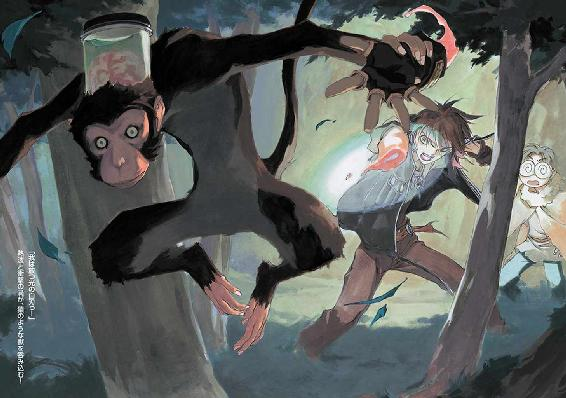

| 魔術士オーフェンはぐれ旅 新装版6 | |
| 秋田禎信 | |
| ティー・オーエンタテインメント (2012) | |



この作品は縦書きでレイアウトされています。
また、ご覧になる機種により、表示の差異が認められることがあります。
一部の漢字が簡略字で表示されていることがあります。
イラスト：草河遊也Ｙｕｕｙａ Ｋｕｓａｋａ
デザイン：ヴェイアＶｅｉａ
◆プロローグ
「どういうことだ!? どういうことだ!?」
繰り返されるのはその叫び──
爆発する熱湯に呑み込まれ、もがき消えゆくその叫びだった。
「シーナ！ 君は逃げろ！ 裏切った──奴が裏切った！」
彼女は目を見開いて、それを見ていた。いや、見ていたような気になっていただけだったのかもしれない。すべては夢の光景であるように、見たことだけは覚えているが、なにを見たのかは思い出せない。
「違うのか!? なんだ!? くそ──」
なにも分からない。眼球の中にあるなにかが揺れる。水の流れにもてあそばれるガラス玉のように、揺れながら沈んでいく。
地獄のごとき暑さが、息を吸うこともためらわせる。動けなかった。心臓だけが激しく脈打っているらしい。胸の痛みすら他人事のように、彼女は硬直したまま立ちつくしていた。
（胸の痛み......？）
意外なほどの衝撃を受けて、彼女は独りごちた。轟く爆音の中、痛みなど分からない。言葉も分からない。運命すらも、なにも考えられない。
そうだ。
彼女は、まばたきを忘れた目でその光景を凝視しながら──割れた心に、壊れた記憶にそれだけを刻みつけた。はっきりと強く、深く。
──これが痛みだ！
激しい痛み。去ろうとしない傷。自分のしたことに──しなかったことに──いや、やはりしたことに──延々と続く堂々巡りの後悔に、彼女は震えた。炎に焼かれ、息もできず死に行く痛み。棒で打たれ、弁明もできずに死に行く痛み。自らの喉に刃を突き刺し、皮膚にぷつりとした痛みを、生ぬるい感触を、すり抜けていくそれまでの感情を、神経を傷つけ、腱を断ち、骨に金属が触れる凍るような冷たさを我慢する痛み。どのような痛みをも見た。いや、それらに苦しみもだえる人を見てきた。
だが、今初めて知った。
これが痛みだ！
「シーナ！ 逃げろ！ 逃げろ──」
逃げろ。逃げろ。彼の言葉がどこまでも続く。
「逃げろ！ 逃げろ！ 逃げ──」
ろ。逃げろ。逃げろ。逃げ
「ろ──！」
「..................！」
音にならない声で、彼女はその男の名を叫んだ。名を呼んだのではない。ただ叫んだ。男はもう遠くに行きすぎている。取り返せない。そのことだけは、痛いほどに分かっていた。
痛み。これが痛み。
喉の痛み。酒場で繰り返し歌った歌。最後の瞬間にそれを思い出すのも痛み。
「逃げろ............！」
その声を聞くのも痛み。忘れることができないのも痛み。轟音の中、鋭い耳鳴りに脳が悲鳴をあげる。それも痛み。
シーナは大声をあげて涙をこぼした。大声をあげたこともあった。涙をこぼしたこともあった。だが同時にしたことは──気がつけば、なかったような......
それを同時にすること──泣くこと。詩のような言葉。それと唱える痛み。
◆第一章 温泉のない温泉宿
キエサルヒマ大陸にこれといった火山帯がないのは、もとは地下種族であった天人種族が地熱を嫌い、大陸そのものを改造したからではないかと考える者もいる。
それはこの大陸が火山帯なしには成型し得ない地形をいくつか持っているからだというのがその主張の根幹となるのだが、どちらにせよ、過去、大陸の支配者であった天人らドラゴン種族の力を以てすれば、そういった地形のひとつやふたつは創造できたであろうことも事実であり、結局のところ、真実は人類の記憶からは、遠い過去に隔離されたままだった。
実際、それで困っている者がいたわけでもない。
歴史を探究することは学者たちの大いなる娯楽であり、それ以上の意味はない──それが、大陸に住む人々の、おおむね統一された認識だった。
無論、そうは思わない者もいる。当事者たち。つまり、歴史学者たちである。
◆◇◆◇◆
「この仕事にはな、人類の未来がかかっていると言っても過言ではないんだ。そうは思わんかね？ ノサップ研究員」
「はあ。そうですね、コンラッド研究員長」
険しい山道をゆっくりと登りながら、ノサップは適当にうなずいた。とりあえず反論したいこともあったが──たとえば今の彼にとっては、歴史の解明よりも、リュックの紐を肩に食い込ませずに済む方法の確立のほうが完成を急がれているように思えたのだ──、まあそれを言うのも大人げない。せめてリュックを防水布製のものにしたほうが賢明だったのかもしれない。昨夜の雨で湿った革製のリュックサックは、異様に重いだけではなく、頭が痛くなるような異臭まで発するようになっていた。
秋の山。観光にはいいのだろうが、興味がなければ、涼やかな地上を離れ、肌寒い高地へと繰り出すのは馬鹿げていた。冬を先取り。まあ、キャッチフレーズとしてはいいのかもしれない。人は春に夏を望み、夏に秋を待ちこがれ、秋に冬を想い、冬に凍死する。
「実にいいものだ。学舎には感謝せねばならんな。重大な仕事を任され、己の好奇心を満たし、美しい景色を眺めながら、運動にもなる。まあ、あと、ついでだが、給料も振り込まれる──いや、娘の学費がなかなか大変でな」
「そうですね、研究員長」
ノサップはとりあえず賛同した。給料は確かに振り込まれるだろう。ただし、ついでではないが。
それをわかっているんでしょうね？
胸中で皮肉げにそうつぶやきながら、ノサップは、先を行く研究員長の丸まった背中を見上げた。山道をのしのしと歩いていくその身体が、とても中年の体力で支えられているとは思えない──が、容姿ははっきりと中年のそれだった。考えてみれば、研究員長の荷物は手提げ鞄ひとつであり、三十歳にひとつ手前のノサップが背負った巨大なリュックと比べれば、年齢差のハンデとせいぜいとんとんだろう。そう思えば、なにもこの中年より先に足をふらつかせつつある自分を恥じる必要などないのかもしれない。
なんにしろ、コンラッド──研究員長の恨めしき名前──は、陽気にあたりを見回しながら、ふと、遠い眼差しになってあとを続けた。
「娘がもう十八になったよ」
知っている。毎日知らされている。
うんざりとノサップは思ったが、研究員長がこちらの考えを読んだことは一度もない。
「不思議なものだな、ノサップ研究員。人は、歳をとればとるほど、金というものの大事さが身に染みてくる。だがなにに遣うのかと言えば、その大事さをカケラも分かっとらん者のためなんだ。娘の進学にいくらかかると思うかね？ わたしは礼服のサイズを直すのをあきらめざるを得んかったよ」
痩せればいいんでしょうに。
やはり声には出さずに、ノサップは独りごちた。
コンラッドがただひとりで、得意げにしゃべり続けるのが聞こえる。
「まあ礼服などはどうでもいいんだがな。問題は煙草だ。あれをやらん者は、あれは身体に悪い、あれをやるのは自殺行為だ、あれをするような奴はあれをやらない自分たちより劣っているのだからあれをやるべきではないという自分たちの忠告を聞くべきで、それを聞かないのはあれをやってるせいであれ中毒になっているせいだ、とこう言うんだ。分かるかね？ ノサップ研究員」
「そうですね、研究員長」
実のところ五つ目ほどの『あれ』でもうわからなくなっていたのだが、ノサップは適当にうなずいた。しかし煙草。口が寂しくなっているところにその名を聞いて、さらに苛立ちが募る。リュックの紐を両手で押さえながら歩いているため、吸いたくとも吸えない状況が何時間も続いていたのだ。
（まあ、仕方ないけどな。研究員長も、我慢してるわけだし──）
と。
コンラッドがポケットから紙巻き煙草を取り出し、なにげない仕草で火を点けた。大きく吸って──芳香付きの煙を吐き出す。
殺そう。
静かに、ノサップは心を決めていた。
だがそんな妄想はよそに、コンラッドは再び美味そうに煙を吐き出した。満足げなしわを目尻に刻んで、にこにこと続ける。
「ああ、至福だ──なにしろ、これをしてもなにかととやかく言うような輩がいないというのが素晴らしい。まあそれはそれとして、なんの話だったかな？ ああそうだ。人類の未来だよ」
そんな話だったかどうか確信はなかったが、ノサップは無言でうなずいた。否定する理由がない。というより、義理がない。
「過去というのは、一部始終、一切合切、遺産なのだよ。未来への遺産だ。文字通りの財産かもしれんし、負債かもしれんが。これは個人的なスケールにも当てはまる。若者は恥そのものを恥じるが、大人になると、少年時代にあまり恥をかかなかったことを恥じるようになる。経験という過去の財産が蓄積されていないこと。これを恥じるのだ。これはまったく正しい態度だと言える。分かるかね？ ノサップ研究員」
「そうですね、研究員長」
「実際、恥のかき方、取り繕い方が身についとらん者といっしょにいるのは、実につまらんことだよ。人は恥によって偉大にはなれないが、少なくとも一人前にはなれる......分かるかね？ ノサップ研究員」
「そうですね、研究員長」
「だが若者はたいてい潔癖性だ。大人にならん限り、恥というものがどういったものであるか、分からないのだろうな。金というものの価値に関しても同じだ。分かるかね？ ノサップ研究員」
三回連続はまずいかもしれない。そう気づくだけの気遣いは、ノサップにもまだ残っていた。
だがどうでもいい思いで、彼はうなずいた。
「そうですね、研究員長」
実際に、どうでも良かったようではあった──コンラッドは気にした様子もなく、ぺらぺらと講演じみた長広舌をぶっている。
それもそろそろ、終わりのようだったが。コンラッドはこちらを向くと、確認するように言ってきた。
「......ちなみにわたしは、娘の陰口を言っているわけではないぞ？」
「はあ」
曖昧に、うなずいておく。
やたら長いこの山道を延々と登り続けてきたこの身としては、この際、どんなことでもどうでもいいことのように思えた。ノサップは額から流れ落ちる汗に、高地の冷気が染みるのに鳥肌を立てつつ、あたりを見回した。山。どこまでも山の風景。レジボーンは有名な山岳地帯だった。紅葉が本格化するのはもう少しあとになってからであろうが、山々の緑にはやはりもうどこか暗い色がかかり始めているようでもある。風は文句なく冷たい。ここが本当に火山帯であったならば、高地とはいえここまで冷え込むこともなかったろうが。
「素晴らしいなぁ」
コンラッドが──伸びをしながら、欠伸のような声でそんな感嘆を漏らすのが聞こえてきた。煙草はもう吸い終わったらしい。携帯灰皿にそれを突っ込みながら、晴れやかに笑みを浮かべている。
「実に素晴らしい。ここは下界とは隔絶された楽園だ。静かな山と森、心地いい空と風、笑い声、悲鳴......」
............
「ん？」
「え？」
コンラッドとノサップは、お互いに奇妙な声をあげながら視線を交わした。確かに、どこかから、笑い声と悲鳴が聞こえてきたような気がしたのだが。
「猿の声かな？ このあたりには多いと聞いていたが」
不思議そうに、コンラッド。ノサップは、またもやうなずいた。
「そんなところじゃないですか？」
「うむ......まあいい。先を急ごう。さすがに疲れた。そうではないかね？ ノサップ研究員」
「そうですね、研究員長」
険しい山道を登り続け、足の裏から背筋まで、どこまでもひきつったような痛みが貼り付いている。彼はかぶりを振った。まったく、この山道は誰が作ったのだか知らないが、地元ではなんと呼ばれているのだろう。そんなことを思う。彼は適当に、思いついた名前を並べてみた。
天国へ続く地獄の階段。
登り登り登り登り登り道。
ザ・苦行の道。もれなく筋肉痛をプレゼント。自分の背筋に底知れない恨みがある方に最適。
と......
道の脇になにかを見つけて、ふとノサップは思考を止めた。
考えを改める。
険しい──というほど険しくはなかったのかもしれない。彼が見つけたのは、古い立て札だった。
『にこにこハイキングコース・終点
ご休憩は、この先80Ｍ、レジボーン温泉郷で』
◆◇◆◇◆
「うわーははははははははは！ とうとう年貢の納め時というわけだな、クソ借金取り！ 納税は明朗迅速、とっとと進み出て、このマスマテュリアの闘犬ボルカノ・ボルカン様の偉大な手により下敷きでこすり殺されるがいい！」
「きゃああああ！ 助けてぇぇぇぇっ！」
「はっはっはっ！ この日をどれだけ待ちわびたか！ 貴様との腐れ縁も、ここまでというわけだ！ いつもいつも悪運のみでこの俺様の正義の刃から逃げおおせてきた貴様だが、それもここまで！ なんてゆーか具体的に言うと、細長～い感じでとどめを刺してやるので、十秒やるから細長くなれ！」
「ぎゃあああああああっ！」
「............」
笑い声と悲鳴を聞きながらオーフェンが見たものは、崖っぷちで思い切り胸を張って大いばりする『地人』だった。細かく解説すればその歴史だけで数冊の本が書けるだろうが──つまりは、この大陸における先住種族のひとつだった。ドラゴン種族の渡来によって大陸の南端に追いやられた彼らを、彼ら自身の自治領以外で見かけることなど滅多にない。
体格は人間より遥かに小さく、成人しようと身長が百三十センチを越えることはないらしい。全体的にしっかりした骨格をしているので、ずんぐりした印象も受ける。子供のよ
うに見えるのもそのせいだろう。ドラゴン種族の力により閉ざされた、極寒の地マスマテュリア──つまり地人自治領に住んでいるためか、毛皮のマントを民族的な衣装としている。
目の前にいるその地人──ボルカン──は高らかに哄笑をしながら、腰に手を当て、ふんぞり返っている。腰には古ぼけた剣を下げていた。
そして──
オーフェンは、自分が右手で猫の子のようにぶら下げているもうひとりの地人を見下ろした。ぱっと見には、ボルカンと見かけでの差はさほどない。ただこちらのほうは分厚い眼鏡をかけているのと、剣を持っていないのと、手足をばたばたさせて泣きながら悲鳴をあげているのが、その違いだった。
首根っこをつかまれて、ぶら下げられた地人──ドーチンは、ひたすらに泣き声をあげていた。
「きゃあああああっ!? 殺されるうううっ!?」
「え～と......」
オーフェンは、静かに静かにつぶやいた。なにかひとつ、腑に落ちない。
身につけたものは黒ばかり。要するに黒ずくめの格好をした、二十歳ほどの男である。ただ唯一色がついているのは、額のバンダナだけだった。身体的な特徴は、特にないと言える──ごく一般的な黒髪、黒目、中肉中背、外から分かる傷もない。胸元に下げられた銀色のペンダントが目立つのも、そのあたりが理由かもしれない。剣にからみついた、一本脚のドラゴンの紋章。大陸黒魔術の最高峰《牙の塔》で学んだ魔術士の証である。それは事実上、最高の実力を持った魔術士の証明でもあった。
が、今はただぼんやりと立ちつくしている。彼は空いている左手でぽりぽりと頭をかきながら、ぼやくように告げた。
「俺にはちょっと理解しかねるんだが......」
「ふっ！」
と、思い切り勢いづいて声を発したのは、無論ボルカンである。彼はばっと腕を振ると、なにやら斜め四十五度のポーズで言ってきた。
「哀れな愚か者の頭には、少々荷が勝ちすぎていたようだな──自らの敗北も認められんとは！」
「一応、事態を整理してみよう。ことの起こりはだ、さっき、お前が突然木の上から落っこちてきて、斬りかかってきたんだよな？」
「うむ！」
渾身の力で、うなずく地人。
「俺様の完璧なる奇襲に、貴様らはあっけなく大打撃を受けたわけだ」
「そーか。俺には、リスの巣から木の実を失敬しようとしたお前が、たまたま枝から転げ落ちてきたように見えたんだが」
「ふん。敗者の歴史にはそう記されるのかもしれんな」
「んで、どうなったっけ？」
「あわてふためいた貴様らを、このマスマテュリアの闘犬の美麗な剣が、その優雅さとは裏腹に力強く叩き斬った！」
「あ、地面を転がりながら一所懸命じたばたと剣を抜こうとしてた間に、そんな夢を見ていたわけだな？」
「だが英雄にも誤算はあるものだ。奇襲は成功したものの、後続たる本隊の失策により、大局的には戦局は敗色を帯び──」
「ほほう。ようやく立ち上がったお前の上にドーチンが落っこちてきたことは、そーゆうふうに脚色されてるわけか」
「俺様は、己以外の者の無能さを呪いつつ、一時的な撤退......」
「俺の魔術で再三黒こげになりながらなお逃げる生命力には、なんつーか、とりあえず感心したことは認めるぞ」
「しかぁし！ 危機を好機と転じるのが、英雄の仕事！ 俺様は狡猾にも、戦場をこの切り立った崖の上に移動させた！」
「確かにまぁ、切り立った崖だなー。追いつめられてるのはお前だけど......」
「さらに、我が弟ドーチンに華々しい死に場所を用意してやろうと、一番槍を任せた！」
「ああ。こいつ、泣きながら突っ込んでくるもんだから、あまりに痛々しくて、生け捕りにしちまったぞ」
「そして今！ 絶体絶命の貴様に対し、俺様は寛大にも降伏勧告をしているわけだ！ まあ降伏しても、リング際でねばり殺すんだが」
「............」
とりあえず、そこでオーフェンは沈黙した。目を閉じる。すぐに開ける。息を吸う。すぐに吐く。なんとなく頭に浮かぶのは、どうしてだろうという疑問だけだった。どうしてこんなところにいるのか。どうしてこんなことをやっているのか。どうして空は広いのか。どうしてポストが赤いのかは......そのほうが目立つからだ、きっと。
今度は長々と息を吐いて──ため息というやつだ──オーフェンはつぶやいた。
「......そーか。だいたい分かってきた」
「うむ。分かったら、どーなるんだ？」
「こーなるんだ、あほたれがぁぁぁっ！」
オーフェンは力の限り叫ぶと──
ドーチンを抱え上げ、思い切りボルカンへと投げつけた。
「どぎああああああっ!?」
それが、ボルカンとドーチン、どちらの悲鳴だったのかは不明だが──
投げつけられたドーチンとともに、ボルカンは、崖の下へと転落していった。
あああああああああああ......
時折かすかに途切れたりもしつつ、悲鳴の余韻がどこまでも響きわたる。
そして、次第に途切れる時間のほうが多くなっていき、やがて完全な静寂が訪れた。
オーフェンは、ふっと息を漏らすと、
「......終わった......なにもかも......」
「あのー......」
ふと、声。顔を上げると、いつの間にか、近くに少年が立っていた。
線の細い印象の少年である。十四歳だったか──確かそのくらいだったと、オーフェンは記憶していた。金髪に縁取られた顔に困ったような笑みを浮かべ、冷や汗のようなものをたらしている。
「おお、遅かったな、マジク」
その少年──マジクに言いながら、オーフェンは体勢を直した。背筋を伸ばし、肩を鳴らす。
黒いマントは、ひいき目に見てもその少年にはまるっきり似合っていなかったが、当人はさほど気にしていないようだった。気づいていないわけではないだろうが。マジクはひとつうなずくと、
「あの地人たちを追いかけるお師様についてくのは無理ですよ。、ものすごいスピードで走ってたじゃないですか。嬉しげに」
「いや、そんなに楽しいもんでもないんだが......」
「クリーオウ、怒ってましたよ。お師様、荷物ほっぽりだして行っちゃったから」
「うーむ」
オーフェンは適当にうめくと、腕組みした。マジクのほうを見やって、続ける。
「どのくらい怒ってた感じだ？」
「どのくらいって？」
「昨日、ふたりで決めただろ。気まま暴発娘の危険度単位」
「あ、あれですか。そうですねぇ」
マジクも、こちらとそろいのように腕組みのポーズを取る。眉間にしわを寄せて、少し考え込んでから、
「......要・警戒ってところです」
「警戒かー。でもあいつの場合、警戒レベルからいきなり暴発することがあるからなー」
「要・ちょっと警戒のところからも、結構ありますしね」
「警戒不要っつっても、必ずしも安心していいわけじゃねえし」
「意味ないですね」
「そーだな」
オーフェンはあっさり認めると、ふと思いついてつぶやいた。空を見上げる。
「なんで俺たち、こんなことで苦労してんだろ」
「謎ですね」
「あっはっは」
「......な～に好き勝手なこと言ってるのよ」
もともと甲高い声を、なんとかせいいっぱい低くして、うめき声をあげて横から現れたのは──
金髪を背中まで伸ばした少女だった。山登り向けにということなのだろう、少し厚手の消炭色のシャツに、いつものジーンズ。シャツはサイズが大きいのか、脇のあたりがかなり余っているように見えた。小さなナップザックを背負っているが、その口から一見して不自然な細長い金属物がのぞいている。いやどちらかと言えば、ナップザックに収まった部分よりも、露出した部分のほうが長かった。銀色の壮麗なライン。背を伸ばし、祈祷する人間のようなシルエット。剣だった。
だが、振り返ったオーフェンの視界に最初に入ったのは、彼女自身ではなく、彼女の小さな金髪の頭の上にちょこんと居座った、黒い子犬のような生物だった。「のような」というのは伊達でもなんでもなく、文字通り、この生物は子犬などではない。
くああ、と大口を開けてあくびするその生物の下で、少女──クリーオウは、口をとがらせて言ってきた。
「わたし別に、理由もなく怒ったりしたことなんてないでしょ!?」
「そーか？」
オーフェンは、マジクと視線を交わして首を傾げた。マジクはとりあえず巻き込まれまいとしてか、さっと目をそらして無表情を保っている。
と、その間に、クリーオウが身体を割り込ませてくる。彼女はマジクを突き飛ばして場所を作ると、背伸びしてこちらの目をのぞき込んできた。
「どーゆう意味よ」
「だいたい、そーゆう意味だが」
「短気ってことなら、オーフェンのほうがよっぽどそうじゃない！」
「俺のどこが短気だ!?」
「あー！ ほら、そーやってすぐに人の首絞めて！ 噛むわよ!? 噛むわよ!?」
「あのー......」
横からおずおずと手を伸ばすマジクに向けて、クリーオウが素早く顔を向けた。しかめっ面で、告げる。
「似た者同士って言ったら、ぶつからね」
「う......黙ってることにする」
マジクは退散するように、身体を退いた。
オーフェンは嘆息まじりにクリーオウから手をはなした。高地の空気はさすがに肌寒い。不意に吹き付けてきた風に、すくむ身体を自分で抱き寄せると、彼は身震いしてつぶやいた。
「......そーいや、マントも荷物といっしょだったっけか」
少し後悔する。最初から着ておけば良かった。
得意げに、クリーオウが口をはさんでくる。
「ほーら。早く取りに行かなきゃ」
「お前が持ってきてくれりゃ、面倒がなかったんだろが」
「わたしはわたしの分は、持ってきてるもの」
さらにいっそう胸を張り、彼女は言ってきた。ナップザックと、頭の上の子犬（もどき）を示して、なにやら勝ち誇った表情を見せてくる。実際、この山道に入ることになって、彼女が持ってきたのは、これだけだった──荷物の大半、かさばるようなものは、すべてふもとの街に預けてある。オーフェンもそれは同じだったが、あの地人たちを見つけて、鞄ひとつ、道に放り投げてきてしまったのだ。
「ったく、あいつらと遭遇するとロクなことねぇな。もどる分、無駄足じゃねえか」
「......崖の下にたたき落としておいて、なお文句を言うっていうのは......」
マジクの指摘は無視しておくことにして、オーフェンはぼやきながら、あたりを見回した。彼らがいるのは、山の中、山道から少し外れて、切り立った崖の上だった。それなりに見晴らしはいいが、崖下から吹き上げてくる風がかなり体温を奪う。
鳥肌の立った腕をさすりつつ、オーフェンはもとの山道へともどるため、歩き出した。このあたりは人の手が入っているせいか、道を外れても獣道のような細い通り道が幾本もあるらしい。それらのひとつを通っていく。
ぱたぱたとあとをついてきて、クリーオウが聞いてきた。
「でも、あと少しなんでしょ？ 温泉」
「多分な。道が地図通りなら、あと五分もかかんねえんじゃねえかな」
「結構登ったわよね。まあ仕方ないけど。乗り合い馬車使うお金なんてなかったし」
もう機嫌がなおったのか、クリーオウは笑顔だった。ナップザックの紐をつかんで、小走りにオーフェンを追い抜いていく。三歩ほど先行したところで、彼女は肩越しにこちらを向いてきた。ナップザックから突き出した剣が揺れている。
「それで、なんて言ったっけ、その宿。オーフェンが選んだのよね？」
「ああ。なんていったかな......ええと、微妙に矛盾した名前の......そうだ」
オーフェンは後ろの頭に両手を回し、思い出して──告げた。
「ペンション森の枝、だったっけかな」
「温泉つきの宿なんて、なんだかいい感じよね。わたし、そーゆうの初めて」
彼女の機嫌が良くなったのは、単にそれが原因らしかった。頭上に張り付いている黒い子犬をぺしぺしと叩くと、
「レキもきっと初めてよね。お湯、大丈夫かな、この子」
「どーだろな。だいたい、温泉なんつー奇特なもんが、フェンリルの森にあったとも思えんけど」
オーフェンは疑わしげにうめくと、クリーオウの手で叩かれるたびに目を閉じたり開いたりする、その生物──レキを見やった。とりわけ、その目を。一対の、まん丸い目。緑色の瞳。地上最強の魔術を操る生物群、いわゆるドラゴン種族の証となる緑色の瞳である。
深淵の森狼。ディープ・ドラゴンと呼ばれる。このレキは、その子供だった。もっとも、成体が体長四、五メートルにも達することを考えると、どちらかと言えば赤ん坊というほうが正しいのかもしれない。ディープ・ドラゴン種族の生態など、オーフェンも詳しいことは知らなかったが。というより、ドラゴン種族の中でも最強と言われるもののひとつであるこの種族の生態は、人類にとってまったくの未知と言っても過言ではない。
「ぼくも初めてです。地面からお湯が出てるんですよね？」
とことこと、クリーオウに追いつくように早足でついてきていたマジクが横から言ってくる。オーフェンは、足は止めないまま肩をすくめた。
「俺だって初めてだよ。前から噂は聞いてたし、行きたかったんだが......《塔》の連中は、なんだかみんなそろって馬鹿にしてたみたいだな。そーいや、なんでなんだか」
「東部だからじゃないですか？」
「......かもな」
なんとなく思い当たって、オーフェンはうなずいた。
きょとんと、クリーオウが目をぱちくりさせる。
「どういう意味？」
「ああ。ま、一般的に、大陸西部の人間は、東部を得体の知れない未開地だと思ってるし......東部の人間は、西部を魔術が支配する恐怖の辺境だと思ってるし」
「......そんな極端なこと考えてる人、いる？」
かなり疑わしげに眉根を寄せて、クリーオウ。オーフェンは口元を歪ませた。苦笑の一歩手前でなんとか耐えて、疑問顔の少女に答えてやる。
「そりゃ、お前みたいにトトカンタのご令嬢は、王都の近代設備のことを聞いたこともあるだろうけどな。都市外は、そういう情報から遮断されてる。百年前から新しい情報が入ってない辺境の村にでも住んでいれば、認識だって百年前のままさ。タフレム市はある意味、西部で一番耳ざとい街かもしれねえが......そこですら、存外たかが知れてるもんだよ。魔術士も、しょっちゅう東部と西部を行き来してるわけじゃねえしな」
「どうして？」
「北はキムラック教会、中央はフェンリルの森、南はマスマテュリアに──東部と西部は隔てられてるからな。海路以外に道がない。互いの情報も少ないから、偏見も仕方がないってところかな」
と──ふと思いついたように、またマジクが口をはさんでくる。
「でもお師様は、東部にも来たことがあるんでしょう？」
オーフェンはマジクへと向き直って、少し迷ってから──曖昧にうなずいた。
「まあ......な。一回だけだけど。でも、あん時ゃ、いろいろごたごたしてて、ゆっくり観光なんて場合じゃなかったしなぁ」
「どういうことです？」
「俺も五年前の時は、問題ありありの鳴り物入りで王都入りしたもんだから、宮殿魔術士たちの監視が──」
と、言いかけたところで、山道へと出た。
無論舗装などされているはずもないが、しっかりと踏み固められ、かなり歩きやすい道になっていた。馬車が通るせいなのだろうが、道幅もかなりたっぷりとある。
山の空気。森の香りが五感を洗う。大きく開けた空が、はるかな高みへと広がっていた。雲は薄く伸び、音のない風が吹く。それはいいのだが......
「あれ？」
オーフェンは、目をぱちくりとさせた。もと来た山道。それに関しては間違いないはずだった。
道のわきに、木の枝が落ちている。すぐそばの木から折れたものだ。それといっしょに地人が落っこちてきて、それで結局さっきの騒ぎになったのだが......
「荷物......」
マジクが、同じようにあっけに取られた声で、つぶやくのが聞こえてくる。
道の真ん中に放り出してあった荷物。古ぼけた鞄ひとつ──ふもとの街で、格安で買ったものだったが。
その鞄が、なくなっていた。
◆◇◆◇◆
「冷たいこの山に埋めてはいけない。
あなたの亡骸を埋めてはいけない......」
エリス・ショスキーはいつものように口の中で歌いながら、広間の中央に設えられた立体地図を眺めていた。なにもしたくない時は、ここにいるに限る。
「あなたにこの指をあげる。
冷たい皮膚の下に暖かい血があるの信じて......」
「なんじゃい、その歌は」
背後から聞かれて、振り返らずに答える。
「昔、ママがよく歌ってたじゃない......歌詞、違う？」
「そんな、死体だのなんだの血なまぐさい歌が、酒場でうけるもんかい。まったく、いくつになってもお前は馬鹿だね」
エリスはそれには答えずに、静かに嘆息した。不服だからではない──陰鬱にそう認める。そうだ。わたしはきっと馬鹿だ。
エプロンがいつも清潔であることが、彼女の誇りだった。広間の一番上等なソファーに腰掛けて、そのエプロンを手でなでる。
地図は言うまでもないが、このあたり一帯の地形を模している──粘土と土と木細工でできた模型である。レジボーン山脈と呼ばれる高地を大まかにかたどっている。誰が造ったものなのか、エリスは知らなかった。恐らくは父親だったのではないかと思っている。誰にも聞いたことがないので、定かなことは知れないが。
ふっと息をついて、立ち上がる。目の裏に軽い倦怠感。立ちくらみというほど強くもないが、一瞬だけ意識が身体から断絶される。その一瞬に、彼女は身体よりも先に立ち上がった意識が、自分自身を見下ろしているような錯覚を味わっていた。自分でも苛立つような、緩慢な動き。機敏になりたいとは思わないが、遅いということがなにか損しているのではないかと心をざわめかせる。
二十歳になった自分の身体。どうというわけでもない──生まれた時から彼女とともにあり、そして二十年が経った自分の身体。鎖骨が目立ちすぎるのが悩みだと友人に言ったら、笑われてしまった。そんなもの、気になるなら隠しなさいよ。それで済むんだから、大した悩みじゃないわよ。そう言われた。確かにその通りだと思う。
ああ、苛立たしい。
三つ編みにした後ろ髪が、背中を軽く叩くように揺れているのを感じる。彼女は自分の母親のほうへと振り返った。自分より幾分か背の低い母親。すっかり白髪のほうが多くなった母親を、エリスはきっかり三秒、見つめた。彼女は気づいた様子もなく、モップを持って、黙々と床を磨いている。
「掃除？」
エリスは、なんとなく聞いてみた。母親が顔も上げずに、素っ気なく答えてくる。
「今日は久々に客がくるからね」
「いくら払ってくれるんだか......」
苛立たしく鼻から息を抜いて、エリスはかぶりを振った。腰に手を当て、母親を見下ろす。
彼女はなにも答えてこない。ただ黙ってモップがけを続けている。
唇を噛んで、エリスはうめいた。
「お金のある客は、みぃんなロッツのほうに行っちゃうのよ」
「愚痴ばっかりたれてないで、そろそろ客引きの時間じゃないのかい？」
ようやく答えてくるかと思えば、そんなことを──
今さら怒りを覚えるでもないが、エリスは落胆をさらに深めた。だが──そんなことを表に出したところでどうなるものでもない。
「分かってるわよ」
と──
予感めいた閃きで、彼女は振り向いた。広間の最も大きな窓から、森と道と、そして宿の玄関が見える。
普段ひとけのない──苦々しくエリスは認めた──宿に向かって、男がふたり、近づいてきている。ひとりはアタッシュケースを提げた、背の高いダークスーツの男。もうひとりは、目の据わった貧相な男だった。こちらは登山服姿で、汚れ具合からすれば、山菜取りでもやらされていたのだろうか。
「また来たわ、あいつら」
エリスは奥歯を噛み合わせて、毒づいた。エプロンの前を、両手でぎゅっとつかむ。絞られた布が、身体を少しだけ締め付けた。
「何度来たって関係ないわさ」
母親が小さくつぶやく。
エリスは、今度は自分が無視して広間を出た。広間のすぐ外は玄関になっている。エリスは塵ひとつ落ちていない玄関──母親が掃除したばかりなのだろう──を見回して、傘立てに常備してあるスティックボールの木製のスティックを見つけると、それを取り上げた。表情を固くして、待ち受ける。
ノック。
震えるように、彼女は息を吐き出した。肩がわななく。指紋を擦り込めるほどに、緩やかな曲線を描くスティックを強く握ると、一歩を踏み出す。
彼女は意を決して扉を開けた。予想していた顔がふたつ、扉の外にならんでいる。
「やあ、こんにちは」
ダークスーツの男が、慇懃な笑みを浮かべて頭を下げる。その後ろにいるもうひとりの男、かなり年若い登山服の男のほうは、まぶたを半分下げた表情で、挨拶もなくじろじろと宿の中を眺め回している。
唾でも吐きたいところだったが、エリスは踏みとどまった。胸中で、境遇を呪う──屋内でさえなければ。
「また来たわけ？ しつこいわね」
彼女は可能な限り刺々しく告げると、これもまた可能な限り胸を張った。
「何度来たって、答えは同じよ」
「そうは言っても、違う答えを聞かないことには、我々のボスが収まりつかないのでね」
「あんたらのボスなんざ、くそくらえよ」
淡々としゃべるダークスーツに向かって、彼女は吐き捨てた。足は震えていないし、声にも怯えの色はない──ほっとしながら、彼女はそう自覚した。あと五分は持ちそうだわ。神様ありがとう。
「このアマ、いい加減に──」
「お前はしゃべらなくていい」
不意に口出ししてきた若い男を、ダークスーツが後ろ手に制する。ダークスーツは呆れたように眉をつり上げた。
「お互いに、悪い話ではないと思うのだけれどな......」
「話なら何度も聞いたわよ。で、何度も断ったはずよね。あんたらロッツの都合で、なにもかも好きなようにされてたまるもんですか」
「我々のボスは──」
「失礼だが」
と──
唐突に誰かが割り込んできて、エリスは喉まで出かかっていた言葉を胸の奥に飲み込んだ。見ると、すぐ横、つまり玄関の中にとっての死角から、太った中年の男がこちらをのぞき込んできている。男の闖入は、ダークスーツらにとっても不意の出来事だったようで、彼らもきょとんと目を見開いていた。
一瞬なんのことだか分からなかったが──エリスは、ようやく思い出した。今日は客が来るのだ。滅多にないことなので、思いつかなかったが。
ぼうっとしている間に、その太った男はのたのたとした動きで玄関の中に入り込んでこようと動き出していた。男には悪気はないのだろうが、当然、ダークスーツらを押しのける格好である。
彼はにっこりと笑うと、
「ここが、森の枝かね？ わたしはコンラッド──予約をしていたはずだが」
「あ......はい。おひとりですか？」
エリスは、わたわたとうなずいた。その男──コンラッドとやらの荷物を受け取ろうと手を差しだし、その手に握っていたスティックをあわてて背後へと隠してから、その男が荷物など持っていないことに気づく。と、これまたのっそりと、今度は貧相な若い男が姿を現した。こちらは、馬鹿でかいリュックサックを背負って肩で息をしている。もう涼しいというのに汗だくになって、顔色をどす黒く変色させていた。
「彼もだ。彼は、ノサップ君。わたしの助手でね」
コンラッドは自分の腹をさすりながら、その若者のことをそう紹介してきた。どう答えていいか分からずに、とりあえずうなずいておく。ちらりと見やると──ダークスーツらは、もうこちらに背を向けて遠ざかりつつあった。まあ、彼らが観光客の前でもめ事を起こすほど馬鹿ではないのは分かっていたが。
「部屋はどこかね？ 急ぐわけではないが、わたしにはノサップ君がかなり限界に近づいているように見えるのでね──」
「あ、はい、すみません......あの、お荷物、持ちましょうか？」
エリスは自分で言いながらも、ノサップとやらが背負っているそのリュックサックを彼女が運ぶなど不可能だということははっきりと分かっていた。コンラッドが、朗らかに笑う。
「ははは。いえ、結構。ノサップ君は、機材を運ぶことに対してもサラリーを受け取っているわけです。そうだね？ ノサップ研究員」
「そうですね......研究員長......」
どこか──なんというべきか──まあ控えめに言えば、今にも殺してやりたいと言いたげな暗い眼差しで、ノサップがコンラッドへとうめく。
エリスはとっておきの微笑みを浮かべながら、はっきりと悟っていた。
（やっぱり......金を持ってそうにはないわね）
冷たいこの山に埋めてはいけない。
あなたの亡骸を埋めてはいけない。
金を持った客は来ない。来るはずがない──温泉のない温泉宿などに。
◆第二章 金のない客
「どーゆうことだ!?」
オーフェンは激しく左右を見回して叫んでいた。ひとけのない山道。
「ない、ない、ないぞ!? ここにもないし、あのへんにもないし、なんかもーそこいらにもないし！」
ばたばたと暴れながら、あちこちの茂み、木の陰、大きな石の裏までのぞき込む。
ぼけっと近くに突っ立って、マジクとクリーオウがのんきな声をあげてくるのが聞こえた──
「あのー、お師様ー」
「オーフェーン。もう鞄なんてあきらめて、さっさと行きましょうよー」
「馬鹿かお前ら!?」
オーフェンは跳ね上がるように顔を上げると、両手をわななかせた。
「宿代もなにもかも、あの鞄の中だぞ!? 宿に着いたところで野宿じゃねえかっ！」
「ええ!?」
「ない、ない、ないわ!? ここにもないし、あのへんにもないし、なんかもーそこいらにも！」
「......分かればよろしい」
自分と同じようにばたばた暴れ出したふたりに満足して、オーフェンはうなずいた。なぜか悲しくもなったが。
首を傾げ、うめく。
「しかし、どういうことだ？ 鞄が風で転がされたりするわけでもなし......そうなると、誰かが持っていったことになるよな」
「通りがかった人が、落とし物だと思って持っていったんじゃないですか？」
言ってくるマジクに、オーフェンはうなずいた。普通に考えれば、そんなところだろう。
「そだな」
とつぶやいて、山道の左右を──つまり、登るほうと下るほうを、交互に見やる。
「善意で拾ったにせよそうでないにせよ、鞄拾った奴が行けるのは、登りか下り、どっちかしかないわけだが......」
「じゃあ、登りましょうよ」
クリーオウが、ちょこんと横から首を突っ込んでくる。
「どっちがどっちだか分からないんなら、ここまで登ってから降りるのって、なんか損な気がするもの」
「......まあ、確かにな」
オーフェンはほおをかきながら、山道の行く手を見上げた──
レジボーン山脈、そう呼ばれる高地。すそ野に位置するナッシュウォータは、教会管理区のすぐ南にある。
中規模程度の、取り立ててなにもないその街から、レジボーンの高地に向けて、この山道は続いていた。その行く手には、大陸東部でも有名な温泉街が待っているはずだった。
風が吹き抜けていく。
ただでさえ冷たい風が、閑散とした街をくぐるとさらに凍えるのはどういうことか。その神秘は不思議ではあったが、あえて追究しなければならないことでもなさそうだった。直感的に心に染み込んでくる冷たさに、芯から身体が冷えてゆく。
高地の空は美しかった。ついでに言えば、街そのものもこぎれいではあった。広がりゆく青と白の天空。風は帯を引くように吹きすさび、空と街とをかき回す。優しく冷たい風の手は、誰の肌をも撫でていった。
とりあえず、オーフェンは身震いした。
「えーと......」
困って、意味のないつぶやきだけが漏れる。
見ると、マジクとクリーオウのふたりも、目を点にして棒立ちになっていた。だらんと横に垂らした腕が、そのすべての感情を物語っているようだったが。
ようやく口を開いたのは、マジクだった。
「お師様......」
つぶやきに意味がなかったのは、自分と同様だったが。そのあとを継ぐように、クリーオウがこちらに視線を投げてくる。
彼女は控えめに言ってきた。
「オーフェン......これって、ゴーストタウンなんじゃないの？」
「......ンなわきゃねえだろ」
心にもないことを言ってオーフェンは、また街のほうへと向きやった。
彼らが立っているのは山道の頂点──つまり街の入り口だった。街の周りに柵があるわけではないが、街とその周囲とは、完全に隔てられている。街は森に囲まれていた。背の高い建物がそこかしこに建っているため、街は森から頭ひとつ分高くそびえ、圧倒的なほどに広がっている森に対して、決して負けてはいない。ただし、ただそれだけと言えばそれだけの勝利ではあった。
街はなだらかに広がっている。緩い斜面に広く築かれてきたといった形である。建物は古いものもあり、新しいものもあり、いかにも観光地の街並みらしいと言えた。道は広く、景観は良好。あちこちに道順案内の立て札が並んで、あちらは温泉宿、こちらは温泉宿、向こうもその向こうもやはり温泉宿と、うるさいほどに主張している。入り口のすぐそばに、ポリスボックスとおぼしき小さな丸い屋根の建物があったが──それは無人だった。多分、街全体が無人に見えたのも、そのせいだろう。必ず人がいなければならない場所が無人であると、栓が抜けているように思える。
もっとも実際に、街は無人に見えた。
風が冷たいからかもしれなかったが、広い道には人影がひとつもない。ただ風が通り抜けるためだけの道と化している。
「温泉なんて、どこにも見えないけど」
きょろきょろと見回しながら、クリーオウ。オーフェンは肩をすくめた。
「そりゃ、外から丸見えじゃ具合悪いだろ。屋内にあるんじゃねえか？」
「露天風呂みたいなの期待して、水着も買ってきたのに」
水着を着て風呂に入るのもどうかとは思ったが、それは言わないでおく。
そのかわりにオーフェンは、街の中に足を踏み入れた。それまでの山道とは違って、しっかりと舗装された道である。舗装といってもアスファルトなどではなく、しっかりした石畳だった──ここまで機材を運べないというのもあるのだろうが、むしろ街の外面を良くするための配慮だろう。
と──ふと気づいて、オーフェンは足を止めた。
「水着を買った？ お前、金なんて持ってないだろが？」
「あ、オーフェン、ほらほらレキって、しっぽつまむと後足だけで立つの」
言いながら実際に彼女が、レキ──少女の頭上で寝ていた黒い子犬の名前だが──のしっぽを軽くつまむ。と、目をぱちくりとさせて、驚いたように子犬が立ち上がった。だがそんなものには構わずに、オーフェンは彼女の顔をのぞき込んだ。
「......ごまかしてるつもりか？ あのな、俺の財布勝手に持ち出すのはやめろと、何度も言っただろ？」
クリーオウの碧眼をぎろりとにらみつけ──告げる。が、彼女はあっけらかんと、ごく当然のように言ってきた。
「いーじゃない。別に」
「なにがいいんだ!? ふと財布を開けたらなんか中身が少なくなってた時の虚しさ、お前は分からんか!?」
と──
クリーオウの表情が、少し変化する。彼女は口をとがらせて、胸元で拳を握った。だだをこねるようにその拳を上下させ、そして実際にだだをこねてくる。
「だってオーフェン、お小遣いくれないんだもの！」
「なんで俺がお前らに小遣いくれてやらにゃならないんだ！」
「じゃあ誰がくれるのよ！」
「知るか！ 自分の分くらい自分で稼げ！」
「ぶーぶーぶーぶー」
親指を下にしてブーイングを行う彼女のことはもうほっておくことにして、オーフェンは再び街に向き直った。
マジクがあちこちを見回している。オーフェンが気づくと向こうも気づいたのか、こちらを向いてきた。小柄な肩を落として、少年は静かに口を開いた。
「なんか......嫌な雰囲気ですよね。観光地なら、誰かひとりくらい道歩いててもいいと思うんですけど......」
「そうだな──なんだか、疫病で全滅したって雰囲気だよな」
「ヤなこと言わないでよ」
ぞっとしたのか後ずさりして、クリーオウ。オーフェンはため息をついて、また街を眺め回した。左右に視線を振って、やはり無人を保つ温泉街を見やる。ないものはない。いないものはいない。
仕方なくオーフェンは、視線を上にあげた。空。太陽はまだ絶頂を迎えたばかりである。
「昼時か。どう考えても、人通りがなくなるって時間帯じゃねえよな」
と、つぶやいた、その時だった──
空気に、重々しい振動が広がる。振動は、耳の奥にたまりそうなほど鈍く響きわたった。ごわん、ごわん、ごわん、ごわん......
「......警報？」
不意に聞こえてきた鐘の音に、オーフェンは顔をしかめた。鐘の発生源がどこかは知らないが、街のどこかであるのは間違いないだろう。
鐘の音は続く。
「......なんなの？ なんなの？」
びっくりした表情で──だがどこか面白そうに──クリーオウが、肩からナップザックを下ろして、ザックの口から突き出している剣の柄をしっかと握るのが見えた。
「待たんかい」
オーフェンはあわてて、剣を抜き放つ寸前の彼女の手を押しとどめた。意外なことだとでもいうような眼差しで、クリーオウが声をあげる。
「なぁに？」
「意味もなく抜くな！ 刃物なんぞ！」
「なによぅ。意味あるわよ。警報だもの」
渋々と剣から手を離し、クリーオウはあたりを適当に示した。
「それに、なんか街の様子も変だし。きっと危険よね。身を守らないと大変♪」
「なんで『♪』がつく、なんで」
気楽に手のひらを打ち合わせて言ってくるクリーオウに、オーフェンは疑わしげに半眼で応じた。とりあえずクリーオウの剣が入ったナップザックはこちらで引き取ることにして、右肩に引っかける。
「ったく、なにかっちゃ理由見つけて剣抜こうとしやがって。こんな白昼に街中を抜き身の剣持って歩いてたら、緊急逮捕されたって文句言えねえだろが」
「されないわよ。悪いことしてないんだもの」
「刃物持って歩くだけで犯罪なんだよ！」
オーフェンは怒鳴りつけてから、頭を抱えた。
「ああああ......誰でもいいし、どんな方法でもいいから、俺を助けてくれ......」
「オーフェン、なんか悩みがあるみたいね。わたしが聞いてあげよっか？」
「クリーオウ......それ以上言うとお師様泣くかもしれないから、やめてあげたほうがいいと思うよ」
ぼそぼそとつぶやくふたりのことは耳から閉め出し、頭をはさんだ手の間で、オーフェンは弱々しくかぶりを振った。
「ううう。なんでこんなしょーもないことで苦労しなくちゃならねんだ......」
「なんかぶつぶつ言ってるわよ」
こちらを指さして──見ていないからわからないが、多分そうだろう──、クリーオウが言っている。オーフェンは無視して続けた。
「あの福ダヌキどもは相も変わらず借金を返そうともしやがらねぇ──それどころか返せる見込みすらありそうにねぇ。あんまり見込みがないもんだから、俺もなんだか最近、あいつらの顔見ても『借金』って言葉が浮かんでこないくらいだ」
「このごろは、言葉よりも先に物理的な攻撃が飛んでるみたいですもんねぇ」
と、腕組みして──これも分からないが、きっとそうだ──、マジクが言っている。これも無視。
「どっかの馬鹿娘は、頭の上にのっけた小動物のせいで見渡す限り焦土にするくらいの火力を手に入れてから、暴走に拍車がかかりっぱなしだし」
「誰が暴走で拍車がかかりっぱなしなのよ」
「どっかの馬鹿弟子は、なんかむやみに勉強熱心になったはいいが、そのわりにゃー、ちっとも上達しやがらねぇ。面倒見る時間が増えただけ俺が損じゃねぇか。どのみちバグアップに送金してもらってる月謝が増えるわけでもねぇしよ」
「う......上達しないのは認めますけど、お師様、言うほど練習につきあってくれてないじゃないですか」
「なんだかやたらと不幸を感じるぞ！」
オーフェンは叫ぶと、顔を上げた。ぐるりとふたりを見やって、順番にびしびしと指を突きつける。
「お前らだ、不幸の原因は！ なにかっちゃ俺に面倒かけやがって！ もーちょっとこー、通り雨のよーに、なんも残さず通り過ぎることができんのか!?」
「なんで急に比喩的なのよ」
「ンなことに疑問を持ってないで、せめてなんにも起こさんように自戒しろよな！ 刃物も黒い悪魔の暗黒魔術も禁止だ！」
クリーオウの頭の上の黒い悪魔──レキを指さし、叫ぶ。くんくんと鼻を動かすレキから指を引っ込めて、
「そーだ、決めたぞ！ 俺ももう、変なやっかいごとには首を突っ込まないことにするからな！ お前らの尻拭いも含めてだ！ てなわけで俺は今から、黒魔術士でもなければモグリの金貸しでもない！ 人生ボードにトラブルのピンが刺さることもなにもない、ごく平凡な一般市民になる！」
「またさらに比喩的だし」
「うるせえっ！ えいくそ、近づくな！ なんかトラブルを期待するよーな目で見るな、畜生！」
「あー、ひどいじゃない！ 人のこと疫病神みたいに言って」
「あのー、お師様......」
「なんだよ！ 言っとくが、お前も例外じゃねえからな！」
「そうじゃなくて......あの......」
ふと──
オーフェンは、我に返った。それはマジクの蒼白な顔色に気づいたからかもしれないし、クリーオウの甲高い声が脳に突き刺さったせいかもしれない。あるいは、単に風が冷たかったからかもしれなかった。どのみち、理由はどうでもいい。オーフェンは、我に返ってマジクの指が指し示す先を見やった。
ぞっとしたように少年が指さしているのは、後方──つまり山道の方向だった。クリーオウも、ひとまず黙ってそちらを見やっている。そして、不思議そうにつぶやくのが聞こえてきた。
「......なに、あれ？」
「............？」
オーフェンは眉根を寄せて疑問符を浮かべていた。山道のはるか遠くから、なにやら砂煙が近づいてきている。警鐘が鳴り続いているせいでよく聞こえなかったのだが、地鳴りのような轟きも地面を揺らしているようだった。
その砂煙の中にあったのは──
何台もの馬車だった。猛スピードで街に入ってくる。街の入り口にいたオーフェンたちのすぐそばを、かすめるように走り抜けていくと、馬車のすべてはいっせいにすさまじい音を立てて急停車した。中には、馬ごと転倒した馬車もあったようだが。停車した馬車の扉が開くと、そこからばらばらと乗客が吐き出される。
そして......
第二の地鳴り。振り返ると、いつの間にか、街中のほうから、信じられない勢いで大勢の人間が走ってきていた。老若男女、あらゆる人間たち──だがみな例外なく、色とりどりの旗を掲げている。
どれもみな違う旗だった。『カーネギーの宿』『ホテル・サリー』『黒の白馬亭』『ビーフの住処』......読み上げるだけで目がちかちかしてきそうなカラフルな旗が数十本。そしてそれを掲げて全力疾走してくる人間が同じ数。全員がにっこりと営業スマイルを浮かべて突進してくる。
「な............」
唖然と言葉を失っているうちに、ふたつの地鳴りは迷うこともなく正面衝突した。旗を掲げた彼ら彼女らが一目散に、馬車から出てきた乗客に張り付いていく。
彼らの第一声は──偶然かそうでないかは分からないが──まったくの同時だった。
「ようこそ、レジボーンの温泉郷へ！」
あとは、すべての動きが約束事のように整然とこなされていくだけだった。馬車から降りた紳士の前に『ドライブ・イン』の旗を掲げた男が滑り込むと、さっとかがむようにお辞儀して、早口でまくし立て始める。
「お客様！ レジボーンの温泉郷にようこそいらっしゃいました！ 遠路はるばるお疲れでございましょう！ 当宿では二十四時間、いつでも奇跡の泉──温泉のことですが──にお入りいただけます！ 部屋も一流ならば食事も一流！ このご旅行を忘れ得ぬ思い出にすると約束いたします！ ご宿泊は当『ドライブ・イン』へ......」
また別の場所では、『ジョイ・コントローラー』と書かれた横長の旗を肩に掛けて担いだ若い男が、脱色した金髪をさらりとかき上げ、微妙に不自然な決めポーズで立っている。はしゃぎながら馬車から降りてきた二人づれの女に流し目を送ると、
「ヘイ、ガール──羊を迷わせずに極楽へとお連れするのがこの俺さ」
ウインクまでしている。あまり受けなかったようではあったが。
そしてまたさらに別の場所では貧相な男が泣きながら五体投地して若い夫婦の行く手を遮っているし、その向こうでは、顔を真っ白に塗った男がナイフを十本ほどジャッグルして、子供たちの注意をひいていた。
そして──
「おやお嬢様！ 実に気品あるお顔をしてらっしゃる──それとも、お姫様がお忍びのご旅行ですかな？ はは」
自分の近くで声があがったので振り向いてみると、黒いスーツを着た男が、にこやかにクリーオウに話しかけているところだった。手に持った旗には、『ロッツ・グループ』と書いてある。
年齢は、声の調子からすれば三十代の半ばというところだろうか？ だがその横顔はもう少し若く見えた。左目の上あたりに小さな傷痕があり、恐らくは前髪で隠しているつもりなのだろうが、正直かなり目立つ。
その男に、クリーオウが真正直に答えるのが聞こえてきた。
「お姫様じゃないわよ」
「おっと、これは残念──もっとも、あなたがお姫様だったとしても満足いただけるお部屋が用意してあるのですが、どうですかなお嬢様？ おやおや、こちらの子は弟さんですかな？ 姉弟でご旅行？ それとも、ご両親がいっしょですか？ あ、帽子なのかと思えば、可愛いワンちゃんですか、こりゃ参った」
歯切れ良く言いながら──男はクリーオウの頭の上で丸まっているレキに手を伸ばそうとした。機敏に反応したレキが犬歯を出したのを見て、そつなく指を引っ込めるが。
頭の上に手をやってレキをなだめながら、クリーオウが肩をすくめた。
「全部外れ。マジクは弟じゃないわよ。で、親もいっしょじゃないけど、オーフェンがいるから」
「は？」
「オーフェーン」
クリーオウが、こちらを向いて呼びかけてくる。オーフェンは無言で手を挙げた。
男はとりあえず、上から下まで、こちらを観察したようだった。ゆっくりと視線が移動していく。
そして──燃料でも切れたように、ふっと、男の顔から笑みが消えた。
ちっ、と聞こえよがしに舌打ちしてから、男はくるりと背を向けた。
「くそ、俺としたことが、貧乏人に声をかけちまうとは......」
そのまま、ぶつくさとぼやいて去っていく。
「............」
しばし、無言。脳がなにかを思いつきそうなのに言葉を思い浮かべられない。
オーフェンはとりあえず、顔を上げた。なぜかうつむいていたのだ。顔を上げると、また別の旗を持った男と視線があった。ちょうどその男は、客を取り逃がしたところのようだった。
微笑みかけようとした。その男が、こちらに微笑みかけてくることを予想して。
だがその男は一瞬──ほんの一瞬だけ──鼻の穴を片方だけ広げ、やはり片方だけ口元をつり上げ、同じく片方の眉をひくつかせた。つまりはあからさまに、嫌そうな顔をしてみせた。
そして、そっぽを向いた。
「............」
また呆然としているうちに、別の人間と視線がぶつかる。別の旗を持ったその女は、その一瞬、視線が交錯しただけで、手を振ってきた。『しっしっ』と。
「........................」
海か空か。
なにか青いものを見たくなった。
「なあ」
オーフェンは、かなり長いこと立ちつくしてから──クリーオウとマジクに向き直った。
「なんか俺の身体のどこかに、預金残高とかそーゆうのが書いてあるのか？」
「そうねえ、書いてあると言えば書いてあるのかも......」
「お師様の場合、哀愁とかがにじみ出るはずのところから、貧乏臭さが散布されてるのかもしれませんね」
「........................」
「あ！ ででででででも、気にすることはないと思うの。確かにお金関係には徹底して弱いかもしれないけど、オーフェンのいいところっていっぱいあるわ！」
「そ、そそそそうですよ、気にすることないです。粗暴なところとか物をすぐ壊すところとか意外とものぐさなところとか目つき悪いところとか社会的地位が皆無なところとかをフォローする良い部分が、そのうち見つかるかもしれませんし！」
彼がいきなりしゃがみ込んで地面に『の』の字を書き始めたことがよほど驚きだったのか、あわててなにやら慰め──にはなってなかったが──を口にし始めたふたりに、オーフェンは指を止めた。ふゥとため息をついて立ち上がる。ズボンの尻をはたいて汚れを落としているうちに──
もう既に見回してみれば、そこに彼ら以外のひとけはなくなっていた。あたりを埋め尽くしていた人混みは、ぞろぞろと街中のほうへと移動している。馬車もとうに、街を出て山道へと引き返しているようだった。
ぽつん......と。
風が吹く中取り残されて、オーフェンは呆然とうめいた。
「なんだったんだ......？」
「客引きだったみたいね」
クリーオウがつぶやくのが聞こえてくる。
「ここの名物らしいですよ」
どこからか観光ガイドを取り出して、マジクが読み上げる。
「ええと......温泉宿がたくさんあるみたいですから、お客の取り合いがすごく厳しいんだって書いてありますけど」
「だからって、よーいドンで走ってこなくてもいいような気がするんだが」
警鐘はもう鳴りやんでいる。ようするに、あれは馬車が到着するという合図だったのだろうが。
「なにか、協定のようなものがあるんだそうですよ？ 鐘が鳴るまで、客引きの人は宿から出てきちゃいけないんだそうです」
「妙にひとけがなかったのは、そのせいか......」
オーフェンは半眼でうめきながら、腕組みした。
と──
「ええと......お客様？」
いつの間にか背後から声をかけられて、オーフェンは振り向いた。もう誰もいないと思っていたのだが、近くの立て看板──『レジボーン温泉郷にようこそ！』──にもたれるように立っていたため、目立たなかったのだろう。女だった。セーターに黒いスカート。そしてどうやらお約束であるらしい旗を持っている。
どうひいき目に見ても好意的とは思えないぞんざいな眼差しで──いや、当人は営業用の笑顔のつもりだろうが──、こちらを見ている。値踏みしているといった目ではないが、だからといって無条件に高い値をつけてくれたというわけでもなさそうだった──単に、値踏みしていないというだけのことだろう。ひょっとしたら、値踏みの仕方をよく知らないのかもしれない。
「あ......ああ」
オーフェンは、とりあえずうなずいた。組んでいた腕を解いて、近づいてくるその女を観察する。
年齢は、自分とほとんど変わらないように見えた──が、化粧っけがないせいで、もっと若く、というより幼くも見える。その力のない歩き方は、少し強い風が吹けばそのまま押しもどされるか方向転換してしまいそうではあった。ついでに言えば、方向を変えたまま、気づかずに進んでいきそうにも見える。旗には、適当に『ペンション・森の枝』と書かれていた。
クリーオウが、後ろから袖を引っ張って聞いてくる。
「あれ、泊まるはずだったところじゃない？」
「ああ」
オーフェンは肩越しにうなずくと、女に向き直った。女は、今度はあからさまな視線で、こちらを値踏みしてきた──そして、
「ええと、あの......お泊まりは？ もうお決まりかしら？」
結局のところ、たいした値をつけてはくれなかったようだが──
オーフェンは、困惑しながらかぶりを振った。なんとなく、どう答えていいのかわからないが。
「......いや。金を入れてた鞄をなくしちまってね」
「あ、そ......じゃ、お金ないのね」
女は明らかに落胆したようだった。肩を落とし──旗を持った手も、ぱたりと落とす。
「............」
沈黙が通り過ぎた。数秒ほどだろうか。
しばしして、女が顔を上げた。思いつきのように口を開けてくる。客でないと知ったからか、口調はきっちり変わっていた。
「じゃ、どうすんの？ 宿」
「いや......鞄拾った奴が、ひょっとしたらこっち来てるんじゃねえかと思って、とりあえず来たんだけど」
「金を落としたら返ってなんてこないわよ。当たり前でしょ？」
「いや......まあ、そー言われちまうと......」
「うちに泊まる？」
「え？」
唐突に言われて意味を理解しかね、オーフェンは聞き返した。が、女は取り合うでもなく、自分で話を進める。
「来たいなら来ていいわよ。ま、たいしたところじゃないけど」
「あ、ああ......ありがとう」
思わず呆然と感謝を漏らしてから──オーフェンは、はっと言い直した。
「て、ちょっと待てよ。本気で一文もねえんだぞ？ 飯代も出ないぜ」
「あ、そ。じゃあ、下働き。いいわね？」
「............」
沈黙するオーフェンらをほとんど置き去りにして、女はすたすたと街へと進んでいく。彼らがついてきていないことに気づいていないはずもないだろうが、こちらを振り返ろうともしない。まあ、いちいち確認する義理もないだろうが。
「どうしよう？ オーフェン」
成り行きにいまいちついてこられなかったのか、クリーオウが腑に落ちない表情で見上げてきている。その目を見返して、オーフェンは考え込んだ。
「無料だって言ってるんだから......いいんじゃねえか？」
少なくとも、なくした鞄を探し回るよりはマシだろうと判断して、告げる。
が、心底嫌そうな顔をして、マジクがうめいた。
「でも、下働きって......」
オーフェンはうなずいた。
「そーだな。大変だなマジク。頑張れよ」
クリーオウもうなずく。
「そーね。大変ねマジク。頑張ってね」
「ううう......」
泣き崩れるマジクを別とすれば──
特に問題なく、宿は決まったようだった。見ると、女はもうかなり遠くまで歩いて行ってしまっている。どうやら、こちらを待つような気遣いはまったく本気でかけらもないらしい。
と、いきなり振り返り、彼女の声が風に響いた。一房に編まれた黒髪が、踊るように跳ねる。
「あ、わたし、エリス。覚えてね」
オーフェンらが街に入ってから、せいぜい十五分ほど。
その十五分の間に、多数の客を容赦なく呑み込み、にわかに活気づいたレジボーン温泉郷にて。
さきほどまでとは違う、人間の気配を含んだ風が、安らかに吹き抜けていった。
◆◇◆◇◆
「............」
冷静に考えてみると。
というより、以前から薄々感づいていたことではあったが。
いや、正直に言えば、はっきりと分かっていたことではあったのだが。
そして一言で表せば自明の理だったわけだが。
（......なんでぼくまで、こんな目に遭ってるんだろ）
ひどく深遠な問いかけをドーチンは、目の前の大きな石の上でじっとしている茶色のバッタに投げかけていた。虫に答えられるような問題でもなかろうとは思いつつも、考えてみたらほかに頼れる相手もいない。
......ふと悲しくなって、ドーチンは目を閉じた。
目を閉じたおかげだかどうかは知らないが、悲しさは薄らいでいった。単に、慣れてきたせいだったかもしれないが。なんにしろ感情が消えると、残ったのは単なる認識だけだった。なぜ目の前に石が落ちているのか。普通は足下にあるものである、石というのは。
答えはすべて単純だった。
目の前に石があるのは、彼が頭から逆さまに地面に突き刺さっているせいである。なぜそこまで物理に逆らった形で地面に触れているのかと言えば、頭から落下してきたからである。どこからかと言えば、はるか崖の上からだった。
（なんて簡単な答えなんだろ......）
再び泣きたくなってきたことはなんとか否定しつつ、ドーチンは独りごちた。
と、声が聞こえてくる。
「うーむ」
声の主はすぐ前方──つまり目の前にある石の向こうにまったく同じ格好で地面に突き刺さっている。バッタはとうにいなくなっていた。答えも出さずに逃げてしまったらしい。
なんにしろ、声の主は言うまでもなく兄だった。逆さ倒立したまま器用に腕組みし、目を閉じてうめいている。
「あと一歩だったのだが、惜しいところで勝利を逃してしまったな」
「なんかもー、何度もそれ聞いてると、否定する気力がなくなっちゃって、ついうなずいちゃいそうになるところが怖いな」
「うむ。お前も同意見か。どうやらお前にも、戦とゆーものが見えてきたようではあるな」
兄はひとりでうんうんと、これまた器用に頭で倒立したままでうなずくと、ぎろりと目を見開いた。みかんのようなもったりした目。眼光だけは、むやみに鋭い。
「だが今回、奴は大きな過ちを犯した！」
と、ぼて、と倒れ──そして起きあがる。ちゃんと足で。
ドーチンも同時に倒れ、顔を上げた。目をぱちくりさせて、聞き返す。
「過ち？」
「そうだ！ 奴は勢いに任せて、重大なミッシングを犯したのだ！ この過ちは、間違いなく奴をチェック模様に刺繍し殺すであろう！」
拳を握り、地鳴りでも背負っているようなポーズで、兄が断言してくる。
ドーチンは、一瞬どうしようかと──もっとも選択肢はふたつしかなく、「それってどういうこと？」と聞き返すほど愚かなことをするか、あるいはまったく無視するほど愚かなことをするか、どちらかなわけだが──、とにかく迷った。結論が出たのは一瞬後だったが。
つまり、愚かさということならば、どちらも大差なさそうだ。
「それって、どういうこと？」
聞き返すと、ボルカンは大きくうなずいた。
「うむ！ 俺様たちは、今回、単に枝から落下しただけで、なんもしとらん！ なのに奴は、無意味に攻撃をしかけてきたわけだ！」
「まあ、そうだね」
「これはまさしく、正義は我にあり状態！ とゆーわけで奴が悪いんだから、このマスマテュリアは悪くないわけで、奴が悪いってことで奴の負けだ。だって奴が悪いし。そうだ。こういうことを言い表す、素晴らしい格言があったはずだな」
「えーと......」
ドーチンがなにも思いつかずにいると、ボルカンは、ぽんと手を打って瞳を輝かせた。
「うむ思い出した。判定勝ちだ」
「格言......かなぁ」
「うむ。とりあえず気持ちよく勝利したな。この勝利を、とりあえず頭のこのへんで永久に記憶しておこう。きっとあの青空も、雲も太陽も鳥も覚えていてくれるに違いない」
「確かになんとなく、なかなか忘れてくれそうにないって気はするね」
「さて！」
ボルカンはそこまでまくし立てると、くるりと身体の向きを変えた。高くそびえる崖を──なにを隠そう、数分前に彼らが落下してきた崖だが──指さし、さらに声高に声を張り上げる。
「ところで、次に我々がしなければならないことも自ずと決まったわけだ！」
「え？」
聞き返すと、兄は崖を指さしたまま、あっさりと答えてきた。
「ここ、なんとかよじ登ろう」
「......そだね」
ため息まじりに、ドーチンはうなずいた。悲しみを味わう暇もなく、不幸はいくらでも訪れてくれる。
◆第三章 報われない努力
ペンション・森の枝。
温泉宿でなにがペンションなのかよく分からないが、ともかくそういった屋号が大きく玄関前に張り出されていた。ペンキで描かれた木製の看板はかなり古いが、さほど汚れていないところを見ると、こまめに手入れされているらしい。
建物は悪くない。やはり、こちらも古いが、あちこち手直しされた形跡がある。
「ここがそうよ」
エリスは気楽に手を振って、そう言ってきた。
クリーオウが、ぽかんと口を開ける。
「うわー」
ついでだが、頭上のレキも意味なく口を開けていた。クリーオウがぱくんと口を閉じるのと同時、それも口を閉じる。最近、なにが面白いのかは不明だが、彼女の真似をすることを覚えたらしい。
それはそれとして、クリーオウが満足げにうなずくのが見えた。
「なかなかいいじゃない。だいたいこーゆうパターンの時って、なんかとんでもない宿とかに案内されるもんだと思って覚悟してたんだけど」
「なんのパターンのことを言ってるのか分からんが......」
オーフェンは、頭をかきながら肩をすくめた。
「確かに、悪くねえな」
もっとも──
（......ふもとの街で予約した時の値段を考えたら、ちょっと悪くなさすぎる気もするけどな）
玄関先だけ見栄え良く整えてあるだけなのかもしれないが。
エリスがあっさりと言ってくる。
「玄関先だけ見栄え良く整えてあるだけよ」
「............」
「どうしたんですかお師様？ なんか急にぐったりして」
聞いてくるマジクに、オーフェンは深々と嘆息した。あきらめの表情で答える。
「いや、当たって欲しくない予想に限って当たるんだなと思ってな」
建物は全体的に見ても、エリスが言うほどに悪い感じがするわけではなかったが、確かにそこいらにある四階建て五階建ての豪勢な宿に比べれば見劣りする。『森の枝』は二階建てで、普通に考えれば、客室になっているのは二階部分、一階を、食堂や厨房、そして従業員用の部屋といったところだろうか。外から見たのでは分からないが。実際にそのようではあった。玄関から見える一番大きな窓の中は、広間になっている。
玄関は広かった。
高地には似つかわしくない、枝がなく葉が大きいプランターが、両脇に置いてある。滑稽なようではあったが、かえってそのおかげで、いまいち浮いた白い壁がさほど間抜けに見えずに済んでいるのかもしれない。
そちらへと向かいながら──エリスは、突然振り返ってきた。
「ところで、あなたたち、なにしに来たの？」
「え？」
彼女の質問の意味が分からずに、オーフェンは聞き返した。
エリスは真顔で、聞き直してくる。
「だから、なにしにここに来たわけ？」
「いや、だから......ええと、湯治かな？」
とりあえず答えを探して、オーフェンはうめいた。エリスが、深々とため息をつくのを見て、眉根を寄せる──彼女は明らかに落胆したように見えた。が、理由が分からない。
「そう。なんていうか......残念ね」
と、彼女は実際無念そうにうつむいてみせた。
「なんで？」
再び聞き返す。彼女は肩をすくめると、玄関の扉に手をかけた。そのまま無言でドアを開ける。
また振り返ってきた時、彼女の顔には特に落胆は残っていなかった。
「とりあえず、ここから出入りしてもらって結構だけど、お客さんの邪魔にだけはならないでね。空き部屋はあるんだけど、考えてみたら客室に泊めるってわけにもいかないわよね。使用人部屋を使ってちょうだい──と言いたいところだけど、そんなものないから、そこの女の子はわたしの部屋で寝泊まりしてもらうわね。いいでしょ？」
「......俺たちは？」
自分を指さし、オーフェンは聞いた。彼女はあっさりと、
「裏庭にテント張っていいわよ。多分壊れてないのが物置に一個くらいあったはずだから。そっちからぐるっと回ってもらえば、なんか適当に裏庭っぽい場所があるから、勝手に行ってちょうだいね」
「......分かった」
まあいいかと思いながら、オーフェンは投げやりにうなずいた。
「......どういうことでしょうねぇ」
「なにがだ？」
その裏庭とやらは、実際に宿の建物の裏手にあった。
〝適当に裏庭っぽい〟というのも至言だったかもしれない──裏庭が裏庭たる条件なるものがなにかよく分からないが、その庭から見て、建物がみじめに見えたなら、最低条件が成立したと言えるのかもしれない。裏庭から見上げて、まるでそれが明確な弱点だとでもいうように、宿はみじめに見えた。
表から見える壁は完璧に掃除されていたが、こちら側の壁はかなり長い期間ほったらかしにされていたらしい。壁に塗られた白ペンキの表面は汚れと傷で変色し、窓も中がうかがえないほどにほこりがついている。雑草は生え放題。その雑草に埋もれた一輪車の手押しの部分だけが、なにかどこかへ救い出してくれとばかりに突き出ている。
あちこち隙間の空いた木製の塀に囲まれた、その放置された箱庭の中で、オーフェンはいったいどこにテントを張るスペースがあるのかと見回していたところだった。草刈りから始めでもしなければ、どうしようもなさそうではある──実際、そうしろということなのかもしれないが。
マジクは、裏庭の一角にある、やはり古びた納屋の扉にもたれてこちらを見ていた。テントが入っているというのは、恐らくその中なのだろうが、一見してその扉が開きそうにないのが知れた──扉が斜めについている。ちょうつがいがいかれているらしい。
聞き返されて、マジクは不満げに顔をしかめたようだった。
「さっきの女の人ですよ。そりゃ、泊めてくれるっていうのはありがたいですけど、こんなとこでテント張るんなら、野宿と大差ないじゃないですか」
「そりゃそうだが、愚痴ったってしょうがねえだろ」
オーフェンはぼうぼうに生えた雑草を、適当に蹴り払った──そんなものでどうこうなるような、やわな荒れようでもなかったが。
「俺はそんなことより、どうもな......この街全体が、どっかおかしいような気がするんだが」
「まあ、なんかちょっとズレてる感じはありますよね」
「大陸でふたつとない温泉郷ってふれこみだから、こういうものなのかもしれねえけど」
うめきながらオーフェンは、動きを止めた。と──ふと気づいて、目を見開く。
「あれ......なんだ？」
宿の裏手に設えられたそれを見つめて、彼はつぶやいた。マジクが、あっけなく答えてくる。
「風呂釜じゃないですか？」
「風呂釜だな」
確かにそうだった。黒い樽型の、金属製の風呂釜が置いてある。無骨な形のそれの近くに、薪が積んである。雨に濡れないためにだろう、シートがかけてあった。
しばし考え込んで──オーフェンは、首をかしげた。
「温泉に、風呂釜って必要なのか？」
「追い炊きするんじゃないですか？」
「うーん......」
なんとなく腑に落ちない心持ちで、オーフェンは風呂釜に近寄った。今は火が入っているわけではなかったが、毎日使っているらしく、どことなく煤が新しい。燃えさしの薪がまだ入っているが、これも古いものではないようである。
「そんなことより、どうします？ テントなんて張れそうにないですよ」
すっかり困った表情で裏庭を見回すマジクに、無言でうなずく。
「そもそも、テントってのがどこにあるのかも聞いてないしな。どうもこの街の雰囲気に押されて、間が抜けてたらしい。聞きに行くか──なんとなくあのエリスっての、苦手な感じなんだけどな」
と、近くの窓が、がらと音を立てて開いた。
窓の中にはエリスがいる。彼女は素っ気ない視線で、物置のほうを示した。
「テントはそこよ」
「......ありがと」
「芝刈り機もね」
「ますますありがたい」
「そのへんの準備が終わったら、表から入ってきて。仕事はいくらでもあるから」
「俺が這いつくばって礼を言うのを期待してるなら、あと一押しだぞ」
「......あとは思いつかないわ」
窓が閉じる。
オーフェンは深々とため息をついた。
「ここ、開きませんよ」
物置の傾いた扉を二、三度引っ張ってから、マジクがうめくのが聞こえてくる。それを見て、オーフェンは自分の間違いを悟った──傾いているのは扉だけではない。物置自体も、逆方向に傾いている。
思わず目を閉じて、かぶりを振った。うめく。
「ああ......今まで真面目に生きてきたこの俺に、運命はどーしてここまでの仕打ちを？」
一所懸命に開かない扉と取っ組み合いしながら、マジクが言ってきた。
「そんなこと本気で言ってるのなら、そのうちホントに罰が当たりますよ」
「......そうかもな」
オーフェンは目を開けると、腰に手を当ててふうと吐息した。
「運命なんてものがあるんなら逆らえないような気もするが、一応、予防だけはしてみよう。努力ってのはそういうもんだって、姉さんも言ってたし」
ひとしきりうめいてから、オーフェンは物置に向かって歩き出した。手伝ったところでその物置の扉を開けることが物理的に不可能であるのは明らかだったが。最悪の場合、扉を破壊するか壁を破壊するか土台から根こそぎ破壊するか、とにかくそうでもしなければならないかもしれない。どれかひとつをすれば、残りふたつも自動的に達成されそうなほど、がたがたな物置だったが。
と──
「なんじゃ？ お前さんらは」
後ろから呼び止められて、オーフェンは振り向いた。裏庭に入って来られる入り口はひとつしかないのだが──そこから、女がひとり顔をのぞかせている。
中年と老年のちょうど中間といった歳の女だった。小柄だが、身体は健康そうである。彼女はパンの中から虫が出てきたとでもいうような、あっけにとられた眼差しでこちらを見つめたまま、
「......けったいな格好をしとるのう」
「そ、そうかな。でもほかに似合いそうな服ってのもねぇんだけど」
とりあえずそんなことを答えてから、気づく。そんなことはどうでもいい。
オーフェンは咳払いして、言い直した。
「ええと......なんつったらいいのかな。俺ら、ここの人に言われて、ここに間借りすることになったんだけど」
「ここの人？」
女が怪訝そうに眉間にしわを寄せる。と再び、なんの前触れもなく先ほどと同じ窓が開いた。エリスが顔を、にゅうと出してくる。
「あ、ママ。この人たち、泊まるところもないって言うから、下働きでもさせてあげようと思って連れてきたんだけど」
「ママ？」
思わず割り込んで、オーフェンは聞き返した。エリスはちらりとこちらに視線を移すと、肩をすくめるような仕草で答えてきた。
「そうよ。ええと、母のシーナよ。ママ、この人たちは......」
と、疑問符を浮かべる。
「......名前、なんだったかしら？」
「俺はオーフェン。こっちがマジク。ひとりだけ屋根の下にいる裏切り者は、クリーオウだ」
「誰が裏切り者よー！」
窓の奥から、声が聞こえてくる。どうやらそこがエリスの部屋で、ふたりともそこにいるらしい。
が、そんなことよりも、その女とエリスを見比べてみる──言われてみれば、顔の輪郭や雰囲気など、よく似ていた。歳はかなり離れているようではあるが。
「ふうむ」
隠すつもりもないのか、かなりあからさまに観察の視線をこちらに向け、その母親──シーナとやらは簡単にうなずいた。
「ま、いいじゃろ。薪割りも頼めそうじゃし」
「ああ、そういえば、それもあったわね」
「............」
「ほら、罰が当たったじゃないですか」
沈黙するオーフェンの耳に、ぽつりと、マジクのつぶやきが入ってきた。
◆◇◆◇◆
地人という種族を生物的に考えてみるに、まあおよそ、崖をよじ登るのに適した構造ではないようである。
ドーチンはしみじみと、そんなことを考えていた。地人種族の身体は水に浮かないほど重いし、実は関節も固い。ドラゴン種族の文明が大陸に流入してくる以前に、地人種族が厳しい野生に対して持ち合わせていた武器とは単に身体の頑丈さだったし、食物を手に入れることのできる器用さの代わりに持っていたのは、栄養を摂取しなくともなんとなく生き延びられるという生態的なアバウトさだった。とまあ、少なくとも、ドーチンはなにかの本で読んだことがあったように記憶していた。著者は人間種族だったように思う。
恐らくそれらは、生物としては圧倒的に優れた能力なのかもしれないが──とりあえずドーチンは、ため息をついた。崖をよじ登るのには使えない。
逆さになって、頭から地面にめり込んだ兄を見ながら、ドーチンはしみじみと、そんなことを考えていた。
「......今のは惜しかったねー、兄さん」
「うむ！」
がば、と跳ね起きて、兄──ボルカンが斜めに構えて拳を握り（最近の決めポーズらしい）、元気よくうなずく。
「やはりこのマスマテュリアの闘犬、ボルカノ・ボルカン様には、苦手なものなどないということが実証されつつあるよーだな！ 大自然の困難をも克服せんとする民族の英雄の姿を、すべからくお前もたたえなければならんぞ！」
「そうだね。次は二メートルを目標に登ってみようか」
「げっとれでぃー、ごー！」
再び崖に飛びつく兄はほっておくとして、ドーチンはあたりを見回した。やはり山の中である。崖の下は原生林とまではいかなくとも、木々が生い茂り、地表をふさいでいる。
空からの青い光を遮って、地面に暗い影を落とす豊かな枝は、ひとつの緑の塊のようにも見えた。
（すごい森だ......マスマテュリアの永久樹氷のほうがきれいだけど）
ふと、崖に背を向けて、ドーチンは森に見入っていた。視界に収めることができないほど背の高い木々が、入り込む隙間もなく立ち並ぶ。美しい森。誰が言ったのだろうかと、我知らず思い出す──キエサルヒマ大陸は美しい。これを汚そうとする者はいない。誰もいない。あえて支配しようとする者もいない。ゆるやかに、ただ在るだけの土地。それがキエサルヒマ大陸だった。
ただ支配されていないということは、管理されていないということでもある。
深い森の暗がりに──見通せるわけがない暗がりに目を凝らしながら、ドーチンは身震いした。詩的な気分から、一気に現実的な思いへと胸の中がバトンタッチする。つまり、このあたりには......肉食の獣がいたりしないだろうか？
思いついてみれば、これは確かに現実的な問題だった。今度は崖のほうを見回してみる。崖はどこまでも続いているように見えた。目の前にそびえる切り立った崖が登れないとなれば、この崖に沿って道を探すしか脱出の方法がない。
そうなれば森の静けさも、あるいは木々のざわめきも、胸に差し込んでくる暗い影でしかなかった。兄のほうへと向き直る。
「ね、ねえ兄さん──」
「なんだ？」
再び逆さになって、頭から地面にめり込んだ兄は、そのままの姿勢で腕組みして、なぜか鷹揚な様子で聞き返してきた。
だがそんな謎に挑戦している時ではない。ドーチンは、わたわたと腕を振ってあとを続けた。
「思うんだけどさ、とりあえずこの崖を登るのは無理そうだから、早いとこほかの道を探したほうがいいと思うんだけど──ええと、ほら、日が暮れる前に」
肉食獣ってのはだいたい夜行性だと思うし。と胸中で付け加える。
ボルカンは、
「うむ！」
またもや勢いよく跳ね起きて、うなずいてきた。
「まあ、兄にとってはこのよーな崖など秘技・垂直壁歩きで登れないでもないが、お前にはちときつすぎることを失念していたな。まあ、英雄はつい凡人の無能さを忘れてしまうものだから、仕方ないわけで、兄はこんな崖は楽々登れるぞ、念のため」
実はこっちが言い出すのを待っていたのではないだろうかという疑問は胸の奥にしまいつつ、ドーチンは適当に相づちを打った。
「うん。きっとその通りだね。それはいいんだけど......どうしようか？ どっちに行けば道があるかな」
「地図はないのか？」
「ハイキングコースだし......こんな崖落っこちる人もいないだろうから、地図なんてないと思うよ」
「ううむ。結局、お前がいかに役に立たないかを再確認しただけになったよーだな」
ボルカンはそんなことをひとりでうめくと、すぐに──あまり考えた様子はなかったが──右を、つまりハイキングコースの登りの方向を指さした。
「ずばり、向こうが良さげだ」
「なんで？」
「いや、なんとなく」
「......まあ、こんな時に明確な理由があるってのも、なんだかなとは思うしね」
実際、右も左も、見たところで大差があるようには見えなかった。どちらか分からないのならば、どちらに向かうのでも同じであるし、それに結局──どちらに向かっても不安ということだ。
だったなら、悩んでも仕方ない。
（まあ、それでも普通は悩むものだと思うけど）
そんなことを付け加えて、ドーチンは行く手と決まった方向に向きやった。まだ日は高いが、それもいつまでか分かったものではない。急いだほうが良さそうだった。
「じゃあ、行こうか。まあ、なんか道とかがなくても、少なくとも上まで登れそうな場所が見つかるかもしれないし」
「そんなに急ぐ必要もないと思うが」
「でも、野犬とかが出てきたらいやだし」
「さあ、行くぞドーチン、なにをもたもたしている！」
その時だった。
がさっ──
後方から聞こえてきた物音に、ドーチンは、ぴたりと動きを止めた。嫌な味が食道に広がっていくのを自覚する。
それは兄にも聞こえたようで、ボルカンは歩き出す姿勢のまま固まっていた。
「......ど、どどどどーしたドーチン。足が止まったようだが」
冷や汗を垂らしつつ自分も足を止め──認めたくないのだろうが──兄が、そんなことを聞いてくる。
野犬。自分で口にした単語が自分の耳の中でこだまする。ドーチンは、やはり振り返らず固まったまま、
「い、いや別になんでもないよ」
「うむ。もちろんそうだな。俺様もなんともないぞ」
「そ、そうだね」
「............」
「............」
しばし時間までも固まる。
凍った時の中で口を開いたのはボルカンだった。
「......ところでこれは世間話なんだが、逃げる獲物がふたつあった場合、野犬とゆーのは足の遅いほうを狙うよな？」
そんなことを言いながら、じわじわと前に移動しているのを、ドーチンは見逃さなかった。彼も同じようにゆっくりと前進しながら、
「うん。でもこれはあくまで世間話なんだけど、野犬って一匹だけじゃないだろうから、結局両方捕まるんじゃないかな」
それを聞いて、ボルカンははっきりと落胆したようだった──あくまでゆっくりと前進しながらだが。
「そうか......ところで世間話の続きだが、ひとりがここに踏みとどまって死ぬ気で戦えば、もうひとりは逃げ延びられるだろーか」
「世間話だけど、どっちかが早めに死ぬってだけで、結果はおんなじだと思うよ」
「............」
「............」
「ドーチン」
「なぁに？」
「ひとりが野犬もろとも自爆するというのはどーだろか」
「........................」
長い長い沈黙ののち──
ドーチンは恐る恐る、肩越しに視線を投げてみた。なにが待ち受けているだろうと想像して、身震いする。
ずらりと並んだ赤い目。
死を告げようとするうなり声。
前脚の爪が土を引っ掻き──
気がついた時には、なにも見ることは叶わない。一撃で首を噛み裂かれ、息を吸っても首の後ろから抜けていく。肺だけが苦しさを訴え、アドレナリンで沸騰した身体は恍惚とさえ言える熱狂の中で悶える。だいたいそのようなことを予想して振り返ってから、
「............？」
ドーチンは、目をぱちくりさせた。なにもない。
森も土も崖も風もなにもかも、ただ静かだった。風がそよそよと、自然を揺らしている。虫ひとつ顔を出していない。
身体から緊張を抜いて、ドーチンは力んでいた肩を落とした。
「気のせいだったのかな？」
刹那。
きしゃあああっ！
けたたましい雄叫びとともに、近くの茂みから黒い影が飛び出してきた。黒々とした毛並みの生きた塊が、宙を駆けるように素早く、突進してくる！
「うわああああああっ!?」
悲鳴だけが響く、魂のない無意味な残像の風景の中で、身体を反転させ──
ふたりは逃げ出した。
◆◇◆◇◆
その土地の伝説として有名なのは、やはり『地熱裁判』でしょう。
なんといってもマグマの沸騰する地下刑場は、今でこそ冷えた岩塊となり、だからこそ我々も無防備に見学することができるわけですが、当時の凄みを今でも伝えてくれています。古代種族がこの場所でなにを裁き、なにを罰したのか、訪れる者の中には、その過去の声を聞く者もいるとかいないとか。不死の古代種族を刑に服させるためにはマグマの力を借りるしかなかったというから恐ろしさを感じさせます。
この土地にはこの刑場を始め、古代の遺跡がいくつか発見されています。既に調査隊の手を離れたこれらの遺跡をのぞき、知的な旅を堪能するのもいいかも？ 入場料を必要とする場所もありますが、詳細は宿の従業員に聞くのが得策。ひょっとして、びっくりするような穴場を教えてもらえるかもしれません。
もちろん、レジャー関係は完備で、抜かりがないと感心させます。『ロッツ・スポーツ・フェスティバル』は観光客が格安で使用できる最高規模のスポーツ・クラブであるとして有名です。ご当地のひいき種目であるスティックボールコートは全面天然芝、プール、テーブルテニス、あらゆる球技に対応できるという体育館等、屋内設備も漏らすところなくフォローしてあります。
それら観光名所を巡り、身体に刻んだ心地いい疲れは、もちろん有名なレジボーンの温泉で癒やしましょう。温泉宿は多数、しかもいずれも質の良い泉質を格安で堪能することができます。
ご旅行の相談は、ぜひわたくしたち緑看板でお馴染みのグリーンライド旅行社まで──
「──っていうことだったのに」
ばたん、とパンフレットを閉じながら、クリーオウが口をとがらせるのを、ただじっと見ている。
彼女はふくれっ面のまま、眉をつり上げて不満の声を爆発させた。
「なんか違うんじゃない!?」
不服は分からないでもなかった。
というのも、彼も実際、同じような心持ちだったからだ。だが。
「いいから早くその皿よこせよ」
オーフェンはそう言うと、むくれた表情のまま皿を抱えている少女に手を突きだした。
花柄のエプロンで手を拭いて──クリーオウは、マジクが差し出している大皿をひっつかむと、不機嫌そうに舌を出してからそれをこちらに渡してきた。それを受け取り、食器棚に入れる。
厨房の洗い場は広く、三人が並んでいてもまだ余裕がある。マジクが皿を洗い──洗い上がった皿をオーフェンが食器棚に並べる。クリーオウはやることがないので、その中間で食器を受け渡してもらうことにしていた。客がろくにいないのか、洗う食器がさほど多くないのが救いだったが。
ちなみにレキは──動物を厨房に入れるのは良くないと、妙に律儀なクリーオウが言い出して──戸口のすぐ外にいた。退屈なのか、ひとりでころころと転がっては、あちこち見回している。転がるたびに見えるものが変わるのが面白いのかもしれない。
「......ただ働きっていうのが、なんか不毛な感じですよね」
マジクは手慣れた様子で小振りな皿を左手だけで二枚持ち、それを器用に同時に洗っている。
オーフェンはふたりの顔を見回して──顔をしかめた。
「ンなこと言ったって、しょうがねえだろ──ほかにどうしろってんだよ、金もねえのに。ここまで来て路上で寝るのか？」
「それはヤ」
きっぱりと、クリーオウが即答してくる。
「だろ？ じゃ、こうするしかないじゃねえか」
指を突きつけて言うが──彼女は、それでは納得しないようだった。食堂から勝手に持ち込んできた椅子を引き寄せて、そこにどさりと身体を落とすと、眉を谷間の形に保ったままうめき声をあげてくる。
「もともとは、オーフェンがお金の入った鞄をなくしちゃったのが悪いんじゃない」
オーフェンは聞き逃さなかった。
「お前、それを俺のせいにするのか？」
「なによう。オーフェンが鞄を投げ出して、どっかに行っちゃったんじゃない」
「って、そんなもん、お前がちゃんと拾ってきてくれてりゃ、問題なかったんじゃねえか？」
「だから、なんでわたしが──」
「あのぅ。そんなことより」
洗い終えた皿を乾いた布巾で拭きながら、マジクが口をはさんできた。
「そもそも、誰が鞄を持っていったりしたんでしょうね？ それが見つかれば、こんな下働きなんてしないですむのに」
「そうなんだよなぁ......」
クリーオウに向けていた指を引っ込めながら、オーフェンはうめいた──天井を見上げて息を吐く。
「あの道はハイキング・コースになってたけど、結局はここと、ふもとのナッシュウォータ市とをつなぐだけの道だからな。ここに来る奴か、ここから帰る奴しかあそこは通らないわけだ」
「でもたいていの人は、送迎馬車を使うんでしょ？」
「そうなんだよな。馬車使うのもケチるような奴か......まあ人のこた言えないが」
「でも逆に、ここに来た人のほうにだけヤマを張れば──帰っちゃった人に今さらヤマを張ってもしょうがないですからね──、まあなんにしろ、容疑者をかなり絞れるかもしれませんね」
「そうだな。わざわざ徒歩で来るような奴、そんなに多くないだろうからな」
オーフェンはふたりに順々に同意して、ぱしと手を打ち合わせた。
「方針さえ決まれば、やる気が出るってもんだ。そーゆうネコババ野郎にはおおむね生存権とかないから、かなりきっついことしても許されるよな？」
「......念のため聞きますけど、お師様の言う『きっつい』って、どのあたりのことなんですか？」
半眼で聞いてくるマジクに、オーフェンはあっさりと答えた。
「その思い出をぬぐって人生の再起をはかるのに十年かかる程度」
「うあ」
「まあ冗談はともかくとして、鞄は見つけないとならんよな。金もそうだが、大事なものも入ってるし」
しみじみとうなずいて、オーフェンはつぶやいた。独りごちるように──だが、クリーオウは見逃さなかったようだった。ぱっと腰を上げると、さっさとエプロンを外しはじめる。
「そうよね。早く探さないと」
「確かに。じゃあマジク、あと頑張ってな」
「......え？」
皿を片手に、マジクはようやく気づいたようだった。顔色を青くして、信じられない口調で聞いてくる。
「が、頑張ってって、お師様たち、どこに行くんです？」
「外」
オーフェンは一単語で答えると、素早く戸口へと向かった。こちらを見上げるレキをまたいで、外に出る。
「わたしも！」
ぱたぱたとクリーオウもついてきて、レキを拾い上げる。
あわてて、マジクが声をあげるのが聞こえてきた。
「って、ちょっと待っ──」
だが。
すぐに扉がばたんと閉じて、その声を遮った。
ペンション・森の枝。どことなく矛盾した名前だと自分で言ったのを、オーフェンはなんとなく思い出していた。内装は、宿というよりは民家に近く、あちこちに気を遣っている痕跡はうかがえるのだが、金をかけているというわけでもない。
レキを抱えたクリーオウが、壁にかかった花の絵を見ながらつぶやいた。
「......マジクには悪いことしちゃったわね」
「過去形で言ってる時点で誠意がないぞ」
ぽん、と彼女の頭を叩いて、オーフェンは告げた。そこは食堂だったが、厨房の広さに比べると、どちらかと言えば手狭なように思える。食堂は広間に通じていて、広間から玄関に出られる。大まかに言えば、そんな造りになっていた。
とりあえず、広間のほうに進みながら、
「だいたい、俺が手伝ったところで皿洗いがはかどるわけでもなし、得意な奴に得意なことを任せるのが、適材適所ってもんだ」
「なんか言い訳っぽいわ」
広間の中央に設えてあるのは、かなり出来の良い立体地図だった。街の地図ではなく、このあたり一帯の地形を模している。中央にこの街があり、そしてその周辺、覚えのあるハイキング・コースも、崖もあった。
インテリアとしては──年季の入ったもののようだが──、価値があるものでもないだろう。
が──
「あれ？」
クリーオウが声をあげるのを聞いて、オーフェンは足を止めた。彼女は地図をのぞき込んで目を丸くしている。
オーフェンはまた歩きだそうとしながら、口を開いた。
「なんだよ。その地図なら、さっきさんざん珍しがって見てただろ、お前」
「うん。だけど、今気づいたんだけどさ、ほらここ。見て見て」
彼女の指に導かれ、その指先がさし示すあたりを見やる。
「ん？」
うめきはしたが、なにが分かったわけでもなかった──オーフェンは身体を少しもどすと、今度はまじまじと地図に見入った。とりあえず横目でクリーオウのほうを見て、なんのことだか視線で問いかける。
レキを頭に乗せて、クリーオウが言ってきた。
「あのね、ここ──ほら。変じゃない？」
「............？」
彼女がなにを言いたいのか理解できず、オーフェンはただ表情を険しくした。少女はじれったそうに、改めて地図の一点を指でさして、声のトーンを高くする。
「だからさ。ここのとこよ。さっきの道。崖があってさ、下は森でさ、でもさっき見た時は──」
と──
「あ、危ないっ！」
どだどだごとんどたんがたん！
「きゃあああああああっ!?」
なにやらまくし立てようとしていたクリーオウの声を、突然、物音と悲鳴とが遮る。
「......なんだ？」
オーフェンは悲鳴の聞こえてきた方向を漠然と判断すると、玄関のほうを向きやった。悲鳴は女のもので──ついでに言えば、エリスのものだとすぐに知れた。広間から玄関のほうに顔を出してみると、実際エリスが廊下に尻餅をついている。
そして、玄関から広間とは逆の方向にある階段を逆さまに転げ落ちたらしい男が、彼女の座り込んでいるすぐ目の前に、巨大なリュックサックといっしょにもみくちゃになって倒れていた。玄関には、それをのんびりと見下ろして──よく言えば恰幅のいい、そうでなければ太った男が、もごもごと口を開いた。
「......すまなかったね、お嬢さん。ノサップ研究員には、悪気はなかったんだろうが......人間の骨格が、大自然の重力に対していかに無防備で無力であるか、理解が足りなかったようだ」
「........................」
なにも答えず──いや、答えられずといったほうが近かっただろうが、ただひたすら目を丸くして、エリスが硬直している。その目の前で、もぞもぞとのたうつようにゆっくりと、リュックサックの男が起きあがった。まだ若いようではあったが、少し老成した空気を感じさせないでもない。まあ一言で言えば〝スレた〟面構えの若者だった。もっとも言ったところで、オーフェン自身よりは年上に見えたが。
その男、ノサップ研究員とやらは、明らかに自分自身の身体よりも重量がありそうなリュックサックを担いでなんとか起きあがると、
「ぞ......そうでずね......コンラッド研究員長」
完全に目を回したまま、そんなことをうめいた。太った男──彼がコンラッドだろうが──は満足そうに笑うと、
「うむ。お嬢さんが立ち上がるのに手を貸して差し上げたまえ、ノサップ研究員。そうそう。ああ、愚かだな。議員と握手でもしてるつもりかね？ 女性を右手でエスコートしようなどと、今日び──まあ別にいい。それよりも、時は金なりだ。急ぎたまえ。というわけで、お嬢さん、我々は少し、研究のため外に出るが、夕食までには帰ってくる予定です......おや、聞いておられない？」
「え!?」
ノサップとやらに手を貸してもらって立ち上がってから、ぽかんと口を開けたままで呆然としていたエリスが、そこでスイッチが入ったように声をあげる。
「あ、ああ......いえ。分かりました」
「うむ。では、よしなに──ノサップ研究員、なにをぼさっとしているのかね？ 以前から二次的な研究の候補として考えてはいたのだが、君の動作ののろさというのは、どうしたものだろう。どうしてわたしより先に外に出ようとしないのだ？」
「......あのおじさんが邪魔で出られないからよね？」
小声でクリーオウが言ってくるのにうなずきながら、オーフェンは、ノサップとリュックサック──あるいはリュックサックとそれから生えた足という様子だったが──が、コンラッドのあとについて出ていくのを見送った。ばたんと扉が閉じる。棒立ちになったエリスを残したまま。
オーフェンは、廊下に出ると、閉じた扉を指さして聞いてみた。
「......今のは？」
「お客さんよ。とりあえず、今のうちの宿の唯一の泊まり客」
エリスの声からは、まだいまいち驚愕が抜けきっていなかったようではあった──あるいはそれは、相変わらずの気の抜けた調子のせいだったかもしれないが。
彼女はとりあえず気を取り直すように前髪を何本か手で払うと、そこでようやくこちらを向いてきた。
「......それで、どうしたの？」
「いや、あのな──」
適当そうな言い出し方を考えながら──オーフェンは、笑みを浮かべた。続ける。
「考えたんだけどな。皿洗いを三人がかりでやるってのもなんだし、ここは手分けして、俺たちは外に出て──」
「あ、それもそうね」
エリスはぽんと手を叩くと──
「確かに薪割りは明るいうちにやっておいてもらいたいし。手分けしてやってくれるのなら、助かるわ」
「いや、あの......」
「それと、裏庭のテント。さっき見たら風で倒壊してたわよ。張り直しておかないと、今夜雨が降るかもね」
「............」
気配を感じて、オーフェンは無言のまま、背後を見やった。てくてくと、クリーオウが広間へと後もどりしていくのが見える。彼女はにっこりと手を振ってきた。
「じゃあオーフェン、わたしお皿洗いにもどるから、頑張ってね♥」
「............」
「頑張ってね」
こちらはにこりともせずに、エリス──
「............はい」
ほかに言う言葉がないということに、そこはかとない不条理を感じつつ──オーフェンは観念してうなずいた。
◆第四章 静寂ならぬ夜
大フィーン・ロッツは不機嫌だった。
それは彼にも、はっきりと分かった。のみならず、相棒にも分かっただろう。ちらりと横目で見やる──相棒は大きな図体を持て余すように、立ったまま片足ずつ交互に重心を移し替えながら、そわそわと視線の置き場を探している。そう。はっきりと分かっているだろう。だが、だからどうだというのだろう？
彼は自問した。分かっていたからといって、相棒が事態を解決してくれることなどあり得ない。
それだけは覚悟して、大フィーンの言葉を待つ。葉巻をくわえた老紳士。これが、その老人の形容だった。それ以外にはない。まあ、確かに、このレジボーン温泉郷のほとんどの温泉宿を傘下に収めたロッツ・グループの頭かもしれないが。
社長室はいかにも、大フィーンに似合った内装で統一されていた。艶のある琥珀色の家具たちが几帳面に並べられている。ただひとつ──部屋の中央に設えられた、温泉郷の立体地図をのぞいて。
立体地図はこのあたりの地形を模したもので、それ単体として見たならばよくできている部類だろうが、この部屋にはあまりにも不釣り合いだった。そもそもどうしてこの部屋にこんなものがあるのか彼には分からなかったが。インテリアとしてなら、宿の玄関ホールにでも置いたほうが、よほど有意義だろうに。
と──
老人は口から葉巻を離すと、紫色の煙とともに言葉を吐いてきた。
「つまり、こうだな？ お前らは手ぶらで帰ってきた」
「ええ、まあ」
決まり悪く笑みを浮かべて、彼はうなずいた。そうすべきではないとは分かっていた。案の定、大フィーンはさらに感情を悪化させたようではある──だが、ほかにどうできるというのだ？
「ロナン。わたしはなんのためにお前を飼っている？ 客の呼び込みのためか？ まあ、そうかもしれん」
彼──ロナンは、なにかを言いかけたが、やめた。大フィーンが手をあげている。しゃべるな、という合図だ。ならば逆らうべきではない。が。
「なあ、わたしはそんな無茶を言っているかな？ どうだろう。無茶かもしれん。ああそうだ。お前には荷が勝ちすぎていたか？」
「恐れながら......」
ロナンはしぶしぶ、口を開いた。
「社長、誰であろうと同じだと思います」
「どういう意味だ？」
「そのままですよ。誰であろうと同じだということです──毎日毎日、ただ押し掛けていって『グループの傘下に加われ』と説得したところで。一度断られれば、もう同じですよ。相手には、グループに加わる意思がないんです。だったら、我々もあきらめるべきなんじゃないですか？」
「そういった問題ではないのだ！」
ばんっ！ と──
単に、ばん、ではない。文字通り机が跳ね上がるほどの勢いで、大フィーンが机を叩く。その勢いで老人は立ち上がると、喉に血管を浮き上がらせながら大声を張り上げた。
「なんとしても、あの女に首を縦に振らせろ！」
「は、はい、もちろんです！」
あわてて声を出したのは、ロナンではなかった。
ロナンは目を閉じて──天井を仰いだ。大フィーンの気勢に押されて、怯えた声で相棒がまくし立てている。
「あ、あのアマども、今度はちっと、痛い目を見せてやって──」
が、刹那、大フィーンの顔つきがさらに険しくなった。
「馬鹿野郎！ ンなことしてみろ、たたっ殺すぞ！」
それまでの声量をさらに上回るほどの怒鳴り声を浴びせられ──
相棒と、そしてロナンは動きを止めた。
そのまま長い時が過ぎる。数分ほどもだろうか。大フィーンの荒い吐息の音だけで時を刻み、そして。
次に口を開いた時には、大フィーンの声からは激しさは消えていた──ただ鋭さだけがあるだけだった。静かに、そして鋭く。
「......今まで通りにやれ。いいな？ 分かったら、とっとと出ていけ」
「............はい、社長」
ロナンは一言だけ答えてうなずくと、そのまま続けて一礼して、くるりときびすを返した。相棒を胸中で罵りつつ、社長室から退室する。
ふたり並んで部屋を出て──
その背後を守るように、分厚い扉を閉じてから。
彼らは同時につぶやいた。
「......参ったなぁ」
「前任者が腹痛で引退したって噂、ホントかもしんないですね」
胃のあたりを押さえながらの相棒のつぶやきに、ロナンは静かにうなずいた。
◆◇◆◇◆
「参った......」
「やっぱり天罰ですね」
「俺はもう死ぬ......」
「筋肉痛くらいで死ぬわけないじゃないですか」
「ていうか死にたい......」
「うちの父さんが二日酔いになった時にそっくりですね」
「お・ま・え・は......」
オーフェンはうめきながら、ゆっくりと起きあがった。
人が腰も立たずに苦しんでるってのに、言うことはそれだけかっ!?」
叫ぶが──振り返ってきたマジクの表情は、あくまで平静だった。目の前でちょこんと椅子に座り、半眼でこちらを見下ろしてきている。
「お師様だって、ぼくに皿洗い押しつけて逃げ出そうとしたじゃないですか」
オーフェンは、さっと目をそらした。
「......まあ、それはそれとして、だ」
「なにがそれはそれとしてなんですか？」
「もうすっかり秋だなぁ。故郷もきっと秋なんだろうなぁ」
「当たり前じゃないですか」
「♪おー故郷よー」
「歌ってごまかそうとしたって駄目ですよ」
「ちっ」
オーフェンは舌打ちすると、とりあえず歌をやめた。
ふたりがいるのは、広間だった──オーフェンがいるのは、そのソファーの上である。あまり大きくないソファーの上に腹這いに寝転がって、椅子に座るマジクを見上げている格好である。無論、あまり楽な体勢とは言えないが。
仕方なかった。ほかの姿勢が取れなかったのだから。
オーフェンは目を閉じた。怒鳴っても駄目だった。歌ってもごまかせなかった。となると──あとは諭すしかない。
ゆっくりとした口調で告げる。
「お前なぁ......気軽に天罰なんて言ってくれるが、薪割り三十本は、しゃれにならん労働だぞ。もーすっかり腰が砕けて、結局テントも張り直せなかった。野宿だからな。覚悟しとけよ」
「ぼくだって、あの皿洗いのあとはトイレ掃除に屋根裏部屋の整理に、さんざんこき使われたんですから、大変でしたよ」
「あのじゃじゃ馬は？」
「クリーオウも、ベッドメイクとか買い出しとかさせられてたみたいですよ。彼女はそーゆうの得意だから、なんかむしろ楽しそうでしたけど」
「くそ、なんか一方的に損してる気分だ」
オーフェンは吐き捨てるようにうめながら、なんとか起きあがろうと身体を動かした──が、やはり背筋の痛みにそれを断念した。薪割りをしてから数時間、痛めた筋と筋肉痛とで、ひどく動きが制限されている。生きたまま剥製にされたなら、こんな感じかもしれないと思い、さらに気分を落ち込ませて、彼はため息をついた。
窓の外を見やる。もうすっかり陽は落ちていた。というよりも、もうとうに宵の口を過ぎている。
だが、
「......んで、あのおっさんたち──客らしいが──が帰ってくるまで、夕食も出せないってんだろ？ 参ったよ。ホントに参った」
空腹の胃がきしむのを感じて、ますます気分が滅入ってくる。
「確かに、お腹減りましたね......」
これも情けない顔で、マジクがつぶやく。
と。
「──確かに、こんなに遅くなったんじゃ、わたしたちだけ先に食べちゃったほうがいいかもね」
言いながら広間に入ってきたのは、エリスだった。オーフェンは転がって顔の向きを変え、彼女のほうを向きやった。彼女は昼から変わらないエプロン姿で、とことこと入ってくると、広間の中央にある立体地図をちらりと見てから、こちらに向き直ってきた。
「まったく、遅くなるなら遅くなるって、出かける時に言っていけばいいのに。夕食用意するって言ってあるんだから、そのくらいのこと気づかないものかしらね？」
と、不服そうに表情を歪める。
「......たまに客が来たと思ったら、ろくな客じゃないんだから。本当に」
「いいじゃないですか、たまにはお客が来るんですから」
困ったように、マジクがうめく。オーフェンは、うんうんとうなずいた。
「うむ。客の来ない宿とゆーことならば、こいつの実家はなんつーか、すごいぞ」
「......その原因が、なに胸張って自慢してるんですか」
冷たい目でマジクが言ってくるが、それは無視。
なんにしろ、エリスは──おかしかったのか、それともただの愛想笑いか分からないが──つまりそれが分からない程度の笑みを浮かべてみせた。
そして、
「つまんない仕事よ。なんでこんなこと続けなくちゃならないのか分からないけど」
そんなことをつぶやいてから、彼女は──全然別のことを言い直してきた。
「......とりあえず、あなたたち、お風呂にでも入ってくれば？ その間に、食事の用意をしておくから」
「風呂！」
オーフェンは思い出して、指をぱちんと鳴らした。無理矢理に起きあがる──また腰が悲鳴をあげたようではあったが、今度はそれを無視した。
「そうだよ──まったくだ。ここにきた目的を忘れてたな。とりあえず、温泉にでも入れば、痛めた筋もほぐれるだろ」
「そうですね。汗もかきましたし」
「あ、でも今、あの子──クリーオウが入りに行ってるから、彼女があがるの待たないと──」
彼女がそう言った、その瞬間だった。
「なんでえええええええっ!?」
奇妙な悲鳴が、宿に響きわたった。
それがクリーオウの悲鳴だということは、すぐに分かった。
そして、分かってすぐに考えたのは──駆けつけていいものかということだった。
それはマジクも同じだったのかもしれない。申し合わせたようにふたりで顔を見合わせて、オーフェンは改めて胸中でうめいていた。
（......悲鳴？）
なんにしろ、悲鳴をあげる理由が思い浮かばなかった。
「エリス......」
彼女に聞こうと、声をあげる。が、言いかけてオーフェンは続く問いを見失った──エリスはごく平然とした顔で、足早に食堂のほうに姿を消していくところだった。ぱたぱたというのんきな足音だけを残して。
「おかしいですね」
ぞっとした表情で、マジクがつぶやく。
「クリーオウが悲鳴をあげたのに、このあたり一帯が爆砕しないなんて」
「......考えてみたら、ものすごい環境で生きてるんだな、俺たち」
「オーフェンオーフェン！ マジーク！ ちょっと来てよ！ 大変！」
甲高いクリーオウの悲鳴が、続けて響いてくる。とりあえず、行かなくてはならないらしい。
「......参ったな」
オーフェンはひとしきりうめいてから、ゆっくりと立ち上がった──腰に負担をかけない程度の速度で。それでも、完全には立ち上がれなかったが。
中腰のまま──
ぺたし。
かかととつま先が同時に床に触れる。そんな足取りで、オーフェンは一歩を踏み出した。あとをついてくるマジクに、振り返らずにつぶやく。
「推測その①。誰かにのぞかれた」
「......どうでもいいですけどお師様、なにかヘンな生き物みたいな歩き方ですよ」
「ほっといてくれ。推測その②。風呂場に脈絡なく死体が転がっていた」
「筋肉痛って、魔術で治せないんですか？」
「治らんこともないと思うが、痛みが消せるわけじゃねえからな。意味ない。で、推測その③。入ろうとしたお湯がなぜかコンソメスープ。脱衣所にはバケツに入った塩胡椒が並べてあって『念入りに身体に擦り込みましょう』の注意書き」
浴場は、宿の一番奥まったところに位置しているようだった──裏庭の風呂釜とつながっているわけだから当たり前だが。ぺたしぺたしと廊下を進み、曲がり、また進む。
やがて、〝↑脱衣所〟の表示を見つけ、オーフェンはそちちを向きやった。扉は開いている。そこにクリーオウが仁王立ちになっていた。
「ふたりとも、遅いわよ！」
腰に手を当て、頭の上にレキを乗せたいつものポーズで、彼女はこちらを見つけるなりそう言ってきた。
「ンなこと言ったって、今の俺の状態見れば、どんなもんか分かるだろ？」
ぺたしぺたし。
スピードを上げようがない歩き方で、オーフェンは彼女のほうに進んでいった。
クリーオウがそれを見て、怒りを忘れたようにきょとんと声をあげる。
「......格好悪いわよ、オーフェン」
「分かってる」
なるたけ身体が上下しないように気を遣いながら、オーフェンはうなずいた。脱衣所の入り口にいる彼女のところまでぺたぺた進むと、そこで止まり、前に出していた右腕を下ろす。それに一呼吸遅れて左手も下ろして、またもやゆっくりと──ゆっくりと、膝と腰を伸ばし始める。
たっぷり数秒を要して、オーフェンは普通にまっすぐ立った姿勢を作った。額の汗をぬぐって、つぶやく──胸に満ちた熱い満足感とともに。
「ようし」
「......なんか、変形してるみたいな手順ですね」
後ろから言ってくるマジクは無視して、オーフェンはクリーオウに聞いた。
「んで、なにがあったんだ？」
「あ、そうそう。聞いて聞いてひどいんだから。ちょっとこっち来てよ」
「え？ また移動するのか？ ええと、しばし待ってくれ。まずは......膝を屈めて」
「ああもう！ そんなのいいから、早く来てってば！」
と、オーフェンが再びさっきの歩く体勢にもどろうとした瞬間──クリーオウが苛立たしげにわめきながら、彼の腕をがっしとつかむ。
背筋に冷たいものが走るのを感じて、オーフェンは叫んだ。
「あ、ちょっと待てってクリーオウ！」
「なにぐずぐずしてんのよ！」
「ぎゃおおおおおおおおおお!?」
無慈悲に腕を引っ張るクリーオウに脱衣所へと引き込まれ、オーフェンは悲鳴をあげた。腰が、膝が、さらには脊髄に付随するすべてが悪意をもってきしんだようで、激痛に海老ぞりになりかけて──さらに反動で跳ね返る。ほとんど引きずられるように脱衣所を進みながら、オーフェンはどこかに飛んでいった論理的なものをひたすらかき集めた。ようやくそれを集め終わり、彼は言葉にして吐き出した。
「やめんかいっ！」
涙をこぼして、クリーオウの手の中から腕を引き抜く。
振り返る彼女の眉間に指を突きつけながら、
「いったいなんなんだよ！ なにがあったんだか知らねえけど、俺は今一瞬、かなり死を覚悟したぞ!? これでまたつまんねえことだった......ら......」
と──
怒鳴り声は次第に小さくなっていった。かすれるように消えていく自分の声が、どこか遠いこだまのようにも聞こえる。
完全に言葉が途切れて、オーフェンはただ、目を見開いた。クリーオウは、分かったでしょ？ と無言の言葉をつんとした鼻先で伝えてきている。ひょっとしたら声にも出していたかもしれない。だが聞こえなかった。灰色の世界に一本の線。その線をただたどるような、波のない意識。オーフェンはなんとなく、そんなことをイメージした。
イメージ。
見たこともないものなど、人間の頭の中には存在しない。人はその概念を脳に入れるとともに、たとえでたらめであっても、そのイメージを造り上げる。実物を見るまで当人にとってはそのイメージこそが〝本物〟であり、どう自分に言い聞かせたところで、先入観を信じることを防ぐことはできない。恐らく。
つまりは、人は自分勝手な想像を容易に信じ込む生き物だということだ。
温泉。
その見たこともないものに対して、オーフェンはやはり漠然としたイメージを持っていた。人の背丈ほどもある自然岩が組み合わさった浴槽──天窓からは凍り付いたように美しい星空。湯気で曇る視界、湯音に湿る鼓膜。わずかに粘りけを感じる湯をかき分けるように足を伸ばすと、湯は抵抗するように、身体の芯に対して熱を染み込ませてくる。
オーフェンは目を閉じた。そして開いた。
脱衣所には積み重なったかご、鏡、水桶、洗面器、かみそり、砥石──いろいろある。が、オーフェンはそんなものを意識の中に入れなかった。ただ見入ったのは、脱衣所から通じている──浴場だった。
黒ずんだベニヤの壁が見えた。
のみならず、床は地面そのものだった。
そこに一メートルほどの金ダライが置いてあり、緑色の水がなみなみと入っている。タライの上に水道の蛇口があって、その蛇口は、ベニヤの壁につながっていた──恐らく、外の風呂釜からの蛇口だろう。そこから湯が出てくるわけだ。
（ていうか......）
彼は、暗い気分で理解した。
だが、その理解を声にしてつぶやいたのは、後ろからのぞき込んでいたらしいマジクだったらしい。
「......普通の、お風呂ですね」
「ど......」
オーフェンは──
「どぉいうことだぁぁぁぁっ!?」
背筋に激痛が走るのにも構わず、身をよじって両手で頭を抱えた。
◆◇◆◇◆
夜の森を歩くことが、快適なはずもない。
ノサップは声なく文句を言いながら、ただ足を運んでいた。足の上にのっかっている上半身やら頭やらがどこへ向かっているのかは知ったことではなかったが──彼は毒づいた。森の道を歩くことが、快適なはずもない。
恐怖では、ない。
問題は、鬱蒼と茂った森の中を、巨大な荷物を背負って歩かなければならないことだった。言うまでもなく暗闇に足下の視界も利かず、つまずけばどこが地面とも分からない闇の中へと放り出されることになる。
「なにをふらふらしているのかね？ ノサップ研究員」
前方から──携帯用のガス灯を片手に、コンラッドが聞いてくる。
「ああ、まったく、もう疲れたとでもいうのかね？ 若い者がそれでは、あまりに情けないぞ。おっと、そっちじゃない。なんなんだろうな。まともに歩けんのかね？」
（歩けますよ）
陰気な声で、彼は独りごちた。
（あんたのガス灯が、俺の足下を照らしてくれさえすればね）
実際、コンラッドは十メートルは先行している──対してノサップは、荷物のせいでその差をどうしても縮められずにいた。遠ざかれば、コンラッドの携行する唯一の明かりからも遠ざかることとなり、つまりは、まあ典型的な悪循環となるわけだった。
とりあえず、可能な限り感情は押し隠して、ノサップは口を開いた。笑っているように見えるといいなと思いながら──どうせ暗いから分かりはしないだろうとも思いつつ。
「あの、コンラッド研究員長」
「なんだね？」
「提案なのですが」
「ほほう」
「もうこれだけ暗くなりましたし、いったん帰って、明日出直すのが良いかと思うのですが」
「わたしは思わん。さあ進むぞ」
「............」
まあ、さほど期待していたわけではなかった。
そう自分を慰めつつ、彼はまた見えない道を進み始めた。夜の音、森の音が混ざって、夜の森の音となるかと思えば、実際にそこを歩いてみると、それらはすべて別々のもののようにも思えてくる。足音。上空を掻く風の音。葉ずれの音。踏まれた下草から汁が噴き出す、悲鳴のような音。夜であろうと、森であろうと、あるいはそのどちらであろうと、すべて同じ音だ──が、変わるのは聞く者のほうだった。その音を夜に聞くかそうでないか、森の中で聞くかそうでないか、聞く者の心は常に変化している。
（俺の気分を知りたいか？ 一言だ。ああ、うんざりさ）
架空の相手にそう言って、ノサップはかぶりを振った
そして。
「ですが、コンラッド研究員長」
「なんだね？」
「推測なのですが」
「ほほう」
「こういった場所を夜間に出歩くのは、危険だと思うのですが」
「わたしもそう思う。だから、もっと急いで進むぞ」
「............」
手向かっても無駄な運命というものもあるらしい。
運命という言葉は大好きだった。なんとなくしたり顔でかぶりを振れば、すべて許される。たまには泣いてもいいらしい。素晴らしい言葉だ。
役には立たないが。
ため息ばかりが出る。
と、その時だった。
──がさがさがさっ！
「............!?」
ノサップは足を止めると、あたりを見回した──あまりにも近い闇。つまりは影を落とす木々の群れになにが見えたというわけでもないが。
見ると、さすがにコンラッドも立ち止まっている。太った腹を振るように左右を見ながら、
「ううむ......なんだね今のは？」
「分かるわけないでしょう」
ノサップはそう答えると、とりあえず、手早くリュックサックを地面に下ろした。なにか危険な獣だとしたら、荷物を持ったままでは逃げることもできない。
草をかき分ける音、枝を踏む音、それはのたうつほどに長く続き──恐怖心を考慮すれば正確な判断とは言えないかもしれないが──だんだんと近づいてきているようだった。足音。どたどたと騒がしい。そして、悲鳴......
（悲鳴？）
ノサップは、自分で自分に聞き返した。夜に、森に、夜の森に──響いたのは、声だった。
「どああああああああっ!?」
悲鳴をあげたのは彼ではない。突如として森の闇の向こうから飛び出してきたふたつの人影だった。
彼はそれを、子供だと思った──
明かりを持ったコンラッドとは離れているため、実際には彼の周りは真っ暗闇に近い状態だった。その闇から、ふたつの人間型の塊が出現する。背丈の小さいそのふたつの影は、大きくずんぐりとして見えた。というのも、毛皮のマントなど着込んでいたせいかもしれないが。それらは大声で騒ぎながら、こちらのことになど構わずに、ただひたすら一直線に目の前を駆け抜けていった。
そして。
そのすぐあとを追いかけて、またなにかが飛び出してくる。こちらもなにか大きな荷物を持っているようだったが、不自由な視界で見る限り、なにやら毛むくじゃらの獣のように見えた。大きな目を爛々と輝かせ、キキキキと奇怪な声をあげながら、前を走るふたつの影を追う。
「............」
ノサップが絶句している間に、それらはすべて、再び闇の中へと消えていった。
「ぎゃああああっ!?」
「助けてぇぇぇっ!?」
「キキキキキキキキキ！」
糸に巻かれて引きずられていくような悲鳴が、夜にかすれて遠ざかっていく。
「............」
かなり長い沈黙ののち──
ノサップは、かぶりを振った。とりあえずコンラッドのほうを見やる。と、研究員長はのんびりとあごをさすっているところだった。
どうしたものかと思いつつ、口を開く。
「......あの、コンラッド研究員長」
「なんだね？」
「直感なのですが」
「ほほう」
「なんだかよく分かりませんが、帰ったほうが良いように思うのですが」
「わたしもよく分からん。まあ進むぞ」
「............」
運命。なんて素敵なんだ。
胸中で心底呪いつつ、ノサップは、地面に置いていたリュックサックを背負いなおした。
◆第五章 眼れない寝床
「納得がいかねーぞっ!?」
「......そんなこと言ったって、ここいらの温泉宿みんな、似たようなもんよ」
落ち着いた顔でポテトなどくわえつつそう言われたところで──実際、納得がいくものではない。
オーフェンは、さらに声を張り上げた。
「じゃあなにか!? この街の宿全部、インチキ温泉宿だってのか!?」
「そうよ」
エリスはやはりすまし顔で食事をしながら、あっさりとそう言ってきた。
が、横に座っているシーナが、ぶちりとパンをちぎって、鋭く否定した。エリスの母親だという話だが、確かに並んでみると、その雰囲気はある。歳が離れている分、実感しにくいが。
「違うわい！」
どん、とテーブルを叩き、叫んでくる。
「インチキと言うでない！ 科学的に合成された、立派な温泉の素を入れてあるのじゃ！ 本物よりも効能があるわい！」
夕食のテーブルは、問題なく朗らかに──というわけにはいかなかった。
メニューは実際、文句ないところである。宿にしては簡単なものばかりな気はしたが、スープもパンも、鳥の脚も、クリーオウでさえ歓声をあげたほど食欲をそそった。
だが、それはそれとして。
オーフェンはシーナのほうを半眼で見やった。疑わしく思いながら、聞く。
「......一応聞いとくが、どんな成分なんだ？」
彼女は自信たっぷりにうなずいてきた。
「着色料と香料じゃ」
「そーゆうのは、色水とゆーんだ、温泉じゃなくてっ！」
即座に叫ぶが──シーナはさして気にした気配もなく、うんうんと頭を上下させながら、あとを続けた。
「ちなみに効能は......長く入りすぎると、肌がお湯の色に染まることがあるのじゃ」
「効能じゃないっ！」
「ほかにも効能としては、長く入らなくても、肌がかぶれることがあるらしいのじゃ。染料のおかげじゃな」
「意地でも効能と言い張る気なら、俺にだって考えがあるぞ」
ばきぼきと指を鳴らしながら、オーフェンはうめいた──と、右隣でおとなしく鳥を切り分けていたマジクが、困ったように言ってくる。
「まあまあ。落ち着いてくださいよお師様」
「そうよ。筋肉痛でろくに動けないくせに」
これは、左隣のクリーオウ。
両脇から止められて、オーフェンはため息をついた。とりあえず勢いを失って、そのまま椅子に座り直す。落ち着いた印にナイフとフォークを手にとって、彼は、押しつぶされたような思いでつぶやいた。
「ったく......昔、俺がここに来たいって言った時、先生やティッシがひどく馬鹿にしてくれた理由が分かったぜ」
「東部の旅に慣れた人なんかには、結構有名なことらしいんだけどね」
のほほんと、エリス──なにかあきらめたように虚空を見上げて、そんなことを言ってくる。
「ガイドには、温泉宿は多数、しかもいずれも質の良い泉質を格安で堪能することができますなんて書いてあったのに」
無念げにうめいたのはクリーオウだった。エリスが、肩をすくめてみせる。
「温泉宿は確かにいっぱいあるし、みんな自分のところの温泉は最高のものだって言ってるわよ──天然のものだとは誰も言わないけど」
「そーゆうのを、詐欺と言うんだ」
自分でも声が不機嫌に歪むのを感じながら、オーフェンは告げた。フォークの先でマジクのほうを示して、
「こいつの実家の宿も、そりゃーもう客が来ないことにかけては大陸でも有数のもんだったが、インチキはしなかったぞ。インチキは」
「だから、その最大の原因が誇らしげに語らないでください」
マジクのつぶやきは無視して、オーフェンはきつく目を閉じてかぶりを振った。視線が横からちくちくと肌を刺してくるのには気づいていたが。
オーフェンは目を開くと、ごく平静な顔になって告げた。
「というわけで、インチキは悪いことだから、俺たちをただでこき使うのはやめたほうがいいと思います」
「......そんな、口調を変えて言われても」
眉間に曖昧なしわを作って、エリス。
なぜか、クリーオウまでが、口を尖らせて言ってきた。
「そーよオーフェン。それに、なにもすることがないよりはいいじゃない」
「お前な、薪割りやってから言えよな、そういうことは」
彼女に対抗するように口を突き出して、オーフェンは毒づいた。
「だいたい、温泉がないんなら、ここに長居する理由もねえんだ。これからも今日みたいな調子でただ働きさせるつもりなら、明日には帰らせてもらうぜ」
「そう」
限りなく短いその声は、エリスのものだった。感情もろくにない、単なる音に近い声。フォークの先が皿をかする音や、付け合わせのポテトをマジクがテーブルに落とした音ほどにも意味がない、ただの音である。人が発したというには、生気もなにもない、そんな音。
「............」
なんとなく待たなければならないような気がして、オーフェンはしばし言葉を止めた。息すら止めて、そのなにかを待つ。反射神経だけで生きていたならば、それこそ永遠に待ち続けたかもしれない。それほどにきっかけのない沈黙だった。だが、ふと気づき、顔をしかめる。
「え？」
オーフェンは短く聞き返した。
エリスは、こちらが聞き返すことを本気でまったく考えていなかったようだった。意外なことのような眼差しで瞬きをすると、
「？ なにが？」
「いや、えーと......」
オーフェンはそこはかとなくひるむのを感じつつ、言葉を紡いだ。
「その......いいのか？ 俺ら、明日出ていっても」
「そりゃあ、あなたたちの自由でしょ」
皮肉ではないようだった──もし皮肉で言っているのだとすれば、目の前のこの女は不世出の天才的な皮肉屋だと、オーフェンは胸中でうめいた。ただしあまりに天才的すぎて、意味がない。聞いている人間が皮肉だと理解できないような皮肉では。
恐らく、皮肉ではないのだろう。
オーフェンは怪訝に思いながらも、それを認めた──
「......分かった。明日、俺らは帰るよ。お前らも、それでいいだろ？」
「ええ」
「いいわよ。もうちょっと観光とかしたかったけど、考えてみたらどこに行ったって観光はできるんだし」
両脇のふたりから同意を受け取って、オーフェンはエリスに視線を投げた。彼女は気にしていないように、鳥の脚をきれいに切っている。こちらのことなどどうでもよさそうに──
（どうでもよさそうに）
オーフェンは、ようやく理解した。そう。彼女は、どうでもいいのだろう。どのようなことであろうと、なにもかも──心底から。
夜空。
大陸のいずこから見上げる空も、同じ夜空だった。見たことのある星がいつも同じ形に並び、一瞬たりと同じ姿ではいない夜の地上を見下ろしている。不同の世界たる大地を、ある意味最も正確に映している鏡のような不変の空は、空を見上げる人間の慰めであること以上の意味を持っているはずだった。それは、人類の夢想に過ぎないのかもしれないが──
オーフェンは空を見ていた。
そして、ひとつの真理に達しようとしていた。それは──
（......空なんてじっくり眺めてると、眠れやしねえな）
薪割りの結果、残ったものは筋肉痛だけで、テントを張る余力はなかった。結局、倒壊したテントは適当に片づけて、オーフェンとマジクは例の裏庭で寝袋にくるまって眠ろうとしていた。高地のせいか、虫が少ないのは嬉しいが、そのぶん肌寒い。分厚い寝袋に額の絵のように収まって、オーフェンはなんとなく寝付けずにいた。
（ったく......なんだろうな）
むくりと、身体を起こす。横に並んで転がっているもう一個の寝袋を見やると、マジクはその中でぐっすりと寝入っているようだった。働きづめだったせいで疲れているのだろうが。
オーフェンはため息まじりに、自分の腕をさすった。声に出して独りごちる。
「なんか、身体が寝ようとしねえな......」
疲れてはいるのだが、目を閉じても意味のない考え事ばかりが脳をかき回す。考え事に疲れても、いつまで経っても眠りが訪れてこない。
まるで、なにかやり残したことがあるというように。
空を、ではないが、再び見上げる──見たのは、宿の建物だった。夜の闇の中に影となってそびえる建物。音もなく静かだった。手入れされていない裏庭から見たせいというわけではないが、廃屋のように静まり返っている。
屋根の高さを目測しながら、オーフェンは寝袋から抜け出した。立ち上がり、身体を伸ばす。身体の痛みはかなり良くなっていた。
囁くように口に出す。
「我は跳ぶ天の銀嶺......」
身体から重さが消える一瞬に、彼は軽く跳躍した。数メートルを跳んで──いや、飛んで、宿の屋根の上に着地する。見上げると、下から見たのと同じ夜空。
そして見渡すと、遠くまでこの温泉郷が広がっていた。
大小さまざまな宿が並び、それ以外のものがない、奇妙な街並みである。この温泉郷は、ある意味、ふもとのナッシュウォータ市と連続しているとも言えた。直通──というより、それ以外の下界とはつながっていない──の馬車が往復し、人を運び、物を運ぶ。移動のコストはそのまま経済となり、ふたつの市、あるいはふたつに分かれたひとつの街に生気を与えるわけである。キエサルヒマ大陸のほかの街が、ほぼ例外なく自給自足の体制を持
っていることを考えれば、実際この温泉郷はこれ以上ないほど特異な街だった。しかも......
（これが、温泉のない温泉郷だっていうんだからな）
呆れる思いで、彼は嘆息した。
（こんなわけの分からん街があちこちにあるってんじゃねえだろな。みんな、東部は魔界だなんて言ってたけど、意外と真実かもな）
そんなことを考える。
昔、一度だけ、この大陸東部を旅したことがあった。五年前のことだった。今の状況とは、まったくなにもかも違ったが。
（五年前、か。確かにいろいろと変わったもんだ）
視線を上向かせる。またも夜空。星のひとつも流れて落ちない。変わらない風景。夜空ばかりが不公平に変わらないことに苦笑を覚える。

変わることを望めば苦悶を強要され、変わらないことを望めば悲劇を与えられる。
人ばかりが苦しむ。もっとも、人であれば誰もが苦しむのだから──それは平等な幸福なのかもしれない。
（......この温泉郷で骨休めして、それが最後の休息のつもりだったんだけどな）
感動も感慨もなく、彼は独りごちた。
（ま、先を急ぐのは望むところだ。大陸中、くまなく探さなけりゃならないかもしんねえんだからな、アザリー......）
姉の名前を囁いて、オーフェンはひとりで微笑した。そして──
その笑みは、一瞬で消えた。瞬きする。静かなる夜の空間に、さざ波のような戦慄を覚えていた。
（人の気配か......？）
どのようなものであれ〝足音〟はふたつに分類できると、師に言われたことを思い出しながら、オーフェンは屋根の上に身をかがませた。それは単純な分類だった。
『お前に聞こえる足音と、聞こえない足音さ』
チャイルドマン・パウダーフィールド教師は寡黙な男だと、教室外の人間はみな思っていたらしいし、それは表面的には正解でもあったが──笑えない冗談を好んで言う男でもあった。もっとも、たとえどのような冗談であっても二度と同じことは言わないところなどは、確かにこれ以上ない寡黙の象徴だったかもしれないが。
そして師は、こうも言った。
足音を忍ばせて、しかし足音をさせていたならば、それは人間のものだ。
それが意義のある忠告なのか、それとも冗談の続きだったのか、当時のオーフェンには判断できなかったが──今とて、確信はない。
だが自分なりに見つけだした答えはある。足音が聞こえてきたとしても、音は頼りにならない。敵が見える位置に移動せよ。
それが無理ならば隠れ続けることだ。彼は屋根の上に伏せるようにして、じっと成り行きを待った。もともと、ただの気のせいだったのかもしれない。ただの温泉街である。危険などあるはずもない......
足音は次第にはっきりと聞こえるようになってきていた。それなりに足音を忍ばせようとはしていたようだが──単に規則正しく引きずるような足運びをしたところで、結局のところ無音で歩くことはできない。たった二本の足で全体重を支えなければならない人間の構造では、足音なく歩くために工夫がいる。
柔らかい靴底であるとか、そういった工夫である──それをしていないということは、この足音の主が、単に忍び足で歩く素人だということだった。
都会であれば、真夜中に忍び足で歩く人間など、さほど珍しいものでもないだろう。理由さえあれば、誰がそうしても不思議はない。娯楽の多い街、ここのような観光地ではなおさらかもしれない。
オーフェンは目を凝らして、あたりを見回した。明かりの点いた窓は遠い──ペンション・森の枝はほかの宿とは多少離れた場所に位置している。喧噪もとどかないような場所だった。わざわざそんな場所に近づいてくる観光客などいないはずだった。
（......夕方に宿を出ていったあの研究員とかいうのが帰ってきた......？）
そんな路線で予想を浮かべながら、彼はすぐさまそれを一蹴した。違う。研究員とやらはふたりいたが、聞こえてきた足音は複数ではなかった。
だんだんと近づいてくる足音に、意識を鋭くさせる。肌に馴染む夜の空気に神経を溶け込ませると、視覚と聴覚が融合していくような錯覚を覚える。この錯覚は武器になる──と彼は信じていた。分かるようになる。近づいてくるものと、遠ざかるものが特に、自らの呼吸の音は消える。
足音は、宿の玄関先で止まった。
屋根の陰になり、その足音の主の姿は見えなかったが、オーフェンはなにかあればすぐに飛び出せる体勢を作ろうと、上半身を浮かせた。踏み出して屋根から飛び降り、地面に落下することさえ考えなければ、すぐにも相手を取り押さえられる形である。地面までは八メートルほど。安全に飛び降りるためには、魔術が必要になる。
こちらが屋根から身を躍らせた瞬間に、相手がなにかしらの攻撃──飛び道具のような──を仕掛けてくるほどの反射神経と行動力を持ち合わせていたとしたら、それを防ぐのは幸運に頼るしかないわけだ。
オーフェンは苦々しく、そう判断した。よほどのことがない限り、無策に飛び出すのは愚か者のすることだろう。窓を割るとか、鍵をこじ開ける程度のことならば、無視したほうがいいかもしれない。
と──
なにかが臭ってきた。
「............？」
眉根を寄せる。
鼻をひくつかせる。夜の香気を押しのけるように、はっきりした刺激臭が鼻孔の奥を反応させていた。
（灯油......の臭いだ！）
考慮外だった。彼は反射的に、なりふり構わず飛び出していた。屋根の上で立ち上がり、地面を見下ろすよりも先に虚空に飛び込む──
「我は跳ぶ天の銀嶺！」
呪文を叫び、その呪文が魔術の構成を大きく空間に放つ。編み上がった構成は瞬間的に重力を中和すると、オーフェン自身の落下の速度を弱めた。感覚的に残った落下感だけが、着地する衝撃に対する恐怖を予想させるが、実際に地面に触れた足が覚えた感触は軽いものだった。そのギャップにつまずきそうになりながらも、オーフェンは素早く振り向いていた。
宿の玄関。その少しわきに、男が立っている。背は彼自身と大差ない。が、体格はその男のほうがわずかに大きいようだった。暗がりで分かりにくいが、身体のどこにも無駄がない。そんな体躯である。動作には若さが感じられた──素早く強く、落ち着きがない。突然屋根から飛び降りてきた彼に驚き、思わず動きを止めている。
その手に、なにかを持っていた。壷。灯油の入った壷だろう。明らかに男は、その灯油を宿の壁にふりかけていたところだった。
男を見据えて──告げる。
「放火か？ いたずらとしちゃ、えらく悪趣味だな」
「くっ......」
いったいなにが起こったのか、男には理解できなかったろう──突然屋根の上から人間が飛び降りてきたのだから。壷を抱えると、横に飛び出してこちらに背中を向ける。そしてそのまま駆け出していった。
「逃がすかよ！」
言わなくとも分かってはいたかもしれないが、それでもオーフェンは声に出して叫んでいた。逃げる男のあとを追い、走る。男はあわてているのか、めちゃくちゃな走り方をしていたが、それでもかなりの速さだった。背後から魔術で狙撃すれば簡単だが、灯油の入った壷など持っている相手にそんなことをすれば、こちらが手加減しようがなんだろうが火だるまになってしまうかもしれない。
追いかけっこが何十秒続いたのか。それは分からなかったが、いくつか道を曲がり、どういった道順で走ってきたのか定かでなくなってきた頃。スタミナ切れか、ようやく男の走る速度が落ちてきた。
（あと十歩で追いつく──）
オーフェンは直感的に計算した。走ってきたためあがっていた呼吸をできる限り落ち着かせ、拳を軽く握る。
走って逃げる相手を、背後から攻撃するのは意外と難しい。相手より速く走り続けていなければならないからだ。飛びついて押さえつけるのが一番いいのだろうが、相手がもし武器を持っていたらこの上なく危険である。
数歩進み──あと少しで追いつく。その瞬間。
男との距離が、唐突に零になった。
（なに!?）
胸中で悲鳴をあげて、オーフェンは目を見開いた。突然、男が立ち止まり、振り返ってきたのだ──灯油の壷を横に投げ捨て、中腰になにかを構えて。
夜の明かりは豊かではない。一瞬に目でとらえたそのなにかを照らし出すほどには光量
が足りなかった。見えないものをかわすことはできない。横に跳ぶ余裕もない。
（ままよ！）
祈るような思いで、オーフェンは身体の勢いのすべてを右拳に託した。まっすぐに、男に向けて拳を突き出す。よける余裕がないのは向こうも同じはずだった。ならば、単純に速いほうが先に当たる。
ほんの刹那の戦慄──
なにか重大なものをすっ飛ばすような早さで、結果は訪れた。感覚はない。ただ一瞬後、オーフェンも男も、その場に立ち止まっていた。
冷や汗。痛みを感じない。オーフェンが思い浮かべたのは、それだけだった。同時に──
がく、とその場に、男の身体がくずおれる。道路の石畳に、からん、と乾いた音が響いた。男の手の中からこぼれ落ちた、小さなナイフだった。
ほっ──と息をついて、オーフェンは二歩ほど退がった。全力疾走していた勢いがそのまま、拳を通して男の身体にたたき込まれたことになる。これ以上の反撃があるとも思えなかったが、問答無用にナイフを使ってくるような手合いには、用心して用心し過ぎることもない。
男は身体を震わせながら、動くこともできずにあえいでいた──攻撃に出ようとして半身が出ていたのが災いして、こちらの一撃を脇腹に受けたらしい。オーフェンは、地面に落ちたナイフを拾い上げると、肩をすくめた。相手には見えなかっただろうが。
「......どうしたもんだろうな。刃物なんぞ持って、人の家に火をかけに来るなんざ、尋常じゃねえぞ──まさか、そんなこと知りませんでしたとは言わねえだろな？」
「くっ......そっ......」
口をぱくぱくさせて──なんとか吐き出してきたせりふが、それだった。オーフェンは視線を、その男から道路わきに放り出された灯油の壷へと移した。
「単なるはた迷惑な趣味ってわけでもなさそうだな。目的はなんだ？」
「............」
男は答えてこなかった。じっと、路上の意味のない一点を見つめたまま硬直している。まあ、確かに、素直にべらべらしゃべってくれることを期待していたわけではなかったが──オーフェンはため息をついた。
よく見てみると、男は実際若かった。もちろん、オーフェン自身と何歳も違っていたわけではないだろうが。迷彩のつもりか黒いジャンパーを着込んで、顔にはサングラスをかけている。夜のサングラスではろくに周りも見えないだろうが、そんなことは気にしないらしい。
「まあいいさ」
オーフェンは、手の中でナイフをもてあそびながらうめいた。
「放火も傷害も未遂だ。目撃者もいないんじゃ、このまま警察に突き出したところで、なにも知らないと言い通せばそれで終わりだろ。だが言っとくが、二度目はねえぞ。今度顔を見たら、私刑にでもなんでも──」
言いかけて──はっと止まる。
男はいまだじっとうずくまっていた。それを見下ろすように、オーフェンは立っている。夜の街に明かりはほとんどない。だが、ふと彼は、自分の影が見えることに気づいていた。足下から伸びる影。揺れる赤い光の中に伸びる影......
「なに!?」
舌打ちして、オーフェンは振り向いた。後方──走ってきた方向。遠くに赤い炎が見えた。ちょうど、もとの宿があったあたりである。
「火が......？」
それ以外の言葉は浮かんでこなかった。火の手があがっている。夜はにわかに明るくなっていた。そして──
ざっ！
砂利をこするような音。振り向くと、男が立ち上がって、逃げ出していくところだった。少し足を引きずり気味に、炎の明かりがとどかないほうへと走っていく。
「くっ......」
追いかけるべきか、一瞬ならずオーフェンは迷った。が。
「くそったれが！ もどるしかねえじゃねえか！」
吐き捨てて、彼は駆け出した──宿の方向に。
先刻よりもさらに勢いよくダッシュして、来た道をひたすらにもどっていく。一瞬でも早くもどらなければならない。脅迫じみた命令を全身に伝えて、オーフェンは走り続けた。炎の色ははっきりと天を照らしている。火が弾ける音がだんだんと大きく耳に入ってくるようになってきた。気ばかりが急くが、どこをどうしたところで走る速さが増すわけでもない。
最後の角を曲がり......
彼は立ち止まらずに、宿を見やった。走りながら観察する。宿は、炎に包まれているように見えた。
ぞっとする──が、近づくにつれ、それが錯覚であったことに気づく。よくよく見れば、火勢が強いのは、灯油をかけられていた玄関先だけのようだった。火柱のようにそびえ立った炎が、玄関からその上の二階の客室あたりを焦がしている。ほうっておけばもちろん危険だが、客室には今は誰も泊まっていないはずであるし、むろん玄関やその近くの広間に寝泊まりしている者もいない。今のところは、煙にまかれて窒息している者もいないだろう。
炎が夜風を巻き込んで吠えている、その玄関先に駆け寄って──
オーフェンは、大きく叫んだ。
「我抱き留める──」
構成が解き放たれ、世界を書き換える。
「じゃじゃ馬の舞！」
呪文とともに、あたりを打つ、ばしっという衝撃音が響きわたった。同時に、焦げた木材を残して、炎が爆ぜるようにしてかき消える。
残ったのは、わずかに熱気を残した風と、灯油が燃えた独特の臭いだけだった。
見上げると、宿の被害はたいしたことはなかったようだった。もっとも、修理にかかる費用という意味であればかなりかかるだろうが。とにかく構造的なダメージを負うようなことはなかったらしい。玄関にかけられてあった看板は、燃えかすと化していたが。
と──
「うわあ、なんですか、これ!?」
いきなり聞こえてきた声に向き直ると、裏庭からマジクが現れたところだった。寝袋に変な格好で収まっていたのかひどい寝癖の頭で、驚いたように目を見開いている。
「火事ですか？ なんで玄関から火が出るんです？」
「放火だよ。よく分からんが」
オーフェンは可能な限り簡単な説明を告げてから、あたりを見回した。火が出てから、鎮火まで恐らく一分かそこらというところだったろう。近所には気づいた者もいなかったかもしれない。
「放火？」
怪訝な顔で聞き返してくるマジクはとりあえず無視して、オーフェンはひとり疑問に頭を悩ませていた。よく分からない。宿に火をかける意味も分からなかったが──それよりも分からないことがある。
（時限発火装置のようなものは......なかった。はっきり見たわけじゃねえが、そんなものを仕掛ける時間も余裕もなかったはずだ）
だとしたらなぜ、あとになって火がついたのか？
（共犯でもいたってのか？ だったら最初からふたりで火をかけりゃいいだろうに。俺が屋根の上にいるってことが分かってたんなら話が別だが）
煙草の火でも落ちていたのかもしれないが──この夜の闇なら、火の気があれば絶対に目立つ。気づかなかったというのも逆に不自然だった。
（ま......考えたところで答えが出るようなことでもねえか。こんなのは警察の仕事だしな......）
こうなると、あの男を逃がしてしまったのは間違いだったかもしれないが。
なんにしろ物思いは、焼けこげた玄関から、がやがやと飛び出してきたけたたましい喧噪に阻まれた。
「もー、なに!? なに!? どーゆうこと!? なんでこれ焦げてるの!? あ、オーフェンがいる。てことはなに!? なにか物が壊れてて、オーフェンがそこにいるってことは......ねえ、オーフェン。言い訳ができるような状況じゃないけれど、これからは毎月ちゃんとお小遣いをくれるって約束してくれたら、わたしきっとオーフェンのこと信じてあげられる気がするの」
外に出てくるなり元気よくまくし立ててきたのは──言うまでもないが──クリーオウだった。かなり大きい寝間着姿で、頭にはレキを乗せ、機嫌良さそうな笑顔を見せている。小遣いを要求するいい機会だと思ったのかもしれない。あるいは単に、異様に寝起きがいいだけかもしれないが。
あとに続いて──ただしクリーオウよりは格段にゆっくりした足取りで、エリスも姿を現した。やはり寝間着だがその上にガウンのようなものを羽織っている。こちらは逆に、起きている時と変わらない仏頂面で、怒っているのか寝起きが悪いのか判別がつかない。彼女は半分閉じた眼で宿の焼け具合を見回すと、
「......とうとう、ここまでやるようになったわけね、あの馬鹿どもは......」
それも当然といった口調でつぶやいた。
聞き逃さず、オーフェンは彼女に向き直った。
「なんか心当たりがあるのか？」
問いかけると、彼女は投げやりに吐息した。手を振って、あたりを示すと、
「ロッツよ。ここら一帯を取り仕切ってる。表向きはわたしたちと同じ温泉宿だけど、ギャングみたいなものよ。ロッツ・グループ。観光ガイドにも載ってたでしょ？ こんな馬鹿なことをしでかすのは、奴らくらいよ」
「ロッツ......」
繰り返して口の中で唱え、オーフェンはさっきの男の姿を思い浮かべていた。ギャング。そう言われてみれば、そんな印象のある男だったと言えなくもない。
と──
「ピンと来たわ！」
クリーオウが──なにが楽しいのか知らないが──ぴょんと跳ねるように手をあげる。そのばんざいのポーズのまま、彼女は続けた。
「平和な温泉街......しかしその温泉街を牛耳ろうとする悪の温泉宿......そして地底から復活する大怪獣！ そこにたまたま訪れた旅人が、華麗に活躍してその陰謀のすべてを打ち砕く！ そーゆうシチュエーションね？」
「......地底から大怪獣って......？」
マジクがあげた疑問の声も気にせずに、クリーオウはくるりと彼に向き直った。ぐっと拳を握り、むやみやたらな自信とともに叫ぶ。
「事件が解決したら、マジクがお団子とか喉につまらせて、みんなでわっはっはで終わるのよ」
「......なんで？」
「どーして、なんでとか聞くの？ だいたいそんなもんだって分かるでしょ!?』
「──それはそれとしてだ」
オーフェンは適当に遮って、エリスに聞いた。
「君のお母さんは？ 姿が見えないけど、まだ寝てるのか？」
「ママなら──」
「ここにいるぞい」
これまた素っ気ないつぶやきとともに、玄関から、小柄な老女が出てくる。彼女もまた、娘と同じような仕草で、宿の損壊した部分を検分したようだった。ただし──こちらはなにを言うでもなく、ただフンと鼻息を漏らしただけだったが。
レジボーン温泉郷。オーフェンにとってのその到着第一日目は。
こうして終わりを告げた。
◆第六章 迷子の調査員
それより、数時間ほどさかのぼるが......
もし疑われたならば、実は──
と、誰にともなく、彼は白状した。実は──そう。自分でも信じられるかはなはだ疑問だと言わざるを得ない。
持って回った言い方が嫌いというわけではないが、好ましくないとは思っている。だが酸素不足の脳は睡眠中のように、脈絡のない記憶と単語とを羅列して止まろうとしない。実際自分は寝ているのではないかと、ドーチンは夢想した──これは夢だ。夢ならすぐに目が覚める。夢ならいいな。夢で会えるさ。
言葉だけがぐるぐると回り、いつまで経っても結論に結びつこうとはしてくれない。だがもどかしさを覚えることすらできない。
ただぐるぐると回り続ける思考の輪を、渦を、見守って待ち続けるしかない。なにを待っているのか、それを考えることもできなかったが。
別に、錯乱しているわけではない──と、虚しく彼は自覚した。
どうだということもない。単に走り続けて疲れているに過ぎない。何時間も。
（......実際、何時間走ってるんだろ？）
狂ったような動悸を耳の奥に聞きながら、ドーチンは自問した。それが比喩でないのは自覚している。比喩などではない。文字通り何時間もだ。もうすっかり日は暮れ──それどころか世界が闇に包まれている。夜の闇だ。時に全力疾走で、また時にへろへろに、また時にあえいで地面に倒れていた時も、それは追いかけてきていた。決して追いついてはこなかったが、一定の距離を置いて、ただひたすらついてくる。
自分でも信じられないのは、なにやら得体の知れないものに追われて何時間も走り続けていることと、そしてその得体の知れないものが、何時間も追いかけてきているということだった。わけが分からない。これだけ長い時間あきらめずに逃げ続けた獲物もいないだろうが、それと同時間追いかけ続けた獣もいないだろう。
（......獣じゃないのかな？）
相手が姿を見せないので、それも確認できない。得体の知れない追跡者は、想像の中でその姿をどんどん不気味なものへと変貌させていった。
できる限り真っ直ぐに走ったほうがいいのは分かっていたが、夜の森の中ではそううまくはいかない。枝に顔をひっかかれ、振った腕を木にぶつけ、足を木の根に引っかけながら、蛇行するようにひたすらに進む。
すぐ横を、ボルカンが同じような格好で走っていた。ぜえはあとふたりで二重奏のようにひきつった呼吸を繰り返す。身体中がだるい──手足は重く、目の前に星が瞬いて門のように開く。しびれるように肌の表面にちくちくと刺激が走る。限界なのは疑うべくもなかった。
（もう......駄目だ。もう走れない）
走り出してから何度もつぶやいたそれを、ドーチンはまた独りごちた。走れない。走れないならばどうすればいい？ 回転する思考の渦の中、結論は出てこない。単純な答えがあったはずだった。単純で明解な答えが。
そして──
「どわあっ!?」
隣から、罵声。兄がとうとう、足をもつれさせて転倒したらしい。それにつられるように、ドーチンも足を止めた。それまで感じてはいたが理解していなかった強烈な疲労感が、卒倒しかねないほど深く脳を侵す。
ぱた──と、抵抗もできずにドーチンはその場に尻餅をついた。それきり、身体が動かなくなる。単純で明解な答え。限界ならば、立ち止まればいいのだ。そのあとにどうなるかは知ったことではない。
「あ......は、あははははは」
身体のどこから出てきたのか分からない、意志のない笑い声が響いた。その笑い声の主が自分であることが、とてつもなく不自然なことのように思えてくる。不自然で、いけないことのようにだ。
だが今はどうでもいい。ドーチンは力を抜いて成り行きに任せることを選んだ──身体だけではない。思考からも脱力して。
「あははははははは」
「ぬううううううううう！」
がば、と勢いよく、兄が立ち上がるのが見える。不死身なのか、それとも疲れるということを理解していないのか分からないが、固く拳を握りしめ、あごにしわなど作りながら、大きくわめき始めた。
「考えてみたら！ このマスマテュリアの闘犬、戦士ボルカノ・ボルカン様が、こーも息を切らせて逃げ回らなければならない理由が分からん！」
「あははははははは」
なにを答える気力もなく、ドーチンは笑い続けた。兄はひとりで叫び続けている。
「この世にあるもので、およそ勇者の勇気をくじくものなど存在しない！ ちゅーわけでこの俺様がなにかを恐れて逃げるなど、なんかもー間違っちゃってる感じだ！ 業界用語で、あり得へん、不可能っちゅーことだ！」
「あははははははは」
「とゆーわけで、もー走るのはやめだ！ とにかくやめだ！ 疲れたし。この最強戦士ボルカン様を追いかけ回すよーな理不尽大王は、必殺剣・天空つらら逆さ卍卍斬りとかなんかそんなよーな技で倒し殺ぉす！」
「あははははっはははは」
「もしくは熊さん人形プレゼントし殺す！」
「あははへらはへへほほふふへはひほほ」
「............殺す......ええと、だから、その」
しばらく困ったように、兄の言葉はさまよい──
そして、唐突にこちらを向くと、小声で言ってきた。
「なあドーチン。なんか言ってくれんと、さすがの兄もいまいち収まりが悪いぞ」
「あはははへららへわはへははは──」
かたかたと頭を揺らして笑ってから、ドーチンは、ふと声を止めた。次第に意識がはっきりと醒めてくる......
「あのさ、兄さん」
「なんだ？ ドーチン」
「熊さん人形っていうのは、なんか無理だと思うんだ」
「そんなことはどぉでもいいいいいっ！」
ごげん、と兄が抜きはなった剣で頭をはたかれて、ドーチンはその場に転がった。兄もそれで収まりとやらが良くなったのか、剣を掲げると、
「うむ！ さあ出てくるがいい！ 必殺つらら逆さ剣──」
と、少し言葉を止めてから、
「......いやまあ、ちょっと違うが、大意は伝えているのでオーケイだ！ なんにしろボルカノ・ボルカン様の凄絶なまでの実力で以て制圧してやるゆえ、とりあえず見えるところに出てくるがいい！ それで俺様が向こうを指さして『あっ』と言ったらそっちを向いて──」
「あのさ、兄さん......」
ドーチンは倒れたまま──好きでやっているというより力尽きて動けないのだが、湿った土がほおに心地いいのも確かだった──、兄に呼びかけた。ボルカンはあっさり、くるりと回れ右して振り向いてきた。
「どうした？ ドーチン」
「ずっと気になってたんだけど......」
これは嘘だった。考えが、思考の渦を取り壊して結論までたどり着けるようになったのは、立ち止まってからである。
まあそれはそれとして、ドーチンはふと気づいていた。
「さっきから、ぼくたち、なにに追いかけられてたんだろ？」
「........................」
期待していたわけではなかったが、案の定ボルカンはその答えを持ち合わせていないようだった──丸い目を見開いたまま、もっともらしく口を開く。兄がこうした表情の時は、まあたいていそうだが、なにも分かっていない。
「うむ。きっとこのボルカノ・ボルカン戦士伝に相応しい強敵には違いないぞ」
とりあえずそれは無視して、ドーチンは続けた。
「あのさ、野犬とかだったら、こんな何時間もぼくらに追いついてこられないっていうのは変だと思うんだ。ぼくら、ずっと走り続けていたわけじゃないし──時々立ち止まって休んだりした時も、向こうは追いついてこなかったんだよ」
「うむ。実に単純で誰でも思いつく平凡な分析だが、続きを述べても構わんぞ、弟よ」
「ありがと。それで思ったんだけど......後ろにいるのがなんだかは分からないけど、それってぼくらを追いかけてきてたんじゃなくて、ついてきてただけなんじゃないかな？ だから、追いついてはこなかったけど、ずっとあとをつけてきてたんだと──」
「確かに、兄もそー思っていたぞ！」
ボルカンはこちらの声を遮って叫ぶと、ぶわわと涙をこぼした。
「この偉大な兄と似ていなくもない結論にたどり着くとは、お前も成長したなとほめてやってもいいかなーなんて思わないでもないぞ！ なかなか凡人にできることではあるまい。で──どうしよーか」
「......とりあえず、もう動けないからじっとしてるしかないんじゃないかな」
「うむ。兄の思った通りの結論だな」
ボルカンは自信たっぷりにそう言ってくると──やはり疲れていたのだろう。その場に、どさと座り込んだ。空を覆う木々の枝の隙間から、わずかに漏れて落ちてくる夜空の光だけが視界の素だが、周囲が真っ暗な分、兄の表情もなんとなく見えなくもない。
ただし、それ以外のものが見えるというわけではなかった。森の音がかさかさと耳に入る。だがその音のもとがなんであったのか、目に入るものはなにもない。
感覚に飢えを感じるということがあるとするならば、視覚だけが圧倒的に空腹だった。神経質になった聴覚だけが、つまらない音も拾い上げる。
がさり......
草を踏む音。いや、風が枝を震わせた音だろうか？ ドーチンは判断つきかねて、兄を見やった。ボルカンは座り込んだまま落ち着いて、じっと一点を──物音が聞こえてきた方向とはまったく違うあさっての一点を見つめていた。というより、音に気づいていないようだったが。
やがて。音は次第に激しくなっていった。決して気のせいとはごまかせないほどに激しく。
さらには、声まで──
（......声!?）
ドーチンは自分で自分に聞き返した。動けないほどに疲労していたが、最後の力で、首を上げる。
聞こえてきたのは確かに声だった。
「......まったく、参ったな、ノサップ研究員。これは、あれだな、わたし的に言えば、目的地の方位と位置とが曖昧になったというところだろうか」
「そうですね、研究員長......ていうか、道に迷ったんだと思いますけど」
「なるほど君的に言えばそうか」
聞くにつれ、声が近づいてきているのが分かる。声。人間の声。すこし鼻にかかった東部なまりの人間語。
ドーチンは──自分でも信じられなかったが──未知の力を発揮して起きあがると、兄に向き直った。
「兄さん！ 聞こえた？」
「うむ」
ボルカンは、大きくうなずくと、声の聞こえてきた方向に向かって剣を構えてみせた。座ったまま。
「よくは分からんが、道に迷うとは間抜けな連中だな」
「......思いっきり限りなく人のこと言えないと思うけど......」
控えめにつぶやいて、ドーチンは眼鏡の位置を直した。空から漏れてくる光よりも強く──木々の陰から隙間を縫って差し込んでくる光が見える。携帯用のガス灯かなにかだろう。草を踏む足音と同じテンポで揺れている。
草木を踏み分け、木の枝を押し分けつつ進んでくるのだから位置も方向も自ずと知れる。会話をしていることを抜きにしても、絶対に獣などではない。間違いなく人間であるはずだ。
（ええとええと、そうだよね？ 言葉をしゃべる獣なんていないものね？ あ、でも西部には、人間の言葉によく似たうめき声を出しながら人間に接近してきて捕食するなんていう猛獣がいたっけ）
ドーチンは必死に考えを巡らせた──というより、魂が遊離して勝手に誰かと話をしているような感覚だった。誰かを説得しなければならない。そのために言葉を知識を紡がなければならない。説得相手は自分自身なのかもしれないが。
（あ、でもあれってもう三十年以上前に狩り尽くされて絶滅したって話だし、別にうめき声を真似て鳴くっていうだけで、ちゃんと言葉をしゃべるわけじゃないもんね。だから近づいてきてるのは人間なんだ。ノサップ研究員と研究員長......なんか芝居に出てくる道化コンビの呼び名みたいだけど、道化コンビは他人を捕まえて食べたりしないから、どうでもいいや、うん）
見ているうちにも、光は近づいてくる。どうせ動けないのだから──近づいてくるものの正体がなんであろうと選択の余地などないのだが、ドーチンはそれを努めて忘れようとした。
（でも考えてみたら、道化コンビに発見してもらっても、あんまり意味ないかな......道に迷ったとか言ってるし。あ、それでも明かりを持ってるみたいだからありがたいや。ついでだから、屈強の森林案内人みたいなのを連れていてくれるともっと嬉しいんだけど。無理かな？）
迷っている時間は、ある意味幸福だった。考えていられる。恐怖とは、考えることを遮られてしまうことだ。考えることもできない瞬間の果てに──死がある。
刹那、ついに──
闇が分かたれて、丸いガス灯の明かりを手に提げた太った人影が、森の陰から姿を現してきた。
そして、その太った男の後ろに、貧相な若い男。無意味にでかいリュックサックを背負っている。顔面は、ガス灯の明かりに照らされてもなお青黒いように見えた。荷物の重さでうつむいているせいもあるだろうが、それを差し引いても顔色が悪い。疲労がありありとうかがえる。
とりあえず、言葉を失って──
四人は、ただ呆然と見つめ合った。ふたりとふたりではない、四人ともが、お互いの顔を見た瞬間に筋道だった思考を忘れてしまったようだった。ドーチン自身も、自分がなにをしたらいいのか、頭の中で何度も繰り返していたことをすっかりどこかへと吹き飛ばしてしまっていた。ただひたすらに、見つめ合う。
最初に口を開いたのは、明かりを持った中年の男だった。
「おや」
声からすると、さきほど、研究員長と呼ばれていたほうだろう。きょとんとした顔で、あとを続ける。
「これは......あれだな？ ノサップ研究員」
と、彼は後ろにいる貧相な男──当然ノサップなのだろうが──に問いかけた。
「どうしたものだろう。さっきちらっと見かけた時から、気にはしていたのだが......」
「なにがですか？ 研究員長」
見た限り、ノサップはもうどうでもいいというような表情をしていた──立ち止まるのならば休みたいのだが、どうせそれを許してもらえないことは百も承知だと、そこまで感情が伝わってくる。
だがそれを向けられている当の研究員長とやらが、それに気づいていないのも、はっきりと知れた。のほほんと続ける。
「うむ......君は聞いたことがないかね？ 西部の未開地にはよくいるものらしいのだが......こんなところにまで存在していたとは」
「はあ？」
聞き返すノサップに、研究員長は、困ったような視線を投げてから、びしとこちらを指さしてきた。
「うむ。人間の形を真似て森に潜み、近づいてきた愚かな旅人に菌糸を植え付けるという凶悪な殺人キノコについての研究論文が昨年提出されたろう。しかし、目の当たりにしてみるとなんとも驚きだな」
「誰がキノコだっ!?」
それまでぼけっとしていたボルカンが、怒鳴りながら立ち上がる──
おおっ、と、ふたり組が驚愕の声をあげながら後ずさりした。
一歩前進して、兄は剣を掲げてみせた。
「くぉの民族の英雄、マスマテュリアの闘犬ボルカノ・ボルカン様に向かって、殺人キノコとは、よー言った！ その勇気と無謀さに呆れるばかりの敬意を表し、段々畑で蜜柑育て殺すぞ、貴様ら！」
「おおおっ!?」
「研究員長、あの剣が菌糸なんですかっ!?」
「違ああああああああうっ！」
「えーと、あのー......」
おずおずと手を伸ばして、ドーチンはなんとか会話に割り込んだ。
「ぼくら、キノコじゃないんですけど」
「なにっ!?」
よほど意外な事実だと言わんばかりに大仰に驚いて、その研究員長とやらはかぶりを振った。
「キノコじゃない............では、キャ......」
「キャ？」
「キャベツ？」
「キノコでもキャベツでも大根でも人参でも、いわんや雄々しく咲き誇る薔薇でもないっ！」
ぶんと剣を振って、ボルカンが叫ぶ。
「誰がなんと言おうと永遠のチャンピオン！ 運命を剣に託した魔王！ ボルカノ・ボルカン様だ！」
「弟のドーチンです」
「おお、なるほど」
自己紹介すると、研究員長はころりと真顔にもどった。
「わたしは貴族連盟遺跡調査会探索評議会北部レジボーン支部研究員長の、コンラッドと申します。で、こちらが今回の調査の助手を務めてくれている、ノサップ研究員です。はは、散歩には気持ちのいい夜ですな？」
「いや......なんかそー、ころっと態度を改められるのも、いまいち釈然としないんですが......」
ドーチンはなんとなく居心地悪くうめいたが──
同時に、心の中にひとつ引っかけておいた。貴族連盟遺跡調査会探索評議会......
（遺跡調査？）
人間種族が遺跡と言った場合、それはひとつのことしか意味しない。
大陸をかつて支配していたドラゴン種族、それも人間種族と関係が深かった天人種族、ウィールド・ドラゴン＝ノルニルの遺した遺跡のことである。
「うむ」
見ると、うんうんとうなずいて、ボルカンが剣を鞘に収めている。
「よくは分からないが、以後は、このマスマテュリアの黒き稲妻の滝のさわやかな風に歌う金色の燃える闘犬ボルカノ・ボルカン様を、キノコと間違えんようにな」
なにやら名前の長さで負けたくないのか、肩書きが増えている。まあどうでもいいと言えばどこまでも果てしなくどうでもいいことだが。
「それはそれとして......」
ドーチンはつぶやきながら顔を上げた。と、コンラッドがちょうど、つぶやきながら顔を下げてきたところだった。
『......なにをしてるんです？ こんなところで』
お互いの疑問は、そっくりそのまま、お互いの疑問とハモっていた。
「ほほうなるほど。その凶悪な借金取りとやらに、崖下に放り投げられたと......それは災難でしたな」
「災難だなんて......そんな単語に片づけられないほど根の深い運命のよーなものがあるみたいなんですけど」
その場に四人で座り込んで、事情を話すこと、三十分ほどだったろうか？
とりあえずドーチンは、こんな場所をさまよっている理由をかいつまんで話し終えたところだった。その間、コンラッドはかなり親身そうに、時に相づちまで入れながら聞いてくれたが──ノサップという男は、まったく興味ないのか、目をつむって黙り込んでいた。居眠りしているらしい。
眠りこけているノサップの背後で、その巨大なリュックサックを無遠慮に（というか、それ以前だが）、ボルカンが勝手にふたを開けていろいろ物色していた。ドーチンは見えないことにしておいたし、コンラッドも気にした様子がなかったため、兄はなにやら嬉しげにリュックサックを探っている。食べ物を探しているのだろうが。多分いやまず間違いなく。
何本目かの煙草に火を点けて、なにやら感慨深そうに、コンラッドがうなずく。
「まったく、なにがどうなのか、分かるようで分からないのが、運命という奴ですなぁ。というより、訳の分からないものをひっくるめて運命と呼んでいるのかもしれませんが。大陸の歴史上、借金取りに崖下に放り投げられるような経験をした者など多くはないでしょうに、あなたはまさしくそういった目にあって、わたしと出くわしたわけです。どうでしょうな？ こんな仮説には興味ないですかな？ 借金取りに崖下に放り投げられることは、金の時計の呪いの力でボクサーとして勝ち進むのと同じくらい珍しいと言えなくもない。だとしたら、わたしは今宵、金の時計の呪いにかかったボクサーと出会う可能性だってあったわけですな」
「いや、あったわけですな、なんて言われても......」
ドーチンは困惑してうめいた。が、コンラッドは気にした様子もなく、あとを続けてくる。
「ふむ。ボクサーと言えば、王宮拳闘士のキノマンの調子が今ひとつなのは、挑戦者を事故で死なせてしまったからだという噂がありますな？ だがわたしには、どうも、あの大振りの右フックは、人殺しの味を覚えてもう一度〝事故〟を起こそうと意図してやっているように見えて仕方ないんですが」
「いや、知りませんけど、そんな人......」
「ああそうそう。この前若い研究員と話をしていたらですな、その男、ただの車輪に電気を蓄えることができるはずだなどと、わけの分からんことを言い出しましてな。とりあえず氷水で顔を洗ってこいと言ったら、後悔しますよなんて恐ろしいことを言いましてね。脅迫ですよ。警察に突き出しました」
「えーと......」
選択肢としては──それぞれの頻度にかなりの差はあるにせよ──たくさんあったのだろうとは思う。
一、怒鳴る──「ンなことどうでもいいんじゃあああっ！（どすっ）」いや、殺してはまずい。多分。
二、泣く──「そんなことどうでもいいんですよ。で、ぼくたちは結局どうなるんですかぁ？（しくしく）」いや、聞いたところでどうしようもなさそうだ。
三、聞き返す──「え？」論外だ。うかつに聞き返すと、本当に事細かに解説してきそうな気がする。
結局ドーチンは、最も一般的な選択肢を選んだ。
「そうですか」
曖昧に相づちを打つ。
「それで......ぼくたちはそーゆうわけでこんなところで迷ってるんですけど、あなたたちは？」
聞くと、コンラッドは、ふぅむと大きく息をついてみせた。鼻息がこちらの顔にかかるほどに。
「我々は、まあ肩書き通りのことをしているわけですよ」
「......遺跡調査、てやつですか？」
「うむ。その通り。ついこの間、非常に貴重な古文書を発見しましてな。まあ、このあたりにある遺跡と直接関係のあるような記述があったわけではないのですが、気にかかる箇所があり、それを確かめに」
「古文書......この間発見したって、そんな簡単に読み解けるものなんですか？」
遺跡と同じく、人間種族の学者が古文書と言った場合、それも天人の書き記したものである。一か月ほど前までいっしょにいた女魔術士が、そういったものを読むのにかなり時間をかけていたことを思いだし、ドーチンは聞いてみた。
が、コンラッドは自分でもおかしいというように笑うと、
「はっはっ。まあ、現代語で書いてありましたからな」
「それって、古文書じゃないんじゃ......」
「本部もそんなことを言ってきて、予算を回して来ませんでな。仕方なく、ふたりだけで調査に来たわけですよ。なあ、ノサップ研究員？」
「はい......そうですね......研究員長......」
口調からすれば寝言のようだったが──ノサップが、答えてくる。
コンラッドはなんの疑問も持たずに、満足したようだった。大げさにうなずいて、ガス灯の明かりの下で瞳を輝かせる。
「知っておられますかな？ このあたりには、天人種族の処刑場があったと伝えられておりましてな。ただ、火山の噴火で大部分が埋没したらしく──まあ、その時に天人種族が火山帯ごと徹底的に鎮火してしまったため、今では溶岩の滴もありはしないんですが──今まで発見された施設は、ほんの一部分でしかない。それらは調査も終わり、観光客相手に入場料を取って開放しているらしいが。だが、肝心なものが発見されておらんのです」
「はあ？」
「分かりませんかな？」
そう言って聞いてくるコンラッドの目は、たとえようもなく嬉しそうではあった。瞳も輝き、きらきらしている。子供の瞳のように──あるいは子供よりも年下に見えるような瞳の輝き。
「分かりません」
素直にドーチンが答えると、コンラッドはさらに嬉しそうにうなずいてみせた。
「うむ......」
煙草を吸って、息を落ち着けてから、あとを続ける。
「天人種族の処刑方法を、ご存じですかな......？」
「？ いいえ？」
「かの古代種族は──魔術士たちが俗称として〝古代の魔術士〟と呼ぶように、強大な魔術を有しておるのですよ。普通の方法ではその生命活動を停止させることはできない......その気になれば、精神を遊離させ、処刑人の身体を奪い取ってのうのうと生き延びることだってできる。その魔術の力は、ご存じとは思いますが、大陸の地形を変えてしまうほどのものです。できないことはないと言っても過言ではない」
「そうらしいですね。ぼくらの故郷にはドラゴン種族がいますけれど」
マスマテュリアを歩いていれば適当にそこらをごろんごろんしている、小山のような鋼鉄製の巨体の生き物を思い出し、ドーチンはつぶやいた。ドラゴン種族の魔術は、確かに地形を、自然を、世界の摂理をも制御し、操る。
コンラッドは、にやりと笑みを作ってみせた──それまで常に見せていた、顔面に張り付いた慢性的な笑みではなく、もう少し強い笑み。
「ええ。強大な魔術で自らの身を完璧に守ることのできる種族。それが、自らの種族の一員を処刑するにはどうするのか？ 実を言うと、あなたがご存じないのも不思議ではない。誰も知らんのですからな。そういった処刑方法を明らかにしてくれるような施設を、まだ我々は発見しておらんのですよ。処刑場の、処刑場を」
「このあたりに、それが？」
「と、言われてはいるんですがね。このあたりは極めて凶暴な肉食獣の生息地だかで、実はまともな調査隊など入ってはこられなかったので」
「......え？」
聞き捨てならないことを聞いて、ドーチンは聞き返した。
が、それと同時に──いや、むしろ早く、
「研究員長!?」
唐突に目を覚まして、ノサップが叫ぶ。声をはっきりと裏返らせて、
「凶悪な肉食獣!? 聞いてないですよ、そんなことは!?」
「ああ、なんだ、ノサップ研究員。知ってると思って言わなかったかな。いやはや、失敗失敗」
「そんな頭なんてかいてないで！ そんな危険な場所を、こんな時間に！ いくらなんでも無茶なんじゃないですか!?」
「実はわたしもそう思っていたのだが」
「思ってないで実行してくださいっ！」
「短気は損気だぞ」
「まるっきり関係ありませんっ！」
ノサップは口早にそうまくし立てると──リュックを探っていたボルカンごと、がばと立ち上がった。はたから見て分かるほどはっきりと下唇を噛んで、
「帰りましょう、さっさと！ もー限界だ。こんな仕事やめてやるからな！ 大学まで出て、なんでこんなひどい目に！ 納得いくかっ！」
「そうたんかを切って飛び出したノサップ──しかし、ふと自分の心に風が吹き込んだ時、その心の隙間に気づくのである......」
「なにを勝手にナレーションしてるんです!?」
「まあそう怒るな、ノサップ研究員。カルシウムを消耗するぞ」
あくまでものんびりとした口調でコンラッドが告げる。それをなにか寸劇でも見ているような心持ちで眺めながら、ドーチンは口をはさんだ。
「あの......それで、危険な獣って、どういったものなんです？」
「うむ。それがだな」
コンラッドはあっさりと答えてきた。
「ここいら──特にこの森の中に入っていった人間は例外なくばらばら死体になって例の山道近くの崖下に発見されるんで、実態を知っている者はいないらしいのだな」
「そんな危険な場所、なんで立入禁止にしてないんですっ!?」
と、これはノサップ。コンラッドは少しうるさそうに彼のほうを見ると、
「わざわざ崖下を立入禁止にする馬鹿もいないだろう。降りる道などないんだからな」
「えーと、あのー」
ドーチンは再度割ってはいると、
「じゃあ、あなたたちはどうやってここに？」
「うむ。あの崖にロープをかけてな。一所懸命降りてきた」
「あの時におかしいと気づいていれば～！」
頭を抱えて、大声でノサップが泣きわめく。
と──
「ええい！ 落ち着け！」
声が響いた。
叫んだのは、ノサップのリュックサックの上に仁王立ちしたボルカンである。腕組みし、リュックの中から発掘したらしいバナナを皮ごと口にくわえて食べながら、
「大の男がうろたえるな！ 獣だかなんだか知らんが、どーぶつごとき、このマスマテュリアの闘犬がいくらでも駆逐してくれる！ まさしく、そう、缶詰に詰め殺すよーにっ！」
............
一同、しばらく沈黙してから。
口を開いたのは、ノサップだった。
「......あんた、そんなとこでなにしてんだ？」
「うむ。気にするな」
堂々と言ってのけて飛び降りると、ボルカンはバナナを一気に呑み込んだ。剣を抜き、高らかに叫ぶ。
「ふっ！ この戦士ボルカノ・ボルカン様が、動物キラーと呼ばれていることを知らんよーだな」
「......ていうか、ぼくも初耳だけど......」
ドーチンのつぶやきはまるっきり無視して、ボルカンはびしりと決めポーズを取ってみせた。
「あの夜のストリートでの戦い......今でもなお付近の住民は覚えているだろう！ 赤い月光が世界を照らす。寝静まった愚かな世界を！ 俺様とその凶悪な獣は対峙して──」
「ストリートとか言ってる時点で、その獣って野良犬のことなんじゃない？」
「なに!? それではなにかまずいのか!?」
ぽつりとドーチンが指摘するとボルカンは、うろたえたように振り向いてきた。とりあえずこちらのやりとりを無視して、ノサップがさらに声をあげる。
「あーもうっ！ 絶望だ！ こんなことのために家族のもとを離れて留学したんじゃないのに！ こんなんじゃ、研究者殉職名簿にも載りゃしない！ 母さんは俺の仕送りだけを頼りにしてるってのに！ 見舞金も出ないで俺が死んじまったら、なにがどーなるってんだよ!?」
「気の毒だったな、ノサップ研究員」
「素直に謝ってないで、言い訳しろよ、せめて!?」
焦点すらも定まっていないような眼差しで、ノサップがコンラッドに食ってかかる。手を振り上げて飛びかかるようなことはしないようだったが、それでも合図さえあれば噛みつきそうな勢いではあった。とりあえず部外者がどうこう言うようなことでもなさそうだと、ドーチンはあきらめて引き下がった。それに──知りたかったような情報は、すべて教えてもらったようではあるし。
がさがさ......
ドーチンはため息をついた。風の音も喧噪に紛れていては恐怖もなにもない。草の音も。それを踏み分ける音も。
いや──
（踏み分ける音？）
ドーチンは顔を上げた。なんのことだ？ 踏み分ける音だって？
ガス灯の明かりの中で、視覚は十分に満腹していた。騒ぎの中で、聴覚も。
飢えていないせいで──小さな音を貪欲に求めたりはしなかった。だから、聞き逃していた......
「踏み分ける音──」
その一瞬の中で、ドーチンが発したつぶやきはそれだけだった。その一瞬の間に、どれだけのことがあったとしても──ドーチンがはっきりと思い出せるのは、自分がそのつぶやきを発したということだけだった。たったそれだけ。それだけが、ドーチンの果たした役割だった。
一瞬が始まる。
唐突に、コンラッドののんきな声が消えた。赤い筋が虚空を埋める。ドーチンは、それがなんだか分からなかった──分かっていたら、発狂したかもしれない。ゆっくりと、コンラッドが倒れていくのが見えた。左右に。
右に、でも、左に、でもない。
脳天から股間までふたつに分かれて、左右に倒れていった。
身体が半分ずつになってしまっては、直立していられる道理もない。それは当たり前のことだったから、理解せずとも思いついた。コンラッドは、それまで立っていた場所に赤い固形の飛沫だけを残して、左右に倒れていった。
「あれ？」
ノサップのつぶやきもそれだけだった。だからきっと、彼もあとになって思い出せるのはこのつぶやきだけだろうとドーチンは思った。余計なお世話かも知れないが──
倒れたコンラッドの身体の後ろに、なにかが立っていることはすぐに分かった。凶暴な獣。ドーチンはその単語を、見たものに当てはめようとした。が、油にまみれた部品のように、指から滑って定位置にはまろうとしない。それは小さかった。背丈で言えば、自分よりも小さいくらいだったろう。二本足で立っていた。胴体が長いため、直立歩行というイメージではなかったが。
手になにかを持っていた。長くて鋭いもの。コンラッドの──左右に倒れたコンラッドの──ガス灯の明かりの中に、すらりと閃くもの。
剣だった。
「うわ？」
緊張感のない、ノサップの声。悲鳴。彼は驚いたというより、あっけにとられたようにそんな声をあげると──少し、後ずさりしたようだった。どさり、という音があとに続く。彼がリュックサックを落とした音。
ドーチンは動かなかった。動けなかった。脳天から股間までが一直線に裂ける。そんなことがあり得るのかどうか、思わず考え込んでしまっていた。あり得たとして──それは、どのような力なのだ？ 剣だ。剣で、人間を両断する。剣はむしろ短く、小振りだった。人間を〝切断〟できるようなものではない。それを可能にしてしまうのは、いったいどのような怪力なのだ？
「うわああああああっ!?」
我を取りもどしたのか──うらやましいことだ──ノサップが、はっきりと悲鳴をあげる。彼はそのままくるりと後ろを向くと、光の外へと逃げ出していった。森の闇の中へ、全力で駆け出していく。
ドーチンは動けなかった。動かなかった。
ただ唐突に現れたそれを、じっと見ていた。獣としては、それは明らかに奇妙だった。なんであるのか分からないほどに。およそ獣じみた姿をしていないのとは違う。姿形からすれば、それは確かに獣だった。
キ......キイ......
奇怪な音。その獣の鳴き声だろう。
猿に似ていた。というより、猿だった。猿というのはもう少し明るい毛並みであると思っていたが、目の前にいるこれは違う。焼けこげたようなどす黒い茶色。
身体は小さい。それは錯覚でもなんでもなく、確かにそうだと思った。違和感を覚えるのは、手である。人間に似すぎていた。道具を扱う人間に。猿の手首から先だけを人間のものにすげ替えれば、ちょうどこういった姿だろう。いや──それだけでは、決定的にひとつ欠ける。
その獣の、最も際だった特異点は、頭部だった。猿の頭である。それは断言していい。しかし、頭蓋骨に突き刺さるようにして、円筒形の水槽のようなものが突き刺さっている。ガラス製だが中に入っている液体が黄色く濁っているせいで、恐ろしく汚らわしい物体に見える。
その円筒形の水槽の中には、丸い物体が浮かんでいた。
脳だった。猿の頭蓋骨の中には入りきらない大きさの脳が浮かんでいた。
猿はこちらを見た。瞬きしない眼で。
ドーチンは、直感的に悟った──さっきまで、あとをつけてきていた獣。
（間違いない。こいつだ）
だが......
（なんで......急に......襲いかかってくるんだ？ さっきまでは......ついてきていただけだったのに）
そんな疑問も浮かぶが、答えは出てこない。そして。
「ぬうううううっ！」
今度響いたのは、兄の声だった。剣を手に、状況が分かっているのかいないのか、猿に向かってなにやら大声をあげる。
「なんだかよく分からんが！」
やはり分かっていなかったらしい。まあ、それに関してはドーチンも同じだったが。
なんにしろ、ボルカンはあとを続けた。
「頭になんか突き刺して、重たそうだしご苦労だが、このマスマテュリアの闘犬に出くわしたのは運が悪かったな！ この動物キラーの必殺の刃が、貴様のよーな生意気な動物をいろいろいじめる！ というわけで、筋弛緩剤でリラックスさせ殺す──」
「あのね、兄さん──」
逃げたほうがいいと思うんだけどとドーチンが言いかけた、その時だった。
ぞくりとする。
一瞬はまだ終わっていないのだと悪寒が告げてくる。
猿が動いた。
そして一瞬の動作で兄の目の前まで駆け寄ると、その腕を一振りした。剣を持った腕を。
兄の首が、ごろんと地面に落ちた。
「へ？」
それは──当たり前だが、ボルカンのつぶやきではなく、ドーチンのものだった。
今度こそ決定的に理解できなくなって、ドーチンは脱力した。
だが。
猿がこちらを向く。とさ、と軽く、ボルカンの身体が倒れた。虚空に揺れる暇もなく。猿がこちらを向いている。
頭が働かなくとも、身体は敏捷だった。危険はもう分かり切っていた。ドーチンはとにかく、後ろを向いて逃げ出した。猿の視線を背後に感じながら──
自分も駄目だ。
絶対に自分も駄目だ。
胸の中に、そんな言葉がこだました。意味もなく駄目になった。ただ身体は逃げ続けた。救いを見込んでの逃亡でないことは分かっていた。ただ逃げ出さずにはいられなかった。走る。走る──
キイッ！
猿の鳴き声だろう。鋭く。聞こえてくる。
そして、なにか気配を感じた。背後から。なにかが──
どんっ、と大きな衝撃を感じて、ドーチンはその場に転倒した。突き刺さった。なにかが背中に。剣だろう。猿が持っていたあの剣。悲鳴をあげたかったが、できなかった。息が漏れただけだった。
（ほら、やっぱり駄目になった......）
痛みは感じない。足音が聞こえてくるほど、意識もはっきりしている。あの猿が近づいてくる足音。どうするつもりだろう？ ぼくはもう駄目になったのに。いったいなにをどうするつもり......
ドーチンは、背中に刺さった剣を見下ろした。その刃を見た。背中のマントから突き抜けて、地面に刺さっている。鋭利な刃。どこかで見たことがあったかもしれない。猿が持つような剣ではない、となんとなく、ドーチンは思った。そう。暗殺者が持ちそうな短剣だ......
はっ、と気づく。
剣は自分に刺さっていない！
マントに刺さっただけだった。猿が近づいてくる......彼が死んだかどうか、確かめに来るのだ。
（息を止めろ......心臓もだ！）
ドーチンは必死に念じた。念じたところでどうできたものではなかったかもしれないが、それでも念じた。
どうせ夢のような出来事だ......
なんでもできる！
そうなれば、息も止まったような気がした。心臓すらも。石になればいい。石を殺すものはいない。それは自然界の摂理だ。
足音......近づいてくる......
だがその足音のことすら忘れて、ドーチンは念じ続けた。一瞬、猿の臭いをかぎ取ったような気もする。だがそんなことは考えないようにした。石は考えないものだから。自分は石なのだから！ そして──
石の上を猿は通りすぎるのだ。それが宗教であれば殉教もできると思えるほどの信念で、ドーチンは祈り続けた。
............
どれほどの時間だったのかは分からない。
ざっ！
ひときわ強い足音。なんのことだろうかと、ドーチンは訝った。そしてすぐに悟った──方向転換の足音だ。それを境に、足音はどんどん遠ざかっていく。走り去っていったようだった。方向は、はっきりしている。先ほど、ノサップが逃げていった方向を、追いかけていったのだろう。
ドーチンは、起きあがった。目をはっきりを見開く。
（あの猿、ぼくが気絶してると思ったんだ）
なんとか立ち上がろうとして──それができずに焦る。短剣がマントを地面に縫いつけているせいだと気づいたのは、数秒後だった。
（だから、逃げてったノサップって人を追いかけるのを先にしたんだ。早くここを離れないと......もどってくる！）
ほとんど無意識に、ドーチンはその短剣を地面から抜いた。地でべったりと汚れた刃は、もとは銀色に輝いていたのだろう。鋼鉄の柄は硬く冷たい。温もりを拒絶しているかのようだった。剣。
（でも......）
その剣を手に、立ち尽くす。
（なんなんだよ......なんなんだよ、あいつは!?）
混乱して、ドーチンは声なく叫んでいた。目が回る。なにもかもが回る。さっぱり分からなかった......分かるはずもなかった。
（こんなの......こんなの、変じゃないか!? 変だよ、変だ──ええと──そうだ、ルール違反だ！）
破れかぶれで思いつきを羅列する。
あり得ないことのはずだった。
絶対にあり得ないと思っていた！
自分たちを殺してしまう者がいるなんて!?
（嘘だ......こんなの嘘だ......）
目を閉じる。だが、それは失敗だった。まぶたの裏に、より鮮明になって、首と胴体が離れた兄の姿が浮かんでくる。
兄の死体が！
（あり得ない......）
ドーチンは繰り返した。あり得ない。だがそのあり得ないことを、あの猿──いや怪物──はしでかした。また悲鳴。ノサップとかいう男の声だった。一応、抵抗しているらしいが、ドーチンははっきりと悟っていた。
なにもできるはずがない。あんな怪物に対抗できる武器を、自分たちはなにも持っていない。
（対抗......できるのは......）
ふっと、ひとつの答えが頭に浮かんだ。
「............」
目を開く。混乱は去っていた。答えがある。明確な答えが。
こんな怪物にも対抗できる者がいる。いや、彼ならば、大陸のどんな怪物とだって渡り合うはずだ──あの男なら！
「うわあああああああっ！」
一声、叫んだ──いや、吠えた。ドーチンは全力で走り出した。まだ近くにいるはずだ──あの男は。
大陸最強の黒魔術士......
陰険につり上がった目つき。凶器のごとく鋭利で、強靭な肉体。強大な力を意のままに操る精神力。どこまでもどこまでも標的を狙う闘争心。
そして彼らの借金の取り立て屋であるあの男を目指して。
血塗れの短剣を手に、ドーチンは力のあらん限りを尽くして走り出した。
（つづく）
●あとがき
「上下巻なのに『あとがき』って変だよな、などと思いつつもほかにいい見出しを思いつかず、こんな感じなのですが。どちらかというとインターミッション独白メモという雰囲気で。なにしろ独白なもんで。キャラクターなしで作者ひとりでお送りしております。シリーズ十一作目の巻末です......」
「......そのネタ、前にもやった」
「うっ!?......そ、そんな......このあとに、いやはや、第二部開始も大変ですと続けようと思っていたのに......」
「ますます前にやった」
「......あんた誰ですか？」
「エリス。この巻の」
「さいですか......」
「............」
「ええと......」
「なぁに？」
「なにかしゃべってもいいでしょうか」
「それが仕事でしょ」
「はい。すみません......って、なんでぼくが自分の作ったキャラクターに頭下げなくちゃならないんだ!?」
「下げなきゃいいでしょ。頼まれたわけでもないし」
「......そうだね。ええと、毎度おなじみ、作者です。読者様にはまたまたのお付き合い、感謝しております（深々）」
「深々と刺したの？」
「違うわっ！......いいから黙ってなさい」
「はーい」
「まったく（ぶつぶつ）......えー、ずいぶんと長いことご無沙汰してしまったよーです。ようやくの第二部開始、ここでようやく予告通り、どたばたとした話ができそうではあります」
「まー、それを判断するのは読者さんよね、あんたじゃなくて」
「......せっかくの第二部開始！ ということで、多少あとがきを長めにとって、ワイド版ノーカットノーＣＭ（クリアー）でお送りいたします」
「本編が薄っぺらいから、その穴埋めね」
「............（見つめる）」
「続きは？」
「しくしく（泣）。くそう、負けるもんか。まあ、シリーズのことに話をもどしますが、前にも言った通り、第二部は東部編とゆーことで、今度は一行、大陸東部を南下していくことになります。まあ、実を言うと話の内容に関しては、ぼくなんかより読者さんのほうが詳しいんじゃないかなどと最近思ったりしてますが（笑）」
「泣いたり笑ったり......作者がガキだとこっちが大変だわよ」
「ううう......姑にいじめられる新妻の気分だ......」
「あー、あれって本気で男にゃ理解できないほどものすごい世界らしいわよー」
「ほう。でもお前のその発言ってのも、やっぱり女性蔑視なんだろーな。気を遣ってるつもりでも、難しいな、やっぱりその辺。どうでしょうＴ嶋さん」
「誰がＴ嶋よ。それはそうと話がそれてるみたいだけど。行数稼ぎだって思われないうちに話をもどしたほうがいいんじゃない？」
「......点呼でもとろーか？」
「パクリだってばれる前にやめたほうがいいと思うけど」
「そーだね。さて！ 第二部開始にしていきなり上下巻！ 別に前回に味をしめたわけではありません。ちゅーか、二度とするもんかと思ってたんですけども、なんていうか、ううむ......説明して伝わるかどうか分かりませんが、ぼくの性分みたいなもんに最近気づきまして」
「性分？」
「うーんと、今までも何度か、軽い話をやるよ～、と言いつついまいち実現しなかったんですけど、あれってよーするに、余裕がなかったからではないかと」
「余裕？」
「枚数の余裕ですね。ページ数の。会話でギャグをやるの好きなんだけど、あれって落ちがないから終わらないんですよね。ひらたく言うと行数を食うわけ。んで、一冊分の枚数でストーリーをつけて事件を起こしてなんてやってると、本筋とは関係のない小ネタみたいなの入れられなくなっちゃうんだな。別にそれでもいいっちゃいいんだけど、思い切って二冊分の分量で一作やってみれば、好きなだけ遊びの会話入れられるんじゃないかと思ったんですが」
「......わたしには、そーゆうつまらないことで悩んでるのが、気楽にできない最大の原因だと思えるんだけど」
「うるさいな。まあ、とにかくそういうことで、今回はどちらかっていうと、ぼくのわがままに、みなさん付き合っていただこうかと。多分おもしろいものにはなってくれる......と思うんで、下巻までのタイムラグ、ちょっと我慢してくださいね（ぺこり）」
「えーと、ちなみに本編を既に読み終えている方に、一応念のため、このずぼらな作者にはミステリーを期待しないでくださいね」
「......まあ......否定はできんが......」
「好きなトリックは？ って聞かれて、ビンゴ教授の嗅ぎ薬って答えるよーな奴だもんねー」
「いーじゃん、好きなんだから」
「まあ、実際どうでもいいけどね......んで、どうなの？ 近況」
「えーと、ノートパソコンを買いました」
「機械音痴のくせに？」
「うっさいな。使えるようになるまで頑張るわい。とりあえず、落っことさないように注意しよう」
「恐ろしく基本的なところから注意するのねー」
「電源のオンオフと、フリーズした時に平然とリセットする精神力は身に付いたんで、なんとかなるだろ」
「なんかガサツだし」
「現実的と言ってくれ。いちいち説明書読んで機械と遊んでる暇はないのじゃ」
「きっと、機械文明の崩壊っていうのは、こーゆう奴の氾濫から始まるんでしょうねー」
「人をボルボックみたいに、この女は......」
「ほかにはなにか、変わったことなかったの？」
「ンなこと言われても、ここんとこずっと原稿にかかりっきりだったしなぁ。とりあえずハンク編はクリアしたけど」
「......その発言の矛盾についてはつっこまないことにしとくけど、意外とつまらない生活してんのねー、あなた」
「どないせっちゅーんだ」
「交通事故にあったとか、宝くじに当たったと思ったらその帰りに黒いベンツをカマほったとか、東の空から高速で飛んでいく鬼を見たとか、そーゆう嬉しい出来事はなかったわけ？」
「全部不幸のような......いやまあ、鬼はどーだか知らんけど」
「確定申告は？ なにもなかったの？」
「なにかあったりしたら困るだろ、それは」
「......よし。帰っていいわよ」
「なにがだっ!?」
「ほんの冗談よ」
「あ、そうだ。駅からちょっと離れたところに、新しく床屋ができてた」
「......それで？」
「駅前の床屋より、これが格段に安いもんで」
「で？」
「今度行ってみようかと」
「............」
「............」
「帰りなさい。いいから」
「なぜっ!?」
「さて、今回は長めにお送りして参りました、第十一巻の巻末──」
「あ、なに営業スマイルでまとめにかかってるんだ、お前!?」
「出演はこのクソ作者とわたし、エリスでした。では、また下巻でお会いしましょう」
「クソってなんだ、クソって!?」
「ではでは～、しーゆー♪」
「逃げるな、こらぁぁぁっ!?」
一九九八年三月──
秋 田 禎 信
◆第七章 報酬のない依頼
「......なんだ、夢か」
ボルカンがそうつぶやいたのは、目を開けるのと同時だった。
夢といっても、どういった夢だったのか覚えていたわけではなかったが、とにかくひどい悪夢であったことは間違いないようだった。脳のどこかに直接冷水をそそぎ込まれたかのように、はっきりとした痛みが残っている。
しごくゆっくりと、瞬きしてみる。感覚ははっきりしているというのに、身体の動きだけが緩慢にしか感じられない。視界は微かに白んでいたが、数秒もすると次第に焦点が合ってきた。緑色をした石組みの天井。石の表面はひっかき傷だらけだった。縦横、そして斜めに。あらゆる方向につけられた傷は文字のようでもあった。もっとも文字であったにせよ、無論ただの傷であったにせよ──読めるわけでもないが。
なんとなく思い出したのは、故郷のことだった。マスマテュリア。地人自治領。
今さら郷愁があったわけでもない。実際、思い出したところで、続いてなにを感じることもなかった。故郷。ただあるべきところにある故郷。ボルカンは大きく息をついた。まだ思うように動けない。なま暖かさが全身を包んでいる。ここの空気はよどんでいる。彼はそう思った。当然だろう。屋内なのだから。
さて。
「......なんだったっけか？」
ボルカンはひとりで顔をしかめた。なにかを言った気がする。だが、なにを言ったのか覚えていなかった。後味の悪いものを残しながら、彼は仰向けに寝ころんだまま、首を左右に振った。ゆっくりと。
見えたのは、天井とまったく同じ、緑色の壁だった。天井もであるが、鮮やかな緑ではない。かすれて、くすんだ、出来の悪い緑──もし世の中の「緑」たちに一斉に試験をさせて順位をつければ、下位に低迷することが避けられそうにない、そういったつまらない緑色だった。天井、壁、そしてちらりと見えた床。すべてが緑色である。
どよんと、視界が暗くなる。まぶたを閉じかけていたらしい。はっとして、ボルカンは目を見開いた。なにか意図があったわけではない。単に反射的に、睡魔に抵抗したに過ぎない。
だがそれにしても眠い。
彼はそんなことを独りごちつつ、それでもなんとか意識を保った。戦士であれば──ましてや自分のような民族の英雄たる者であれば、なにがなんだか分からないまま、再び眠りにつくことなど許されないような気がしてくる。
理由さえつけば、起きるのは簡単だった。多少、億劫ではあったが身体を起こそうとする。彼は自分の身体も含めて、あたりを見回した。
彼が寝ていたのは、床ではなかった。いや、少なくとも床らしくはなかった──寝台のようにも見える。ただしどちらかといえば、部屋の中央で、一段高くなっているだけの床、というほうが近いかもしれない。寝台の高さは一メートルほど。自分の身長を考えて、ボルカンはこれを、かなりの高さだと判断した。
壁の一方には出入り口と思しき四角い穴が開いていた。扉はないが、長い通路がずっと続き、どこにつながっているのかはよく分からない。部屋の天井に近いところには、ガス灯とは違う奇妙な明かりが浮いている。光を集めただけのような、不自然な光球である。部屋が白んで見えるのもこの明かりのせいらしい。とはいえ、この明かりがなければ部屋の中はまっくらだったろうが。部屋には窓らしきものはなにもなかった。
「たいした問題ではないな」
ボルカンはそう言い切った。
外に出られないということかもしれないが。
しかし──
彼は腕組みし、首を傾げた。不可解だった。
寝台の上で、彼はうめいた。
「......なんで俺、死ぬ夢なんて見たんだ？」
◆◇◆◇◆
結局のところ、火災自体が致命的なものだったのかどうかは、たいした問題ではなかった。
彼の魔術で完全に修復されたペンション・森の枝の玄関を見て回って、オーフェンは静かに独りごちていた。
（問題は......同じことがまた起こるか、ってことだな）
どうかということであれば、どちらでもあり得る。
放火犯を取り逃がしてしまったことを、今さらながらに後悔する。舌打ちすらしながら、オーフェンは頭をかいた。
昨夜、放火犯に相当に痛い思いをさせてやったことに関しては、確信があった──それこそ、もう二度と馬鹿なまねはすまいと決心させるには十分なほど。だが取り逃がした以上、再犯の可能性を否定することはできない。
つまり、どちらもあり得る。
「......動機による......か？」
声に出してつぶやいて、彼はそれとなくあたりを見回した。都合よく当の放火犯がそこいらに隠れているはずもないだろうが。
と──
「お師様ー」
呼ばれて、彼は声が聞こえてきた方向を勘で探った。ペンションの二階にある窓から、金髪の少年がこちらを見下ろしてきている。それを見上げて、オーフェンは不思議に思いながら聞き返した。
「なんだマジク。そこ、客室だろ？ なんで、ンなとこにいるんだよ」
「お師様、また聞いてなかったんですか？」
マジクは、それこそ意外そうに目をぱちくりさせた。
「エリスさんが、ほら、昨日お師様が危ないところで火を消してくれたからって、これからいつまでも客室に泊まっていいって言ってくれたんですよ。だからぼく、荷物を運んでたところです」
「へぇ......」
オーフェンは、ぼんやりと声をあげた。いくつか思いついたこともあるが──マジクに言っても仕方がないので口をつぐんでおく。
かわりに、別のことを言っておいた。
「って、俺たち、今日ここを出ていくんじゃなかったっけか？」
「そういえばそうですけど......」
マジクは、困ったように顔をしかめた。
「でも、せっかくちゃんとした部屋に泊まれるんですから、もうちょっといてもいいじゃないですか」
「うーん......」
「そうしましょうよ。それに結構いい部屋ですよ？ ふたり用の部屋なんで、ぼくといっしょですけど。クリーオウは結局ずっとエリスさんの部屋で寝泊まりするみたいで、なんか文句言ってました」
「贅沢な」
「そうですよね。それと、宿の手伝いみたいなこともやらなくていいそうです。だからお師様、今日はぼくのトレーニング、ちゃんと付き合ってくださいよ」
「............」
オーフェンは、しばし言葉をためた。そして、
「......できればな」
「お師様？」
機嫌良さそうだったマジクの顔が、すぐに曇った──眉間に、いつも着ている黒マント同様あまり似合わないしわを寄せて、
「できればって、できないわけないじゃないですか！ そうやって、すぐにさぼりたがるんだから......ぼくの身にもなってくださいよ。ちゃあんと、制御力を身につけるまで魔術は使わないって約束も守ってるんですから、その制御の方法っていうのを早く教えてくれないと、フェアじゃないじゃないですか──」
「あーあー、分かってる分かってる」
オーフェンは、一気にまくし立ててきたマジクのせりふを遮って手を振った。ため息をついて、続ける。
「別に、さぼりたいっつってるわけじゃねえよ。ただな......」
「ただ、なんです？」
まだ納得がいかないという表情で、マジク。オーフェンは苦笑しながら、うめいた。
「いや、なんつーか──もう野宿もしなくていいし、下僕みたいな強制労働も免除ときた。万々歳と言いたいところだがな」
と、腰に手を当てて、こぢんまりとした白いペンションを見上げる──マジクが身体を乗り出している窓だけではなく、全体を。
さきほどよりもさらにもっと間を置いてから、オーフェンは告げた。
「......もっと忙しくなるような気がしてるんだよ、俺は」
気分がいいはずの上天気な朝に、こうまで悩み事が多いというのはどういうことなのだろう。
（......運命かな。それとも、性分か）
オーフェンは苦笑しながら、そんなことを考えていた。どちらであっても似たようなものだろうが。つまるところ、両方とも死ぬまで治りそうには思えない。
ずっと付き合っていくしかないのならば──苦笑する以外になにができる？
することがまったくなくなるというのも、考えものだった。
朝の心地よい風に吹かれ、屋根の上に寝そべってオーフェンは空を見上げていた。高地の空はさらに高い。澄み切った毒気のない青空に、鳥が円を描いている。絵画に収まらない無数の色彩をちりばめながら、単一の色へと変化する理想的な空。その空の上になにがあるのかと夢想させる。
大陸のどこであっても同じ空だ──広大な空。ちっぽけな陸のどこから見上げたところで、見る方向がさほど変わるわけでもないだろう。この空が無限に広がると言う者もいる。世界の構造などというものが、どれほど解明されたわけでもないが、オーフェンはなんとなくそれだけは信じてもいいような気がしていた。
（空......か）
最も端的な、最も短絡的な、最も分かりやすい、最もあけすけな、死の世界。誰も空では生きられない。
だがそれでも、空で死ぬ者はいない。空に落ちていく者などいない......
「そんな顔するのね」
「............？」
突然話しかけられて、オーフェンは顔を上げた──と、屋根についた四角い跳ね上げ扉から、エリスが上半身だけ出した状態でこちらを見ている。扉が地味だったため、そんな出入り口が屋根にあったことも気づいていなかったが、なんとなくオーフェンは驚きを覚えなかった。空は見上げる者の感情の大半を吸い込むことがある。
「どんな顔だ？」
再び空を見上げなおし、オーフェンは聞き返した。
ほんの一瞬見ただけだったが、青空にその姿が映し出されているように、彼女の姿が浮かんで見えた。笑ったらしい──こちらの勝手な幻想だったかもしれないが。どこか物憂げな声音で、彼女は言ってきた。
「......どこかへ行こうとする顔......」
「どこかへ？」
「そんな顔をする人、ここにはいないのよ。街の人は出ていくはずないし」
「観光客は、いつまでも滞在するわけじゃねえだろ」
「彼らがするのは、帰る顔。これからまだどこかへ行く人なんていないわよ」
そいつは言葉遊びだろう──
そんなことは考えても、口に出す気にはならずに、オーフェンは起きあがった。肩越しにエリスのぼんやりした表情を盗み見て、うめく。
「俺だって帰る場所がないわけじゃない。ちっとばかし、やらなきゃならんことがあるだけさ」
「............」
彼女は目を細め──笑ったのではない。目を閉じかけてやめたのだろう──、嘆息したようだった。遠目からでも分かりやすい華奢な肩が、ため息と同じテンポで揺れる。
「わたし、世間話がへたね」
「......かもな。俺だって似たようなもんだが」
完全に身体の向きを変えて、オーフェンは彼女に向き直った。聞く。
「んで、俺に言いたいことがあるんだろ？」
「実は、頼まれて欲しいことがあるの」
「昨日言ってた......なんつったっけ。ロッツ？ そのことか？」
オーフェンが聞くと、エリスはこくんとうなずいてみせた。
「調子がいいとは分かってるんだけど、あいつらが、こうまで手段を選ばなくなるなんて......」
「あながち、調子がいいとまでは言えないかもな」
虚空を見上げて、オーフェンはうめき声をあげた。肩をすくめて、
「ことが放火だ。命に関わる。だがどう考えても、警察に任せるべきだと思うぜ」
「ふもとのナッシュウォータまで行かないと、ちゃんとした警察はいないわ。この街には自警団があるだけで......その自警団はロッツが仕切ってるの」
彼女は淡々と、そう言ってきた。というより、それに関してはあきらめたというような口調で。
オーフェンは、一瞬だけ彼女を観察した。昨日と同じエプロン。部屋を掃除していて、なんとなくこちらに気づいたのだろうが──はたきを持っている。相変わらずあまり表情はないが、眼差しはまだ必死のようだった。
その瞳を見返して、彼は嘆息した。
「事情を話してくれよ。まあ......なんとかなるだろ」
彼女が、ぱぁっと顔を輝かせるのを期待していたわけではなかったが──実際、それを聞いて彼女に表れた変化といえば、手に持ったはたきを下におろしたことくらいだった。あとはほんのわずか、ほおがゆるんだことか。
「ロッツは昔からいたわ......ずっと昔から、今と同じように、この街を牛耳っていた」
エリスはそこで言葉を止めて、屋根の上に身を乗り出した。危なっかしく屋根の上に出てくると、滑りやすい木の屋根を四つん這いになって近寄ってくる。彼女はすぐ近くまで来てから、街の中央のほうを指さした。
彼女の指が指し示す先には、ひときわ目立つ、大きな建物が見えた。
「あそこがロッツ・グループの......なんて言うのかしら。本家......本部......まあ、そんなようなところよ」
「あそこも、インチキ温泉なのか？」
母親に同じことを言った時のように、彼女も反論してくるだろうか──とオーフェンは一瞬思ったが、一目見て、そうでないことは予想できた。エリスは、くすりと笑うと、
「ええ。例外はないわ。ロッツ・ホテル。ロッツといえば、あの大きなホテルのことなんだけど......まあ要するに、ここいらの温泉宿をまとめた組合の長みたいなものなのよ。それが、ロッツ・グループっていうわけ。かなり強引な方法で、傘下の宿を増やしてる。どこかのギャングみたいな奴を雇い入れてるわ。最近うるさいのはね、ロナンっていう男よ。もと派遣警察官とかで、腕っ節が立つもんだから、それまではロッツに逆らっていたような人たちも、みんな怖がってる......」
「あんたは？」
話を聞きながらロッツ・ホテルの黒い壁を眺めて──オーフェンは、彼女の言葉の空白を埋めた。それ以上の意味などない。答えは分かっていた。
「怖いわよ。当たり前でしょう？」
エリスの表情から、さっと血の気が退いた。両腕で軽く自分自身の身体を抱きしめるようにして、あとを続ける。
「噂を信じるなら、ロナンって男、人を殺して警察をクビになったって」
「ふーん」
なんとなく、オーフェンはそんな返事をした。エリスにとっては、意外だったようだった。
きょとんと、聞いてくる。
「......あなたは、怖くないの？ 相手は人殺しかもしれないのよ？」
「さぁな。噂話はあまり信じないことにしてるんだ。で、結局、俺に頼みたいことってのはなんなんだ？」
「ロッツはうちの宿も傘下に入れようとして、しつこく言い寄ってくるの──でもわたしたちにその気はないわけ。今までは毎日訪問してくる程度だったけど、とうとう放火だなんて」
「............」
目をそらして、短く息を吐き出して、軽くかぶりを振って、というような。
怒りを表現しようとして、いまいち成功していない──
そんな彼女のくすんだ表情を見ながら、オーフェンは口を開いた。
「それを、やめさせたいと？」
自分で言いながら、馬鹿馬鹿しいとは思ったが──言うまでもなく、やめさせたくない人間などいないだろう──、ほかに聞き方が思い浮かばなかった。
エリスは素直にうなずいてきた。
「二度とそんなことがないっていう保証が欲しいのよ」
そう言って、ため息をつく。
「もう二度と、いつもあいつらの来る時間にそわそわしたり、道ですれ違う時にわざわざ反対側の歩道に移ったり、あいつらのねちねちした勧誘を聞くのは嫌なの！ ええ、もちろん、夜中に玄関に火を点けられるのもね。うんざりするわ。家にいても奴らが来る、外に出ればあいつらに会うかもしれないってびくびくして。こんな退屈な街で、ストレスだけは苦労なく手に入るんだから──」
珍しく口早にそうまくし立ててから。
彼女は、はっとしたように言葉を止めた。咳払いに似た音を立てて喉を整え、言い直してくる。
「あの......あなたが、その──魔法を使う人？ だと思うから、こんなことを頼むのよ。でも別に、あなたに危険を買ってくれと言ってるわけじゃないつもりよ。実際、火事を消し止めてくれたことだけでも感謝してるから、客室を使う件はまったく遠慮しなくて構わないわ。引き受けてくれなくても」
「俺だって恩の押し売りをするつもりはないさ」
オーフェンは肩をすくめた。
「それに......もともとは、ここにはしばらく滞在するつもりだったんだしな」
「引き受けてくれるの？」
「ああ」
オーフェンは、微苦笑しながらロッツ・ホテルを見やった──
「久々に、ギャングみたいな人間らしい人間でも相手にしねぇと、人間不信に陥りそうだしな」
「............？」
不可解そうなエリスの視線を感じながらも、オーフェンはそれには答えず、視線を地上のホテルから、温泉街から──
はるか遠くの空へと移した。
「......ねえねえ、オーフェン」
「なんだ？」
「思うにこれって、おかしいと思うのよ」
「なにがだ？」
「お散歩なら、もっと眺めのいい場所とか、お土産屋さんとか、そーゆうところに行くべきよね」
「そうだな」
「なんでここなの？」
「それはだな」
オーフェンは、そこでようやく振り返った──といっても、大仰に身体の向きまで変える必要はない。会話の相手は彼のすぐ横にいた。ブロンドを腰まで伸ばした、小柄な少女。頭の上にはいつものようにレキを乗せている。見覚えのない薄桃色のワンピースは、エリスに借りたものだろうか。この少女は、やたらと他人の服を借りたがる悪癖があるらしい。オーフェン自身には被害がないため、今まであまり気にしなかったが。
彼女に向かって、オーフェンは告げた。
「子供連れの散歩は、公園と決まってるからだ」
「......ここ、公園かしら......」
ひどく疑わしげに、少女──クリーオウがうめいている。
（......同感だな）
オーフェンもこっそりと独りごちていた。
もっとも、別に意味があって言ったことではなかった。単なる出任せである。彼女を連れてきたことにすら意味があったわけではない。宿を出かける時にたまたま見かけたので、なんとなく誘ったというだけである。
彼らがいるのは、温泉街の入り口だった──例の、馬車が入ってくると同時に温泉宿の客寄せが始まる、あの広場である。今はまだ静かで、人の姿も見かけない。
昨日、彼らが街に着いた頃とほぼ同じ状況である。
時間が来れば、この場所にナッシュウォータからの馬車が到着し、それと同時に、宿から客引きたちが突進してくることになる。オーフェンは空を見上げて時間を計った。定められたその時間まで、あと数十分というところだろう。大ざっぱな勘でだが。
「でもさオーフェン、いったいどういう風の吹き回し？」
実際には、少女はあまり気分を害していたというわけでもなかったのだろう──頭に乗せたレキも気持ちよさそうに身体を丸めている。クリーオウはにこにことしながら聞いてきた。
「なにがだ？」
聞き返す。と、彼女は少し肩をコケさせてから、
「決まってるでしょー。昨日あんなにわめいて、もう帰るなんて言ってたのに」
「......まあ、ひとことで言や、気が変わったってことなんだが......」
オーフェンは半分口ごもるような口調でつぶやいてから、言い直した。
「昨日の放火騒ぎのことは、お前だって知ってるだろ。ほっといて帰るってのも、ちと後味悪いしな」
ごく当たり前のことを言ったつもりだったが、クリーオウは納得いかないようだった。意外そうに目をぱちくりさせ、眉間にしわを寄せる。
「......あれ、オーフェンの仕業じゃなかったの？」
「なんでだっ!?」
世間話のごとく朗らかに無茶なことを言ってきたクリーオウに、さすがに叫び返す。が、彼女はやはりそのままの口調で、
「だって、玄関が焦げててオーフェンがそこにいて──」
ぶつぶつ言ってから、少女は不可解そうに腕組みした。
「あと足りないものは動機くらいだもの。怪しいところだわ」
「お前が俺をどう認識してるのかは、だいたい分かった」
オーフェンは半眼でうめき声をあげた。クリーオウの頭上で、脚の先を噛んでほぐしているレキをちらりと見てから再び彼女に視線をもどす。
「あーあー。分かってるよ。どーせ俺は、あとさき考えない破壊魔兼ころがり暴走魔なんだろーよ。だが言っとくが、今期に入ってからの『無意味に物を壊しました記録』では、お前のほうがよっぽどひどいんだからな」
「うっ......！」
なにやら痛いところを突かれたようにクリーオウが少し冷や汗など流しながら顔を背けるのを、半分閉じた眼差しで追いかける。懐からメモ帳など取り出してページを開いた。自分の額に手を当て、くらくらとめまいを覚えるポーズなど取りながらあとを続ける。
「ほら、記録によれば、俺がたった十九件しか物を壊してないのに対して、お前はなんと二十件なんぞという末恐ろしい数字を叩き出してるんだからな」
「......たいして変わんないじゃない」
「馬鹿いえっ!? お前、十の位が二だぞ!? 俺は一！ これはもー、十件分の違いと言ってもいいくらいだろーがっ！」
「なんでいーのよっ!?」
クリーオウが、ぱたぱたと腕を振りながら大声をあげてくる。こちらの隙をついて、さっとメモ帳を引ったくると、
「あー！ ほら、なんかおかしいと思ってたのよ。ずるいわよオーフェン。わたしのだけ、お鍋と鍋の蓋が別件で記録されてるじゃない！ こーいうのって大人のやり方でひどいっていうかどうしても納得いかないわなんでこんなことできるわけわたしがなんか悪いことした!?」
「あー、じゃあお前なにか!? 鍋と鍋の蓋はどこまでもふたつでひとつってか。それぞれ独立したもんだから違う名前がついてるんじゃねえのか。鍋の蓋が鍋じゃねえから鍋の蓋と呼んで、鍋が鍋の蓋じゃねえから鍋と呼ぶんだろーが！ 鍋の蓋で大根煮て鍋で蓋ができるかっ!?」
「話が違うわよ！ わたしが言いたいのはオーフェンのやり方がこすからいってことで、鍋の蓋と鍋の違いなんてどうでもいいのよ！」
「どうでもいいこたぁねえだろ、お前から振っといて！ いいか、鍋作ってる職人も、鍋の蓋作ってる職人も、それぞれ自分のテリトリーを守ってきっと日夜──」
「────！」
「──！」
............
ひとしきり──どれくらいだろう。怒鳴りあって、互いに息が整わなくなってしばらく。肩を上下させながら、オーフェンはとにかくうめいた。
「......やめよう。不毛だ」
「............そーね......」
とりあえずの同意を得てから、再び空を見上げる。
「それはそれとしてさ」
クリーオウは、もうすっかりけろっとして、こちらの顔をのぞき込むように背伸びしながら言ってきた。
オーフェンは、視線だけで彼女の顔を見返し、
「なんだ？」
「結局、なんなんだか分からないんだけど、昨日の放火って、なんだったの？」
「そうだなぁ」
オーフェンはうめき声をあげると、説明に相応しい言葉を探してみた。
見つかったというべきか──あるいは見つからなかったというべきか。彼はゆっくりと口を開いた。
「......ひとことで言や、馬鹿な犯罪さ」
「なにが？」
すぐに聞き返してきたクリーオウに、オーフェンは改めて向き直った。肩をすくめて、続ける。
「エリスの話じゃあ、あれはここの温泉街を仕切ってる、ロッツとかいう連中の仕業としか思えないらしい──ロッツ・グループの温泉ギャングが、エリスのところの宿を自分の傘下に収めようとして、やたらとしつこく勧誘してくるんだとさ。まあエリスたちにそのつもりがないせいで平行線なんだろうが、それに業を煮やしてその宿に火を点けたんだとすれば」
と、嘆息する。
「馬鹿な犯罪だろ。なんの意味もねえんだから」
「でも、火なんか点けられちゃって、怯えてそのロッツっていう温泉ギャングに従っちゃうかも」
「宿が全焼して、従業員と観光客が焼死。さすがにふもとの街から警察が大挙してやってきて、大量殺人の罪で人生のなにもかもおしまいって可能性のほうが高かったと思うぜ」
オーフェンは言いながら、クリーオウの頭をぽんと叩いた。
「どっちかと言えば、下っ端がろくな考えもなしに暴走してあんなことをしでかしたんじゃねえかって気がするな。田舎のヤクザなんぞ、そんなもんだろ」
「そうなの？」
「知らねえよ。俺は専門家じゃねえんだ。そういうのに詳しいのは──」
と。
昨日も聞いた鐘が、また高らかに鳴り響いた。高い空にどこまでも響く。山にこだまし、街に広がるその鐘の音とともに。街の外、ふもとへと続く山道に遠くから砂ぼこりが起こるのが見えた。昨日とまったく同じ──恐らくはずっと昔から変わらなかったのだろう、その光景は、やはりまったく変わらずに同じ展開を迎えた。
次々と、馬車が到着する。それと同時に、あちこちの温泉宿から、旗を持った客引きたちがぞろぞろと姿を見せた。馬車から吐き出される観光客に、それを取り合う客引きたち。少し離れた場所に立って、オーフェンはただじっと一点を見つめていた。
騒動は思ったよりも早く終わった。客も、客引きたちも、みなすぐに宿へと引き上げていく。残されたものは風と砂ぼこり。そして──
オーフェンは、にやりとしながら声をあげた。クリーオウにではなく、もう少し声を遠くまで通らせるように。
「──ギャングに詳しいのは、警察と決まってるのさ」
彼が見つめていた先には。
男が立っていた。あまり品が良いとは言えないダークスーツ。左目の上に傷跡の残る、どこか尖った雰囲気を持った男。その雰囲気にそぐわないのは、右手に持った旗だけだった。旗にはロッツ・ホテルの名が記してある。
「あ、昨日の人」
クリーオウがつぶやくのが聞こえてくる。
笑みを保ったまま、オーフェンは聞いた──じっとこちらを見つめてきているその男に。
「......さぼりか？ さっきから見ていたが、客引きはしてなかったようだな」
「楽しんでおられますかな？ まだここにおられるところを見ると、あなたがたにも泊まれる宿があったらしいですね」
「あんたがロナンとかいう奴か？ 当てずっぽうだが、雰囲気がいかにもだ──元警官って話、聞いたぜ」
その男──実際に当てずっぽうだったのだが、本当にロナンだったのだろう。ぴくり、とその表情にひびが入るのが見て取れた。
が。
すぐにその動揺も消えた。男は、なにごともなかったように笑みを浮かべた──口の端をほんの少しだけつり上げて。
「どうして、そんなことを？」
「興味本位だよ。ただのな」
オーフェンは背筋を伸ばして男と対峙した。
「知ってなかったわけでもないみたいだが、俺は今、森の枝で世話になってる。エリスがあんたのことを話してくれたんでね。ちゃんと会っておきたかったんだ」
「──目上の者に対する口のきき方を知らんようだな、若造」
ロナンの口調が滑るように変わった。ごく自然に、切れ目も感じられないほどに。
その目つきも変わっていた。今までは、ただの......
（ただの、その雰囲気を持った男に過ぎなかった）
オーフェンはその視線を瞳で受けながら、胸中で独りごちた。
（それが──）
と、見て取る。
ロナンの目は、紛れもなく元警官のものになっていた。元警官で──現役ギャングの。
そのことに多少の驚きを持ちながら、それでも普通に納得しながら、オーフェンは告げた。
「昨日、俺とやり合ったのは、あんたじゃないみたいだな。放火のこと、ちったぁ噂になってんのか？」
「耳には入っている」
「今朝に入ってから身動きできない部下がいるんじゃねえのか？ だったら、あんたから言っておいてもらいたいな。二度目はねえぞって」
「ふむ？」
ロナンは、微妙に笑みを浮かべただけだった。そして、
「話が見えないが、どうも君は我々をなにかの犯罪組織のように思っているらしいな。だが勧誘を禁じる法律はないと記憶しているし、わたし自身、温泉宿がほかの温泉宿に業務的な提携を誘ったという罪で誰かを逮捕した経験もない」
「勧誘の手段によるさ。あんたらがどう言おうと、訴えるのは被害者の勝手だ」
「法の擁護も利用するようになれば、それは暴力だと思うが？」
「放火に比べりゃ、なんぼか上品さ」
「............」
そこで、打ち止めのようだった──お互いに。
オーフェンはもとよりなにか明確な意図があって、目の前にいるこの男と話がしたかったわけではないし、相手も言葉を思い浮かべられずにいるらしい。その空気を感じたのだろう。ロナンは、ゆったりと息を吐いた。大仰に両腕を広げ、
「良かろう。分が悪いようだ──君はあの宿に、用心棒として雇われた。そう思って構わないわけか？」
「......だいぶ違うような気もするが、そんなところだろ」
オーフェンはなんとなくそう答えると、ロナンに向けて手を振った。
あとは無言だった。しっかりとした足取りで、ロナンが去っていく。
それを見送って──
完全に相手にもう気取られないと確認してから、オーフェンはずるずると肩を滑らせるように落とした。力を抜き、かぶりを振る。
「あー、しんど」
うめいてから、向き直ると──
ずっと静かだったクリーオウが、よほど暇だったのだろう、さっきのメモ帳になにやら書き込んでいる。
「なにやってやがるっ!?」
オーフェンは、少女の手からさっとメモ帳を取り上げた。
「あー！ なにすんのよ！」
クリーオウが、非難の声をあげてくる。
それは無視して、メモ帳を見やる。オーフェンはさらに声をあげた。
「ってお前、なに勝手に書き換えてやがるんだ!? あ、俺が壊した物リスト、耳掻きの、ほじるとこと綿のとこをふたつに分けて書くのはなんぼなんでもインチキだろ!?」
「なによー！ 名前が違えば違うんだって、オーフェンが言ったんじゃない！」
「────！」
「──！」
再び、終わりそうにない怒鳴り合いを始めながら──
オーフェンは、こっそりと視線だけで振り向いた。ロナンの姿は、もう見えない。
昨日と同じ時刻。同じ場所。
レジボーン温泉郷。滞在二日目を迎えたことになる。
◆◇◆◇◆
緑色の壁──
流れていく気泡──
弱々しくにじむ光──
光の先にはなにも見えない。
生ぬるい感覚がある。うっすらとひだのある溶液の中で、じっと外を見つめている。
意味のない時間が流れる......一年、二年......
わたしはそれに堪えている。待つことに慣れることなどない。
見えるはずもない空を見上げることが多くなった。そのまま吸い込まれていきそうになる。少なくとも想いはとうにどこかへ去っていった。暗闇で空を見つめ、問いかけることがある。なぜこんなことになったのか......
◆第八章 度胸のないギャング
ロナンはかつて、これほど急いで歩いたことはないと自覚していた。
走って、ではない──歩いてである。走ることは論外だった。猛獣から走って逃げる者がどこにいる？ 本当に危険にさらされた時、人間は走るのではなく歩くのだ。それも、死ぬほど急いで歩く。彼はそう信じていた。
彼が足音を響かせているのは、廊下だった。まだここに来て日は浅いが、それでももうすっかり馴染んだロッツ・ホテルの従業員用通路。観光客の目があるところでは、こんな歩き方はできない。たちまち使用人頭にどやされるだろう。
まして、こんなふうにあわてて独りごちるなどということは──
「ど、どどどどどういうことだっ!?」
従業員用通路は、さほど長くはない。勝手口から入り、厨房をわきに見ながら通り抜け、すぐに従業員部屋に着く。ロッツ・ホテルのほぼすべての従業員がここに寝泊まりしていた。ロナンもそのひとりである。そして、もうひとり......
「ゴドル！」
自分の部屋の扉を乱暴に押し開けて、ロナンは声をあげた。
「なんかやたら目つきの悪い、あからさまな悪党面の若造に、ねちねち遠回しに脅されたぞ!? ゴドル、お前、怪しいとは思ってたが、ホントにあの宿に火なんぞ点けやがったのか!?」
部屋は乱雑とまではいかないが、人間が生活している程度には散らかっていた。床にほったらかしにされた着替え、ベッドの上に丸められた毛布、へこんだ枕、机の上のインク壷には蓋がない。
その部屋の奥にある二段ベッドの下の段に、男がひとり毛布にくるまり横たわっている。ロナンはその男を見て、足を止めた。
「おおお起きろぉぉぉぉっ！」
木製のベッドの頭を、げいんと蹴飛ばす。弾けるようにベッドは揺れた。驚いたのか、男──ゴドルが跳ね起きる。
「な、なななんですか、いきなり──兄貴!?」
「なにが、なんですかだ、おう！」
げしげしとさらにベッドに靴のつま先を叩きつけ、ロナンは相棒の顔を鋭くにらみ据えた。
「とにかく答えろ！ てめ、あの宿の火事騒ぎ、お前がやったなんてことは──」
と──
そこまで言いかけてから、彼は息を止めた。言葉ではない。息ごと止めた。すっと肺を膨らませ、そしてくるりときびすを返す。彼はばたばたと開いたままの扉に近づくと、外に頭を出して廊下を見回してから、それを閉じた。ふう、と息をつく。
さらに、かぶりを振った。ありとあらゆる方法で間を取りたい。そう思う。爪を噛み手を洗い窓の外を眺めて靴下を履き替えそれを洗濯し花に水でもやりたい。そう思う。だが──
永遠に間を取り続けるわけにもいかないのだ。そう......思う。
ロナンは、たった今閉じた扉に額を押しつけた。木の凹凸に、額の皮膚がへこむ。その扉の表面を撫でるように指を回して、彼は、小声でつぶやいた。
「な......なぁ、ゴドル。お前は俺の相棒だな？」
「え、ええ──兄貴」
「俺は誰だ？」
かすれた声が、裏返りつつあるのが自分でも分かる。
だが相棒は、そんなことには気づかなかったようだった──というか単に無頓着なのかもしれない。陽気に、答えてくる。
「決まってるっスよ。兄貴です！」
「い、いや......そうじゃなくって......その。そうだな。五年前だ。俺は誰だった？」
「はぁ......」
今度は少し考えてから、それでもゴドルはまだ気楽に、
「警察の、偉い人っス！」
「え、偉かったかな？」
「偉かったですよ！ 俺みたいなこそ泥をいじめたりしなかったっス！ 兄貴は偉かったっスよ！」
「ま、まぁな......」
動悸がする心臓を押さえるように両手で胸を包みながら、きりきりとどこかで響く不協和音に顔をしかめる。苦痛の中で、ロナンはうめいた。
「お、お前は、スリの常習犯っつっても、肝っ玉が小さいのか盗む額も小銭程度だし、いちいちしょっ引くのも面倒だったし、どうせ俺くらいの年齢になって三等官のままじゃ、いくら小さいポイント稼いだところで昇進できるわけでもねぇしよ......」
「そんなことないっスよ！ 兄貴は心が広いんです！」
「あ、ありがとうよ。まあ、なんにしろ──ええと、聞きたいんだけどよ。お前は、俺には嘘はつかないよな？」
「もちろんです！」
「な、なら、ちゃんと話してくれるよな。お前、昨日の夜、部屋にいなかったろ。どこに......行ってた？」
「仕事っス！」
自信たっぷりに断言する相棒の声に、さらにきりきりとなにかが音を立てる......
だがなんにしろ、ゴドルは続けて言ってきた。
「社長に、昨日、怒られたじゃないっスか！ まあ、俺はいいんですけど、兄貴のことを怒鳴るなんて......兄貴は偉いってのに！ それで、俺、ここは俺が頑張って兄貴の仕事を楽にしようと思ったんです！」
「へ、へぇぇぇ、そ──それで？」
きりきりきりきりきりきりきり......
ここまで来ると、その音が自分の胃から発せられていることは疑いなかった──そしてそれを悟ると、ねじれるような痛みが同じ場所から広がっていくのも感じるようになる。
その音は、ゴドルの声にあまりにもハーモニックにマッチしていた。
「だいたい悪いのは、あのアマです！ 兄貴が何度も足を運んでるってのに、生意気なことばっかりぬかしやがって！ うちの婆ちゃんにそっくりっス！ んで、俺、思いついたんスよ！ ああいうのを言うこと聞かせるには、どうしたらいいのか！」
「ほほ......おう」
「これはすごいっスよ！ 兄貴もびっくりっス！ なんていうか、とにかく驚かしてやりゃあいいんですよ、ああいうのは！ で、俺、夜中にあの宿に行ったっスよ、油持って。兄貴もびっくりっしょ？」
「はぁ」
「それでそれで、俺、あの腐れ宿の玄関に油まいてやったです！」
「くっ......」
跳ねるように、胃袋がきしむ。
ゴドルの声は、朗らかに響いた。
「それで火を点けてやろうとしたんスけど、そしたら、なんか空から、変な男が落っこちてきやがって──」
「ぐぐぐ......」
「なんか、黒ずくめの目つきの悪い奴で、俺もとりあえず逃げなきゃと思うくらい怖ぇ顔してるんスよ！ でも、追いつかれそうになったんで、こりゃあやっちまえって思ったんスけど、いやぁ、そしたら、そいつ、これがまた滅法強くて、ひでぇ目に......」
「ぐがぁぁぁぁぁぁっ！」
たまらずに、ロナンは大声をあげた──いや、悲鳴だったのかもしれない。自分でも分からない、ひたすらに大きな声をほとばしらせて、彼は両手で頭を抱えた。涙がこぼれるのを自覚しつつ、振り返る。ベッドに腰かけにこにこと話しているゴドルに向けて、彼はびしと指をむけた。
「おおおおおおおおお──」
「あ、兄貴、熱血っスね!?」
「違うっ！ おおおおお前、よくぞ言った、というわけで、直立！」
「はいっ！」
素早く、びしと立ち上がって気をつけの姿勢を取るゴドル。ロナンは続けて叫んだ。
「腕を組めっ！」
「はいっ！」
「歯ぁ食いしばれ！」
「は（いっ！）」
はいの後半は、歯をくいしばったために声には出てこない。
「あごを引け！」
「はいっ！」
「どりゃあああああっ！」
ごぎん、と全力で、ゴドルを殴り倒す。派手に倒れてからすぐに起きあがり、ゴドルは血塗れになった口をぱくぱくさせて大声をあげた。
「な、殴ったっスか、殴ったっスか兄貴!?」
「ああ殴った！」
「殴ったんスね、しかもあごを引いた時に、はいって言ったから、口の中めちゃくちゃ切ったっスよ！」
「ああ分かった、次からはあごを引いてから歯を食いしばれ！」
ロナンはひとしきり叫んでから、
「お前はどーしてそう、致命的なことを限りなくスムーズにやらかすんだ!?」
「や、やばかったんスか？ やばかったんスか!?」
「やばすぎるわぁぁぁっ！」
「な──なにがやばかったんスか？」
「放火は犯罪だろーがぁぁぁぁっ！ 犯罪を犯してどーするっ！」
全力で叫ぶ。が、ゴドルは目をぱちくりさせて身体を退いた──心底驚いたというように。
「え、毎日ほかの宿に押し掛けて、なんか怖い顔して『言うこと聞け～』って脅すのは、犯罪じゃなかったんスか!?」
「犯罪なわけなかろーがっ！ 犯罪かっ!? 犯罪と思うのか!? どーこが犯罪だっ！ 言ってみろどーこが犯罪だっ！」
まくし立ててから──言葉を止める。息をついた。いったん声が途切れると、ふと脳裏に冷たいものが走る。大きく身震いして、ロナンはうめいた。
「お、お前......この馬鹿、このことが社長に知れたら......あの人は本気でギャングだ。どんな目にあわされるか......」
「どんな目っスか？ どんな目っスか!?」
「待て！」
ロナンは、ゴドルを制止して目を閉じた。耳を澄まして、そして──
「ゴドル......聞こえてこないか？ ほら」
「なにがっスか？」
「ざわざわと、こう。なんかざわざわと！」
「ざわざわっスか!?」
「ああ、きっとあれだ。総毛立つ音だ。聞こえるもんなんだなぁ......」
しみじみとした感動など覚えつつ、つぶやく。目を開けると、ゴドルも、うんうんとうなずいているところだった。
ロナンは、静かに指を一本立てた。
「どんな目にあわされるか。それはな」
びくっ、とゴドルが怖じ気づいたように震えを見せる。ロナンは身を乗り出して続けた。
「きっと......すごいことになる」
「すごいんスか？」
「具体的に言うとだ、ひどいことになるってことだ」
「すんごく具体的っスね！」
「つまりはお前はしょーもないことしでかしてくれたおかげで俺もとばっちりっつーかそれどころかもー当事者ばりばり扱いですごいことやらひどいことになるわけでこの怒りはどーすればお前に伝わるんだそーかこれかどりゃあああああっ！」
ごぎん、と再びゴドルをはり倒す。
さっきよりもさらに血を噴き出しながら、ゴドルはすぐさま起きあがってきた。
「殴ったっスか、また殴ったっスか!?」
「ああもう何度でも殴る！ 話が終わるまでにあと何回か殴って終わったあとにさらに一回殴る！」
「な、殴り過ぎってことないスか!?」
「ないっ！ 断じてないっ！ 今俺がお前を殺さない理由はふたつ！ ひとつは殺すと犯罪だから！」
「法律ってありがたいっス！」
「あと、お前が今死んだら、あとで社長に呼び出しくらうのが俺ひとりになるからだ！」
そして──
唐突に、ぷつりと感情が途切れる。
ロナンは、はぁと小さく吐息した。こめかみを押さえて、ひかえめにかぶりを振る。と、ゴドルが不安そうに聞いてきた。
「ええと......兄貴、もうどうしようもないっスか？」
見やる。
なにか、よくは分からない心持ちで、ロナンはめまいを覚えた。どう表現すればいいのだろう──特に表現しなければならない義理があるのかどうかは分からないが。ロナンはそんなことを独りごちながらも、ゆっくりと考えていた。これはなんなのだろう。
多分、友情というのはこういうものなのだろう。かなりの確率で。
そしてそれと同じくらいの確率で深い絶望と思えるものを感じながら、ロナンはうめいた。
「い、いや、なんとか手は打っておいた──打っておけた......と思う。多分」
「なにをしたんスか？」
期待に満ちた眼差しで、ゴドルが聞いてくる。ロナンはうなずいた。
「ああ、昔からの得意技で、相手をビビらせておいたんだ」
「兄貴の得意技？ って、なんです？」
「ハッタリだ」
「役に立つんスか!?」
「だから、多分と言っただろーがっ！」
叫ぶ。と──
「ほほぉう......」
その声は、本当に唐突に部屋の中に響いた。
前触れもない。予告もない。ただその時点からひょっこり生えてきたように。
その声が聞こえてきたほうへと、顔を向ける。──
一度目は、外れだった。扉は閉じたままで、誰もいない。
二度目も、また外れだった。窓にも誰の姿もない。
そして、三度目。
なにかだまされるような気持ちで、ロナンとゴドルは同時に天井を見上げた。
声は、続く。
「なるほど。だいたいの経緯は呑み込めたぞ。こーしてささやかな幸せを、夏も黒ずくめ非常識魔術士に無惨にも食い破られる哀れな弱者がやたらめったらいやがりまくる中、英雄ボルカノ・ボルカン様にたまたま通りがかってもらった者などとゆーものは実に運命的にラッキーと言わざるを得まい」
「............」
「............」
なんだろうこれは。
大いなるただひとつの疑問。腕組みし、ふんぞり返るそれ。
なにやら自信たっぷりに、こちらを見下ろしている。天井に足をつけ、逆さ吊りになってこちらを見下ろしてきている。ずっとそこにいたらしいのだが、背が小さいため視界に入っていなかったのだ。
それがなんなのか、ロナンには分からなかった。そして、
（想像力なんて嫌いだ......）
そんなことを独りごちる。
分かりはしない。だが想像はつく。これは──
（幽......霊？）
はたり、とそこで、ロナンの意識は暗転した。
◆◇◆◇◆
魔術は放置すれば必ず暴走する。だから放置しておいてはならない。
それはつまり、制御することである。
程度の差こそあれ、魔術士が優先するのはまずこのことである──魔術を制御すること。
制御されていない力は、たとえどれほど強大であったとしても意味がない。それは魔術に限ったことではなく、感情、意志、欲求、いかなることでも制御されていなければならないと魔術士は考える。
のだが......
「............」
オーフェンはため息とともに独りごちた。
「これはどう判断すればいいんだろうな」
その独り言が聞こえたのだろう──じっと真剣な面持ちで構えていたマジクが、さっとこちらを向いてきた。
「なにがですか？」
と、少年の周りに見えていた魔術の構成が、さっと霧散する。
構成。
魔術は構成なくしては力として実在できない。構成されていない魔術は、まったくの無である。魔術がまったくなにもないところから力を引き出しているように見えるのはそのためだった。正確には、魔術は存在しているのである──ただし、構成されない限り完全な無でいられる。
魔術士とは、その実在していない魔術を感知し、そしてそれを構成して実在に転じさせる能力を持つ者と言える。そんなことは、魔術士であれば誰でも知っていた。いや、理解できるはずだった。理解できなければ、魔術は扱えない。
構成された魔術は、本来の世界とすり替わってしまうほどに圧倒的な実在性を持っている。オーフェンが少年の周囲に見ていたのは、そういったものだった。マジクがイメージし、空間に投射していた魔術の構成である。この構成を見れば、実際に魔術を発動させなくとも、その魔術の効果は理解できる。もっとも、術者の練度によっては、他者が見ても瞬時には理解できないほど複雑な構成を編むこともできるが。
そこはペンション・森の枝の裏庭だった。荒れ果てるがままにされた、しかもさほど広いとも言えない空き地で、マジクの練習を見ていたのだが......
オーフェンは、ぼんやりとうめいた。
「一種の才能と言えるのかもしんねえな。お前どうして、自分の最大威力をためらいもなしに出せるんだ？」
「は？」
理解できなかったのか、マジクが聞き返してくる。オーフェンはしばし考えてから言い直した。
「構成を見ていれば、お前が自分の持ってる力のほぼ百パーセントを放出しようとしているのは分かるんだ。そのこと自体は別に、難しいことでもなんでもない──誰にだってできる。ただ普通はためらうものなんだ」
「......はぁ」
生返事を返してくるマジクに、オーフェンはさらにため息をついた。どう言えば理解してくれるのだろうかと、思わず眉間にしわが寄るのに気づく。
「お前にだって分かってないわけじゃねえんだろうけどな、マジク。魔術ってのは本来、危険なものだ。言うまでもない──人間が生身で扱うのには、ちと威力がでかすぎる。ほんの少し制御を誤るだけで、命を落としかねない。どんなに熟達した術者にだって、恐怖は残るんだよ。いや逆に、恐怖を持てないような人間は、熟達するほど長生きできないってほうが正確かな。なのにお前って奴は、あっけらかんと自分の生命線ぎりぎりのところに威力を設定しちまうんだな」
「......ぼく、怒られてるんですか？」
「いや、もうただ単に理解できないってだけだ」
オーフェンはかぶりを振ってそう告げた。と、マジクが少し口を尖らせて反論してくる──
「でもお師様だって、結構つまらないことに魔術を使ったりするじゃないですか。あんまり危険を感じてるようには見えないですよ」
「いや、危険は感じてる。だから威力をセーブしてるんだ」
そう言いながら、さっと手を振る。もう意識せずにも組み上げることのできる構成。一瞬で思い浮かべ、一瞬で消すことができる。マジクにも当然見えただろうが、少年にはその構成を理解することはできなかったようで、目をぱちくりさせていた。
さらに嘆息が漏れる。
「ようするに、失敗してもなんとかフォローできる範囲にな。俺が理解できないってのは、そういうことだ──お前の構成を見てると、自爆特攻兵を教育してる気分になるよ。最大威力、渾身の力で放つ一撃が必要になることだって、確かにある。が、それはその時以外には決してしてはいけないんだ。余力も残さずに放った一撃が失敗して、バックファイアが自分に襲いかかってきたら、お前どうやって身を守るつもりなんだ？ 全身黒こげになった時、その火傷を治癒する余力が残ってなければ、救われようもねえだろが。いつもいつも俺がそばにいて助けてやれるとは限らねえんだぞ」
「じゃあ......どうすればいいんですか？」
「そうだなぁ......」
オーフェンはなんとなく困って、視線を上げた。どう説明してやればいいものか、うまい言葉が浮かばない。たったひとつ思いついたことは、これだけだった。
「──賢くなれ、ってとこかな」
「どーなの？」
「......なにがだ？」
裏庭の出口に、クリーオウが立っていたのには気づいていた──が、なんのために彼女がそこにいるのかは、正直分からなかった。
いつものようにレキを頭に乗せて、裏庭でまだいろいろと構成を編んで試行錯誤しているマジクを見やっている。マジクはなにやらしかめ面で、わざわざポーズまでつけて次々と無駄な構成を編んでは消している。中には、消そうとするまでもなく維持できずに消失しているものもあるようだったが。
オーフェンは、少女を見下ろし、次の言葉を待った。クリーオウは指を伸ばしてマジクを指さし、
「うーん。なんかこのところ、あいつ、熱心に練習ばっかりしてるじゃない。上達とか、はたから見てても分からないし、オーフェンに聞けば分かるかと思って」
「上達ねぇ......」
下唇をへの字に押し上げて、オーフェンは頭をかいた。きょとんとこちらを見上げているクリーオウの頭をぽんと叩き、
「ちょっと来い」
「？」
疑問符を浮かべるクリーオウの背中を押して、オーフェンは裏庭から出て宿の正面のほうへと回った。
「なぁに？」
聞いてくるクリーオウに──
オーフェンは足を止めて、眉間にしわを寄せた。
「なぁ、クリーオウ」
「うん」
「あいつの母親って、会ったことあるか？」
「あるわよ」
あっさりと、彼女がうなずいてくる。
オーフェンはあたりを見回した──マジクの気配はない。当たり前ではあったが、なんとなく確認しておきたかった。そして、聞く。
「どんな人だ？」
「......オーフェン......」
クリーオウの反応は、予想に反するものではあった。表情を一気に疑わしげに曇らせると、
「なんか多分、年上の女の人に妙な思い入れあるんだろーなーとは思ってたけど、ちょっと範囲が広すぎない？」
「なんの話だ!?」
思わず怒鳴り声をあげてから、咳払いする。なにやら敬遠するような視線でこちらを見ているクリーオウに、
「俺はな、あいつの素養の提供主がどんな人間だったんだか、気になってたんだよ。あいつの母親。魔術士だったはずだな？」
「そんなこと言われても......」
金髪の上で器用にバランスを取って、ころりと腹を見せるレキとは裏腹に、気むずかしく顔をしかめてクリーオウがうめいた。口元に手を当てて、
「魔術士だとか、そんなこと言ってなかったわよ。普通のお母さんだったわ。あんな山の中に住んでるのはちょっとヘンだけど。お猿さんと仲いいみたい」
「......そーなのか？」
「うん。で、生肉のサラダとか食べてた」
「あんまり参考になりそうにねぇな」
つぶやいて、腕組みする。少し上を見上げると、修復された宿の看板が視界に入った。空は晴れている。
「どうも、あいつ、俺と知り合う前になにかの形で魔術の使い方を習ってたんじゃねえかと──それも正規じゃない......いやまあ、どうでもいいか」
「正規だとか正規じゃないとか、見ればすぐ分かるの？」
「............」
気楽に聞いてくるクリーオウに、オーフェンは半眼を向けた。
「あのなお前。自分で言うのもなんだが、これでも俺はこの大陸で一番スタンダードな魔術士訓練を受けてたんだぞ」
「平凡な訓練？」
「......普通、斬新な訓練とか受けたくないと思うぞ」
えー、とクリーオウが意外そうに声をあげる。
「わたし、天井からつるした丸太を揺らして木剣でそれを迎え撃ったりとか、生卵を剣の上でバランス取ったりとか、そーゆう特訓したわよ」
「だからへたくそなんだよ」
「あー、ひどーい！」
わめくクリーオウのことは無視して──
オーフェンは、身体の向きを変えた。とりあえず宿に入って休もうと、玄関へと向かおうとする。と。
「......あれ？」
彼はふと足を止めた。
「誰だ？ こんなとこにゴミ捨てたのは」
「え？ あ、ひどーい。また昨日の放火みたいな嫌がらせかしら」
また口元に手を当てて、同じせりふを繰り返したクリーオウがうめくのが聞こえる。オーフェンは一瞬あのロナンとかいう男の顔を思い浮かべた。嫌がらせ。
（いや......）
彼はかぶりを振った。
「違うだろ。奴はプロだ。そこいらのちんぴらとは違う雰囲気があったからな。あれは絶対に偽物じゃねえ──今さらこんなつまらんいたずらをするとは思えんし」
と、きょとんと首を傾げて、クリーオウが聞いてくる。
「さっきの人のこと？」
「ああ。元警官とかいう話だったな。派遣警察っつったら、大陸司法の実行部隊としちゃ最精鋭だ。ただの馬鹿がおいそれと......なれる......ような......もんじゃ......」
「......なんで口ごもるの？」
「いや気にするな。話すと長くなる」
深いめまいを感じながら、手を振って会話を止めておく。
だがその間に、クリーオウが別のことに気づいたようだった。
「ねえ......」
と、玄関前に置かれた泥だらけのゴミを指さして、
「これ、ゴミじゃないんじゃない？」
「......え？」
「だって、手があるもの」
「手......って......」
言われてみて、改めて観察する。
それは一見して、ぼろ切れの塊に見えた。ひどく泥だらけに汚れている。大きさは、抱えて抱えられないこともないだろうが、かなり大きい。それに重そうだった。見方によっては、なにかをぼろ布でくるんで捨てたように見える。実際オーフェンはゴミだと思っていた。が、確かに──布の下から、丸っこい指がのぞいている。どこか見覚えのある指の形。
よく見れば、泥で汚れて布の一部かと思ったが、ぼさぼさの頭にも見覚えがあった。
よく見れば、外れかけている分厚い眼鏡にも見覚えがある。
よく見れば、ぼろ布だと思っていた毛皮のマントは疑うべくもなかった。
「......地人じゃないの？ これ」
言わずもがなのことを、クリーオウがつぶやく。そして。
「────!?」
オーフェンは、はっとしてその地人──ドーチンの身体の下をのぞき込んだ。なにかを抱いている。細長い、金属製のなにか。うつぶせに倒れているドーチンを仰向けにしてやって、完全に気絶しているらしい彼がなにやら大事そうに抱えているものを取り上げる。それは、剣だった。
短剣。やはり泥で汚れているが、銀製の刃はまだ金属の光沢を失っていない。これにも明確な見覚えがあった。
「これ......俺の剣だぞ？ しかし、ひでぇなこりゃ」
刀身は途中で、なにかとんでもなく固い物に打ち付けたようにひしゃげている。刃もいくらかは潰れているようだった。刃身が歪んだのはほうっておけば勝手に直るだろうが、潰れた刃は研ぎに出さなければどうしようもない。
「この子、どうしたのかしら......」
さすがに心配そうに、クリーオウがドーチンの横にしゃがんで、顔の泥を取ってやっている。頭の上のレキが小首を傾げるようにしていた。
剣を指で叩きながら、オーフェンはつぶやいた。
「昨日、崖下に落っことして......ようやく這い上がってきた......のかなぁ？ にしても、なんで俺の剣なんか持ってるんだ、こいつ？」
「その剣は、どうしたの？」
「昨日なくした俺の荷物の中に入れてあったんだけどな。こいつらが拾ったんだとしても、鞄をなくしたのは、こいつらを崖下に投げたあとだったし──どうもつじつまが合わねえな」
ドーチンはぐったりとはしているが、呼吸は整っているようだった。目立った外傷もない。
ハンカチで顔をふいてやっていたクリーオウが顔を上げて言ってくる。
「中に運び込んだほうがいいんじゃない？」
「そうだな。というか、最初に風呂場か。きれいにしてやらんと、擦り傷なんかはあるみたいだし......なんか汚れてもいい毛布かなにかを持ってきてくれよ。それでくるんで運ぼう。急がなくてもいいみたいだし、わざわざ抱えて俺たちまで汚れる必要もないだろ」
「そうね」
クリーオウが立ち上がり、ぱたぱたと宿の中へ入っていく。ひとり残されてオーフェンは、ほおをかいて独りごちた。
「なんなんだかな......こいつら、なんでまたこんな──」
と、違和感に気づく。
（あれ......？）
あたりを見回す。自分の根本的な間違いに思い当たり、オーフェンはさらに首を傾げた。ごく当たり前のように、こいつらと思っていたが......
（かたっぽしかいねぇじゃねえか）
ボルカンの姿が見えない。
それに気づくのと同時だった。
「うう......ん」
ドーチンが、うわごとのような声を漏らしている。
「意識がもどったか？」
オーフェンはうめくドーチンの横に身を屈めて、問いかけた。が、反応はない。本当にただのうわごとらしい。
うなされるような、声。
「............ろし......」
「ろし？」
聞き返す。それにも応えてくることなく、ドーチンは再び沈黙したようだった。汗をかいている気配はないが、かなり衰弱している。もっとも意識がないのでは、食事をさせることもできないだろうが。
オーフェンはまた、銀の短剣を見やった。歪んで壊れた鋭い刃。
「分かんねぇことだらけだな、この街は。東部は魔境──ホントかもしんねぇな」
と、声に出して独りごちた頃、クリーオウが、毛布を持って宿から出てきた。
小柄な女といっしょにである。一瞬オーフェンは、それがエリスかと思った──が、違う。エリスの母親だった。名前は......そういえばまだ聞いていない。どうでもいいと言えばどうでもいいことではあったが。
なんとなく無言で、ふたりを見る。クリーオウはぱたぱたと駆け寄ってくると、聞いてもいないことをしゃべりはじめた。
「あ、オーフェン。早かったでしょ。ええとね、ほら。シーナが、ちょうどいらない毛布用意してたところだったのよ」
「シーナ......？」
聞き返してから、思いつく。無表情に、こちらの横を通り過ぎてドーチンを見に行っている、エリスによく似た、この母親のことだろう。
「ふん......」
倒れている地人を見るなり、シーナは嘆息ともほかのなにともつかないような音を立てた。
「疲れとるようだね。せっかく掃除したばっかりだってのに、また風呂場を汚さにゃならんとはね、仕事ってのはなくならないもんだよ」
ぶつぶつと毒づきながら、手際よく、ドーチンの身体を毛布にくるんでいく。
そして、肩越しにこちらを見ると、
「......手伝わん気かい？」
「あ、いや......はい」
オーフェンは、あわてて前に出た。クリーオウも背後から、顔だけ突っ込むように身を乗り出している。
地人は身体が小さいわりに、極端に重い──オーフェンとシーナ、クリーオウの三人がかりであれ、抱え上げるのは大仕事だった。辟易しながらも、一番重い上半身を受け持つ。シーナとクリーオウは、片足ずつである。力の入っていない地人の身体は、どう抱えようとくにゃりと曲がってこちらが運ぶことに抗議しているようでもあった。ふらふらしながら、それでも重心をなんとか抱え上げようと、前に出る。と......
「？」
オーフェンはふと、シーナの首に視線を触れさせた。襟の奥。大作業のせいか少し開いて、中がのぞいている。一瞬のことでよくは分からなかったが、かなり大きな火傷の痕が見えた。
さっと──その視線に気づいたせいかどうか分からないが、ドーチンを抱えたまま、シーナがすぐに服装を正した。聞くわけにもいかず、なんとなく、そのままドーチンを運ぶ作業に集中する。クリーオウが聞こえない程度の声でなにやら毒づくのが聞こえた。どうも、こんな時にこの場にいないマジクのことを罵ったようだったが。
分からないことだらけ。この街は。
自分の言ったことを繰り返し、オーフェンは、小さくため息をついた。
◆第九章 元気な死人たち
しびれるように熱い。
刺すように冷たい。
熱はあの人の死因であり──
氷は死の国の風なのだから。
あの人と同じようにそれを味わう。かつてはなにもかも分け合ったのだから。
後悔はしている。無論、だから歌うことがある。
「冷たいこの山に埋めてはいけない。
あなたの亡骸を埋めてはいけない......」
◆◇◆◇◆
「問題は、ここがどこだか分からないということだと思わないかね？ ノサップ研究員」
「はあ」
慣れた生返事を返しつつ、ノサップはやはり見慣れた相手を見つめた。決して慣れたくなかった相手──だと今なら断言できる──その男。研究員長であるコンラッドは、正直なところ、研究者としても単なる上司としても、決して有能な男とは言えなかっただろう。友人としてもと言えなくもなかったかもしれないが、これはさほど重要なことではなかった。友人だと思ったことは一度もないのだから。
問題は、ここがどこだか分からないということだ。
名言だ、と皮肉たっぷりにノサップは毒づいた。
そこは奇妙な部屋だった。なにが奇妙なのかといえば、へやの中央に寝台があり、この石造りの寝台が床に据え付けになっていることだった。
「これが奇妙なのだよ、ノサップ研究員」
コンラッドは大仰に手を振りながら、そう言った。
「部屋の中央にベッドがある！ しかも動かせない！ ここまで徹底して模様替えを敬遠する精神とは、いったいなんだと思うね？ これは猟奇と言っても差し支えない。いやはや、我々はまさに、未知と遭遇しているわけだ」
寝台は、どちらかと言えば、ベッドではなく、単に床が長方形にせり上がっただけのものと表現したほうが、その〝精神〟──だかなんだか知らないが──を伝えられるのかもしれない、とノサップは考えた。部屋の壁はすべて緑色。無論、床も、床と一体化しているこの寝台もである。
（問題は、ここがどこだか分からないってことだ──）
ノサップは胸中で繰り返した。そして問題は、なんで自分たちがここにいるのか、どこが出口なのか、どうすれば出ていけるのか、そして──
ぞっとしながら、付け加える。
（......そして、俺は死んだはずじゃなかったのか......？）
問題はいくらでもあった。周りにあるすべてが問題とも言える。
ここはどこだ？──分からない。
なんで自分たちはここにいる？──ここがどこだかも分からないのに？ 分かるはずもない。
出口は？──部屋には戸口がある。扉もない出口だ。だが出口というのは、知っている場所、例えば故郷につながっていて初めて出口だ。またもうひとつの未知の場所につながっている出口は、出口とは言えない。
自分は死んだはずではなかったのか？──生きていることを感謝しよう。
「......ここが死後の世界ってんじゃないならの話だけどな......」
「なにか言ったかね？ ノサップ研究員」
「いいえ」
ノサップは相変わらずの生返事を返しながら、忙しなく部屋の中を歩き回って騒いでいるコンラッドを眺めていた。
◆◇◆◇◆
「う～ん......ろし......ろし......」
それがうわごとだった。
「ろし」
なんの意味も含めない、ただの音といった口調で、クリーオウがそれを繰り返す。
ドーチンに外傷は──木の枝やらなにやらに引っかけたものらしい擦り傷などを除けば、特に見受けられなかった。とりあえず空いている客室のベッドに寝かしつけたのだが、ただひたすらにうなされている様子で、意識ももどりそうにない。
「ろ紙？」
なんとなくつられて、オーフェンはつぶやいた。部屋の入り口に立ち、少し遠目にベッドの上のドーチンを眺めている。
「路地？」
さらにつれられてつぶやいたのは、マジクだった。すぐ隣で、きょとんとしている。
「これはきっと──」
ぐっ、と拳を握り、クリーオウ。
「路地裏にある老人ホームの路床をロジカルに露出不足で」
「いや分からんからやめとけ。そのへんで」
とりあえず、オーフェンは手で制した。クリーオウが、不服の声をあげる。
「えー。あと、ローションとかロボトミーとかいろいろあったのに」
「最後のは強引過ぎると思うけど......」
と、これはマジク。
ふぅ、と嘆息の音が響く。見やると、エリスだった。どこかよそよそしく──といっても今までと変わったというわけでもなかったが──、うなされているドーチンを見つめている。彼女はこちらの視線に気づくと、視線を上げて見返してきた。
「......知り合いなの？」
聞いてくる。オーフェンは曖昧にうなずいた。
「あー......まあ、そうだな。知り合いだけど」
「なにがあったのかしら」
脂汗を浮かべ、首を左右に振ってうわごとを繰り返すドーチンを見ながら、彼女がつぶやく。オーフェンは、目を閉じて、落ち着いて答えた。
「最後、崖下に投げ込んだのは覚えてるんだが」
「そうよね。ごく普通の別れ方よね」
「そーなの......？」
同調するクリーオウとこちらとを見比べるようにしながら、エリスがどこか呆れたように言う。彼女は、ドーチンが着ていた毛皮のマントを広げてみせた。乾いた泥が、ぱらぱらと落ちる。
汚れたマントの真ん中に──引き裂かれたような穴が開いていた。
「なんだか、尋常じゃない雰囲気なんだけど......」
「う～ん......」
オーフェンはうなると、天井を見上げた。尋常ではない雰囲気。そうかもしれない。
刹那。
本当に、瞬間だった。ただ一単位だけの時間。感覚が切り取ることのできる最小のワンカット。ベッドのドーチンが、飛び上がったのである。
それは紛れもなく飛び上がってきた──ばっと跳ね起き、そしてこちらをにらみつけてくると、突然駆け出す！
「うわあああああああっ！」
声をあげたのは、ドーチンだった。寝ているドーチンの眼鏡を外すべきでないと主張したのはクリーオウである──特に意味はないのだろうが──だがそのおかげで、眼鏡の奥の表情は見えない。あまりのことにオーフェンが身構えることもできないうちに、ドーチンはそのまま部屋を横切って突進してきた。
「人殺しぃぃぃぃぃっ！」
なんとなく、悪いとは思いつつも──
オーフェンは、さっと横に避けた。勢いづいたまま横を通り過ぎていったドーチンが、真正面から壁に激突する。すさまじい衝突音と、少なくとも構造材がめり込んだ、みしっという音。土台のどこかが揺れたのか、足下に振動を感じたような気もした。
ほとんど大の字に壁に張り付いたドーチンに、オーフェンは恐る恐る手を伸ばした。
「お、おい......？」
みな、呆気にとられてなにもできない。
そんな中で、ドーチンはなにごともなかったかのように、ぐるりと振り返ってきた。割れた額と鼻血とで顔面を血塗れにして、低くうなり声をあげているのが聞こえてくる。
「この、人殺しぃぃぃぃぃ......」
「え～と......」
オーフェンは困惑を覚えながら手を振った。
「なんのことやら話が見えんのだが」
と、うめいていると──
ふと、クリーオウとマジク、そしてついでにエリスの表情が目に入った。いつの間にか三人固まって、なにやらひそひそ話をしている。
「なにを殺したのかしら──」
「あの子が持ってたナイフ、オーフェンのものらしいわよ」
「お師様の凶器......なくしたふりをして、ぼくたちまで欺いていたってことも」
「なにを脈絡なく信じる方向に動いているんだ、お前らっ!?」
オーフェンは、びしと指をさして叫び声をあげた。すぐさまドーチンに向き直ると、
「お前も、いきなり不吉なこと言いやがって！」
「人殺しを人殺しと言ってなにが悪いんですっ！」
だが、ドーチンはきっぱりと反論してきた。流れる血をぬぐいもしないため、思わず後
ずさりするほどの形相で、続ける。
「あなたが、毎回毎回、お気楽にやってくれたことのせいで、とうとう──いつか、こういう日が来るとは思ってたんです！」
血に涙が混じった。まだらになった顔で、じわじわと近づいてくる。
「うう......兄さんが......兄さんが！」
「にい──？」
オーフェンは、きょとんと聞き返した。
場の空気が、凍り付く。
意識が白く、鈍感に変化していく。オーフェンは、ゆっくりと言い直した。
「ええと......ドーチン」
「なんですか？」
厳しく聞き返しながら、近づいてくることはやめない。オーフェンは後ずさりしてそれを避けようとすることをもうやめていたが。
「あのな、一応確認しておきたいんだが......」
「ええ」
「つまりお前は、あのボルカンが死んだって言いたいのか？」
「そうですよ！」
だん！ とその場で床を蹴って、ドーチンが声を荒らげる。
「あなたがぼくらを崖なんかから突き落としたせいで、全部めちゃくちゃだ！ さんざん逃げ回ったあげく、兄さんが......兄さんが、あんなことに！」
「............」
はたり──と、あげていた手を落として。
オーフェンは、すっと表情が消えるのを自覚した。無表情のまま、くるりとクリーオウ、マジクのほうを見やる。
ふたりとも、自分と同じような表情だった。目を点にして、ほおから力がなくなっている。
「マジク」
「はい」
「......お前、トレーニングの途中だったろ。続きちゃんとやれ」
「はい」
淡々と返事して、マジクが部屋からぱたぱたと出ていく。拳を握りしめていたドーチンが、目をぱちくりさせながらそれを見送るのが見えた。
「あの......」
少し拍子抜けしたように声をあげているが、それは無視してオーフェンは、クリーオウに向き直った。
「クリーオウ」
「うん」
「マジクの奴がさぼらないか、見ていてやってくれ」
「うん」
これもまた淡々と返事して、頭で寝ているレキが起きないほどに首を上下させずに、すーっと歩いてクリーオウがマジクのあとを追おうとする。と──
「ちょっとちょっと！」
ドーチンの非難の声が、部屋に響いた。
「なんなんです、なんなんですかこの反応は！」
「いや、だってお前──」
オーフェンは半眼で彼に答えた。
「なにを言い出すのかと思えば、あの福ダヌキが死んだとか、わけの分からんこと言われても......」
「なんかぼくらのこと勘違いしてませんっ!?」
さらに語気を強めて、ドーチンは叫んできた。
「なんかぼくらのこと、絶対死なないとか、勝手に思いこんでるでしょう！」
「だってそーじゃん」
「そーじゃないですっ！」
わたわたとドーチンは、あわてているように手を振りながら、
「ぼくははっきり見たんですよ！ なんかあの崖の下で、猿みたいなのに追いかけ回されて、それで、兄さんの首、首が......」
「......騒がしいね、まったく」
いきなり話を遮って、別の声が入り込んでくる。見やると戸口に、水とタオルの入った洗面器をもったシーナが立っていた。不機嫌そうに、口を引き結んでいる。
「あ──いえ、だからその──」
続きを言おうとしたドーチンを、一瞥だけで黙らせて──半分閉じたまぶたで地人を睨み据え、口を開く。逆らえない力でも特別に内包しているかのようなきっぱりとした口調で、シーナが改めてドーチンに告げる。
「......また汚れたね」
「いや、今はそんな──むぎゅ」
血だらけの顔面にタオルを押しつけられ、ドーチンが言葉を引っ込める。
片手だけだが、女特有の奇妙な腕力で、有無を言わさずごしごしとドーチンの顔面をぬぐいつつ、シーナはこちらを向いてきた。
「もう出ていきな。今日、ここを出ていくつもりだったんだろ？」
「ママ......」
エリスが、横から口をはさむが、シーナはまったく聞こえていないようだった。剣呑な視線をちらちらと投げてくる。
「エリスがなんて言ったか知らないが、無料でいつまでもいられちゃ迷惑なんだよ。薪も割れないんじゃ、人手にもなりゃしない」
「なによー！」
クリーオウが、腰に手を当てて甲高い声をあげる。
「昨日、火を消してあげたの、もう忘れちゃったわけ!?」
「あんたが消したわけじゃなかろ」
「いや、そーだけど......」
即座に言い返され、指を口にくわえてクリーオウが黙り込む。
そのまま、会話が失速した。不器用な沈黙が空気を濁らせる。
なにもしゃべっていないのは、オーフェンだけだった。自然、自分に集まってくる視線を感じて、彼は──ゆっくりと、意を決した。
（まあ......いいだろ）
オーフェンはため息をつきつつ、口を開いた。
「そこまで言われちゃ、俺もそっちのご厚意に甘えるわけにもいかねぇな──」
「............!?」
激しく反応したのは、エリスだった──裏切られたように傷心の瞳を向けてくる。クリーオウは流れに乗っていないのかなにも考えていないようだったし、シーナはまったく感情の動きを見せずにただドーチンの顔をふいてやっている。ドーチンは無論そのおかげで、なにか言うどころではない。
全員を見渡してから、オーフェンは肩をすくめた。懐から、例の折れた短剣を取り出す。鞘には入らないため、刃に布を巻き付けてベルトにはさんでいたのだが。
「宿代は払う」
「どうやって？」
聞き返してきたのは、クリーオウだった。頭の上でレキがあくびをしている。オーフェンは短剣をゆらゆらと振ってみせてから、
「こいつが見つかったってことは、これを入れていた鞄もそこにあるってことさ。そうすりゃ旅費だって取りもどせる。そいつを回収するまでは、悪いが泊めておいてもらうよ。どうせもともと後払いだったはずだよな？」
「納得できないね」
シーナは強情にかぶりを振った。こちらを見てはいないが、横目でしっかりと睨んできている。
「うちは、払える見込みもない客は、さっさと追っ払うことにしてるんだよ」
「ママ......」
今度はエリスが、自分のエプロンの端をつかんでいらだたしげに声をあげた。
「なに言ってるのよ。分かるでしょ？ ロッツが──」
「あんたは黙ってるんだよ！」
ぴしゃりと声を叩きつけられ、エリスが黙り込む。シーナはじろりと、さらに視線を強めてきた。充血した目に、ほかの部分では出さない分の感情を凝縮しているというように。
「......どうするんだい？ 担保でもあるってんなら──」
「担保ねぇ」
オーフェンは銀の短剣から、巻き付けた布を引き剥がすと、一瞬で意識を沈静させ、囁いた。
「──我は癒やす斜陽の傷痕......」
と、音もなく、ダメージを負った刃がもとのように修復する。曲がっていた刀身は蔓のように伸びて、刃からはぎざぎざの傷が消失した。完璧に修復した短剣を、オーフェンは鞘に収めてシーナに差し出した。
「......とりあえず、こいつが俺たちの持ち物の中じゃ、一番値打ちがあるかな」
「............ふん」
シーナは洗面器を床に置いて短剣を受け取ると、鼻孔から短く吐息した。
それが承知の意であることを勝手に解釈して、オーフェンは、クリーオウを連れて部屋から退出した。
「兄さんが──！」
タオルの隙間から、なんとか漏れたドーチンの一声を聞きながら。
◆◇◆◇◆
大フィーン・ロッツは、今日の気分をどう表すべきか、そんなことを思案していた。
きっかけは、些細なことだった。ちょっとした報告を受けたのだ。
そして、そのすぐあとにちょっとした噂話を聞いた。
最後は調査だった。結果、ほぼ間違いないと、彼は判断した。
ひたすらに。
ひたすらになんの抵抗もなく、とにかく激怒というものをどうすれば相手に伝えられるだろう。彼はそんなことを思案していた。が。
（老いたのだから......）
と、彼は皮肉げに独りごちた。
（こんなことを悩むことなどはないのだ。老いた者が怒ることに対して遠慮する必要があるか？）
結局彼は、悩むことをやめた。そして、社長室の扉を開けて、たまたま廊下を通りがかった従業員にこう告げた。
「あのふたりに伝えろ。わたしが呼んでいるとな」
その従業員が、怯えたような表情を浮かべたところを見ると──あのふたりが、どのふたりであるのか、正しく理解した証拠だろうと大フィーンは満足した。すかさず彼の顔を記憶しておく。有能な者は優遇してやるべきだ。
扉を閉め、部屋にもどった瞬間その従業員の顔は忘れてしまったが、あまり気にせずに大フィーンは社長室の豪奢な椅子に腰を落ち着けた。息をつく。ゆったりと身体の力を抜いて、視界には部屋の中央に置いてあるこのあたりの立体地図を眺めた......
（ジュニア......）
静かに、胸中でつぶやく。
（早く帰ってこい。わたしが生きている間に......その程度には、お前だってわたしを愛してくれていただろう......）
机の上には写真立てがふたつ置いてあった。古い写真と新しい写真。新しいほうは、どうというものでもない──このロッツ・ホテルを三年前に改装する直前に、古い姿を保存しておこうと撮影したものだ。古いほうには、人物が写っている。自分とジュニア。二十年前の古い写真。
写真の中のジュニアははにかんだように笑っていた。
（......二十歳を過ぎたというのに、いつまで経ってもお前から子供っぽいところが抜けないのが、悩みだったな。ああ、幸せだった──そんなことを悩むだけですんだのだから。どうでも良かったのだよ、ジュニア、そんなことは。お前のことで悩みたかったから、悩めるところを探しただけだ。今ならそうと分かる。もっとも）
と、舌打ちする。
（子供の部分がなくならないせいで、あんな女に引っかかったとも言えるか）
しばらく写真を眺めたまま、胸中で語り続けていると──
扉がノックされた。机の上に手を伸ばし、写真立てをぱたんと伏せさせる。
「誰だ？」
分かりきったことを、あえて聞いた。怯える声を聞きたい気分だった。
が。
「......ロナンとゴドルです」
扉越しに聞こえてきたのは、ロナンの声だった。ただし、予想していたほどに、声に震えも怯えもない。大フィーンは顔をしかめて、喉を震わせた。誰が見ているわけでもないのは知っていたが、腕を振って告げる。
「入れ」
扉が開くまで、多少の逡巡があるのかと思えば、これもまた期待外れだった──扉はすぐさま開き、扉を開けたロナンと、ゴドルが社長室に入ってくる。ふかっとした絨毯がふたりの靴を呑み込む。ふたりは入ってくると、あんまり感情を見せない余裕のある表情で、気をつけの姿勢を取った。ふたり並んで立ったまま、沈黙の時が過ぎる。
相手が怯えているのならば、その沈黙を長引かせても良かろうと思っていた。怯える相手を叱るのは簡単なことだった──黙っていればいいのだから。だが、入ってきたふたりには、怯えの色はまったくない。
はっきりいえば、不愉快なことだった。大フィーンはふたりを順番に、ぎろりとにらみつけると、
「お前たち。わたしはな、今朝、面白い話を聞かされた」
「はい」
ロナンである。よどみなく、ごく平静にうなずいている。いや、先を促そうとしている──この大フィーンの言葉を。
（良かろう......むしろ、覚悟はできていると見てやろうさ）
こめかみに力を入れながら、彼は独りごちた。
「どうやら昨夜、森の枝で、ぼや騒ぎがあったらしいな」
「そのようで」
「放火だそうだ」
「ははあ」
のらりくらりと返事をしてくるロナンを──
勘弁してしまうほど老いてはいないつもりだった。ついでに言えば、堪忍できるほど老いてもいない。
遠回しに言うことをやめて、大フィーンは聞いた。
「......お前たちか？」
謝罪の仕方によって、殺し方を決めよう。
暗い炎をくすぶらせながら、大フィーンはふたりをにらみ据えた。
と──
ふたりは、なにも答えてはこなかった。だが、沈黙ではない。肩を小刻みに震わせて、なにか音を立てて息を漏らし、そして胸さえも上下させて......
「ふっふっふっ......」
笑っていた。なにかこらえきれないように口元を歪ませて。
「ふっふっふっ──はっはっはっ......」
次第に笑い声を大きくしながら、こちらに背を向ける。
「はぁーっはっはっはっはぁっ！」
最後には大笑いしながら、ふたりはそのまま、のしのしと部屋を出ていった。扉が閉まっても、廊下から笑い声が響いてくる。
「............？」
あまりのことになにも考えつかず、大フィーンはただそれを見送っていた。どこまでも響くふたりの笑い声は、耳には入ってくるが脳まではとどかない。
「......狂ったか？」
呆然とひとりつぶやいて。
彼の社長室に、静寂がもどった。
◆◇◆◇◆
「まあどーせあいつのことだから死んでるはずもないが一応まあ可能性としてひょっとしてもあり得ねえけどそれでも一通りは見ておいたほうがあとでなんにもなかったときに言い訳できるから行ってくる」
「......そこまで信用しないの？」
クリーオウが──まあこれもどうでもよさそうではあったが──そうつぶやくのを聞きながら、オーフェンはうなずいた。
「真面目な話、鞄のことがなかったら行くまでもないって気はしてる」
「勝手なことを～......」
うめき声をあげたのは。
ドーチンだった。
見下ろすと、なにやら肩をいからせている。毛皮のマントのせいでよく分からないが。
なんにしろ、あまり気にならなかったのか、クリーオウが気楽な声で言ってきた。
「鞄って、オーフェンがなくした鞄？ あるかしら」
「まあ、可能性の問題だ。向こうの道で鞄を見つけた人間が、金だけ抜いて崖の下に捨てた、なんてオチかもしれないけどな」
と、その崖の下をのぞき込む。
昨日、ボルカンとドーチンを投げ落とした、ちょうどその場所である。崖はほぼ断崖絶壁で、深さは四、五メートルというところだろうか。崖下は森になっており、どうなっているのかよくは分からない。
森は、かなりの遠方まで広がっていた。それこそ、遠くに見える山々にまでつながっているようにも思える。森の中に入ってしまうと、木々の枝が深く重なり合っているせいで空も見えないだろう。川や丘など、目印になりそうなものも見あたらない。
「にしても、お前ら......」
と、これはドーチンに対してである。顔をしかめて見やる。
「なんでこんな、あからさまに、迷うためにあるような森ん中に入っていったんだ？ 崖づたいに進んでいけば、そのうち登る道だってあっただろうによ」
「だから、変な猿に襲われたって言ってるじゃないですか！」
憤慨したように、ドーチンが言い返してくる。
「追いかけられて、気がついたら森の中に入ってたんです！」
「そりゃまあ、人を襲う猿だっているかもしれないが、そんなにしつこく追いかけてくるもんかね？」
「そんな話じゃないんですよ。なんていうか......異常な獣だったんです」
慣れない怒りがいまいち持続しなかったのか、それとも、なにかを思い出したのか──どちらかといえば後者のような様子で、ドーチンが身震いした。
「ふむ......」
とりあえず再び、崖下をのぞき込む。
「クリーオウ、ロープ持ってきてくれたか？」
「うん、ほら」
少女が抱えてきたのは、細いロープだった。細いといっても見た目のことで、実際は鋼線も含んだ繊維を縒り合わせてある、極めて頑丈なものである。人ひとりの体重を支えるためというよりは、山岳での工事などの際、岩塊や崖を固定するためにも使えるような代物だった。長さは、十メートルほどか。宿の納屋にしまってあったのをエリスが思い出して、引っぱりだしてきてくれたのである。
オーフェンはクリーオウからそれを受け取って、品定めするようにあちこち引っぱってみた。
「へえ。さすがに雨ざらしで何十年と岩を固定するようなもんだけあって、しっかりしてるよな」
「それ使って、下に降りるの？」
「ああ。まあ、ちゃんとしたクライミングの器具でもありゃもっと安全なんだろうけど」
と──
滅多にないことだったが、ドーチンが会話に横から割り込んできた。
「降りたら、ちゃんと注意してくださいよ！」
顔色を蒼白にしながら、口調だけは熱がこもっている。
「油断してたら、いきなりばっさりやられかねないんです！ 見たんですから！ に、人間が、頭からまっぷたつに......」
そこまでまくし立ててから、唐突に声が凍り付いたらしい。がちがちと歯を鳴らして──当人はきちんとしゃべっているつもりなのだろうが──口をぱくぱくさせるだけになった。
「その話は何度も聞いたよ」
オーフェンは嘆息しながら、まだなにやらわたわたしているドーチンを手で制した。さすがにうんざりし、うめく。
「んで、何度も言った通りだ──俺の剣は確かに折れ曲がっていたし、刃も欠けてたが、それでも人間ひとりを縦に一刀両断した状態とは言えねえって」
「だから、信じないから何度も言ってるんじゃないですかっ！」
「あのなぁ」
ようやく再び声が出せたらしいドーチンを見返して、それが実際、嘘を言っているように見えたかどうかということであれば、オーフェンは百パーセントの確信があった──この地人は嘘などひとつもついていないだろう。
だが恐怖は判断を誤らせるし、恐慌は記憶をも狂わせる。尾ひれがついたとまでは言わないが、どのみち、ドーチンの話は腑に落ちない点が多すぎた。
肩をすくめて、告げる。
「人間の身体ってのは、粘土と違うんだ。骨格があるし、場合によってはそれよりも強度のある筋肉がある。それを──しかも全部位で最も強固な部分のひとつである頭蓋骨から、縦割りにずんばらりなんてのは、猿だろうが人間だろうが熊だろうができる芸当じゃねえんだよ」
「で、でも──」
「まあ仮に、その猿がお前が言うみたいになにかの化け物で、それができるほどの膂力を持っていたとしてもだ、剣が耐えられるはずがない。もともと、大した出来じゃねえんだ、あの短剣は。お前の言ったようなことが可能なほどの力で振り回しても、刀身はともかく、柄の留め金が吹っ飛んで終わりさ」
「ぼくは見たんですよ、実際に......」
「パニックに襲われた瞬間の人間の観察力なんてのは、雨の日の革靴程度にも信用できやしないんだよ、悪いけどな」
「うう......」
納得はしていないようだが、しゃべる材料がなくなったのか、ドーチンが押し黙る。
オーフェンはかぶりを振った──激しくはなく、ゆっくりと。改めて崖下に広がる森を見やって、肩を震わせるドーチンの頭をぽんと叩く。
「ま、なんにしろ、行ってみりゃ分かるさ」
「くっ......！」
口惜しそうにうめいて、ドーチンはこちらを睨み返してきた。ぱっと手を振り払い、眉毛をつり上げて言ってくる──
「分かりましたよ！ 確かに、その場に行かないと信じてもらえないみたいですから！」
「ああ......って、あら？ おい」
「急ぎましょう！ 急ぐんです！ 急ぎますよ！」
とドーチンは、こちらの制止も無視して、わめきながら崖の縁に突進し──
そこから転げ落ちた。
悲鳴も聞こえてきたかもしれない。数秒ほどすると、なにか重いものが地面と衝突する鈍い音が響きわたった。
「......ロープを固定するまでも待てないかね。どうも、よっぽどひどい目にあったってのは間違いないみたいだな」
「性格まで変わっちゃってるみたいだもんねー」
と、これはクリーオウ。ロープを近くの木の幹に固定してきてくれたらしい。
彼女からロープを受け取り、何度か思い切り引っぱって強度を試してから、オーフェンは多少驚いて目を見開いた。
「......へえ。なかなかすごいな。ロープの固定の仕方なんて、誰かに習ったのか？」
「え？」
クリーオウは、なにを言われたのか分からなかったように、ぽかんと口を開けただけだった。レキも頭の上で首を傾げている。
オーフェンは、多少嫌な予感を覚えつつ、
「......いや、だから、ロープの固定の仕方だよ。普通の結び方じゃなくて、ちゃんとクライマーがやるみたいな」
「普通のちょうちょ結びだけど」
「......結び直す」
低い声音でうめきつつ、オーフェンは大股に、ロープの結んである木の幹へと歩いていった。見ると、確かに普通にちょうちょ結びで固定してある。
「えー、なんでー」
彼女はごく当然の権利だとばかりに、不平の声をあげていた。
オーフェンは無言で、手早くロープをほどいた。と、不平の声が消えて気づくと、クリーオウがこちらの手元をのぞき込んで、ふんふんと声をあげている。
「へえ。そーやってやるんだ......でも、ちょうちょ結びと変わらないじゃない？」
「......どう見たら、同じに見えるんだよ」
うめいてオーフェンは、クリーオウではなく彼女の頭上のレキの顔を見やった。時にこの子ドラゴンは彼女の感情変化の、最も分かりやすい発信元になっていることがあるため、こちらを見たほうが彼女自身を見るよりも考えが読みやすいことがある。
レキは、前脚でクリーオウの頭をぱふぱふ叩いて、寝床を整えているところだった。複雑な思いで考える──さてこれは、クリーオウもまた興味のあるふりをしているだけなのだと見るべきか、あるいは単にレキ自身が眠いだけなのか。
どちらも五分五分と見るべきだろう。オーフェンは思わずにやりとしていた。
「ま、こんなものはな、一回覚えりゃなかなか忘れないもんだ。俺だって別に、なにも大げさに、これでございと習ったわけでもねえしな」
「ふうん」
気のない返事をしてくる彼女のことはとりあえず置いておいて、今度こそしっかりと結べたかどうか、何度もロープを引いて確かめる。木の幹に結びつけたため、それを引くたびに、なにかの涼やかな楽器のように枝が揺れ、葉が鳴った。
「......こんなもんかな」
オーフェンはつぶやくと、ロープの結んでいないほうの端を崖下に落とそうと、歩きかけた。
と──
「............？」
なんとなく気配を感じて、向き直る。視線の先には少女がいた。いつもと変わらない、金髪の少女。髪をいじられるのが嫌だったのだろう。眠たげに目を閉じているレキを胸に抱き直して、じっとこちらを見ている。
なにを感じたというわけでもなかったが──オーフェンは、ただ視線で彼女の言葉を促した。
「ねえ、オーフェン」
どことなく気まずそうな声で、クリーオウが聞いてきた。目を少し閉じようとしたのだろう。まつげが揺れる。
「なんだ？」
オーフェンは、後ろ頭を掻きながら返事した。クリーオウは、そのままの口調であとを続ける。
「......鞄のことなんかただの言い訳で、本当は、あの地人が死んじゃったって心配してるなんてこと......ないわよね？」
「なんでそう思うんだ？」
空は季節に相応しく、どこまでも抜けて高かった。上空で風が渦巻く気配がすれば、冬が近づいてきたことも感じられるだろう。まだそれは見受けられなかったが、そう遠くもないことは予感できる。
空を見ながら聞き返した。視線をもどすと、クリーオウはじっとこちらを見ていたらしい。
「ん......なんかちょっと想像したの。そう考えた時、オーフェンってどんな顔するかなって。そしたら今のオーフェン、なんか不安そうに見えたから」
「............」
オーフェンは、きびすを返した。崖の縁に向かって進む。ロープを手に、眼下に広がる人外の域に。
クリーオウがついてきているのは、足音ですぐに知れた。ちらりと肩越しに見やると、胸の中でレキが振る尻尾に顔をくすぐられ、片目を閉じている。
「クリーオウ、お前、俺のパートナーになるって言ってたな」
「うん」
「パートナーってな、どういう人間のことだと思う？」
オーフェンは肩をすくめつつ、それを聞いた。クリーオウは──いまいち釈然としないままも、一応は答えを返してきた。
「......同じくらい腕が立って、信頼できる人のこと？」
「違うよ」
オーフェンは即答すると、ロープを崖下へと投げた。くるくると渦を巻いて、重力の滝に強靭なロープが流れ落ちていく。
初めて気づいたが、転げ落ちたドーチンはそのまま地面にめり込んで動けなくなっているらしい。
もう一度、彼は強くロープを引いた。木の幹に固定されたロープはびくともしない。
ロープを握って、足を崖の側面へと滑らせる。降りる体勢を作ると、自然、振り向いて、クリーオウと向き合う形になった。
彼女はまだ中途半端な表情で、こちらを見つめてきている。オーフェンは静かに告げた。
「......んじゃ、頼むぜクリーオウ。これからもな」
とりあえず、会話が続いたことを歓迎してか、クリーオウの顔がぱっと明るくなる。彼女は少しあわてるようにしながら、任せてと胸を張ってみせた。
「うん。宿のことでしょ？ あのロッツとかいうギャングのことなら、ちゃんと注意しておくから──」
それを聞きながら、オーフェンはロープを持つ手を少し滑らせた。ロープの表面といつも着けている革のグローブがこすれる音がはっきりと聞こえる。視界がすぐに、味気ない土の壁で埋まった。見上げても、もうクリーオウの姿は死角に入ってどこにもない。
しかし、声だけはまだ聞こえた。少し間を置いてから、彼女がきょとんとうめくのが聞こえてくる──
「......これからも？」
その声にオーフェンは軽く苦笑しながら、ロープを伝って崖を降りていった。
◆第十章 意味のない人生
見回してみれば、森は美しくさえ思えた。
箱庭的な美しさとは違う──実際には森はただ鬱蒼とした緑のカオスに過ぎなかったからだ。混沌とした渦を美しく思い、ノイズに聞き惚れることがあるのなら、この森は間違いなくその対象になったかもしれない。
とりあえず、そこが危険な場所に見えたかということであれば、答えはノーだとオーフェンは胸中で自答していた。ちらりと、ドーチンを見やる。この目立たない地人は、それこそ余分な不幸を招き入れそうなほどにびくびくとした様子であたりを警戒しているようであった。
怯えた者にできることはひとつだけだ──毛布をかぶって寝てしまうこと。間違っても自分が用心できるなどと思ってはいけない。
昔聞かされたそんな言葉を思い出しつつ、オーフェンは再び自問していた。恐怖というものが、心で感じる脅威のことならば、怯えとは身体が感じる脅威のことだろうか。あるいは心に閉じこめておけなかった恐怖が怯えといえるのかもしれない。恐怖とは戦うことができる。屈服させ、支配することさえできる。だが怯えは暴走する。取り押さえておくこともできない。
「この森の奥で会った人がいるんですけど」
ドーチンは恐ろしげな表情で言ってきた。
「その人が言うには、このあたりには凶暴な肉食獣がいるとかで、調査の手も入ってないそうです。多分、ぼくが見たのがその危険な獣ってやつだと思うんですけど......」
「観光地のすぐ近くだぜ？」
オーフェンは肩をすくめると、森の奥をのぞき込んだ。
ボルカンとドーチンが入っていったのであろう痕跡は、すぐに発見できた──乱暴に下草が踏み荒らされ、森の中に続いている。
検分といっても、たいしたことができるわけではなかったが、踏まれた草をかき分けて地面を調べながら、オーフェンはつぶやいた。
「そんな獣の噂があるんなら、絶対に耳に入ると思うんだけどな」
「観光地だから、秘密になっているってこともあるかもしれませんよ？」
「秘密とかなんとか──噂ってのは、そんなものとは関係なしに漏れるもんだ」
と──手を止める。
「......調査隊が近寄れない場所......ここってのは、天人種族の遺跡が数多くあるとかなんとか、ガイドブックに書いてあったよな。考えられることとしては、調査隊が危険性を秘匿して......温泉街の連中はその危険を知らない」
「......え？」
不可解そうに声をあげたドーチンは無視して、オーフェンは続けた。
「危険を知らずにい続けるには──最低限、危険にさらされていないことが必要だ」
「どういう意味です？」
「犠牲者がひとりでも出れば、必ず誰かがその危険をかぎつけるってことさ」
「いったいなにを──」
聞きかけて、ドーチンははっとしたようだった。
「この森に危険があるってこと、信じてくれるんですか!?」
「う～ん。どう言ったらいいかな......」
オーフェンは言葉に迷って、ドーチンのほうを肩越しに見やった。立ち上がることもできないし、身体の向きを変えることもできない。
「............？」
疑問符を浮かべた表情で、ドーチンはとことこと近づいてきた。
「なにか見つけたんですか──」
と。
こちらの手元をのぞき込んだ瞬間、その顔色が蒼白になる。
悲鳴は、確実にワンテンポ遅れた──
「ひいいいいいいいいっ!?」
大声をあげて後ずさりし、尻餅をつくドーチンに、オーフェンはかえって覚めた感覚で嘆息していた。
「さて、どーしたもんだろか......」
地面を調べようと、草をかき分けていた彼の右手首を。
地面からなんの脈絡もなく伸びていた、動物の手──確かに猿の手に見える──が掴んでいる。
万力のようにがっしりと、ただし掴まれているという感触すらないほどにぴったりと、その獣の手はこちらの手首を固定していた。
「ああああああああ」
地面に尻餅をついたまま、こちらを指さしてうめき声をあげているドーチンに、オーフェンはかぶりを振った。
「まさか、地面の下に隠れてやがるとはなー」
「ああああああああああ」
「だいたい、どーゆうことだ？ 来るかどうかも分からない俺たちのために、わざわざ土にもぐって、ここに手をつくかどうか予想して、じっと待ってたってのか？」
「ああああああ」
「納得いかんなー。さて、どうしようか」
「なにを落ち着いてるんですかっ!?」
ようやく言葉を取りもどして、ドーチンが叫んでくる──
「ンなこと言ったって、あわてるタイミングを逸するとこんなもんだ」
「そ、そーですか？」
「いやよく分からんが。ちょっと退がっててくれ」
言われなくとも、ドーチンはしゃべりながらじりじりと後ずさりしていたようではあった。オーフェンは数秒待って意識を落ち着かせると、頭の中に魔術の構成を思い浮かべた。乾いた綿に念入りに水を流し込むように、その構成に力を与えるためには、呪文が必要となる。呪文の内容はなんでも構わない。息を吸い、そして声に出す。
「我は撃つ──」
と、変化が起こった。
右手を掴んでいた獣の手が、ゆっくりと動き出す。いや、ゆっくりと見えたのは、意識がそれに集中していたせいだろう。実際は、一瞬だったに違いない。花がつぼみへと縮むように、獣の手が小さくなっていく。握りしめられていく。
苦痛は感じなかった。一切、まったくの苦痛を。それはただ結果としてだけ、網膜に残った。獣の手が完全に握りしめられた瞬間──ごく当然の手順として、オーフェンの右手首はぼとりと地面に落ちた。
「────!?」
頭の中を衝撃が走る。オーフェンはとっさに魔術を中断した。中断せざるを得なかった。集中が崩れ、編みかけていた構成が霧散する。本来ならば、棍棒で殴り倒される最中にでも、正確な構成を編むことができる自信が、オーフェンにはあった──が。
（......これは......!?）
地面に落ちた右手首を、獣の手はすぐにつかみ取った。そして──
あまりにも長い一瞬のあとは、本当にただの一瞬が待っていた。目の前に黒い影が走り、地面から獣の手が消える。残像をたどってオーフェンは視界を移した──上方へと。地面から、いや地中から跳び上がったその獣は、すぐ上の木の枝に、巻き付くように取りついていた。確かに、猿に似ている。いや、そもそも「手」がある獣ならば、たいていのものは猿に見えるのかもしれない。ただしそれは絶対に猿ではあり得なかった。首が前方にせり出している。それはあるいは頭の重量のせいだったのかもしれない。猿の後頭部からは、いかにも重たげなガラスの容器がはみ出していた。容器の中には薄緑色の液体と、脳らしきピンク色の肉塊が入っている。
脳は、容器の中に浮いているというわけではないようだった。どちらかと言えば、頭蓋骨に入りきらなかった脳がそちらへと膨れ出ているというふうである。
身体の割には大きな歯が並んだ口を開き、その獣は鋭く吠えた。
「キキキッ！」
威嚇なのだろう。が──
オーフェンもまた、その獣に吠えた。
「我は放つ──」
と、手首のない右腕を標的へと向ける。
「光の白刃っ！」
虚空から一直線に、その獣へと白い光が収束する。轟音を立てる熱波と衝撃の渦が、枝からさらにまたどこかへと跳ぼうとしていた獣を呑み込んだ。標的を包み込み、閃光を伴って炎上する──
その炎の中から、獣はなにごともなかったかのように飛び降りてきた。焦げ目どころか煤ひとつついていない。こちらを向くと、躊躇なく突進してくる！
「こぉのっ！」
オーフェンは横に跳んで猿の突進をかわすと、すぐに振り向いて左手を向けた。口早に叫ぶ。
「我は呼ぶ破裂の姉妹！」
衝撃波が弾けるのが見えるはずもないが、反発するような音がこちらの顔をも叩いた。下草が倒れ、落ちていた葉が急激に舞い上がり、狂ったように風に躍った。その爆発の中で──
猿はただ、空いているほうの手のひらをこちらに向けただけだった。その手の中心に、光り輝く文字が見える。
見覚えがあるというと語弊がある──その文字は読めないからだ。具体的にその文字がなんの意味を持っているのか、それはオーフェンの知るところではなかったが、確かにその文字には見覚えがあった。何度となく目にしてきた文字。
（魔術文字......！）
猿は衝撃波をまったく意に介さず、そのまま走り続けた。その先には、ドーチンがまだ地面に尻餅をついたままになっている。
（くそっ！）
オーフェンは毒づいて、構え直した。破壊することができないのであれば──
「ドーチン！」
残っている時間はあと数秒。という中で、オーフェンは叫んでいた。
走り寄ってくる猿を凝視して、ひきつった返事をドーチンが返してくる。
「はい？」
「死ぬなよ」
「へ？」
その時には、オーフェンは既に全力で構成を編み上げていた。限界ぎりぎりにまで自らの力を支払い、造り上げるその魔術を求める。
猿は変わらず、走りながら手のひらの魔術文字をこちらへと向けている。オーフェンはその手のひらに狙いをしぼっていた。
「我が契約により──聖戦よ終われ！」
きゅぼっ！
光が再び、猿を包み込んだ。が、先ほどのものとは性質が違う──ただの光である。
あるいは、錯覚の光と呼ぶべきか。
光自体に意味はなかったし、必要でもなかっただろう。ただ光は瞬き、そしてその光が消えた時、猿の身体の左半分、左腕、肩、上半身のほとんどが消滅した。そのまま、ドーチンの目の前に、走っていた勢いそのままで猿が倒れる。
「うわああああっ！」
今さらになって、ドーチンが悲鳴をあげた。わたわたと後ずさりして猿の死体から離れると、
「ど、どどどどどどどどど──」
「えーと」
オーフェンは適当に推測して、パニック状態のドーチンに答えてやった。
「もし、どうやって倒したのかって聞きたいのなら、情報破壊による存在発生源の除去、意味の消失。まあそんな理屈にこだわらないのなら、いわゆる必殺技ってことで構わないだろうな──成功率はせいぜい五分五分ってとこだろうから、必殺かどうかは知らんが。もーちょいうまい術者がやれば、狙いを外したり制御を失敗したりなんぞというミスも多少は減るんだろうが、俺だとこの程度が限界だな」
「どどどどどど──」
「なんだ、違うのか？ ええと......じゃあ、どこから出てきたんだって聞きたかったのか？ ンなこと俺が分かるわけねえだろ」
言いながらオーフェンは振り向いて、獣が飛び出してきた地面を見やった──そして、顔をしかめる。地面には、獣が飛び出してきたような痕跡はどこにもなかった。土が掘り起こされているわけでも、下草がなぎ倒されているわけでもない。数刻前とまったく変わらない、そのままの地面があるだけだった。
「どどどどどど──」
ドーチンは、まだ続けている。どうやら、今のも違ったらしい。
オーフェンは右手で頭をかこうとして、手首から先がないことに気づき、仕方なく腕組みした。
「どうしてこんなところに猿がいたんだろう──か？ そうだなぁ。待ち伏せしてたようだったが、俺たちがここに来るってことをどうやって知ったんだろうな」
「どどどどどど──」
「え？ これも違うのかよ。じゃあなんだ？ ううん......どのくらいお礼を言えばいいですか？」
「どどどどどど──」
「違うのは分かってたよ。ほかにはなにがある？ どんどん行きましょうこの調子で？」
「どどどどどど──」
「ちょっと発想を変えて、どたばたするんじゃねぇよこのくらいで、とか？」
「どどど......ど」
このあたりで、ドーチンの声が止まった。唐突にしゃっくりが収まった時には、こんな顔をするのかもしれない。地面に座り込んだまま、ふらふらとした目で、虚空を見つめている。
オーフェンは、半分しか残っていない猿の死体をつま先でひっくり返すと、猿がまだ持っていた自分の手を左手で取り上げた。ちぎれた傷口から、溶けたチーズのように、だらりとなにか赤いものがたれている。
まだ呆然としているドーチンに、オーフェンは聞いてみた。
「結局、なにが言いたかったんだ？」
「......どぎぁあ」
「悲鳴か、おい」
「いや、そんなことはどうでもいいんですよ！」
ぱっと跳ね起きて、ドーチンはこちらへと近寄ってこようとし──そして途中でやめた。
こちらを指さして、聞いてくる。
「あ、あの──それ、ホントに手ですか？」
「ああ？」
オーフェンは、自分の右手を掲げて見せた。自分自身でも確認するようにしげしげと見やって、付け加える。
「そうだな。俺の手だ」
「ち、ちぎれちゃったんですか？」
「うーん。そうみたいだな」
「あの......聞いていいですか？」
「いいぞ」
「さっきも聞きましたけど、なんでそんなに落ち着いてるんですか？」
「............」
眉間にしわを寄せて──オーフェンは、少し考え込んだ。実際、最初に手首が落ちた時には、ショック状態に陥るところだった。が、そうはならなかった。
その理由を、今さらながらに言ってみろと言われても、うまい言葉が見つからない。オーフェンはかなりの間悩んでから、一番最初に浮かんできた答えを告げた。
「......変だから」
「変？」
「いや、明らかにおかしいんだよ。ほら」
と、さらにドーチンに、ちぎれた手を近づけてやる。
ドーチンは嫌がるように後ろに退がったが、それには構わず、オーフェンは続けた。
「よく見てろよ」
「はぁ？」
「人差し指」
オーフェンは静かにつぶやいた。そして──
完全にちぎれて分離しているはずの右手が、機敏に人差し指を曲げたり伸ばしたりするのを見た。
「......痛くないんですか？」
「痛みは感じないな、まったく」
崖の下にある岩のひとつに腰を下ろして、改めてしげしげと、自分の手首を見やる。
奇妙な心持ちで、オーフェンはため息をついた。
右手。自分の右手である。普通に暮らしていればそれをいちいち観察することなどないだろう。昔、自分の手をデッサンしろと言われてそうしたことがあるが、その時にじっくり見たのは左手だった。右手を見ながらデッサンすることなどできない。
利き手には、自分のしてきたこと、学んだことがすべて現れるのかもしれない。そうだとすれば、こうして手を観察することにも意味はあるだろう。そんなことを思いつつ、手の甲、手のひら、交互にひっくり返してみる。ごく普通の手──だと思う。
《塔》で格闘技を学ぶ魔術士の中には、少数派ではあるが、拳そのものを鍛える者もいる。少数派である理由は、単に破壊力を求めるのであれば魔術に頼るほうがよほど手っ取り早いからだった。さらに言うならば、腕力にせよ魔術にせよ、破壊力を求める者もさほど多いとは言えない。相手を破壊しなければならないほどの戦闘など、普通に生きていれば起こり得ないからである。
オーフェンも、これに関しては多数派に属していた。拳を鍛えたことはない。破壊力を求めたこともない。ただし理由はといえば、大多数の魔術士たちの持っているものとはかなり異なった──拳を鍛えなかった理由は、彼が十五歳までしか《塔》にいなかったからである。肉体を改造するような強引な練習は、ある程度身体が成熟するまでは決して許可されない。破壊力を求めなかったのは、それが必要になるような局面など遭遇し得ないと思っていたからではない。あまりにもたびたび遭遇しながら生きてきたため、本当に必要なのは破壊力などではないと身にしみて分かっていたからである。
自分の右手。
どちらかと言えば、大きな手だろう。誰に比べてというわけでもないが、オーフェンはそう思った。鍛えたつもりはなかったが、それでもやはりところどころの皮が厚くなっている。一番強いのは指先だった──その気になれば、薄い木の板程度なら撃ち抜ける自信がある。手の甲にいくつかの傷。手のひらには傷が残らないというのに、手の甲には容易に残るというのはなぜなのだろう。そんなことをふと疑問に思う。
「......というかこれは......ちぎれたのか？ 本当に」
ぴこぴこと指を──ちぎれた手首の指を自在に動かして、オーフェンはドーチンのほうを見やった。
ドーチンは、気味悪そうにそれを見ながら、
「それ、どうやって動かしてるんです？」
「いや別に、普通に指を動かすようにしてるだけだ。つうより──傷口がおかしくねえか？ これ」
と、傷口を見やる。
腕の傷口、手首の傷口、どちらもまったく同じような様子だった。出血は、まったくない。というより、出血だと思っていたものが、そうではなかった。傷口は、熱したチーズのようにだらりと溶け落ちている。赤とピンクが混ざった色になっているのは、筋肉と血液の色なのだろうが。
わけが分からず、オーフェンは首を傾げた。
「最初は、焼き切られたのかとも思ったんだが、どこにも火傷ひとつしてねえし。単に、溶けただけって感じだもんな。痛みを感じないのは、神経がつながってるせいか──指が動くってことは、そうとしか考えられない」
「で、でも腕がちぎれてるんですよ？ 神経だけつながってるなんて......」
「あの猿、魔術文字を使ってやがった。沈黙魔術──天人種族の魔術だったら、なにが起こったって驚くほどのことじゃないのかもしれないぜ？」
言いながら、ふと思いついてオーフェンは、ちぎれた手首の傷口と、右腕の傷口とをゆっくり近づけてみた。溶けたように垂れ下がった部分が、触れるほどに近づくと──
は虫類のような唐突さと素早さでその溶けた部分が吸い付き、一瞬後には右腕は元通りになっていた。つながった右手を握っては開き、そして振ってみる。まったく違和感なく、痕跡ひとつ残っていない。
元通りに治った右腕をドーチンに見せ、苦笑いしながら、オーフェンは肩をすくめてみせた。
「......ほらな」
大きく口を開けてぽかんとしているドーチンはほうっておいて立ち上がる。大きく伸びをしながら、オーフェンは聞こえよがしにつぶやいてやった──
「これで、お前が言ってた、人間まっぷたつの件も信憑性が出てきたな」
「はあ......」
意味が分からなかったようで、ドーチンはただの吐息ともとれる返事をしてきただけだった。
とりあえず気づくまで続けてやろうかと、あとを続ける。
「ただの推測だが、あの猿の手にあった魔術文字、多分、俺がさっき使った魔術と同質のものなんじゃねえかな──物質の意味を変えてしまう。俺にはその意味を破壊して、それが存在しなかったことにするくらいが限界だが、天人の魔術なら、つながっていなければ機能しないはずのものを、機能を失わないまま分断してしまったり、地面を〝透過〟させてその中に隠れたりってことも可能なんだろうさ。俺の魔術だって、威力を透過させて防いでたってわけだ」
と──にやりとして付け加える。
「その能力と組み合わせれば、俺の短剣なんぞで人間をまっぷたつにしたり、頑丈きわまりない福ダヌキの首を打ち落としたりもできるだろうな」
「............！」
そこまで言われて、ドーチンは気づいたようだった──あまりのことに脳がマヒしていたのだろう。ぱっと顔を輝かせると、
「じゃあ、兄さんは生きてるってことですか!?」
「そうなる。まあ──」
オーフェンは曖昧に、虚空を見上げた。
「分かったのはこの猿どもの手口で、目的じゃない──そもそもこいつらがなぜここにいて、こんなことをするのか、それが分からない限り、なんとも言えないけどな」
「そ......そうですか。そうですよね......」
しょぼんと、ドーチンがうめき声をあげる。
もう動かない獣の死体を見下ろしても、今分かった以上のことを語ってくれるわけでもないだろう。が、それでもオーフェンは視線を移した。無論、どう考えても自然に存在する生物などではないだろう。天人の魔術を使ったということは、天人種族──ウィールド・ドラゴン＝ノルニルに造られた下僕の類か。彼女らの魔術では、生命そのものを造り出すことはできないと伝えられている。その代わりにこの強大なドラゴン種族は、なにかの生物を改造し、それに役目を与えるということをたびたびしていたという。
「これも、その類か......なんだかな。悪いことをした気もするな」
「そうですね......」
オーフェンはつぶやくと、獣の死体に近寄った。かがみ込んで、じっとそれを見やる。動かしたわけではないのだが、後頭部に突き刺さっている水槽が、たぷんと重い音を立てた。もう動かない獣の死に顔をじっと見つめる。獣の目には光もなく、なにも映すことなくただ濁ったまま見開かれていた。
◆◇◆◇◆
いつもの時間、いつものことではあったが、青果売場から出る。なにかかわりばえなどするはずもない当たり前の野菜を手提げ袋に入れて、エリスはやはりいつもの通り、店を出てから三歩目に──静かにため息をついた。
歩数にたいした意味はない。店を出てすぐにため息というのは、店員に聞かれれば気まずいだろう。店を出て二歩目。どちらにせよ、そんなところで立ち止まればほかの人の迷惑になるかもしれない。そして、三歩目に、結局のところそんな気遣いがなにになるのかとため息をつく。
もとはなんのためのため息だったのかなど、どうでもいいと言えばどうでもいい。
エリスは自分の支払った金額を思い出しながら、無地の布でできた手製の手提げ袋──いかにも雑な造りだが、野菜を入れて持ち歩くのにはこんなものだろう──をのぞき込んだ。大根、人参、ゴボウにレタスにじゃがいもにトマトにレンコン、ほうれん草。それらを眺めてから、そういえば、そもそもなにを作るのか考えていなかったことを思い出す。売場に入って、棚に並んでいる順番に取ってきたのだ。
（まあいいか......どうせ夕飯作るのはママなんだし）
とりあえず渡せば、なんとでもするだろう。
考えるのをやめて、歩き出す。悩むのは馬鹿馬鹿しいことだ。いつものようにいつものことをした。つまりはいつものようにつつがなく今日が終わる。なにが起こるわけでもない。
平穏には常に不満がつきまとうが──その不満が大きくなりすぎなければいい退屈しのぎでもある。そう思いながら彼女は、再度ため息をついた。
「結局のところ......」
道を歩きながらであるため、無論、人に聞こえるほどではないが、独りごちる。
「わたし、なにがやりたいのかしら」
細かいことならば、いくらでも浮かぶ。
まずは靴だ。舗装もされていないこの温泉街では、靴はまったくの消耗品である。だが、宿に客が来た時に、玄関を掃除していると、玩具のようなハイヒール、服の色にあわせたエナメルのブーツ、どこをどうやって履けばいいのかも分からないような紐ばかりのサンダルといった代物を目にすることがある。だったら自分だってそういったものを持っていてもいいような気はするのだが。靴だけではない。鞄も服も帽子も。ディナーとて、泊まり客と同じテーブルで母の手料理でなくともいいはずだ──たまには。
と──
家の近くまで来て、彼女は足を止めた。なにか、口論しているような声が聞こえてきたのだ。
「............？」
声には聞き覚えがあった。さっと駆け出し、曲がり角を曲がると、
「──だから、わたしの目が黒いうちはここは通さないって言ってるでしょ！」
甲高い、だがはっきりと意志のある少女の声が、街中に響けとばかりに叫んでいる。
「さっさと帰りなさい！ 言っておくけれど、別にオーフェンのこと頼りにして言ってるわけじゃないわよ。あんたたちくらい、わたしが追っ払うんだから」
「......クリーオウ？」
珍しく覚えた客の名前を、エリスは口にした。ペンション・森の枝──彼女の家の玄関前で、ピンクのワンピースをひらひらさせて仁王立ちしているのは、まさしく昨日からここに泊まっている客のひとりだった。金髪の頭の上に黒い子犬を乗せて、なにやら大層な剣を携えている。さすがに剣を抜いてはいないようだったが。
彼女と押し問答しているのは──
どちらかといえば、こちらのほうが彼女には馴染みは深かった。苦々しく認める。
「頼りにするもなにも──」
黒いスーツで、いつもの慇懃な笑みを浮かべて、その男がクリーオウに言っている。凶器を持っていようと、子供にそんなものが使えるはずがないとでも思っているのか、あるいは使われたところでどうにでもなるということなのか、クリーオウの剣に対してさほどの注意を払っている気配もなかった。
肩をすくめるような仕草で──続ける。
「あの男は、さっき街を出ていったと聞いてますけれどね？ 違いますか？」
「ちょっと出かけただけよ！」
クリーオウが、鋭く言い返している。
「それに、さっきも言ったけど、オーフェンのことは関係ないの！ それともなに？ わたしじゃ役不足だとでも言いたいの!?」
「役者不足......」
「なにわけの分からないこと言ってるのよ！ と・に・か・く！ さっきとぎゃーとか叫んでばたばた逃げながら覚えてろよって言いつつ転んだりもしなさい！」
「いや、そんな細かく注文をつけられても......」
「なによ！ これからどんどんもっと細かくなっていくのよ！ 手の指をぴんと伸ばして勢いよく振りながらあごを引いてスプリンターダッシュもしなさいとか」
「う～む」
「こぉのガキ、黙って聞いてりゃ調子に──」
怒声をあげたのは、これまた馴染みの、着崩れた登山服姿の男である。いつもこのダークスーツとセットで現れる男だった。名前は知らないが。
「よせ、ゴドル！」
ダークスーツの男、つまりロナンがその男を制止する。名前を呼んだのだから、それが名前なのだろう。ゴドル。
どちらにせよクリーオウは、気にも止めなかったようだった。はっと短い笑い声をあげると、頭に手を当て、少し腰を屈めてゴドルに向かって舌を出している。
さらに怒気を強めた様子のゴドルに、クリーオウがさらに声をあげた。
「なぁによ。大声あげちゃって。あんたなんてどうせ、自分のことを怖がらない人とはろくに話もできないタイプでしょ。どーなのよ」
「なっ......！」
「どーなのよ！」
「この──」
「どーなのよどーなのよどーなのよ！」
「ぐぐ......」
クリーオウにまくし立てられ、ゴドルとかいう男はかなり傍目からも分かるほどに後ずさりしていた。苦汁をなめるように脂汗を垂らし、握りしめた拳を震わせている。
「馬鹿に──」
と、周囲の視線が集まる中で、ゴドルがゆっくりと口を開いた。
「馬鹿にするなよ。俺が虚勢ってか......言っておくがな。俺が、自分を怖がらない相手には話もできねえなんてのはとんだ誤解だ」
そこまでは震え声で。
そして、ばっと顔をあげ、一気に口早になってあとを続けた。
「そういう相手には、ちゃんとへりくだって取り入っているぞ俺はっ！」
「悲しいぞお前......」
これは、ロナンの言葉。
そのつぶやきを無視して、クリーオウは素早く割り込んでいったようだった。びしとゴドルに指を向けて、叫んでいる。
「じゃあ、わたしだってあんたのことなんてちっともさっぱり怖がってないんだから、へりくだりなさい！」
「ふざけるなっ！」
少女に対抗するように大仰な身振りで、ゴドルが見栄を切り返す。
「腐ってもこのゴドル・ザ・ファウルランニング！ あからさまに自分より見かけ弱そうな相手にへりくだったりするものかっ！」
「ゴドル......」
少し後ろで、ロナンが情けなさげにかぶりを振っているのが見えたりもしたが。
これ以上続けても無駄だと思ったのだろう──実際無駄にしか見えなかったが──、ロナンはかくんと肩を落とす仕草を見せると、
「まあいいでしょう......今日のところは帰りますよ、お嬢さん」
「兄貴、帰るっすか？ そんな、こんなガキなんぞ──」
「どーしろってんだ。この子ひっぱたいてわきにどかせってか？ アホか。帰るぞ」
お手上げのポーズで、くるりときびすを返し、帰ろうとする──
そして。
振り向いたところで、こちらの存在に気づいたらしい。ふたりの視線が自分に集まり、そしてまた別のところへと向く。特にどうという言葉を残すでもなく、ふたりはさっさと退散していった。
「............」
なんとなく呆然と立ち尽くす。と、ぱたぱたという音が聞こえて我に返った。クリーオウが駆け寄ってきたのである。
「エリス、お買い物してきたの？」
気安い友人のような口調で、少女が聞いてきた。それを気にする必要を特に感じなかったため、エリスはこくんとうなずいて、買い物袋を見せてやった。
「あいつら、なにをしに来たの？ いつもとは時間が違うけど......」
いつもの傘下参入への誘いであれば、客引きの時間より前に来るはずだ──客が街に来て、散歩をしたくなる時間帯に騒ぎを起こすのはどう考えても得策ではないのだから。だが今は夕飯の支度をする頃合いである。まさしくその時間帯だった。
さあ？ とあまり深く悩んでいないような口調で、クリーオウが疑問を疑問符付きのまま打ち切ってきた。
「よく分からないけど、宿の中にある模型の地図を見せろって」
「地図を......？」
わけが分からない。
宿の外から広間をのぞき込めば、そこに模型の地図があることは簡単に分かる。だからふたりがこの宿に模型地図があることを知っていてもおかしくはない。だが逆に言えば、見たければそこから見ればいいだけのことだろう。それをわざわざ間近で見たいという理由を、エリスは思いつけなかった。
「なんにしろ──」
と、顔をしかめる──ゴドルの怒鳴り声にも気圧されなかった少女に効果があるかどうかは分からないが、言わないわけにもいかない。
「あいつらのことは、あなたの連れに頼んであるんだから......あなたは危険なことしないでね。もしなにかあったりしたら──」
「大丈夫よぉ」
「刃物なんて持ってたって、危険なものは危険なのよ。お願いだから、大人をふたりも相手にして挑発するようなまねはしないでちょうだい。放火するような連中なのよ」
それを言うと、クリーオウも多少はしゅんとしたようだった──と見えた。が、そうではなかった。単に、少し引っかかって考え込んでいただけらしい。すぐに顔を上げると、聞いてくる。
「......犯人、あいつらなの？」
「え？ そうだと......思うけど。証拠はないわよ」
「うーん。そういうことをするような人にも見えなかったんだけど」
剣を持ったまま、後ろ手に両手を回した格好で、クリーオウがつぶやく。
どう答えたらいいものか分からずに、エリスはしばらく黙っていた。と──背中に影が触れたような感触を覚える。
振り向くと、見えたのは母親だった。エリスが今帰ってきた道をそのまま同じように歩いてきている。かなり近づいてきてから、シーナはちらりとクリーオウの剣と、そしてこちらとを見回してきた。無言で近寄ってきて、さっと手を差し出してくる。
エリスもまた無言で、その手に買い物袋の手提げ紐をかけてやった。
すぐに袋の中をごそごそとかき回し始める母親に、ふと気になって問いかける。
「......ママ、どこかに出かけてたの？」
「なにがだい」
袋の中から視線は上げずに、シーナ。エリスはあとを続けた。
「だって、この時間は夕飯の準備じゃない......なのに向こうから帰ってくるなんて」
「夕飯の支度ったって、材料もないってのになにができるんだい。お前があんまりもたもたしてるから、迎えに行ったんじゃないか。つくづく馬鹿だねお前は」
「そう......」
冷たくそう言ってくる彼女に、なにか釈然としないものは感じつつもエリスはうなずいた。
「ひっどーい」
唐突に、クリーオウが声をあげる。
「なんかそんな言い方しなくったっていいじゃない」
「いいのよ」
エリスは手を伸ばして、クリーオウの言葉を遮った。しかめっ面で、少女がこちらを向いてくる。頭の上に乗っている黒い子犬も、丸い目を精一杯つり上げようとしているようだった。
「でも──」
と、口を尖らせ、不服そうにそう言ってくるクリーオウの声を再び制したのは、エリスではなかった。
「エリス」
シーナだった。買い物袋から顔を上げ、ほとほと呆れたように吐息する。
「......また、野菜しか買ってこなかったのかい？」
「............」
しばしの空白をはさんで。
「あ」
エリスはぽつりと声に出した。
そういえば、なにも考えなかったため──
八百屋にしか行かなかった。
◆第十一章 覚えてない記憶
森の中を歩く際に、気をつけなければならないことがある。
道に迷わないで進もうなどと思わないことだ。
──いや本当は違うのかもしれないが、オーフェンはだいたいそのあたりで覚悟しておくことにしていた。そもそも空も遠くの峰も、木々の枝に邪魔されて見えない。不規則にそびえる木々のため、真っ直ぐ歩くことなど望むべくもない。山道の高低差はそれまで歩いてきた距離を勘違いさせ、下草を払い、乗り越えながらの行程は容易に体力も集中力も奪い去っていく。おまけに現地人も足を踏み入れない未開地となれば、それらしい地図があるはずもない。
「迷わないはずがないんだよなー」
しみじみと、オーフェンはつぶやいた。
「そーなんですか？」
と、これはドーチン。彼が踏み分けた後を、なんとかついてきているらしい。
オーフェンは振り向かずに続けた。足は止めず、歩き続ける。
「だってお前、こんなとこをひたすら歩いてて、疲れもしない方向も見失わないなんてのは、もはや動物だぞ」
「いやまあ、そうかもしれませんけど」
「かれこれ、どれくらい歩いてるんだ？ 俺たち」
「分かりませんけど......一時間ってところじゃないですか？」
「うーん。そろそろ日が暮れてもいい頃だよなー、多分」
「あの。昨日ぼくが襲撃を受けたのも、夜になってからなんですけど......」
「うううう」
とりあえず、なんの言葉も思い浮かばなかったため、うめいておく。
実際、道に迷うことに関しては、なんの疑問もなかった──なんの抵抗もなく、ごく当然のように道筋を見失ったに過ぎない。実際、道もない森の中で迷わずにいることは至難の業である。漠然と歩きやすい場所を選んで進んでいると、実はえんえんと同じ場所をぐるぐる回っていただけだった、などということもあり得る。
ただ、不可解だったのは──
顔にかかった葉を押しのけながら、オーフェンは聞いてみた。
「お前、よく帰ってこられたな？」
「え？」
虚を突かれたような声を出したドーチンの顔を、オーフェンは肩越しに見やった。実際ドーチンはなんのことだか分からないようにぽかんとしている。
オーフェンは聞き直した。
「いや、だから、お前があの猿から逃げ出したのって、この森の中なんだろ？ そこからよくちゃんと帰ってこられたなぁと思って」
「いや......無我夢中で逃げてたから、よく覚えていないんですけど」
少し額の前あたりを見上げ、口元に指を当ててドーチンはかなり困ったようにそう答えてきた。
「それに、あの崖をどう登ったんでしょうね？ あの崖が登れないから、この森に入ったはずなのに」
「あん？」
オーフェンは眉間に力を入れて聞き返した。
「......ってお前、あの崖を登れないって？」
ドーチンは、しごく当然というようにうなずいてきた。
「当たり前でしょう？」
「まあ、そりゃそうなんだが......じゃあお前、どうやってここから上の温泉街まで逃げてきたんだよ」
「......そう......なんですよね」
他人事のように首を傾げるドーチンに、さらに聞く。
「だいたいそもそも、俺が泊まってる宿をどうやって調べたんだ？ 今まで気にならなかったわけじゃないんだが」
「あれ？ あれ？」
聞かれるたびに自分でも疑問が増えるようだった。と、いきなり思いついたように、ぽんと手を打つ。
「あ、こういうのどうですかね？ どこかに街に通じる近道だか抜け道だかがあって、無我夢中で逃げてるうちに偶然そこを通ったとか」
「崖のことはそれでいいのかもしれんが、俺の宿の前で行き倒れてた理由がないぞ。そいつも偶然か？」
「......一生に一回くらいはそういう偶然があってもいいと思うんですけど」
真顔でそう言ってくるドーチンに、オーフェンはため息をついた。
（まあ、考えたって仕方ないことではあるんだけどな）
話している時も足を止めていたわけではなかったのだが、後ろを向いていたため、進むスピードはかなり落ちていた。それをもとにもどし、ひたすらに前を目指す。もっとも、所詮人間は真っ直ぐには歩けないのだから、その「前」が今までの「前」と同じものなのかどうか、はなはだ怪しいところではあったが。
オーフェンは、どこか漠然とした違和感を抱きながらドーチンに告げた──いや、誰に告げたのでもなかったかもしれないが。
「こんな格言知ってるか？ 起こってしまった偶然を疑うのは愚か者だってな。ただ俺の先生に言わせれば、偶然を疑わない奴は永遠に必然に行き当たらないってなことになるんだそうだ」
「でもそれは、どっちもどっちだと思うんですけど」
「まあ、確かにな。それでもやっぱり、俺は後者の信者だよ」
腐葉土状になった土を踏みしめて、オーフェンはそうつぶやいた。
「運命論なんてのはピンと来ないけどな、この世ってのは複雑だから、純粋な偶然なんてなかなか起こらないような気がするんだよ。偶然ってのは無限大に重なれば必然に近くなっていくだろ？ 山ほどの偶然を束ねる、ひとつの鍵があるんじゃねえかって思うよ。それがあれば全部がぴたりと当てはまる。だがその鍵だけが見あたらない。そんな感じなんじゃねえのかな」
「......じゃあ、ぼくの兄さんがあなたに借金をしたのも、なにかの必然だったって思うんですか？」
「難しいところだな」
オーフェンは少し考え込んでから、あとを続けた。
「ボールを上に向かって投げると落ちてくる。これは必然だな？」
「ええ」
「十メートル先の的に、ボールを当たるまで投げ続ける。何球目に命中するか。これは偶然だと思うか？」
「違うんですか？」
「何球目に当たるのかってことに関しては、確かに偶然だけどな。当たるまで投げ続けるんだから、いつかは絶対に当たる。こっちの必然のほうが実は大事なんじゃねえかな。別に、金を貸したのが俺で、借りたのがお前らだってことはさほどの問題じゃなくて、俺が貸さなければ誰かが貸しただろうし、お前らが借りなければ誰かが借りてただろ。で、全体としては、それは必然になる」
「分かるような分からないような話ですけど」
なにやら不満そうに、ドーチンは言ってきた。
「一応念のため指摘しておきたいんですけど、あなたからお金を借りたのは兄さんひとりであって、ぼくは全然関係ない──」
「話がそれちまったな。とにかくだ、俺が言いたかったのは、確かにそれ自体が偶然であっても、それが重なればだな、重なるだけの理由があってもいいはずだってことだよ」
「いやそんなに急いで話をもどさないで、大事なことなんですけど。お金を借りたのは兄さんだけで、ついでに言えば遣ったのも兄さんひとりで──」
ドーチンは口早にまくし立てながら、歩くスピードを速めてこちらに追いついてきたようだった。それに対抗して、オーフェンも速度を速める。森の中では思うようにはいかないが。
早足で歩いているせいで、ぴしぴしと下草が身体をはたくのを感じながら、オーフェンはしゃべり続けた。
「結局のところ、問題意識ってのはそこから始まるわけで──」
「ぼくはあくまで借金にはまったく関係ないんですよ聞いてます？」
「問題意識なんて言うといかにも大層だが要するに思考停止しないってことだな。いやこっちのほうが大層か」
「あの──」
「............」
唐突に。
オーフェンは立ち止まった。すぐ直後に、どすんと背中にドーチンがぶつかってくる。
しばし沈黙──どうやら鼻をぶつけたらしいドーチンが体勢を整えるのを待つ程度の時間を沈黙して過ごす。
ふっ、と笑って、オーフェンは振り向いた。
「ドーチン」
「はひ？」
本気で鼻をぶつけたのか、声が変わっている。顔面を手で押さえているその地人に、オーフェンはゆっくりと告げた。両手を広げ、天使のポーズで、
「もうひとつ格言を教えてやろう」
「はあ」
「とても大事な格言だぞ──債権者は多ければ多いほどいい」
「......その論理はどう考えても時限爆弾だと思うんですけど......」
「はっはっはっ。そんなこと言われても騙されないぞ」
オーフェンはあさっての方向に笑ってから、とりあえず落ち着いてあたりを見回した。
森の中。それが変わるわけではない。実際、同じところをぐるぐると回っているだけなのかもしれない──と苦々しく思う。この予感が厄介なのは、実際に知っている道に出るまで確認のしようがないことだ。
本来、遭難したのならば、一所で動かずに助けを待つのが定石なのだろうが、救助などお世辞にも期待できない状況ではある。
「......信じて歩き続けるしかないってことか）
自分を信じることがなによりも難しい。標語のようなことを考えながら、オーフェンは近くの木の幹に手を触れた。さっきもこれと同じ形の木があったように思えてくる。これが本当に同じ木ではなかったという保証はどこにもない。
「......森の中ってずっと暗かったから気づかなかったですけど」
不吉なことを、ドーチンが言ってきた。
「もう日が暮れかけてるみたいですね」
不安そうに口を歪めて、空を見上げている。枝の間から差してきていた陽が薄れつつあった。すぐに真っ暗闇になるだろう。こうなると、さすがにそうそうは身動きがとれなくなる。本格的な遭難を覚悟するしかないのかもしれない。
とりあえず、オーフェンは手のひらを上に向けて囁くように唱えた。
「我は生む小さき精霊......」
弾けるようにその手のひらの上に、白い鬼火が浮かび上がる。光の球は周囲を白く浮かび上がらせると、風に流されるようにふわふわと頭の上の高さまで昇っていった。
その光を見上げて、ドーチンが小さくつぶやくのが聞こえてくる。
「昨日もやっぱり、夜になって休んだところで襲われたんですけど......」
「いっそのこと、そのほうが手っとり早いかもしれねえな──まああの猿がさっきのやつのほかにまだいるのかどうかも分からんし、そもそもあくまで襲われても本当に危険がないってのが前提だが」
「問題意識の話ですけど......」
「あん？」
「そもそも、あの猿ってなんのためにいるんでしょうね。あなたの話だと、ドラゴン種族が改造した獣だろうって──意味もなくそんなことをするはずもないでしょうから、きっとなにか役割があるはずなんですよね」
そうとも限らないけどな、とオーフェンは胸中でつぶやいた。口に出しては、こう告げる。
「何百年か──あるいは何十年か知らないが、とにかくそんな未来、この大陸の人類が滅んだあとに、また別の種族だか民族だかが大陸に来てお前と同じことを言うのかもしれないぜ？ むう、この古代種族はバットを三回空振りするとアウトだと決めていたらしい。なにか理由があるはずだってな」
「じゃあ、意味はないと思うんですか？」
「いや。言ってみただけだ。お前さんの言うことに賛成だよ。ただ──」
投げやりに、オーフェンは両手を広げた。
「ただ、考えたって答えが出そうにないからな。一番いいのは、あの福ダヌキとか、お前が昨日この森で会ったらしい人間ふたり──多分、うちの宿に泊まってたあのふたりだと思うんだが──に会うことだろうな。少なくとも今の俺たちよりは情報を持ってるだろ」
「そうですね......」
「そうかなぁ......」
............
しばし、会話が止まる。
あまりにも唐突で、なんのことだか一瞬分かりかねたが、ふよふよと漂う鬼火の下でオーフェンはなんとか理解した。第三者の声が声が割り込んできたのだ。
「誰だっ!?」
誰何の声をあげながら、振り向く──声が背後から聞こえてきたという確信があったわけではなかったが。
そこには。
「!?」
木の枝から逆さ吊りにされた男。それがじっとこちらを見つめていた。
見覚えははっきりとある。昨日、宿で一度だけ見た。巨大なリュックサックを担いで、階段から転げ落ちた男である。確か、遺跡の調査員だとかいう話をしていたが。ドーチンがこの森で会ったというのはこの調査員と、この男の上司だとかいうもうひとりの男なのだろうとは思っていたため、この男がここにいること自体は不思議でもなんでもないのかもしれない。
ただ──木の枝から逆さにぶら下がり陰気に顔を曇らせて、どんよりと濁った目でこちらを凝視しているのだとすると。
いくつかの可能性が、オーフェンの脳裏をかすめた。幽霊。亡霊。怨霊。お化け。もしくは、ただひたすらぶら下がるのが好きな男か、ただとにかくぶら下がるのが得意な男。
最後のふたつが最も恐ろしい気がする中で、オーフェンはその疑問を解消すべく、意を決して話しかけた──
「なあ」
と、腕組みしてきっぱりと聞く。
「アンケートに答えてくれ。第一問・あなたは幽霊ですか？」
「なんてストレートな」
なにやら疲れたように、ドーチンがうめくのが聞こえてくる。
なんにしろ無視していると、逆さ吊りの男は、悲しげにかぶりを振った。
「死んでないぃぃぃぃ──と思いたいよう」
しくしくと涙をこぼすと、その涙はほおにではなく眉間とこめかみのしわをたどって頭へと流れていく。
オーフェンは、ドーチンに向き直ると、
「どうだと思う？ 嘘発見ドーチン」
「いや、なんの断りもなしにそんな役割を押しつけられても困るんですけど......」
「じゃあ、とりあえず触ってきて危険がないかどうか確かめドーチンというのはどうだろうか」
「ですから......」
「ちっ。心が狭い奴だ」
舌打ちして、オーフェンは男のほうに再び顔を向けた。
逆さ吊りでいることを除けば男の容貌はひたすら地味で、実際、危険ということならば、どこをつついても危険などなさそうではあった。だが世の中の危険がすべて、キノコの法則に倣っているというわけでもあるまい。
そんなことを考えつつ、口を開く。
「まあ、幽霊ってのはいささかどころかあまりに突拍子がないにしてもだ。逆さ吊りってのは......うん。健康に良くないぞ」
「そういう問題なんですか？」
ドーチンの指摘は再び無視して。
オーフェンは、心持ちその男のほうに近寄った。半歩ほどか。相手に反応がない──驚くなり飛びかかってくるなり酸を吐いてくるなりなんだって良かったのだが──ことを確認してから、また少し前進する。
「一応念のため聞いておきたいんだが......あんた、昨日の昼に俺と同じ宿にいたよな？」
「ええ？ 森の枝とかいう宿？ それだったら、そうだけど」
「う～む。やはりか」
「............」
しばし硬直したあと──
オーフェンは、男のほうを指さしてドーチンに告げた。
「ほら、やっぱり俺が言った通り、こいつらちゃんと無事に生きてたじゃねぇか」
「どこがどう無事なんですかっ！」
納得してくれなかったようで、ドーチンが叫んでくる。
なんにしろ、もしかすればこれが、この温泉郷に来てから初めて、自分の思い通りに事態が進展してくれたことだったのかもしれなかった。
◆◇◆◇◆
「クリーオウ、風邪ひくよ」
後ろから声をかけられて──
クリーオウは、少し頭を揺らす形で振り向いた。宿の玄関から扉を開けて、マジクが顔だけ出している。
彼の言うことにも一理あった。
まだ秋とはいえ、日が暮れてからずっと玄関前の階段に腰を下ろしてじっとしていれば、確かに風邪もひくだろう。実際、ここが高地のせいか、夜気に肌寒さを感じる。毛布代わりにひざに置いていたレキを胸に抱き直し、クリーオウはまた顔を前に向けた。温泉街を塗りつぶす夜の色をじっと見つめる。
マジクのため息が聞こえてきた。一応、隠そうとはしていたようだったが。
「そりゃあ、お師様が帰ってこないのはぼくだって心配だけど、お師様のことだから大丈夫だよ。今までこういうことがなかったってわけじゃないんだし」
「......別に心配してるわけじゃないわよ」
特になんという気もなしにそう言ってから、ふと、強がりに聞こえてしまっただろうかと思いつく。クリーオウは、気持ちを焦げ付かせたような気配を感じながら、そのまま口を閉ざした。言い直せば、なおさら強がっているように聞こえるだろう。
そうではなかった。ここにいるのはもちろんオーフェンを待っているのもあるが、ひとりになりたかったからでもあった。
「ん......じゃあ、毛布でも持ってこようか？ 羽織るんだったら、お師様の上着でもいいかな」
「そうね」
彼女がうなずくと、背後で、ぱたんと音がした。扉が閉じたのだろう。
（......心配してるわけじゃないわよ）
クリーオウは、胸中で繰り返した。
ただ、ふと不安になっただけだった。
これからも。あの時オーフェンは、確かにそう言った。
（結局、意味はよく分からなかったけど......まあオーフェンがわけの分からないことを言うのはそんなに珍しいことじゃないし）
ただなんとなく、嬉しくもあった。だが同時に、胸の同じ場所にぽっかりと浮かんできたものもある。
それが気分悪い。
つらつらと浮かんで消える思いはあれど、それらをきちんと考えるわけでもなく、クリーオウはただぼーっと暗闇を、いや夜を見つめ続けた。
自然に、唇が軽く開く。
いつ覚えたのか記憶にない、そんな歌を口ずさみ、クリーオウは腕の中で眠りこけるレキの背中をていねいに撫でてやった。なだらかに丸い背中に沿って、設えられたかのように美しくなびく毛並みに、思わずうっとりする。よく見ていないと分からない程度に呼吸するその生き物にクリーオウは微笑んだ。
と、扉が開く。
マジクだろうと思って、特に振り返らなかった。歌もやめない。だが。
「......いい歌ね？」
聞こえてきたのは、マジクの声ではなかった。驚いて身体の向きを変えると、開いた扉から、毛布を抱えたエリスが出てきたところである。
目をぱちくりさせて、クリーオウはつぶやいた。
「エリス？」
「ちょっと話が聞きたくて、あの子と代わって毛布持ってきたの。いいかしら」
「え......うん」
彼女が差し出してきた毛布を受け取りながら、クリーオウはうなずいた。
エリスはゆらゆらと音もなく、すぐ隣に並んで腰を下ろしてきた。レキは、クリーオウが動いたせいで目を覚ましてしまったらしく、頭をあげてあくびしている。それをのぞき込んで、エリスが声を出した。
「可愛いわね」
「......うん」
ほかに返事が思い浮かばず、とりあえずうなずいておく。
こちらがどんな顔をしようと、エリスはあまり構わないようだった──さきほどまでクリーオウが見つめていたのと同じような場所へと視線をやって、相変わらずの物静かな声で言ってくる。
「あのね、聞きたかったのは」
「うん」
「楽しい？ ってことなんだけど」
漠然としたことを、しごく明確な問いかけのように、彼女は聞いてきた。
少し答えに迷うが──
「そうね」
起きたレキが、勝手に肩をよじ登って頭の上に乗ろうとするのはほうっておいて、クリーオウは告げた。
「温泉がなかったのはがっかりだけど、まあお風呂にも入れないってわけじゃないし。普通の宿に泊まったんだと思えば、まあこんなものかなって。それに、久々にベッドメイクとか、家のことできたから──」
「そうじゃなくって」
細い右手をあげて、エリスが答えを遮ってくる。彼女は苦笑するように唇を歪めていた。もっとも、クリーオウに対して、という気配ではなかったように思えたが。
「ここのことじゃなくて、あなた、ずっと遠くからここまで来たんでしょう？ そういうの、楽しいのかなって思って」
「んー」
これこそ返答に困る問いだった。頭の中になにも浮かばず、顔の皮だけがぐにゃりと反応するのが分かる。
「楽しいとか、よく分かんないかな。もう何か月もオーフェンたちといっしょにいて、こっちの生活のほうに慣れちゃった感じだし。でも最初のうちはいろいろ楽しくて......今つまらないって思わないのは、楽しいままなんだからだと思う」
自分でもよく分からないことを言ってから、クリーオウは、それをごまかそうとするような気分で聞き返した。
「エリスは、楽しくないの？......いろいろと」
「わたしは......ちょうど逆かしら」
今度こそはっきりと苦笑して、彼女はかぶりを振った。
「面白いって思ったことがないから、つまらないんだと思う」
「......友達とかと遊んでいても、そうなの？」
「友達」
彼女はそれを未知の単語のように繰り返してきた。遠くを見つめて、複雑な表情を見せている──苦いと分かっている物をなめてみて、やはり苦かったというような。
「友達──よく分からないのよ」
「？ いないの」
「よく分からないの。確かに、親しい友達もいたと思うんだけど......ふと気づいた時はひとりで。話したこととかはいろいろ思い出すんだけど、顔を覚えていないし」
彼女の言っていることがさっぱり理解できず、クリーオウはただ首を傾げた。頭からずり落ちそうになったレキが、わたわたともがいている。
「......記憶喪失とか？」
「そうなのかも。ふと気づいたら、ここにいて、ママと暮らしてたって感じかしら。それで、なんとなく、自分がここを出ていきたがっているのは理解できるの。でもなぜか、ここにいなくちゃならないような気がして......」
「............」
クリーオウは答える言葉もなく、ただエリスの話を聞いていた。エリスはすらすらと──よほどこの話をするのに慣れているのか、あるいは頭の中で何度もひとりで練習したかのどちらかだろう、単語ひとつに詰まることもなく、滑らかにしゃべり続ける。
「それに、なにか思い浮かぶことがあるんだけど、その理由が分からないってことがたびたびあって。聞いたこともないはずの歌を知っていたりとか。あとは......ロッツ」
「あの連中がどうかしたの？」
「......見るだけで吐き気がするの。もっとほかにも嫌いなものはあるのに、あいつらにばっかり、どうしてこんなに嫌な感じを受けるのかよく分からない。嫌いだし......怖いの。どうしようもなく」
「ギャングなんだから、嫌いで怖いって問題ないと思うけど」
ごく当たり前のことを言いながら、クリーオウはかたわらに座っているエリスに、少し身を寄せた。肩が軽く触れる程度だが、このくらいでも相手の体温を感じることはできる。
「あいつらのことなら大丈夫よ。わたし、あんな連中怖くないし。オーフェンのほうがよっぽどヤクザなんだから」
「......そーなの？」
なぜかそのことに関してはあまり感銘を受けてくれなかったようで、エリスが疑わしげなものを目に浮かべている。
挽回するために、クリーオウはあわてて言い直した。
「あ、いや、よーするに心配しなくていいってことよ。お父様も、心配なんてものは未来の笑い話の種に過ぎないなんて言ってたし。多分......そう思えば怖くないってことなんだと思うんだけど」
「未来......」
エリスは、どこか呆然とその単語を口にした。目を伏せて、つぶやくのが聞こえる。
「未来なんてあるのかしら」
「いや、そんな思い切り最終段階な心配をされても困るんだけど......」
うめいてからクリーオウは、とにかく、ばんと胸を叩いて大見得を切ることにした。立ち上がって、少し声を強める。
「と・に・か・く！ まあ生活云々のことはまた別だけど、ロッツのことだったらなにも考えなくてもいいわよ。わたしがちゃんと責任を持つから。人呼んでお助け少女プリティクリちゃんとして、この宿を世界一安全な場所にしてあげるから。とりあえず今、必殺技としてプラズマダイナミックギガバーンって研究中なんだけど」
「プリティなのに......？」
そんなことを話していると──
遠くから、なにかが聞こえてきた。
「............？」
とりあえず会話を止めて、エリスと顔を見合わせる。ひとけのない道で、聞こえてきたのはどうやら足音のようだった。なにか重いものを運んでくるような、ゆっくりと引きずるような足音。
「なにかしら」
ぎゅっ、と自分のスカートの端を掴んで、エリスがうめく。クリーオウは顔をしかめてあたりを見回した。よくは分からないが──空耳ではない。確かに足音だと、彼女は確信した。あまり規則正しいとはいえないその足音といっしょに、荒い息づかいのようなものも聞こえてくる。
エリスを見下ろすと、怯えた眼差しが返ってきた。
「大丈夫よ。わたしに任せて」
クリーオウはそう言うと、なんとなく身構えてひたすら待った。なにが来るのか、そもそも本当にここに向かっている足音なのか分からないと気づいたのは、しばらく後のことだったが。
それよりも先に──曲がり角からもたもたと姿を現したのは、ひとりの男だった。
月明かりの下でも、はっきりと分かる。昼間の、ロッツの男たちの片割れである。登山服を着て、貧相な顔つきのほうだった。なにやら重そうに大きなバケツを持って、ゆっくりと──というよりもたもたと、こちらに近づいてくる。
曲がり角から二十メートルほど。これを歩くのに一分はかかっていた。ぜえはぁと息を弾ませながら、一抱えはある巨大なバケツを持って、にやりと笑みを浮かべている。
玄関前までやってきたその男に、クリーオウは一歩前に出てきっぱりと告げた。
「もう来るなって言わなかったかしら？」
「ガキの大見得なんざみっともねえってんだ」
男はそう言うなり、バケツを抱え上げ──
「────！」
クリーオウは、一瞬判断に迷った──飛びかかるのがいいかもしれない。バケツにはなみなみと水のようなものが入っていた。男は疲れ切っているようで、動作もひどく緩慢になっている。飛びかからないまでも、横に跳んで逃げればいいだけのことだろう。が。
ぞっとしながら思い出す。エリスはまだ自分の足下に座っているままだった。彼女が逃げられるはずがない。
バケツの中に入っているのはなんなのか──
思い出すことがあった。放火。もし、油の類だとしたら？
無論、それらを論理的に思いついたわけではない。クリーオウの脳裏に浮かんだ明確な言葉はこれだった。
（逃げられない！）
もし危険なものであれば、レキが防いでくれるはずだ。
それを信じて、クリーオウは身構えた。身をすくめた、というほうが近かったかもしれない。どのみち、バケツでなにかをかけられるなどということに対して、有効な防御姿勢があるわけでもなかった。
（レキ、お願い......！）
頭の上にいつもいるその生物に呼びかけて、クリーオウは次の瞬間を待った。結果はすぐに出るはずだ──
ばしゃん！
男がバケツを振り下ろすのと、殴られるような衝撃を受けるのとは同時だった。大量の液体を真正面から受けたのである。結果はすぐに出た。
液体は花のように弾けて、すぐに広がった。衝撃はすぐに通り過ぎ、あとには足下でだらりと広がる水たまりと、ぽたぽたと垂れる雫の音だけが残る。クリーオウは頭からずぶ濡れになって、静かにつぶやいた。
「......ただの水......？」
レキは気楽に、頭の上でくつろいでいるらしい。
オーフェンが以前、ディープ・ドラゴン種族というのは成体になると体長数メートルにも育つため、水の中で暮らすようになるのだと話してくれたことを思い出す。水は、レキにとってはなにひとつとして脅威ではない。水を脅威としては認識してくれない。
見ると、エリスもびしょ濡れになっている。
クリーオウは半眼になって、バケツを振り下ろしたその男を見やった。男は得意げにうなずくと、
「ああ、ただの水だ」
「......なんの意味があるの？」
聞く必要があるかどうかはさておいて、聞かずにはいられなかった。男は、これも得意げに、
「ただの嫌がらせ」
「........................そう......」
クリーオウが静かに静かにつぶやくと──
男はくるりときびすを返し、そのまま全力で逃げ出した。
「じゃ、そういうことで、あばよ！」
「あ！ ちょっと待ちなさい！ 逃がすわけないでしょう!?」
レキを胸に抱き直し、水を含んだせいで余計に足にまとわりつくスカートを蹴りながら──
クリーオウもまた、全力で男を追いかけた。
「ひちっ！」
小さくくしゃみをしながら宿にもどるまでには、三十分ほどが過ぎただろうか。
「まったくもー......あのチンピラ、あちこち逃げ回るわ隠れるわ......こっちはスカートで走りにくいっていうのに。ずぶ濡れで走り回れば、そりゃ風邪もひくわよ。結局取り逃がしちゃうし。もう──ひちっ！」
玄関前はいまだに水浸しだった。今さら靴が汚れるのを気にするわけではないが、水たまりを迂回して玄関に近寄る。エリスはさすがにもう宿の中に入っただろう。彼女に頼んでお風呂をわかしてもらおうなどと思いながら、ドアノブに手をかける。
と──
そこで、異変に気づいた。
なにかを感じて、横を見やる。そこは広間の大窓になっていた。その窓ガラスが完全に割れている。
「えっ!?」
意味のない声を漏らして、クリーオウはその窓の前に回った。窓ガラスは外から割られたものらしく、ガラスの破片が部屋の中に向かって散らばっている。散らばった破片が部屋のガス灯にきらきらと輝き、美しくさえあったが、それに見とれる余地はなかった。広間に、人がひとり倒れている。
「マジク！」
クリーオウは叫ぶと、割れたガラスを避けながら広間に入り込んだ。マジクが、ガラスの破片の上に倒れているのではないことにほっとしながら、駆け寄る。
「どうしたのよ！」
別に、気絶なり失神なりしていたというわけではなかったらしい──単に倒れていただけのようだった。ふらふらと顔を上げると、マジクは弱々しい声で言ってきた。
「いや......なんか突然、窓ガラスを割って、変な男が入ってきて──いきなり殴られて、抵抗もできなかったんだ」
「エリスは？ シーナは？」
クリーオウはわめきつつ、あたりを見回した。ふたりの姿も気配もない。ほとんど直感的に、この宿にはクリーオウとマジクのふたりしかいないことを、彼女は察していた。
「分からないよ」
混乱したように──というより、よほどひどく殴られたのか目を回しているようだった──、マジクはかぶりを振った。頭を動かしてから痛みを思い出したのか、びくりと顔をひきつらせている。
「ここにいたんだ......で、エリスさんが、なんだか玄関でクリーオウと水をかけられたとかなんとか言っていて、そしたら窓ガラスが割れて──」
「どうなったのよ」
「なんだか黒いスーツ着た男が入ってきて......ぼくが前に出たらいきなり殴られて、なんだか分からなくなっちゃったんだ......」
と、そこまで言って、顔を曇らせる。傷の痛みに対してだけではなかったようだが。
「──ごめん、クリーオウ」
「まったくもー。殴られるくらいなら逃げなさいよ」
クリーオウはいらいらとそう言ってから、マジクの頭と顔を眺め回した。左のほおが既に腫れかかっているほかには、目立った怪我や傷はないように思える。それ以上のことは医者にでも聞かなければ分からないだろう。
「あったまにきたわ」
クリーオウは拳を固めてうなり声をあげた。
「やっぱりギャングよあんな奴ら。こーなったら、やっぱり必殺技・プラズマダイナミックギガバーンの封印を解くしかないみたいね」
「......なにそれ」
自分の顔の腫れた部分に怖々と触りながら、マジク。
と──
「いかんな」
重々しく響いた声に、クリーオウはびくりと背筋を伸ばした。瞬間的に、くるりと身体の向きを入れ替えて臨戦態勢を作る。ギャングが帰ってきたのかと思ったのだ。だが。
そうではなかった。
「若い婦女子がそのような必殺技を持つのは、わしとしては感心せん。そうは思わんかね、ノサップ研究員──って、おや、どこにもいないな。ノサップ君」
そんなことを、なにごとも不自然さがないように話しているのは、天井から逆さにぶら下がった太った男だった。
見覚えははっきりとある。昨日、宿に客としていた、研究員長とかいう男だろう。だがあの時は少なくとも、天井から逆さにぶら下がっていたりはしなかった。
すぐ頭の下に、広間に置いてある例の模型地図がある。研究員長は、ひとりでうんうんとうなずいたあと──
なにやらつぶやいて、ふっ......と姿を消した。
◆第十二章 語らない老人
その建物は森の中、目立たずにただひっそりとたたずんでいた。見るからに古さを感じさせる壁の色は、あちこちに見える苔と黴とも混ざり合ったくすんだ緑である。
見えるのは夜空に霞む、ぼんやりとしたシルエットだけだったが、なんとはなしに輪郭は分かる。純白の魔術の明かりに照らされた壁。揺れる鬼火に光の波がその壁の表面で、水面のように広がっていた。
そのどことなく保護色を感じさせる緑色の建物を見上げつつ、オーフェンは誰にともなく問いかけた。
「......ここか」
「うう......そうだよう」
なにやら泣きながら答えてきたのは──当然？──例の研究員である。確か、ノサップとかいう名前だったか。
相変わらず、木の枝から逆さ吊りである。
（......いや）
オーフェンは、声には出さずに独りごちた。
微妙に違う。
ノサップはここまで、木の枝の下を、飛び移りながら歩いてきていた。
まるで、木の枝に足が吸い付いているように。
いやそれも実は正確ではない。木の枝に張り付いているわけではない。
彼が動くたびに、木の枝が揺れる。上に向かって。彼の足の重みにたわんでいる。上に向かって。彼はその体重を、木の枝に託すことで落下を防いでいるわけだ──ただし、くどいようではあるが、上に、はるか空へと落下していく身体を。
つまり彼は、木の枝にぶら下がっているのではなく、木の枝に下側から、逆さまに立っているのだ。
（重力が逆転している......？）
としか思えなかった。
どういった意味があるのかは分からなかったが。オーフェンは考え込みながら、視線を建物へともどした。
地面に頭を突き刺して、逆さまにそびえる四角錐。ぱっと見には、それはそのように見えた。大きさはかなりのものがあるが、色が緑色であることと、建物の上にまで木々の枝が張りだしているのとで、上から見たのでは発見は困難だったろう。崖の上から見てなにも分からなかったのはこのせいかと、オーフェンは静かに理解した。建物にはまったく窓も、出入り口らしい場所もない。
（......いや）
まったく同じことを独りごちる。
うすうす、気づいていなくはなかったが──
逆四角錐の、底辺に近いほうに、人が通れるほどの穴がぽっかりと開いている。
ちょうどまさしく、四角錐の建物が、逆さになったような形である。
「ひょっとして......？」
オーフェンはその穴を指さして、ノサップに聞いてみた。研究員は、はいとうなずいて、
「ああ、あそこから出てきたんだ。あそこから、木を伝って......」
「やっぱり」
「登れない......ですよね？」
ぼやいてきたのはドーチンである。
登る手段はいくらでもあったが、オーフェンは顔をしかめてあたりを見回した。ふたりの顔を見て、肩をすくめる。
「俺ひとりだったらなんとでもなるけどな。お前らはどうするんだ？」
「ここで待ってます。兄さんをよろしく」
「もうもどりたくないしなぁ......あんなとこ」
ドーチンとノサップ、ふとりともが即答してくる。
ため息をついて、オーフェンは手を振った。
「まあ、そんなところだろうとは思ってたよ。まあいいさ。久々に足手まといなしってのもいいもんだ」
と、ぼやきながら魔術の構成を思い浮かべる。逆四角錐のてっぺんにある小さな入り口へと狙いをつけて、跳躍しようと──
「............っ!?」
した瞬間、オーフェンは衝撃を受けて我に返った。見下ろす。
「な、なんだよ、おい。急に腕をつかむなって」
跳び上がろうとしてなんとなく下げた腕に、こわばった表情で、ドーチンがしがみついてきていた。と、
「うわあああああっ!?」
木の枝に立っていた──そう言ってしまっていいものかどうか分からないが──とにかくノサップが、悲鳴をあげるのが聞こえた。見ると、あわてた様子で研究員が、木の上方の枝に飛び降りていく。どうやら、枝を伝って例の建物の入り口へと向かっているらしい。
「......なんだ？」
わけが分からずに、オーフェンはぼやいた。その疑問に答えてくれる声はなかったが、そのかわりに、がたがたと身体を震わせたドーチンが、漠然と後ろを指さしていることに気づく。なにか喉の奥に苦いものを、こめかみに重いものを、耳の中に鋭いものを、とにかく嫌な感覚を覚えつつ、オーフェンはその視線を、震えるドーチンの指にゆっくりと従わせた。
そして──
振り向かずに、視線だけで探る。
魔術の明かりはそれほどの範囲を照らしているわけではなかったが、それでもうっすらと周囲が見えた。
あちこちの木々。いや、周囲の木々すべて。その枝と幹、豊かな葉に隠れるように、獣の顔があった。じっとこちらを凝視しているその獣たちは、間違いなく、先刻、遭遇した猿と同じものだった。姿は猿に酷似し、奇妙に発達した指を持ち、そして頭蓋からはみ出た脳を、同じ頭からせり出した水槽で保護している。音もなく、気配もなく現れたのは、それが魔術で〝透過〟して現れたからか。
戦慄は感じなかった。ただオーフェンは、静かに判断しただけだった。
「......さて」
身体はまったく動かさないまま、ドーチンに聞く。
「ここで待ってるか？」
「いいえ」
これもまた即答してくる、ドーチン。ぎゅっとこちらのジャケットをつかみながら。
見やると、既にノサップの姿はなかった。とうに例の入り口へと入っていったらしい。
オーフェンは、静かに息を吸った。中座していた構成を、再び編み上げる。
無数の獣たちの、無数の視線。無数の対になった眼、眼、眼。それらがあまりにも単純な模様で交錯する中心点で、オーフェンは叫んだ。
「我は跳ぶ天の銀嶺！」
足を蹴り出すと同時、身体の重さが消失する。
ドーチンを抱えて、森の色をしたその建物へと跳び上がりながら──
彼は、あるひとつのことを思い出していた。
◆◇◆◇◆
その建物は温泉街の中心に、誰はばかることないとばかり、堂々と建っていた。建物自体は古いものなのだろうと思う──こまめに改装しているのか、外観は真新しい印象だったが。
月明かりの下、ぼんやりと霞むその姿を不気味なものと評するのは、いささか公平ではないのかもしれない。だがマジクは容赦なくどんよりとしたものを感じながらそれを見上げていた。夜の温泉街。見回してひとけがないはずもない。実際、ホテルの入り口から出入りする客らしい人々の視線が、なんとはなしにこちらを向いたりしているのは、気づきたくなくとも意識せざるを得なかった。
「......ここね！」
「そうだね」
ロッツ・ホテルの入り口の真正面に立って、拳を握ってつぶやくクリーオウに、マジクは力無くうなずいた。横を（多少遠巻きに）通り過ぎていった三人連れの主婦らしき女たちが、少し離れてくすくす笑いをしているのが耳に入る。
どうやら、クリーオウには聞こえなかったらしいが。
彼女はずぶぬれになった服を着替えて、いつものＴシャツとジーンズ姿になっていた。いつものように、頭の上にはレキがいる。それだけであれば、まあそれだけですむのだが......
剣を抱え、白いＴシャツの上にどこから見つけてきたのか、なにかのスポーツの防具のようなものを着けている。肩と、胸と腹、腿と膝を、パンケーキのような形をしたラバー製のパッドで包み、背中には、なにやら途中で微妙に折れ曲がった木のスティックを背負っていた。
「どうでもいいけどクリーオウ、そのかっこ、なに？」
どうしても黙っておけず、マジクは聞いてみた。クリーオウは、ん？ と振り向いてくると、
「よく分かんないけど、スティックボールとかなんとかいう競技の道具みたい。パンフレットに書いてあったけど」
「......なんで着けてきたの？」
「身を守るためよ。当たり前でしょ」
あっさりと、クリーオウが答えてくる。それはマジクにしてみれば、最も恐れていた答えではあったのだが。
「え～と」
少し後ずさりしながら、マジクはさらに輪をかけて恐れていた問いを口にした。
「なんで身を守る必要があるのかな」
「だって、殴り込みに来たんだもの」
「ああああっ！ やっぱりぃぃぃぃっ!?」
やはり即答してきたクリーオウに、マジクは悲鳴じみた声をあげながら頭を抱えた。
後ろを向いて逃げようとするのだが、そこを背後から、むんずと襟首をつかまれる。恐る恐る振り返ると、やはりクリーオウだった。仏頂面で言ってくる。
「なぁんで逃げるのよ」
「ううう......顔が腫れてきたので早退しますう」
泣きながらうめくが、クリーオウはまったく取り合ってこなかった。襟首をつかんだまま身体の向きを変えて、ロッツ・ホテルのほうへと歩き出す。当然引きずられながら、マジクはわめいた。
「ああっ！ クリーオウクリーオウ、とにかくそんな殴り込みとかしておかないほうが、ていうかあの宿で朝まで待ってたほうが安全っていうかわざわざ危険なものを踏まないですむっていうか！」
「なに言ってんのよ！」
構わずに進みながら、クリーオウがきっぱりと声をあげる。
「エリスとシーナがいなくなったのよ！ あいつらに誘拐されたに決まってるでしょ！」
「決まってないと思うけど！」
「なんでよっ！」
「だいたいおかしいんだって！ ぼくが気を失ってたのって、ほんの数秒のはずだし、そんな間にひとりでふたりを連れて逃げるなんて──」
「なに言ってんの。起こったことが事実よ！」
「じゃ、じゃあ、天井に立ってた人はっ!?」
「よくわかんないから保留っ！」
「できればこんな殴り込みなんてほうを保留して欲しいんだけど──」
と。
マジクはふと、自分がもう引きずられていないことに気づいた。クリーオウが立ち止まっている。そろそろと立ち上がり、彼女の後ろ姿を見る。レキだけがこちらを向いて首を傾げていたが。
斜めになった緑色の瞳を見ながら、マジクはうめいた。
「......クリーオウ？」
「来たわよ」
そう言ったのは、無論レキではなく、クリーオウだった。
「えっ？」
嫌なものを感じながら、視線をレキではなく、クリーオウの肩越しに、彼女が見ている方向を見やる──つまりは、ロッツ・ホテルの入り口のほうを。かなりの距離引きずられて、もう間近になっている。嫌みではない程度に目立つロッツ・ホテルの看板。その下にある広いロビーの入り口から。
出てくる人影があった。普通の観光客とは明らかに違う、どこか慇懃で、背が高く、落ち着いた、つまりはそのような種類の男である。
着ているものは従業員用のぴしっとした茶色のスーツで、明らかに染めたものと分かる金髪。これは、ほおと下顎の面積が広すぎるせいで、へたな美男子などよりは、どこか微妙に似合って見えた。
「あの、お嬢さん」
丁寧な物腰で、仁王立ちするクリーオウに声をかける──
「そのぅ、お客様より、苦情がありまして。あなたのそれは、あまり外を出歩くのに適した格好ではないのではないかと......それに、玩具とはいえ剣に似たものを持ち歩くのは感心いたしませんよ」
「えい」
ごぎん。
ほんの一瞬。鈍い音が響き、次いで、その男が鼻血を噴き出しながらその場に倒れるのが見えた。クリーオウが剣を鞘ごと振り上げた姿勢で、こちらを振り向いてくる。
「戦闘開始よ、マジク。あんまり邪魔にならないようにしてよね」
「......だったら、連れてこなければいいのに」
泣きたいような笑いたいような複雑な心持ちで、マジクはぼやいた。もっともそうは言っても、彼女ひとりを行かせるわけにはいかないため、結局はついてこなければならなかっただろうが。
と、見ると彼女は躊躇もなく、すたすたとロッツ・ホテルのロビーへと入ろうとしている。地面に倒れている男と同じ格好をした男たちが二、三人、あわててそれを止めようと集まっているようだった。
ため息をついて、あとを追おうとする。刹那──
「おいっ！」
びくっ、と身体を震わせて、マジクは立ち止まった。声は背後から聞こえてきたものだった。向きやると、いかつい顔をした大男がその顔面を紅潮させて近づいてくる。服装は、ごく普通のシャツとズボンだったが、腕章のようなものを着けていた。暗くてよくは分からないが、その文字は読めないこともなかった──というより、予想がついていた。『自警団』と書いてある。
その男は大股で近づいてくると、こちらの肩を手荒くつかんできた。ほとんど揺さぶるようにして、問いかけてくる。
「どういうことだ!? お前ら何者だっ!?」
「え～と......」
いくつかの選択肢が脳裏をかすめた。だが──
謝ってもどうしようもないだろう。魔術を使うことはオーフェンに禁止されている。オーフェンでさえ感服するような完璧な制御力が得られるまで、もう使うまいと思う程度のプライドはあるつもりだった。事情を説明......これほど馬鹿馬鹿しいことはないという気もする。泣いてごまかす。笑ってごまかす。天に祈ると空から天使が降りてきて邪悪な男を星の矢で射抜いてくれる。
（結局のところ......）
なにかをあきらめる気持ちで、マジクは嘆息した。
（ぼくだけ遠慮してる意味なんてないのかな）
なぜか頭の中には、キムラックにいた殺し屋の顔が思い浮かんだが。
決心すればすることはひとつだった。たったひとつ、イメージできたのは、お師様ならどうする？ ということだけ。状況は非常に分かりやすいと言える。怒りの大男。肩をつかんでいる。勝てそうにない。
反射的に、身体が動いた。足だ、と直感で感じる──オーフェンであれば、膝を蹴り砕いてから、うずくまった相手の後頭部にでも肘を打ち下ろしただろう。何度も見たその動きを思い描いた瞬間、自分の身体も動いていた。
右足のかかとで、相手の右膝を狙う──
げしっ。
「痛て」
「............」
反応は、それだけだった。男はきょとんとしたような顔で自分の足下を見下ろしている──マジクの右足が、彼の右膝を蹴ったまま止まっていた。
「......あれ？」
つぶやく。見上げると、男の表情が、さらに怒りの色を濃くしたようだった。当たり前と言えば当たり前のことだったが、どこか不条理なものも感じる。マジクは、男が怒りに身体をこわばらせている間に、その男の手から肩をすり抜かせると、数歩ほど開いた距離であわてて手を振った。
「あ、あの、いやその今のはちょっとしたアレで──ええと、謝ります！ それで事情を説明して、泣いて笑ってごまかします！ ああ、できれば五分ほど、天に祈る時間が欲しいんですけど......」
「こんガキ！」
男はこちらの言うことには耳を貸す様子もなく、怒りのまま拳を振り上げ駆け出してきた。一瞬、息が詰まる。いや──
息を吸っている。
自分が息を吸いながらその男の動きを見ていることに自分自身多少の驚きを覚えつつ、マジクは振り下ろされてくるその拳を目で追った。自分に向かってくる拳。ほうっておけばそれに当たる。半身を横にずらしてその軌跡から外れると、マジクは落ち着いて右足だけをその場に残した。次の瞬間、自分の横を通り過ぎようとしたその男が、マジクが突き出した足につまずいてバランスを崩す──
「ああああああっ!?」
二、三歩勢いのまま進んだ、その先には。
「うげっ!?」
さきほどクリーオウに殴り倒された金髪の男が、意識を取りもどして立ち上がりかけていた。
「うわあああああっ!?」
お互いに悲鳴をあげながら──
激突し、次の瞬間には、ふたりとも目を回したままそこに積み重なっていた。
「あわわ」
単なる偶然ではあったが、自分のしたことの効果に思わず戸惑い、マジクは口に手を当ててあたりを見回した。
その瞬間。
どむっ！──と、爆発音が響く。
その発生源は疑うべくもなかった。ロッツ・ホテルのほうを見やる。クリーオウがなにかをしたらしく、ロッツ・ホテルのロビーからなにやら黒煙が昇っている。悲鳴をあげながら、客や従業員がわらわらと逃げ出していた。
「......あっちのほうが、あわわだなぁ」
ぽつりとつぶやいて、マジクは気絶したふたりを残し、人が逃げていく流れに逆らってホテルへと向かっていった。
ホテルの中はひどい状態だった。
破壊された壁や柱が煙をあげ、従業員らが容赦なくあちこちに倒されている。逃げ遅れた客の泣き声やわめき声が聞こえるが、さほどの被害が出ていないのは、クリーオウがこのホテルを「焼き払う」のではなく「ぶっ壊す」つもりだからだろう──大規模な火災になどなれば尋常ではない被害を出すところだった。そのあたりを、当のクリーオウが意識しているのかいないのかは分からないが。
逃げまどう人たちでごった返すロビーを、マジクは素知らぬ顔で通り過ぎた。人の流れに逆らうのは難しいようではあったが、端によって壁伝いに進めばさほどのこともない。幸運だったのは、クリーオウが進んでいった先が容易に知れることだった。廊下のひとつの奥から破壊音や悲鳴が響いてきている。
とりあえずその廊下を急いで進み──
たいした労もなく、クリーオウの背中を発見する。
「クリーオウ！」
例のスティックボールの棒で、料理長らしい男を殴り倒している彼女に、マジクは呼びかけた。
クリーオウは、さっと振り返ってくると、
「あら、マジク」
まるで他人事のような声を出してくれる。
こめかみに痛いものを感じながら、マジクはうめいた。左右を見回し、とりあえずこの廊下に、従業員やら警備員やら、とにかくそういった者がいないことを確認しながら、
「ええと......気になってたんだけどクリーオウ、攻撃目標とかって、決めてるの？」
「決まってるでしょ、そんなの」
彼女は腰に手を当て、堂々と答えてきた。
「根こそぎぶっ壊すのよ」
「あああああ」
なかば予想していた答えに、また頭を抱える。
（なんとかしないと......）
漠然とした使命感につつかれながら、マジクはとっさに思い出して、ぽんと手を打った。
「あ！ そうだ......あ、あのさ、クリーオウ。大事なこと忘れてないかな？ ええとほら、ここに来た本当の目的は、殴り込みじゃなくて、エリスさんとかを探し出すことだったんじゃなかったっけ」
「......そーいえば、そーだったかしら」
頼りなげに虚空を見上げ──どうも本当に忘れていたのかもしれない──、クリーオウがつぶやく。
マジクは文字通り飛びつくように言葉を続けた。
「そーだよ！ 彼女たちを探す前にここ壊したりしたら、みんな死んじゃうよ！ ええと、きっと誘拐した人を客室に監禁したりはしないから、従業員の部屋とかに閉じこめられてるんじゃないかな──ここ、ちょうどそういう部屋のあるところみたいだし。とりあえず、片っ端からドアを開けて確かめてみようよ！」
「そうね！」
スティックボールの棒を持ったまま拳を固め、クリーオウが力強く同意してくる。頭上のレキも、なにやら前脚をなんとか丸めて拳のようにしようとしていた。
「とりあえず、扉を開けて知り合いがいたら十点ね。ちょっと待って記録用紙作るから。一列ビンゴでトラベルチャンスよ」
「いや......即興でそんなこと言われても困るけど......」
つぶやきながらも、なんとか時間を稼げたことに満足して、マジクは一番近い扉に手をかけた。ノブをひねって、大きく押し開ける──
そして。
「......十点......」
きょとんとしながらクリーオウとふたり同時、同じことを口にしていた。
返ってきたのは──
「だぁれが十点だっ!?」
そんな怒鳴り声である。それはロープでぐるぐる巻きになった状態で、身体をくねくねさせながらさらに声を張り上げてきた。
「それどころか俺様は、毎度おなじみ百二十点満点の英雄・マスマテュリアの闘犬ボルカノ・ボルカンなので、穴掘って叫び殺されたくなければ、この際助けてくれなさい」
「いやまぁ、いいけど......」
マジクはつぶやきながら部屋に入った。続けて入ってきたクリーオウが、不思議そうに声をあげるのが聞こえてくる。
「......なんであんた、風船みたいになってるの？」
「断じて風船ではないっ！」
風船だった。
というか、マジクにはそう思えた。ボルカンは部屋の中央に、ロープでぐるぐる巻きにされて浮かんでいる。
普通に天井から宙づりにされていれば、それだけのことだったろうが、ボルカンを巻き付けたロープはそのまま、下にある粗末な机に固定されてあった。つまりは、そう──風船のようになっている。
それだけを見れば、重力に逆らって浮かび上がっているボルカンを、ロープで高さ二メートルほどのところに結びつけてあるように見えた。ロッツ・ホテルの天井は高い。三メートルほどか。そのため、天井まではかなりのスペースがあった。
部屋はかなり散らかっている。二段ベッドに、雑多な荷物。あまり使い古した雰囲気はない。比較的新しい従業員の部屋か。
と──
見ているうちに、すたすたと無造作にクリーオウが部屋へと入っていった。剣を鞘から抜くと、さっと左から右に、その銀の刃を走らせる。ボルカンをつなぎ止めていたロープが、ぷつりと切れた。
「どわあああああっ!?」
どさっ、と、ボルカンは。
落ちていった──天井に。
そして、ロープでぐるぐる巻きにされたそのまま、天井に足を着けて逆さまに立つと、
「こらこらこら！ そーゆう安直な行動を取ることが許されるのは、六歳児までだぞっ！ なぜ六歳児なのかとゆーと、七歳からはバナナはおやつですかとか聞くと笑われるからだ」
「いやなんの理屈かよく分からないけど......」
困ったようにクリーオウが──天井に立つボルカンを見上げて、ぽつりとつぶやいている。どうやらその表情からすると、ボルカンを助けたというよりは、ロープを切ったらどうなるのか試してみたかっただけだったのかもしれない。
マジクも部屋に入ると、とりあえず聞いてみた。
「な......なんで、逆さまになってるんですか？」
「なにっ!?」
ボルカンは、とんでもなく意外なことを聞かされたというようにうろたえる様子を見せると、真顔で聞き返してきた。
「逆さまなのは、お前らではなかったのか？ 全世界的にそーゆうのが流行りだしたのかと思っていたのだが」
天井で仁王立ちし、そんなことを言っている。
マジクは、なにかふらっと意識が横に倒れるのを感じながら、
「多分......逆さまなのは、あなただと思いますけど」
「それよりも、なんでこんなところにいるのよ。崖の下に放り投げられてたくせに」
「あ！ そうだ。あなたの弟さんが、あなたのこと死んだって言ってましたよ！」
いろいろなことを思い出し、指摘する。が、ボルカンにとってはあまりたいしたことではなかったのかもしれない。ロープで巻かれて芋虫状態のままではあったが器用にふんぞり返ると、
「はーっはっはっ！ この不死身の魔人、頑丈大会二位の実績を持つこの俺様が、そうそう簡単にくじけたりするはずがなかろう！ というかなんで死んだとか思うのか、それが謎だ」
「いや、だからそんなこと言われても......」
「しかも二位なのね」
ぽつりと、クリーオウがつぶやくのが聞こえる。
ボルカンは、改めて言い直してきた。
「ふっふっ。まあそれはそれとして、貴様ら馬鹿じゃりどもにも、この俺様がここでどうしているのか、その英雄的な顛末を聞かせてやろう」
「......なんで？」
「......いや、聞かせれば、なんとか助けてくれるんじゃないかなーと思って」
「いいですけど......」
「それは、緑の部屋から始まったのだ！」
びし──と指をさしたかったのだろうが。
あくまでロープで縛られたままであるため、縛られたなりに小さく指を一本立てるにとどまっている。
そのまま、ボルカンは大声であとを続けてきた。
「目が覚めた！ そして廊下を歩き、みょーな模型があって拾った日記でそれをあーしてこーすると良いと書いてあってその通りにして気がついたら、なんかこの建物の中にいたのだった！ んでたまたま入ったこの部屋にいた馬鹿丸だし二人組にも日記を見せてやったら、こーなったわけだ。ああ英雄ボルカノ・ボルカン様の明日やいかに。続く」
「............」
「......なにか分かった？」
クリーオウが、聞いてくる。マジクは無言のままかぶりを振った。
ボルカンは、どうやら呆れたらしい。あからさまに嫌そうな顔をすると、
「むう。やはり子供は子供。理解力は無脊椎な感じか。さっきの二人組も、同じ説明でなにひとつ閃きを持たなかったよーだったが」
ひとしきりそううなってから、その地人は改めて言ってきた。
「つまりはだ、お前たち愚昧な小僧どもにも分かるよう、アナグラムしてみるとだな」
「......アナグラムなんてされたら、もっと分からなくなるだけなんですけど......」
「あっ！」
と、クリーオウが叫んだのは、唐突だった。
声に驚きつつも、次の瞬間、ばさっとなにかが床に落ちる音を聞く。どうやら、ボルカンの懐から滑り落ちたものらしいが──それは、本だった。
本というより、なにかのノートだろうか。薄っぺらい灰色の帳面である。クリーオウがそれを素早く拾い上げ、そして開いた。それを横から、マジクものぞき込む。
「ああっ！」
ボルカンが、やや遅れて悲鳴をあげていた。
「むうっ。お前たち、そーやって英雄の落とした物をだな、軽々しく拾ってのぞき見るというのは、本来なら丸クッションで埋め殺されるべきものという──」
「うるさいわねっ！」
ボルカンの話を聞くよりも、明らかにこちらのほうが手がかりらしいと踏んだのか──マジクもまったくの同意見だったが──、クリーオウが即座に叫ぶ。こっそりとしゅんとなっているボルカンはとりあえず無視して、マジクはそのノートを凝視した。
ボルカンが、それを『日記』と呼んだ理由はすぐに分かった──ノートの各ページには、日付が細かく記されてある。古いノートだった。紙は変色し、文字のインクもかすれている。だが読めないことはない。ページに欠損はなく、それがよほど大切に保管されていたことを感じさせた。その第一ページ目。そして、第一文......
タイトルだった。決して簡潔とは言えない、しかしひとつの。
「......天人種族の処刑場なる遺跡における、不死の種族の処刑方法の推測」
マジクは静かにそれを読み上げた。タイトルの下には、署名がある。
「フィーン・ショスキー＝ロッツ」
みしっ......
「誰っ!?」
クリーオウが、弾かれたように振り向いた。マジクもそれに倣って、部屋の入り口に対して身構える──床が軋む音。決して大きくはないが、静寂の中ではひときわ大きく響いた。
扉は開けっ放しになっていた。不用心かもしれなかったが、もとより隠れようという発想がなかった──思い出して、マジクは自分のことながら呆れた。これだけ騒げば、今さら隠れるのもと思ったのだが、わざわざ扉を開けておく必要はなかった。その扉の陰に、人影が見えた。気配を立てたのは、間違いなくそれだろう。
「フィーン・ショスキー＝ロッツ」
その人影は、針でも呑むようにその名前を繰り返しながら、扉の陰から姿を現してきた──
「そんな名前を、見たこともない子供から聞かされるとはな......」
それは、老人だった。
厳しい表情を何十年となく顔に刻み続け、ついにはその形に固定された、そんな雰囲気を持つ老人だった。
火の点いていない葉巻を手に持って、つり上がった眉毛の下からこちらを見ている。
「......お前たちか？ わしの宿に、殴り込んできた子供ってのは」
「そーよ！」
クリーオウが、物怖じせずに一歩前に出る──
「エリスとシーナを返してもらうわよ！ 言っとくけれど、あんたんとこのチンピラがふたりを誘拐したのは間違いないところなんだから！」
「あ、えーと......その、そうです」
なにかフォローしようとして──クリーオウににらみつけられ、マジクは言葉を引っ込めた。代わりに、告げる。
「その、お互い警察なんてことはヤでしょうし、ここはなんとか穏便に収まらないと、クリーオウは本気でここいら一帯を焦土にしかねないんですけど」
「そうか」
あっさりと、顔色も変えずに、その老人。
「そうか、って......」
マジクは言葉に困って、その老人の言うことだけを繰り返した。
老人は──ただ淡々と、あとを続けてきた。クリーオウにでもなく、こちらにでもなく、ましてや天井できょとんと座っているボルカンにでもなく、ただ独りごちるように。
「シーナ、か......あれはまだ、続けているのか......？」
「え？」
クリーオウが、聞き返す。彼女は怒りをはぐらかされた格好で、かくんと肩をコケさせているのが見えた。
なんにしろ、老人は取り立てて反応らしい反応も見せてはこなかった。しばし、ただ沈黙を葉巻のようにくゆらせて──
数秒後、こちらを向いてきた。
「お前たち」
「は......はい？」
なんとなく気圧されて、マジクは返事した。老人が特になにをしてきたわけでもない──眉毛を上げたわけですらない。ただ自分を見てしゃべるその老人に、マジクは意味もなく動悸を覚えながら対峙していた。
老人は続ける。
「お前たちをどうこうするつもりもない。別にわたしにとって、警察の介入はまったくもって恐れる要素などないとしてもだ。だが、そのノートを返してもらおう。それはもともと、わたしの息子の物だ」
彼は、ゆっくりと胸元で──持っていた葉巻を、片手で握りつぶした。
「二十年前に死んだわたしの息子の物だ」
◆◇◆◇◆
そこは広大な部屋だった。
しかしその大半を水槽で占められ、人が存在できるスペースとしては、数メートル四方と、水槽の隙間であるせまい通路だけだったろう。そのわずかなスペースは、床に倒れたふたりの女と、そのふたりを見下ろすように置いてあるこの付近一帯の立体模型地図、そして、それらすべてに背を向けて水槽を眺めているダークスーツの男とで、十分に手一杯になっている感がある。
「......へへぇ......」
男はほかに思い浮かんだ言葉もないのか、意味のない音を口にした。
水槽にはどれも、薄緑色の液体が充満している。何十、何百とある水槽の列を眺めて、意味のあるせりふを紡ぐことは無理だった。その液体自体が発光し、あたりを緑色に染めている。
と──
ぽうっ、という小さな音とともに、模型地図の上に光が灯った。その光はすぐに巨大化し、床の上に転移すると人の形を取った。そして......実体化する。
「兄貴！ ようやくあのアマ、まいたっスよ！ それで──」
実体化したその人影は、先にいたダークスーツの男に向かって声をあげた。
「言うとおりにしたら、ホントに兄貴の言うとおりになったっス！」
「......そうか」
ダークスーツは、さほど感慨を示しはしなかったが──
手が震えているのが、わずかにのぞいていた。
「てこたぁ、あのノートに書いてあったことは本当だってわけだ。こいつぁ、いけるんじゃないのか？」
「いけるんスか、兄貴!?」
「ああ」
「でも兄貴、なんでそんなの気にするんすか？」
「馬鹿、お前。天人の遺跡だぞ。それも、手つかずのだ──こいつは金になるんだよ。俺も報告書でしか見たことねえけど、動いてる金額っつったら」
「すごいんすか？ すごいんすね」
「それにお前。処刑場だぞ。処刑場っつったら......処刑のための道具があるってことだろうが。それも不死身のドラゴン種族を殺すような道具だぞ。もはや兵器と言ったって差し支えねえ。誰を相手に売りつけたって、一生どころか来世に投資したっていいくらいの金になる」
「あああ、兄貴ぃぃ。涙が止まんねっすよ」
「ああ。あんなところで、わがままな社長に怒鳴られてるのなんざ、クソみたいな思い出にしちまえるってもんだ」
男は断言すると、自信たっぷりにうなずいた。
そして──相棒の首筋に、銀色のなにかが閃くのを見た。
◆第十三章 謎のないミステリー
............
あなたのことを知らなかったわけではないのだ。
忘れていたわけでも。
ただ眠かっただけ。
わたしは何年も無為な時間を過ごしてきた。
それはいい。だが。
あなたは......あなたは、どうだったのだ？
◆◇◆◇◆
「我は放つ光の白刃っ！」
せまい入り口へと殺到してきた猿の群れに向けて、魔術の光が収束する──
爆発は激しくこちらの生態を揺さぶった。轟音と熱波に内臓が悲鳴をあげる。光熱波はなんとか猿を数匹、後方へと押し流したようだったが。
その大半は──両手に光の文字を輝かせながら、なにごともなかったように炎の中を突破してきた。
「くそっ──」
舌打ちする。
（やっぱり通じねえ......が、まったく通じねえってわけでもない、か）
熱衝撃波だったが、何匹かには効果があった。恐らくは、「透過」させるのが間に合わなかったのだろうが。
「うわぁっ！」
後方にいるドーチンが、悲鳴をあげている。この入り口に飛び込んでからまだ数秒。先に、奥に逃がしたかったのだが。
振り向いて確認したいが、追いかけてくる猿たちをなんとかしなければ、そうもいかない。
（反応できないことは、防げない──）
オーフェンはそう判断すると、大きく詠唱した。
「我は描く──」
空間に放たれた魔術の構成が、彼の力を得て活性化する。
「光刃の軌跡！」
叫びとともに、彼の周囲に、握り拳ほどの光の球が七つ浮かんだ。光はいつものように色味のない白。それぞれが、震えるようなジジジという音を甲高く奏でている。
猿たちの動きが、止まった。警戒するように両手を広げているが、こちらの攻撃の正体が分からないせいか、魔術文字は発生していない。
（こぉの──）
頭蓋から眼球が飛び出るほどのプレッシャーで、オーフェンはその視界の中に、自らの造りだした光球たちのそれぞれの軌道を描き出した。そして。
じっ......！
セミが鳴くような、そんな一瞬の音が鼓膜に残った。彼が思い描いた通りの軌跡をたどって、光の球が空間を滑っていく。
──のが見えたはずもないが。
光速で転移する疑似球電は、猿の群れに悲鳴をあげる猶予を与えることすらなく、すべてそれぞれの目標に着弾した。獲物を巻き込んで膨れ上がり、激しく燃焼する。通路の温度が上昇する中で、オーフェンは目で追って確認した。入り口から追いかけてきた猿は、これでとりあえず全滅したらしい。
（......全滅？）
ひやりと、背筋が凍る。そんなはずはない。
（数が少なすぎる！）
声なき悲鳴をあげながら、オーフェンは振り向いた。明かりといえば彼の魔術の鬼火だけ。だがそれに照らされた暗い通路の少し先で、ドーチンが固まっている。
地人の硬直の理由は、すぐに分かった──そして、入り口から入ってきた猿が少なかったことの理由も。ドーチンが震えて凍るすぐ先の、通路の壁から、床から、天井から、「透過」した猿が、ゆっくりと姿を見せようとしている......
「だあああああああっ！」
どうしようもなく、オーフェンは声を張り上げた。後方からドーチンをつかみ上げると、またもや全力で構成を編み上げる。
「我は踊る──天の楼閣っ！」
視界が、消えて。
再び現れた時には、彼は一瞬前に立っていた位置から、数メートルほど通路の奥へと移動していた。まだこのあたりには、猿は出てきていない。
「くっそ......」
ドーチンを床に置き、猿たちが出てこようとしている通路を背後に見ながら、オーフェンは息をついた。疲労で身体を重く感じる。
「今日は大魔術のオンパレードだな」
「景気がいいんですか？」
妙にのんきなことを、ドーチンが聞いてくる。オーフェンは半眼で答えた。
「すぐに力尽きちまうってことだよ！」
見ると、壁から出てこようとしていた猿たちは、もうほとんど姿を現している。
「奥に逃げるぞ！」
オーフェンは叫んで──
通路の奥に向かって、全力で駆け出した。
◆◇◆◇◆
一瞬だった。
ほんの一瞬で、その四人はその場に姿を現した。
その模型の地図の上に光が灯り、それが床に降りて実体化する。光はよっつ。みっつは床にそのままとどまり、そしてひとつは、実体化した瞬間、天井へと落ちていった。
「ぼぎぇ！」
天井に落ちた、一回り小さい人影が、そんな音を発する。
そこは広大な部屋だった。それだけに、天井も高い。
床に降りたのは、頭に黒い子犬を乗せた金髪の少女──鞘に収まった剣を抱えている。彼女に少し遅れて、金髪の少年だった。そして最後に、不似合いな古いノートを持った、厳しい眼光の老紳士である。
「ひゃー」
少女の声が、あたりに響いた。目を丸く見開いて、あっけらかんと驚きを口にしている。
「なにこれ。いきなりこんなとこに来ちゃった──転移ってやつ？」
「そ、そうだね」
少しバランスを崩しながら、少年が同意する。なにかを見るようにきょろきょろと頭を動かし──
「ここは......どこだろう」
広いスペースにところせましと並べられた、緑色の水槽の列。緑色の燐光を放っているのは水槽そのものではなく、中に入っている液体だった。ほんのりと緑に染まった空間に、液体の中で弾ける気泡の音が鳴り続けている。
「蘇生装置」
「......え？」
少年が、聞き返す。
声をあげたのは、老人だった。ノートを見ながら──額に浮かんだ脂汗を、意志の力だけで駆逐できるとばかり頑なに無視して、
「蘇生装置だ」
それだけを繰り返す。
と──
「あー！」
今度は少女が、大きな声をあげた。少し離れたところを指さして、
「エリス！」
彼女が指さした先に、女が倒れていた。まだ若い。黒い髪を、ひとつに束ねた、どこか細い印象を与える女。
少女の頭から、黒い子犬が飛び降りる。その犬を従えながら、少女はすたすたとその女のもとへと近寄った。
「ほかには誰もいない......」
少年が、慎重な面持ちであたりを見回しながら、そうつぶやいた。少女はあまり気にした様子もなく女の横にかがみ込むと、
「大丈夫。生きてる」
「当たり前だ」
無感動につぶやいたのは、老人だった。少女は、さっと振り返った。機敏に動く彼女の周りで、彼女自身の柔らかい金髪が跳ねて踊る。
「でも──」
叫ぶ彼女が指し示す床の上に広がっているのは──
ぽっかりと丸い、拳大ほどの血痕だった。
◆◇◆◇◆
石造りの緑色の通路。
その中で足音を刻みながら、オーフェンは叫んでいた。
「ドーチィィィン！」
「はいいっ!?」
同じように横を走っているドーチンが、必死の声で返事してきた。それに向かって、続ける。
「ひとつ気がついたんだが！」
「なんでしょうっ!?」
走りながらの会話は無情に呼吸を苦しくしていくが、それでもオーフェンはそれをせずにはいられなかった。前方を指さし、
「俺たちは、ずーっと一本道を走ってる！」
「そうですねぇっ！」
「なのにだっ！」
「はいっ！」
「俺たちより先にここに逃げ込んだノサップに、どーして追いつけないんだっ!?」
「実は、ものすごく足が速い人だったんじゃないですかっ!?」
「そーは見えなかったぞ！」
「じゃあ、もう既に捕まっちゃってるんじゃ!?」
その答えに、オーフェンは足を止めた。靴の裏が床をこすって、鈍い音を立てる。突然立ち止まったこちらに面食らったように、ドーチンも数メートルほど行きすぎてから足を止める──
「ど、どうしたんですか!?」
聞いてくるドーチンに、オーフェンはかぶりを振った。
「捕まってないと仮定する」
「......はぁ？」
ドーチンが、すっとんきょうな声で聞き返してくる。
「こ、根拠は？」
「ンなもんない！ 希望的観測だ！ あいつが捕まってないとして、その理由はいったいなんだ!?」
オーフェンは破れかぶれに声をあげると、走ってきた通路を振り向いた──猿たちは、石の通路ではあまり早くは走れないのか、かなり遅れてついてきている。あと十数秒は大丈夫だろう。もっとも、追いつかれそうになったとして、もう一度走り出すなどということができればの話だが──とうに体力の限界を過ぎた身体は、酸素を求めてひきつるように脈動していた。
（だいたい、あいつが捕まってたら捕まってたで、その場に出くわさなければおかしいだろうが？）
まったくどこにもいないというのならば、考えられるのは、抜け穴か隠し通路の類である。
（そんなものが......？）
と、通路を見回す。
通路はいたってシンプルなものだった。高さ、幅ともに三メートルほどか。継ぎ目の見えない奇妙な石造りの壁で囲まれている。ほんのりと光を放つ緑色の壁である。それだけでは明かりが不十分であるからか、天井にもいくつか、白い明かりを放つ魔法文字が十メートルほどの間隔で描かれてあった。
抜け道も、隠し扉もありそうには見えない。あったとしても、探している時間などないだろう。
（あいつと俺たちの違い......）
出身地？ 年齢？ そんなものがぽんぽんと頭をかすめていき──
オーフェンは、はっと気づいて顔をあげた。同時に、ドーチンが叫ぶのが聞こえてくる。
「あああああっ!? もーあんなとこにっ！」
振り向くと、猿たちがもうあと数歩というところまで追ってきていた。
それは無視して、オーフェンはドーチンを捕まえた。抱え込んで、天井を見やる。
「こういうことかっ！」
彼は叫ぶと、天井で輝く魔術文字に向かって魔術の構成を展開した。
「我は跳ぶ天の銀嶺っ！」
そして──
抱えたドーチンごと、彼は、魔術文字の中に飛び込んでいった......
「だああああっ！」
石の床に転げ落ち、肩をひどく痛打しながら、オーフェンはなんとか体勢を立て直した。最初に視界に映ったのは緑色の床。もといた場所と同じ、緑色の床だった。あてずっぽうな覚悟で天井の魔術文字に飛び込んでみたのだが、どうやら外れだったらしい──
舌打ちしつつ、迫ってきていた猿たちのことを思い出して破壊的な魔術の構成を思い浮かべる。ドーチンを押しのけながら起きあがり、右手を掲げてその構成を放とうとして、彼は、はたと動きを止めた。
「......あれ？」
そこは、もといた通路とは違う場所だった。壁も床も天井も、似たような緑の壁だったが、そこは部屋になっていた。なにもない、つまらないと言えばこれ以上のものはない部屋。
変な造りをしていた。出口はある──床から一メートルほど高い場所に、出入り口らしい通路がぽっかりと開いていた。天井には、直方体を寝かせたような形の、意味のない出っ張りがあった。なにに使うものなのかは分からないが。大きさは、ちょうど人間がぴんと背筋を伸ばしたほどの大きさ。つまりは棺桶サイズだった。
「............」
しばし見回し、
「どうやら、一応は逃げられたみたいだな」
うめく。不思議そうに、ドーチンが問いかけてきた。床に転がって、逆さの姿勢のままで。
「......どういうことなんです？」
「要するにだ、ここは──」
オーフェンは立ち上がりながら、漠然とあたりを示した。肩をすくめる。
「逆さまなのさ。ノサップを見たろ？ 重力が逆転してた。ここは、重力が逆転した状態で生活できるように造ってあるんだよ。さっきの通路、魔術文字は照明のためにあるんだと思ってたんだが、あれは転送のための文字だったんだ。天井を歩いてれば、自然と転送される。ここのこれも」
と、天井にある直方体の出っ張りを指さし、
「寝台かなにかに使うんだろ。出口が天井にくっついてるのも、天井を歩いているのなら、そのほうが使いやすいからだ。まあ......根本的な目的はよく分からんけどな」
「ここ......なんなんですか？」
「パンフレットには、天人の処刑場がどーのこーのと......まあ、どこまであてになるか分からねえけど」
「さっきの猿も、結局なんなんでしょうね？」
「襲いかかってきた以上は、遺跡の守護者の類なんじゃねえかなぁ」
オーフェンは部屋の中を横切って、出口へと近づき、背伸びしてのぞき込みながら続けた。
「にしても、考えなしに飛び込んできちまったけど、ここから外に出られるんだろうな......？」
「行き当たりばったりですねぇ」
「うるせえな。ほかにどうしろってんだ」
自分でも不本意であったことを指摘されて、オーフェンは憮然と言い返した。
「だいたい、あの温泉街に着いてから、わけの分からねえことばっかりなんだ。なにがどうなってるのかさっぱり分からねえ。どーでもいいから、誰かひょこっと出てきて一から説明してくれりゃ面倒がねんだけどな」
「ンな無茶な」
ひどく冷静に、ドーチンが言ってくる。まったくその通りではあったが。
嘆息混じりに、オーフェンは顔を上げた。その時だった。
「ならば！」
どこからか、声が響く。
「わたしが助けになるだろう！」
「............!?」
オーフェンは目をぱちくりさせながら、部屋の中を見回した──ドーチンも奇妙な様子で困り顔を見せている。見回しても声の主の姿はなく、その声が、例の出口の外から聞こえてきていることはすぐに知れた。自然、そちらへと視線が集まる。
しばらくして、その通路から──
太った指が、親指を下に向けた〝処刑〟のポーズで、ぬっと現れた。
「............」
ぽかんと見ていると、その声は静かに咳払いをした。そして、
「わたしは常々、疑問に思っていたのだが」
世間話でもするような口調で、実際に世間話としか受け取りようのないことを言ってくる。
「なぜ、学生は質問をしないのか。これは非常に理解しがたい現象なのだ。知りたいから学生なのではないのか？ なのに、それを知らないということをアピールできない。これは奇妙な問題だな。走らない自転車があるかね？ 食べられないパンがあるかね？ あったとして、それが『いやあ、それは教授が悪いんのサ。授業が面白くねぇんだモン』などと意味不明なことを言ってくるかね!?」
「............」
無言でいる以外なにもできないでいるうちに、その指は、ゆっくりと部屋の中に入ってきた──手首。腕。肘。そして全貌が明らかになるにつれ、その指が示していたポーズが、処刑ではなかったことにオーフェンは気づいていた。親指は、上を示そうとしていたのだ。ただ、身体全体、逆さまになっていただけだった。
やがて太った中年の男が、天井を歩いて姿を現す。男は目を閉じ、どこか超然とした態度であとを続けてきた。
「こういった格言がある。なにかを知らなかったこと、それ自体を恥じる必要などない。しかし、自分が無知であることを恥じないのならば、それは恥知らずであろう、と。君は質問した。誇ってもいいのだ──ところで来期のわたしの研究室に参加せんかね？ ボランティアと人は言うが、勉学の場はそれに参加できることが報酬なのだということを忘れてはならない」
「......いや、ていうか、あんた誰？」
あっけに取られつつも、なんとかまだ活動していた脳の一部分だけで、オーフェンは聞いてみた。見覚えはあった──昨日、宿で見かけた男だろう。ノサップといっしょにいた。
男は、彼にとっては逆さまに存在しているはずのこちらのことは気にもとめず、のんきな鷹揚さでうんうんとうなずいてみせた。
「わたしは、コンラッド。貴族連盟遺跡調査会探索評議会北部レジボーン支部研究員長を務めさせていただいておる。君は？」
「あー......ええと......オーフェンです。なんか......魔術士なんだけど」
どことなく苦手な空気を感じながら、オーフェンはしどろもどろにそう告げた。
後ろから袖を引っぱって、ドーチンが言ってきた。
「あ、この人ですよ。昨日森の中で、まっぷたつにされてたのって」
が、コンラッドは、ドーチンのそのせりふを完全に無視したようだった。突然、ぱっと目を輝かせると、身を乗り出して声をあげる。
「魔術士！」
その声は歓喜に満ちていたが──オーフェンは本能的になにか敬遠すべきものを察して、半歩ほど後ずさりした。コンラッドは、これにも気づかなかったようだった。あるいは、自分に都合の悪いものは根本的に理解しないようにできているのかもしれない。
コンラッドは、こちらが退いた半歩分、勢いだけで身を乗り出してくると、嬉しげに叫んできた。
「これは素晴らしい！ わたしの知人にもいないわけではないが、なんとも非協力的な連中でしてな。あなたのように、こういった実地に足を運んでくれるようなお方は非常に珍しい。やはり、ロジテク・オンヒューディー博士の『真理へと至る学究の光芒』はお読みになられましたかな？」
「......いや、誰だそれ？」
正直に半眼で、オーフェンは聞き返した。コンラッドの目から、薄皮一枚剥がれるように、光が翳る。
「ああ......まあ、あんな本は分厚いだけで意味はないからどうでもいいのだけれども。では、キャサリン・マハト博士の『頑張ろう若者たち』は......？」
「知らないし」
「うう。パラップ・ノッコ氏の『九九は八十一』くらいは」
「......知らんっちゅーに」
「あああああ。なんてことだ」
コンラッドは、ひどくわかりやすく困惑の声をあげると──なにやら非難がましく斜めにこちらを見て、聞いてきた。
「......折り紙くらいはしたことありますかね？」
「なんかそのレベルの落とし方がひじょーにムカつくが」
腕組みして、オーフェンは冷たく告げた。
「だいたい魔術士ってのは、魔術の制御だけで普通は手一杯なんだよ！ 学習期間の大半をそいつに取られちまうんだ！ それでもそこらの高等教育なんぞよりよっぽどハードな学習させられてるんだから、ほっとけ！」
「むう。これは一本取られましたな」
ごねるかと思いきや、妙に素直に、コンラッドが納得する。彼は感じ入ったようにまたうんうんとうなずくと、
「おや？」
と、今さらドーチンに気づいたのか、反応を見せている。丸い目を見開いて、
「そこにいるのは、殺人キノコではない人のひとり」
「......そんな変な覚え方するんだったら、忘れててください」
「いやいや、覚えておりますぞ」
すすす、と前に出て、ドーチンが立っている上を見上げ──というより、こちらから見れば見下ろしてということになるが──、コンラッドは疑問の声をあげてきた。
「実は、困っておりましてな。実は君の兄上が、わたしがここで発見した先達の研究ノートらしきものを、持っていってしまったようで」
「......は？」
「あのノートがあれば、大陸全土をセンセーショナルな衝撃で包むこともできるのですが──なんと聞いておりましたかセンセーショナルですぞ。こんな単語、一生で何回使うものやら」
「はあ......」
生返事しか返すことができずに──
オーフェンは、ドーチンと同じく、ペースに乗り遅れた気分でただ見ているしかなかった。
「わたしがここで発見したもの、これを聞けば、あなたがたもきっとセンセーショナルですぞ」
天井に逆さに立ったまま平然とそう言ってくるコンラッドを見上げ、いい加減首が痛くなるのを感じながら、オーフェンはドーチンが聞いてくるのを耳にした。
「......センセーショナルの使い方がかなり違うって言ってあげたほうがいいんでしょうか？」
言ってやったほうがいいのは考えるまでもない。ただし、言ったところでどうなるものでもないだろうが。というわけで、オーフェンは黙っていた。コンラッドは、なにやら嬉しげに笑みを浮かべると、なにやら自慢そうに言ってきた。
「今まで、天人種族の処刑場。これが発見できなかったわけです」
と、指を立て、適当にそこらを指し示す。
「不死の天人種族を、どうやって刑に服させることができるのか。これが謎だったわけですよ」
不死。
オーフェンはその単語を、苦々しく頭の中で繰り返した。無論これは、文字通りの〝不死〟などではない。天人種族が現在、歴史から姿を消しているそのことがそれを証明している。
天人種族の不死。それは彼女らが強大な魔術によって、死を遠ざけることに長けていた──彼女らは長大な寿命を持ち、自然災害をも魔術でねじ伏せ、あらゆる病を癒やし、外敵に対しては戦った──その程度の意味でしかない。
が、それも時と場合による。特に魔術で死そのものを遠ざけることができるのであれば、その種族は、処刑者より強力に魔術を扱う犯罪者を決して裁けないことになる。平たく言えば、強い者を裁けないことになる。
だが実際には天人種族は、極めて円滑に社会を運営していたとされている。司法の処理を含めてである。このことは、天人種族が地上から姿を消してから長い間、人間の歴史学者たちには大きな矛盾として疑問視されてきた。そのことは、オーフェンも聞いたことがあった。
だがそれでも苦々しく思ったのは──先刻、思い出したあるひとつのことがあったからだった。
（天人種族には......）
だがこちらの表情には気づかなかったのか、コンラッドはそのままあとを続けてきた。
「この遺跡──我々が今いるこの遺跡、これ自体は、まったく発見されていなかったわけではありません。調査隊が何度かここに来て......まあ、帰ってこなかったりもしたわけですが。帰ってこられなかった理由は、自分の身体で体験いたしました」
「............？」
よく分からず、オーフェンは視線で問いかけた。コンラッドは、これはすぐに察したらしい──学生の疑問には敏感なのだろう。すぐに付け加えてきた。
「あの獣ですな。猿によく似た。あれの能力、理解できましたかな？」
「......さあ。なんだか、物質やらなにやらを透過させるのは見たけど、衛兵の類としちゃ、実戦的じゃあねえな」
オーフェンは考えたままをそのまま口にした。なんとなく、昔教室にいた時のことを思い出しながら。横から、ドーチンが口をはさんでくる。
「苦戦してたじゃないですか？」
ため息をついて──オーフェンは肩をすくめた。
「天人種族が、純粋に戦闘のために作った生物があれだけたくさんいたら、〝苦戦〟なんぞじゃ済まないんだよ。いつぞやの殺人人形を覚えてるだろが？ つまりは、俺たちが今生きてることイコール、奴らは実戦的じゃねえってことさ」
「然り、然り」
コンラッドは満足そうにうなずいた。重力に逆らって、腹が揺れている。
「あれは衛兵などではない。衛兵の意味はないのですよ。指で虚空をひとなでするだけで最高の兵士をすべて塵にしてしまうような種族に、衛兵など馬鹿げてるわけですな。あの獣たちの役割は、自分たちの能力を罪人に対して用いること。そしてその能力とは──罪人を、この施設から外に出られないようにすること。
「......どうやって？」
「決まってるでしょう」
ひどく得意げに、自分を示す。
「標的の身体を傷つけないまま分解して、その体内に魔術文字を埋め込むわけです。さすがに自分の体内にある文字は解除できない──かの天人種族にすら。その文字の効果は、見てのとおり、その人間に働く重力を逆転すること。この建物から一歩でも外に出たら、そのまま、永遠に落ち続けるしかないわけです。空に向かってね。まあ、ここまでは、先達の研究で推測が立っていました」
「ひどく落ち着いてるんだな」
オーフェンは、半眼でつぶやいた。コンラッドはまるでガーデニングのちょっとした秘訣でも語るような口振りだったが、その内容はとてもではないが穏便なものではない──特に、コンラッド自身にとっては。
「......俺の勘違いじゃなけりゃ、話を総合すると、あんたは一生そのままでいるしかないっていうことになると思うんだが」
「まさか」
その中年の研究者は、しごく気楽に肩をすくめた。胸元のポケットを探り──なにを探したのか知らないが、目当てのものはなかったらしい──、なにも掴めなかったその指を少し恨めしげに見やると、
「所詮、立ち入り禁止区域内に入っただけの軽犯罪です。二日もすれば、文字は自然消滅するはずですよ。過去に実例がある──この近辺を調査した調査員が、行方不明になって三日後、粉々になってこの森で発見されたそうです。推論はこうです。この森の中で、あの獣に捕まった調査員。哀れにも天空へと落下していきました。まあ、数分で死亡したでしょうが。で、しばらくして文字の効力がなくなり、また地上へと落下してきた。これは地動説を否定する材料として、過去何度か報告書が学会で使用されておるわけですが」
「......裁判もなしに、猿が刑を執行するわけか？」
疑わしい気持ちで、オーフェンは聞いた。コンラッドは笑うと、
「いや、刑場に近づいた者をとりあえず捕獲して拘束する、緊急措置でしょうな。天人種族にしてみれば、重力逆転はさほど致命的なことではないでしょうし」
と──ふと思い出したように、あたりを見回す。
「こういった説明をしようと思った前に、ノサップ研究員──わたしの助手ですが──がどこかへ逃げ出してしまったようでしてな。どうやら外に出る道を探そうとしていたようですが。そんなことしなくとも、出る方法はあるというのに......」
ぶつぶつとつぶやくコンラッドに、オーフェンは先を促した。
「そいつなら、さっき会ったよ、多分無事だ。ンなことより、結局なにが言いたいんだよ、あんたは」
「ああ、そういえばさっぱりと話の核心を離れておりましたな」
と、あくまでのんびりとした動作で、研究者は言ってきた。しまったというように額を叩いてすらいる。
「わたしは偶然、貴重な古文書を手に入れましてな。それを見て、昔研究報告書にあったここの刑場について、ひとつ疑問がわいたのですよ。その古文書によると、実は天人は千年前から──」
「既に絶滅の危機にあった」
「............」
初めて、コンラッドという男の、あっけに取られた顔を見て──
特に満足感を覚えるというわけではないが、オーフェンは彼をにらむように見据えて腕組みした。
「最初の魔獣バジリコックとの戦いで、彼女らは既に子孫を残す能力を失っていたんだ。種族全体に滅亡が宣告されたからって司法が必要なくなるわけじゃねえだろうが、滅びようとする種族にとって、死刑ってのはいかにもナンセンスだろうと思うよ。わざわざこんな大規模な処刑場を作る意味があるとも思えない。だったらこの場所には、ほかの存在理由があってもいいんじゃねえかな......」
「素晴らしい！」
コンラッドは、感極まったのか完全に裏返った声でまくし立ててきた。
「わたしが古文書を見て初めて知った事実を、まるでとうに知っていたかのように！ 特に天人種族が子孫を残す能力を失っていたことなど、知る者など誰もいないと思っておりましたぞ！ いったいどこで、その知識を!?」
「ん......まあ、ちょっといろいろあってね」
適当にごまかして、手を振る。ドーチンが、首をひねって声をあげていた。
「あの、昨日から気になってたんですけど......古文書って？ なんか、現代語で書いてあったとか言ってませんでした？ そんなものが信用できるんですか？」
それを聞いて。
オーフェンは、思わずぎくりとした。思い当たって、聞こうとする──が、聞くまでもなく、コンラッドはなにかを自慢したい子供のような笑顔で、懐に手を入れていた。
「ほほう......知りたいですかね？ この有名な禁書のことを。わたしも古本屋でこれを発見した時には、我が目を疑いました。この一冊のために数多くの者が命を落としたとまで言われております。どうやらこれは翻訳された写本のようなのですが」
その説明に、確信を強めて、オーフェンは頭を抱えた──
「これです！」
きっぱりと叫んで、コンラッドが懐から取り出したのは。
ぺらっとした外観の、安っぽい一冊の本だった。紙の質が明らかに悪く、見た目よりさらに軽いだろう。装飾は派手だった。縁取り箔押しエンボス加工。それらの加工が、質の悪い表紙をさらによれよれのものとしている。色遣いはどうしようもなくいい加減だった。ピンク地に緑のストライプ。そしてでかでかと記されているタイトルは......
ドーチンが、ぽつりとそれを読み上げる。
「......世界書？」
「どーです！ 素晴らしいでしょう！ どうですか近寄って見てみませんか？ 天井まで浮かんできてくれればいくらでも見せますぞ。そちらに渡すのはご勘弁ください。手を離すと本がそちらに落ちてしまうので回収できません──って、おや？ 魔術士の方、どうして落ち込んだかのよーに床にうずくまっておられるのですかな？」
「い......いや、なんでもない......」
（い、一応まあ重要な歴史資料だったはずのもんを、俺たちの都合のごたごたで姉貴が燃やしちまったって話だから、さすがにちょっと悪いなーと思って俺が短くまとめてやったんだけど......）
頭を抱えたまま、オーフェンは独りごちた。どうせ二度と見ることもあるまいと思っていたのだが、あっさりと再会してしまった。
コンラッドは、その〝世界書〟をぺらぺらとめくって、ひとり思案顔を見せている。
「......しかしよく分からんのは、『というわけで、なんかよく分からんがこの神様ってのがどっかから出てきたもんだから困ってるらしい。帰れ神様』という記述なんですが......どう思われますかな？」
少しだけ開き直って立ち上がり、オーフェンは小声で言い訳した。
「いや......なんか最初のうちはまともに書くつもりもあったんだけど、なんかそんなヨタ話みてえなの延々書くの、途中から馬鹿馬鹿しくなっちまって......」
「ほう。確かに、そういう解釈もありですなっ！」
「ンなことより！」
オーフェンは大声で、思い切り叫んだ──ごまかそうという意図がなかったわけでもないことは、胸中でだけ素直に認めておいた。
「とりあえず、事態がたいして緊急性ないってことは分かったけどよ、どっちみち、あのノサップっていう奴と、天下分け目の大抜けタヌキは見つけておいたほうがいいんじゃねえか？ またよりいっそう馬鹿なことになる前に」
「それもそうですな。まあ、こちらの通路の先に転移装置があるんで、その使い方をきちんと解明すれば、人捜しも簡単だと思うんですが。なにしろ、さっきも言いましたが、この遺跡で発見した誰かの研究ノートを、殺人キノコではない人の兄のほうが持っていってしまったようで」
「いや。ですから......」
疲れたように、ドーチンが抗議の声をあげるが──
そんなこととはまったく別に。
オーフェンはうっすらと、頭の中に警告が走るのを感じていた。
別に具体的ななにかがあったわけではないが。
（......なんだろうな？）
なにか重大なことを忘れているような。
「............？」
腑に落ちないものを喉の奥にため込みながら、オーフェンは、その緑の部屋から出ていくコンラッドと、床からは少し離れているその出口へとよじ登るため、壁にかじりついているドーチンを見やった。
そして。
かぶりを振って、その悪寒を払い落とした。
◆◇◆◇◆
構わないのだ。
わたしは、構わない。
この時がすべて徒事であっても。
永遠に迂遠であったとしても。
ただ、あなたに伝えたいことがある。もういいのだ。
もう、いいのだと......
◆第十四章 自分ではないわたし
その男にそうすることは、さほど難しいことではなかった。
首筋に銀色の鋼を差し込む。
悲鳴もなかった。
返り血を心配する必要もない。
出血などほとんどないはずだった──死なれてはいけないのだから。少なくとも、材料になってもらうまでは。
その男の相棒が、こちらを振り向く。今まで気づかなかったのだろうか？ 思っていたより、抜けた男なのだろうか。まあ、どちらにせよ構わない。
構わない。その男の胸にも、鋼を差し込む。
その男が懐からなにかを取り出して、そしてそれを投げた。
閃きとともに、多少の痛みを感じる。
痛み。だが。
構わないのだ──
倒れていくふたりの男を見下ろして、彼女は静かに独りごちた。
泣くことを覚えたあの日から。もう構わないのだ。なにがあっても、あとで泣けばいいのだから。
◆◇◆◇◆
「血痕がひとつだけって、なんか不自然な感じしない？」
というのが、クリーオウの意見だった。
「それが血だと決まったわけでもなかろう」
相変わらずノートを見ながら、冷静に、フィーン・ロッツ。
どちらと言われても、マジクには判断つかなかった。あえて言うならば、どちらでもいいのではないかというのが正直なところだったが。それが血痕であろうと、そうでなかろうと、ここが得体の知れない場所だということに違いはないのだから。得体が知れない。つまりは、危険だということだ。
気を失ったままのエリスは、なにも語ってはくれない。ケガひとつないようではあったが。
そして──
「おーい」
ひどく高い天井──十メートルほどか──に逆さまに立った、ボルカンの声が聞こえてくる。
「なんか、俺様だけ遠くて寂しいんだが」
「知らないわよ」
薄情に、クリーオウが告げる。
マジクはため息をつきながら、あたりを見回した。思わず、二の腕を抱きしめる──不安は拭えなかった。ここがなんなのか、それは分からなかったが、この雰囲気だけは何度も味わってきた。広大な空間を含んだ造り。傷ひとつない床、壁。意味の分からない装置の群れ。緑色の液体で満たされた巨大な水槽は、幾重にも重なって延々と並んでいる。
そう。この雰囲気には馴染みがある。天人種族の遺跡には、すべて共通するなにかがあった。
振り返ると、壁に押しつけられるように、このあたりの模型地図がある。森の枝で見たものと同一のものだ──そして、ロッツ・ホテルの社長室にあったものとも。すべてにわたり精緻で、温泉宿の建物まで再現されている。天人種族の造ったものだとすれば数百年前のものとなるはずだが。
「......それは、変化する」
まるでこちらの心を読んだように、ぼそりとフィーンが言ってきた。
見やると、老人はノートから顔も上げてない。目を細め──老眼なのだろう──まるでノートの記述を読み上げてでもいるかのように、淡々とあとを続ける。
「それの実態は、無限に色が変化する砂の塊だ。実際の地形を模して変化するように造られている。その模型の地図上以外には転送の力は働かないようになっているらしい。一種の制限だな。地図に手を当て、所定の合い言葉を唱えれば使用できる。転送装置はこの地域に複数あって、ほかの転送装置がある場所以外には転送できない」
マジクはただじっと、彼を見ていた。特に意味はなかったが、ただ視線をそらすきっかけがつかめなかった。その視線を不快に思ったのか、あるいはほかの理由があったのか──、フィーン・ロッツは、ふとノートから顔を上げた。ノートを見るために細めていた目を、また違う様子ですぼめると、
「......ジュニアは、ここから持ち出したのだな。わたしのところにある装置と......もうひとつを」
ギャング。なんとなく、マジクはその単語を思い浮かべた。
「あの～」
とりあえず、聞いてみる。
「それはそれとして、結局、なにがどうなっているのか、さっぱり分からないんですけど......」
老人は、すっとこちらを向いてきた。なんとなく、気後れして後ろに退がる。だが、老人は静かにこう告げてきただけだった──
「シーナを見つけたいのだ、とお前たちは言っていただろう」
それはただ唐突な言葉で、意味は分からなかったが、マジクは聞き返すことができずにただじっとしていた。老人は、そのまま続けてくる。
「あの女が姿を消したのなら、ここにいる」
「姿を消した？」
振り向いて、クリーオウが口をとがらせた。
「そうじゃなくて、あんたの手下にふたりがさらわれたから──」
老人は、まったく取り合おうとはしなかった。面倒くさそうな素振りすら見せずにただ手を振ってクリーオウの声を振り払うと、
「わたしはわたしで、息子を探している。この研究ノートの著者だ。つまらん道楽だが、あれはひどく、ここの遺跡に入れ込んでいた......なんだ。ここの装置が、すべての悲劇を覆すのだ、などと馬鹿げたことを言っていたな」
フィーンは、あたりを見回したようだった。頭を巡らせている。
「二十年前になるか」
その年月をすべて背負い込んだような、そんな疲れが、彼の声には含まれていた。
「わたしの息子は、この遺跡で消息を絶ったのだ。当時、わたしのホテルの酒場で歌っていた女......シーナ・ショスキーとともに」
そして、その瞬間──
静かだった遺跡の中に、けたたましい笑い声が響きわたった。
◆◇◆◇◆
今日もまた、浮遊するそれを見つめる。
漂うそれ。
音もなく、滑らかに流れる溶液の中を、なにかを取り返そうと探し回るように。
液体はくまなく満たされている。それはその中で、計画通りに育ち、満たされようとしているのか。
あるいは、自らもまたその溶液の中に溶け出されようとしているのか......
笑い声。嘲るような、震えるような。
自分の笑い声だった。馬鹿げている。だが、止まらない。
せっかく泣くことを覚えたというのに。なにを笑っているのだろう、自分は？
◆◇◆◇◆
「......ん？」
オーフェンは確かになにかを聞いたような気がして、顔を上げた。髪を引かれるような、なにかを感じる。
具体的ななにかではない。きっかけがあったわけですらない。実際には、耳の中になにが残ったわけでもなかった。
（......悲鳴？）
なんとなく、彼はそう思った。
相変わらず腑に落ちないものを残しながら、向き直る。
そこは、例の部屋からただひとつしかなかった出口を出て、すぐのところだった。長い廊下に、無数の入り口が並んでいる。想像したとおり、すべて天井を歩いていれば入りやすいように、オーフェンから見て入り口が床から浮いていた。
留置場だろうか、と、この場所の由来を思いながら想像する。鉄格子もなにもない。もとより、天人種族ならば魔術を使えば転移できるのだから、閉じこめておく意味はないだろうが。
廊下の突き当たりに、ほかのものとは多少違った入り口があった。どこが違うのかと言えば簡単で、ここにだけ扉がついている。軽い木製の扉だった。やはり逆さまに、左に開くようになっている。鉄格子がないのと同じ理由だろうが、鍵はついていないらしい。部屋はさほど広くもないが、ほかの部屋とは違って天井の寝台がないためかえって閉塞感は減じていた。
そして部屋の奥に、今コンラッドとドーチンがのぞき込んでいる、見覚えのある立体模型地図が置いてある。どういう理由でか、この装置だけは、天井に逆さまに設置されているわけではなく、ごく普通に床に設えてあった。
しげしげと見るまでもなく、宿にあったものと同じものだということはすぐに分かる。民家に近い造りの宿にあるよりも、こういった非現実的な場所に放置されているほうがしっくりと収まっているように思う。
「つまりは、これが転移装置なのですよ」
コンラッドは突然、思い出したように振り返ると、そう言ってきた。なにやら得意げですらある。
眉を上げながらオーフェンは、うんざりと告げた。
「さっきも聞いたよ」
実際、この部屋に来てからコンラッドの解説は、十数回にも及んでいた。もっとも、彼がいくら頑張ろうと、装置は動こうとしないようだったが。
「ううむ」
顔をしかめて──というほど、顔がしまったわけでもなかったが──、コンラッドは再び装置をのぞき込んだ。
「さっきはうまくいったんだがなぁ。だいたいの行きたい場所にこう指を当ててだ、合い言葉は──」
ぶつぶつと言っているのでよくは聞こえないが、だいたいの事情はよく分かる。
（......まぐれでしか動かないわけだな）
嘆息混じりにそれを悟る。
（にしても──）
悟っているだけではなにもならないから、というわけではないが、オーフェンは思考をしばし彷徨わせた。緑色の天井は、ほかの壁と同じく、淡く発光している。それを見上げて、思う。
（これが天人種族の転移装置だとしたら......そんなもんがどうして、温泉宿なんかにあるんだよ？）
これと同じものは、このあたりの遺跡にはいくらでもあるらしい。調査隊によって発掘されたものも少なくないだろう。無論こういった天人種族の遺産などに関して、その所有権はほぼすべて貴族連盟にある。王権反逆罪にて断罪される危険性を無視して盗掘を行う者がいないわけでもないが、それで流通（できたとして）している物はある意味、王家から買い取るよりも高価につく。一般人が手に入れることはまずあり得ない。
まあ、これが天人種族の作ったものだと気づかずに、横流しされたという可能性もないではないが。きちんと調べなければ、ここにある転移装置は、よくできた立体地図にしか見えない。
（......まあ、調査隊ってのが、みんなこんなのばっかりってこともないとは思うが）
半眼で、オーフェンはコンラッドを見つめた。
似たような表情で、ドーチンも彼を見上げている。なにやら難しく悩んでいるコンラッドに、
「......ひょっとして合い言葉、覚えてないとかいう話じゃないですよね？」
「そんなわけないだろう。というか、そんなわけがあると君たちがなかなかわたしを尊敬しづらくて君らも困るだろう」
「いえ、もっと差し迫った感じで困るんですけど」
「合い言葉はだな」
天井に立ったまま、にこやかに、コンラッドは言ってきた。いくつかの古語を口にしたあとに、
「これは、『我らの時を終わらせない』という意味なのだがね」
「それでなんで、装置が動かないんです？」
「それが問題なんだが」
腕組みし、首を傾げるコンラッド。
どこか他人事のようにオーフェンはふたりを見ながら、胸中で繰り返していた。
（我らの時を終わらせない）
だが、彼女らの時は──彼女らが生きることができた時間はすべて、もう失われたのだ。
彼女らは過去となった。そして彼女らの、様々なプライベートであったはずの場所を遺跡として、自分たちはここにいる。
オーフェンは目を閉じた。
すべてを失うとは、つまりこういうことなのだ。自らが悲嘆に暮れることもない。怒りに震えることもない。なにもない。天国も地獄もない。本当に、すべてを失うこと。すべてを失うことは、ほかのなにものでたとえることも、代用することも、贖うことも......できない。
思考の中に、さらに潜り込もうとして──そして。
「ん？」
オーフェンは、顔を上げた。またなにか聞こえたような気がしたのだが。
だが今度は、悲鳴だとは思わなかった。
（違う......笑い声だ）
と。
「うっわっ！」
ドーチンが驚愕の声をあげている。あわててそちらを見やる。コンラッドとふたり、さっきと変わらず転移装置を見ていたようだが、その装置に変化が起こっていた。装置の上の箱庭を形成している細かい砂が、竜巻のように舞い上がっている。砂は瞬くように色を変化させながら、次第に意味のある〝絵〟を紡ぎだしつつあった。空間に描き出された、砂の映像──
その映像に映されたものを見て、オーフェンは絶句した。
それは、まるでノイズだった。
ノイズのような物体だった。それが、なにか──どこかを漂うようにしている。表現しようのない、不可解な姿。形はただひたすらに不規則な連鎖を続け、まったく意味のないものへとなっている。砂の映像は鮮明ではないためよくは分からないが。
「............!?」
言葉もなく、その一瞬の驚愕に固まっているうちに、砂の映像はあっさりと途切れた。浮力を失ってばさりと落ちた砂が、もとの立体地図へと変わっていく。
「............ほう」
驚いたように、コンラッドがうめいていた。
「なるほど。どうやら発音が間違っていたらしいな。ええと......辞書があれば一発なのだが。残念なことに、荷物はノサップ研究員が運搬していたうえ、紛失してしまった。運搬と紛失を直線で結びつけることは盗難を意味するが、ノサップ研究員はそのような邪悪な者ではないので念のため」
「いや、いいから！」
オーフェンは初めて身を乗り出した。
「今のは、空間がつながりかけたんじゃないのか？ 装置が作動したんだろ。どうやったんだ？ 思い出せ！」
「どうしたんですか、急に乗り気になって」
まくし立てる横から、ドーチンが口をはさんでくる。オーフェンは、自分でもよく分からない焦燥感を感じつつ、叫ぶ。
「いいから！」
ふたりを押しのけるように装置へと乗り出して、彼は続けた。
（今の不快感は......なんだ？）
それがなんであるのか理解できないまま、今はもう動きを見せない装置を、オーフェンはにらみ続けた。
◆◇◆◇◆
炎。自分。
宿に火をつけたのは自分。
笑いながら、うなされるように思い出す。
滴る油に火種を近づけた。
弾けるように広がった光。
なにかを求めてそれをしたのだが。
なにを求めていたのかは覚えていない。
誰かに命じられてそれをしたようにも思うし、自らがなによりもそれをしたかったようにも思う。
炎。自分。それはすべてを断ち切っていたかもしれない。
馬鹿げている。
──望んでいるはずがないではないか。この終わらぬ想い。あのひとへの想い。なによりも強い願い。その願いとともに生きる。この楽園に生きることを......
◆◇◆◇◆
かたん。
（......足音？）
クリーオウは腰の後ろで手を組んだまま、きょとんと背後を振り返った──急に回ったため、頭の上にいるレキがずり落ちそうになったのを感じる。レキはばたばたと騒ぎながら、いつもの定位置へともどったようだった。
細かく瞬きしつつ、あたりを見回し──
つくづくつまらない場所だと、彼女はため息をついた。
なにかを連想するかと聞かれれば、自分の家にある倉庫を思い出す。父親の倉庫ではない。庭にある物置のほうだった。いらないもの、役に立たないものが押し込んであるだけ。扉に鍵をかけ、その扉が開くことなどすっかり忘れ去ってしまうような、そんな意味のない空間。
（お姉ちゃんとかお母様、どうしてるかな......）
なんとなく思い出し、また嘆息する。
（けんかなんかしてなけりゃいいけど）
どこか鬱なものを感じさせる緑色の水槽。いや、中に入っている液体が緑色なのか。水槽は一見規則的なものを思わせる不規則な配置でどこまでも続いている。重なり合った部分がより濃い緑となり、大ざっぱなグラデーションを作っていた。
壁際にぽつんと置かれた、例の模型地図。これがなければ、自分がもといた場所などとうに見失っていただろう。それほどまでにここの風景はつまらないものだった。観察する気も失せるほどの。
模型地図のすぐ近くに、フィーン・ロッツ──あの老人が立っている。なにやら思わせぶりなことを言って人をこんなわけの分からないところに連れてきたあげく、ひとりでぶつぶつとノートに見入っているわけだ。その足下に仰向けになって、エリスが寝かせてあった。彼女には外傷らしい外傷などなかったが、目を覚ますこともなくずっと眠り続けている。彼女が目覚めれば、もう少し事情が分かったかもしれないが。
少し離れたところで、やることがなくて暇なのか、マジクがぶらぶらと歩き回っている。ちょうどその上あたりに、これまたやることがなくて暇そうなボルカンが、天井であぐらをかいていた。
とりあえずクリーオウは、剣の鞘をかちゃりと鳴らすと、その刀身をゆっくりと引き抜いた。滑らかな鋼の刃が、きりと音を立てながら空気を吸う。キムラックでいけ好かない殺し屋にもらった剣だったが、確かに良い代物のようだった──実を言えばよくは分からなかったが、オーフェンもそう言っていたようだったのでそう思うことにしていた。
（多分、実際これで人を斬っちゃったりなんかしちゃったら、違いが分かるのかもね）
そんなことを考える。もっとも、果たしてそんなことがあり得るのかどうか、自分でもよく分からなかったが。
突然抜刀したことに驚いたのだろう──マジクが、声をあげた。
「クリーオウ？......どうしたの？」
「どうしたもこうしたもないわよ」
彼女はいらだたしげにつぶやいた。鞘をどうしようかとしばし悩んで、留め具を無理やりベルトにはめ込んでから、あとを続ける。
「いつまでもこんなことしてたって、なんにもならないじゃない。ちょっと、シーナを探してくる。その血の跡も気になるし」
クリーオウは言いながら、床に丸く広がっている血痕を指さした。と、落ち着いた声が制止してくる。
「やめておけ」
フィーンだった。いつの間にかノートを閉じて、それを小脇に抱えている。
「危険だ」
「そのとおぉぉぉぉぉり！」
頭上からは、遠慮もなにもないわめき声──
「小娘が小娘的発想で小娘的ピンチを招くのは、まあ知ったことではないとはいえ、貴様の場合そのピンチが必ず他人にふりかかるので迷惑至極。というわけで、このマスマテュリアの闘犬ボルカノ・ボルカン、なにも天井にいて貴様のごときちび娘の手がとどくはずもなく安全だから言うわけではないが、まずは糸ようじで出血し殺されたくなければって、おわああっ!?」
最後のは、クリーオウが天井に向かって投げつけた剣に危うく刺し殺されそうになってあげた悲鳴だったが。
音を立てて床に落ちた剣を拾い上げ、クリーオウはきっぱりと告げた。フィーンへと向き直り、
「危険危険って、そんなのわけが分からないのに比べたらいくらかマシよ！ シーナも、あんたのとこの二人組もどこにもいないし！ 探しにいかなくちゃなんにもならないじゃない！」
「どうせ向こうから来る」
「なんでそんなこと分かるわけ──」
言いかけて、クリーオウははたと言葉を止めた。
怒ったままの顔を固まらせて、動けなくなる。
馬鹿馬鹿しいような、そんな思いで、彼女はゆっくりと表情から力を抜いていった。
フィーンの背後にある模型地図に、変化が起こっていた。地図を構成していた砂が崩れ、舞い上がり、なにかの画像のようなものを造り出す。その画像は光を放ち、渦巻いてなにか吐き出した──人間の形をしたものを。
押し出されるようにして、それは模型地図の上から床に落下した。画面から、どさりと。だが石造りの床に激突しても、うめき声ひとつあげない。
それは人の形をしてはいたが──
決して人間ではなかった。もっと端的に言えば、獣だった。一番最初に理解したのは、それが猿に似ているということだ。が、決して猿などではなかった。その獣は頭蓋から水槽が突き出ていた。その中に、溶液に浮かんで、脳のような肉塊がのぞいている。
（なんなの──？）
思考が止まるのを、クリーオウは自覚した。そして──彼女は思考しないまま、身体が勝手に最良の行動を起こすことに賭けた。
「レキ！」
叫ぶ。意味があって、意図があってのことではない。ただ叫んだ。だが頭上の子ドラゴンの動きは迅速だった。瞬間、空間に弾き出されてきた猿が、白い炎に包まれる。
猿はのたうつように、床に転げた。倒れているエリスの横を危うくかすめて、消えない炎に焼かれ続ける。フィーンが、エリスを抱え上げようとしている。マジクがなにか悲鳴をあげるのが聞こえた。ボルカンは......よくは分からないが、こちらもなにかわめいているらしい。
その悲鳴の内容が聞こえたわけではない。ただ、なにか絶望的なものを感じはしていた。
横目で見やる。いや、どこを見たところで同じだったが。視界のすべて。どちらを向いても。床。壁。天井。すべて。
そこかしこから、今炎に包まれたのと同じ、猿が姿を現しつつあった。転移装置からではない。床や、壁。水中から浮かび上がってくるかのように、無数の猿が突き抜けてきている。その両手に、光り輝く文字が見えた......
「レキ──」
再び、叫ぶ。思考は停止したままで。
猿はすぐに見えなくなった。
視界がすべて、眩しい光に包まれて──
クリーオウは意識を失った。
◆◇◆◇◆
どうしろというのだろう。
仕方のないことではないか。
今までがそうであったように。
これからも、ずっと──この夢は終わらない。
ずっと終わらない。
終わらない──ですって？
（............!?）
意識の石組みに、冷たい水が染み通ってくるような。
そんな感覚とともに、目を覚ます。
目を開けようとして、彼女はひどく後悔した──鈍い、だがはっきりとした痛みが、頭蓋を震わせる。実際に、頭に穴が開いていたとしたら、こういった痛撃を覚えるのではないかと、彼女は感じた。
しばらく、無言で耐える。
痛みは消えなかったが、それでも慣れることはできた。
そして痛みではなく、別の感覚に意識を集中することができるようになると、とたんに今度は不快なものを覚える。なにか、どろりとしたものが身体を包んでいた。粘液質なもので、べったりと身体が汚れている。目を開けていないため自分がどこにいるのかも分からなかったが、少なくとも清潔なベッドなどではないことに気づいて、いっそこのまま目を覚まさないほうが良かったのかもしれないと、かなり本気で彼女はうめいた。
自分の名前を思い出す。ショスキー。エリス・ショスキー。
エリスは覚悟を決めると、まぶたを開いた。
「まったく、無茶をしてくれるもんだよ......他人の領域に勝手に入ってきて......」
聞こえてきたのは、その声だった。反射的に身体がこわばる。なにか絵空事のように、頭の中には感情の光が浮かんでは消えた。手足がうまく動かない気がする。感覚はあるのだが、意識がついていかない。
最初に見えたのは床だった。緑色の床。傷ひとつない床に、どこか羊水を思わせるなま暖かさを持った緑色の液体が流れ出している。その液体に、うつ伏せで浸かっていたわけだった。液体にはなにか砕けたガラスの破片のようなものが混じっているように見える。そして緑に混ざらない、赤黒い肉片も。
エリスは悲鳴をあげた。身体が動かないまま、起きあがる──
待ち受けていたのは、非現実的な光景だった。
起きあがろうと床についた手が、粘液に滑りそうになる。その不快感に耐えて、彼女は歯を食いしばった。というよりも、喉が詰まっただけだったのかもしれない。あえぐように空気を求め、胸部の骨格すべてが一度縮み、そして広がったような苦痛。
よくは分からなかったが、そこは緑色の床と天井がどこまでも広がる場所だった。窓のようなものはないが、その壁や床が光を放っている。広大な空間に巨大な水槽がいくつも並び、どういったわけか、そのいくつかが派手に破壊されていた。床を汚している液体はそこからこぼれだしたものらしい。その液体に混じった肉片や血液は、あちこちに転がっている奇妙な動物の死体──その破片のようだった。
獣たちには、死んでいないものもいた。というより、死んでいないもののほうが多いのかもしれない。それは猿によく似ていた。頭からせり出した水槽を別にすれば。それらはなにをするわけでもなく、ただじっと立っている。立ち並ぶ水槽の陰に、ただぼーっと。
すぐ近くに、ていねいに並べられて、人が倒れている。すべて知っている人間だった。確か、マジクとかいったか──あとは、その横にクリーオウ。そして......
その老人には、よりはっきりとした覚えがあった。というより、レジボーン温泉郷で、その男の名を知らない者などいない。大フィーン・ロッツ。反射的にぞっとするほどの嫌悪を覚えながら、エリスはその老人を見つめた。三人とも同じだが、気絶しているらしい。大きなケガはないようだが、あちこち焦げていたり汚れていたりしている。周囲の壊れ具合から見ると、爆発かなにかに巻き込まれたのだろうか。クリーオウが倒れているかたわらに、剣が落ちている。確か、クリーオウがもともと持っていたものだ。模造刀かなにかだと思っていたが。
最後に、母がいた。
こちらに背を向けて、真正面の水槽を見つめている。その水槽の中には、最も不可解なものが浮かんでいた。
それは肉塊だった。というより、引き裂かれた巨大な肉片というところか。くらげのようにだらりと伸びて、水槽の中を漂っている。まったく意味のない形をしているそれは、明確な不快さを持っていた。
大きさは、エリス自身の身長の四、五倍はあっただろう。体積は、どれくらいだろうか？
十数倍？ 数十倍？ 推測することもできない。
肉塊はなんの意思も感じさせず、ただ漂っていたが──それがただの肉塊などではないことはすぐに分かった。肉塊から、足が生えている。明らかに人間の足が。
（......!? 違う......）
足はズボンをはいていた。黒いスーツの下半分。黒いスーツ。何度となく見た。
ふわっ......と水槽の中で肉塊が揺れ、反転すると、裏側からは腕が突き出していた。太い腕だった。はっきりとは分からないが、きっと大柄な男のものだろう。
（あの二人組だ......ロッツの手下の）
横殴りにされるような衝撃の中、エリスはそれを悟った。どう考えても、生きているようには見えない。肉塊は反転を続け、再びもと見せていたほうの面をこちらに向けた。その時には足はもうなくなっていた。肉塊の中に......引き込まれたのだろう。
「............!?」
分からない、分からないが──
ふと、エリスは心の中に落ち着きを発見した。自分は驚いている。だが、その驚きを冷静に見つめるもうひとりの自分がいるような......
「ママ......？」
ほかにどうしようもなく、エリスはつぶやいた。こちらに背を向けている母に。シーナはゆっくりと──道ばたで呼びかけられたのと変わらずに、ごく普通に、振り返ってきた。その顔には特にどうという表情もうかがえない。
ぞっとする想像が、脳裏をかすめた。なんの根拠もないが。自分を冷静に見つめるもうひとりの自分。それはきっと、この母と同じ顔をしている......
「エリス」
シーナが発してきた言葉は、それだけだった。振り返った母を見て、無数の疑問が頭に浮かぶ。それを声にして聞く前に──
エリスは、はたと動きを止めた。母が、剣を持っていることに気づく。確かあのオーフェンが、母に預けたものだ。だが、あのロッツの手下が窓を割って宿に入ってきた時にも、持っていたのだろうか？
彼女がなにも言えないうちに、シーナは淡々とした声で話しかけてきた。瞬きすらほとんどせずに。
「......どうせいつかは話すことになると思っていたさ」
「なに？ どういうこと？」
ふらふらとかぶりを振り──エリスは、問いかけた。
「......ここは、どこなの？」
「遺跡だよ。宿にあった箱庭の地図には細工して......見えないようにしてあったんじゃけど。おかげで丘がひとつ増えちまったけどねぇ」
「............？」
「どう説明したらいいんだか。つくづく、お前は馬鹿だよ。説明するのにも悩まなけりゃならない」
ぶつぶつと言いながら、また水槽のほうを向いてしまう。
つられてエリスも、また肉塊へと視線を移した。
そして──
「きゃああああああっ!?」
悲鳴をあげる。肉塊は変化していた。
人間の姿へと。いや──
人間に近い姿へと。
どちらかといえば、子供が粘度で作った人形程度のものだったが。それでも確かに、肉塊はぶくぶくと気泡を弾けさせながら人型になろうともがいているように見える。肉が裂け、腕になろうとして──指を形作ることができずにねじれてあらぬ方向へと伸びていく。ひどくデフォルメされた頭部には斜めにずれて二重に顔が浮かび上がっていた。混乱している。もとより人間のサイズではない肉塊が、その質量のまま人間になろうとしているため、それは悪夢のように歪んでいた。複数の人間が無理やり巨人の形に組み合わさった悪趣味な組体操。つまりそういうものに見えた。
「うるさいよ！」
シーナが鋭く、叫んでくる──またこちらを振り返ってきたその表情には、はっきりと怒りが見えた。
「まったく馬鹿な子だね！ 悲鳴をあげるなんて──これを見て悲鳴をあげるなんて......！」
口の端がひきつって、細かく震えている。これほどに母が怒るのを見たのは、これが初めてだった。小さな肩をいからせて──力をこめた腕が、その手に握る銀色の短剣が、揺れている。
「本当に、どうしようもない、馬鹿な──」
「馬鹿は貴様だよ、シーナ」
その声はただひとり、この非現実の中で冷静に──
同時に、どすっ、という鈍い音が響いた。
シーナの腹部に、剣が突き立っている。
剣を持っているのは、老人だった。大フィーン・ロッツが床に寝たまま、クリーオウの剣をシーナの脇腹に差し込んでいた。シーナは冷たく、それを見下ろしている。
エリスは声もなく、ただそれを見ていた。遠くから、この目の前の光景とまったく関係がないほど遠くから、声がするのを聞いたような気がしていた。
なにをしている──もういいのだ。
と──
◆第十五章 終わらない過去
「結局のところ、お前はこんなところでわたしの息子を飼っていたわけだ」
大フィーンの声には、鉄のような響きがあった。
「ついにつかまっちまったね」
そしてシーナの声には、氷の響きが。
剣の切っ先を腹に埋め込まれたまま──彼女の声には苦痛も、絶望も感じられなかった。挨拶でも交わしているだけのような、なにもない声。
フィーンはゆっくりと上体を起こし、立ち上がった。剣を持ったまま、
「返してもらうぞ、貴様が盗んだ、息子の......遺体を」
「聞き捨てならないね」
シーナは剣呑に目を細めた。
「彼を裏切ったのは──あんたじゃないか！」
叫ぶなり、勢いよく後ろへと退がる。
切っ先が、腹から抜ける。鮮血が噴き出すことを予想して、エリスは身体がすくむのを感じた。が、
後ろへ退がったシーナは、まったくの無傷のようだった。数センチは突き刺さっていたはずの傷もなにもない。フィーンが、驚愕の声をあげている。同時にシーナの腹に、なにやら光の文字のようなものが浮かんで──
そこからの出来事は、またもやエリスが理解できる範疇を越えていた。
シーナの身体から、例の獣が──手のひらに文字を輝かせて、猿が飛び出してきたのだ。見たままを信じるならば、彼女の身体の中に隠れていたのだろう。その猿が、飛び出した勢いそのままで、フィーンへと飛びかかる。
「このっ！」
老人は、似合わない俊敏な動作で剣を横に振ると、猿の急所を一気に引き裂いた──かに見えた。が、剣は水を斬るようになにもなく猿の身体を通り過ぎただけだった。猿はけたたましい鳴き声をあげながら、老人の首に組み付いた。手のひらの文字が、ひときわ強く閃光を発する。
「がああああああっ!?」
老人の手から剣がこぼれ落ち、刃を床に当てて金属音を奏でた。彼の姿が一瞬、歪むのをエリスははっきりと見ていた。猿は一度すとんと床に飛び降りると、再び老人に飛びかかった。今度はタックルするように、思い切り老人を押してかかる。猿に体当たりされたフィーンは、そのままつまずくようにしながら、水槽へと押しつけられた。そして、そのまま──いかにも厚そうなガラスを通り抜けて、水槽の中へと入り込んでいく。
老人の口は悲鳴の形に固まって、そのままガラスの向こうへと押し込められていった。緑色の液体の中にゆらりと揺れて、もがくこともないまま──水槽の中をゆったりと支配している、肉塊へと近づいていく......
肉塊に後頭部が触れた瞬間、大フィーン・ロッツの顔に絶望的ななにかが浮かぶのを、エリスは見ていた。肉塊は大きく膨れ上がると、老人の身体を一気に包み込んだ。あまりにも早くではなく、ただしさほどの時間はかけずに、先刻と同じような変化が肉塊に起こる。いびつな人型へと変化し──そしてその変化を無駄にして、もとの肉塊へともどっていく。
すべては数秒もかからない出来事だった。大フィーンを水槽に押し込んだ猿は、そのままぱたぱたと、仲間たちが遠巻きにしている中へと入り込んでいく。
「............」
エリスはただ無言でそれを見ているしかなかった。残ったものは、床に落ちた剣......
聞こえてくるのは、
「馬鹿な男だよ」
シーナはただそれをつぶやいただけだった。銀の短剣を抱えるように持って、
「温泉ギャングをしていれば良かったのさ。死ぬまで」
「......ママ......？」
黙っていたかった──なにもかもが終わるまで、ずっと。口を閉ざしていることへの誘惑は信じがたいほどに強かった。それ以上に楽なことはないのだから。だが、そういった生理に反して彼女は声をあげずにはいられなかった。
「なんなの......？ 説明してよ。なにも分からない......わたし」
シーナは、すぐには答えてこなかった。すたすたと歩くと、倒れているクリーオウとマジクのほうをしばし観察する──この子らも狸寝入りをしているのかと確かめたのだろう。このふたりの少年少女を見て、シーナの持つ短剣の切っ先が静かに揺れた。それを見て、全身が粟立つ。エリスは声を強めた。
「ママ!?」
「分かってるわい。どう説明すればいいのか、考えていたのさ」
（違う──）
エリスは、胸中で叫んでいた。
（殺そうかどうか、迷ったのよ──あの子たちを。全然関係ない、ロッツでもない、なんでもないあの子たちを）
「エリス」
と──こちらを真っ直ぐに見据えて声を発してきたシーナには、そういった無謀な悪意があるようには見えなかった。が、それでも感じたものが誤解だったのだと思えるようななにかも見えはしない。
なんにしろ、シーナの言葉には変わらない、氷の気配がこもっていた。
「エリス。これはね」
彼女が示したのは、背後にある水槽、巨大な肉塊が漂う、その水槽だった。
「すべての悲劇を覆すもの。つまり、死者の蘇生装置なのさ」
◆◇◆◇◆
どさっ──
転移装置が稼働し、一瞬の意識の断絶のあと、聞こえてきたのはそんな音だった。
見上げると、やたらと高い天井に落下していったコンラッドが、妙に身軽に受け身を取って、さらにはポーズまで決めている。
「そうか、なるほど」
頭上から聞こえてくる、ひどく落ち着いたコンラッドの声に、律儀に聞き返したのはドーチンだった。
「な、なにがなるほどなんです？」
「発音は完璧だったのだな。問題は、転移には集中力が必要なのだろう。転移先を強くイメージしていなければならない。残念ながらわたしは、さっきまで、娘の婚約者を自称する詐欺師のことを少し考えておった」
「はあ......」
「そんなことのために、こんな手間取ったのかよ」
オーフェンは毒づくと、あたりを見回した。
「だいたい、ここは遺跡のどのへんだ？」
巨大な水槽が並ぶ、広大な部屋。いや部屋ではなく、施設とでも呼ぶのだろうか。ただし周囲一帯はかなり巨大な爆発でも起きたようにめちゃくちゃになっていた。水槽もいくつか破壊され、床に内容物をぶちまけている。ほとんどが粘液状の液体のようだったが、例の猿の死体もかなり転がっていた。
「......戦闘の跡、だな。事故にゃ見えない」
独りごちる。
と。
「うわわわわっ!?」
「むっ!?」
天井から、声がふたつ、響いてくる。そして次の瞬間には、天井からふたつの人影が落ちてきていた。
ひとつは、頭から思い切り床に激突し──
そしてもうひとつは、奇妙なほど華麗に受け身を取ると、またもや決めポーズを取る。
ほとんど音もなく見事に着地したのは、コンラッドだった。そして、もうひとつのほうは......
オーフェンは潰れたカエルのようにべったりと床に貼り付いたそれに対して、静かに聞いてみた。
「......なにやってんだ？ 福ダヌキ」
「タヌキにあらずっ！ というかむしろ万人が望んだ究極英雄！」
がば、と勢いよく起きあがり──それは、横でポージングしているコンラッドと競うように、剣を抜いてなにやらポーズを取ってみせた。
「このマスマテュリアの闘犬ボルカノ・ボルカン様にしてみれば、落下中ふと昔の思い出とかにひたれるくらいの自由落下とて、なんかもー大きく大丈夫！ というわけでここで会ったが百年目、三角目の邪悪魔術士を見たら成敗したり倒したり警察に連絡したりとかすると決めているため、紙芝居うっかり二枚まとめてめくり殺される覚悟を決めておくといいぞっ！」
「............まあ、とりあえずは元気なよーだな」
半眼で告げる。
ポーズを取ったまま、コンラッドが説明口調で言ってきた。
「どうやら、魔術文字の効力が消えたようですな」
そして。
「兄さん！」
声をあげたのは、ドーチンだった。ばたばたと近寄ると、
「良かったよ。死んだと思ったもの」
「ううむ。なんでみんな、死んだとか思うのだか。兄は無敵だと常日頃から言っているだろーに」
「......にしても、ホントに、こんなところでなにやってたの？ 兄さん」
「うむ！」
ボルカンは大きくうなずくと、
「いやよくは分からんが、なんかあの、くる髪小娘に無理やりこんなとこに連れてこられたかと思ったら、いきなり猿どもの襲撃を受けてな。まあ、この動物キラーの俺様としては即座にごつごつ倒したりしたんだが、これまた突然あの小娘が無茶な爆発を起こしやがって。とりあえず戦況を見定めようと陰に隠れていたんだが、そしたらどーやら、猿どもは奴らを担いで向こうのほうに行っちまったよーなのだが」
「よーするに、クリーオウの暴発のどさくさに紛れて逃げたら誰も追いかけてこなかったもんで、ここにいたってわけだな。にしても、なんでクリーオウがここにいるんだよ」
「転移装置は、宿にもあるわけですからな」
もうポージングに飽きたのか、つつつ、と近寄ってきて、コンラッドが口をはさんだ。
「この殺人キノコでない兄のほうが持っていったノートに、使い方は書いてあったわけですし」
「むう......この俺様の呼び名ということでは、殺人という響きは悪くないが、キノコが気にかかるところだな」
「そういう問題かなぁ」
ぼんやりと、ドーチンがうめく。
オーフェンは舌打ちした。後ろ頭を片手で抱えて、
「ったく、あいつら。いちいち厄介事を増やしやがって──で、猿に連れていかれたって、どっちのほうだ？」
「教えて欲しければ、六万回まわってワンと──」
「尖った拳で突かれるのが嫌だと一瞬でも思うんなら、素直に答えたほうがいいぞ」
「向こうです」
ボルカンは即答し、びしりと広間の中央の方向を指さした。
刹那──
「きゃああああああっ!?」
エリスの悲鳴が聞こえてきたのは、まさしくその方向からだった。
◆◇◆◇◆
「このノートはね」
そう言ってシーナが懐から取り出したのは、古びた一冊のノートだった。使い込まれているようだったが、決してくたびれてはいない。彼女はその表紙を愛おしげともいえる手つきで撫でてから、掲げてみせた。
「二十年前に、とある男が書いたものさ。この遺跡に関する調査の記録......へぼな追跡調査隊のものなんかとはわけが違う。あのひとは、本当ならこんな田舎で不完全な教育しか受けられないような、そんなことじゃいけない人だったんだ」
陶酔しているのか、瞳の色が薄れる。ノートを手に、そして銀の短剣を手に、シーナは歌うようにあとを続けた。
「あのひとの研究は完璧だった。このノートに、この遺跡の機能のすべてが記されているんだよ」
と、そしてあたりに立っている猿たちを手の先で示して、
「その猿たちは、わしの手足となって動いてくれる......その脳に、わしの感覚と共有するものを埋め込まれているのさ。わしの命令で動き、わしに同調し、望むことをしてくれる......こんなことをする方法も書いてあるのさ」
「............」
エリスはただ、聞いていた。
理解しているという自信はなかった──さらに言えば、本当に聞いているのかどうかすら、怪しいものだと自覚していた。意識が朦朧としている。なにか、知りたくないことを聞かされているのだと、彼女は理由もなく怯えた。
だが、シーナはあとを続けてくる。
「二十年前。わしは、この街に来た」
昔話。聞いたことがなかったわけではない。だが、以前聞いたものとなにかが違う。
シーナの目だ──エリスは震える腕で自分の身体を抱きしめながら、自分を見つめる彼女の目を見返した。過去のことを語る時、シーナはこちらと目を合わせることがなかった。だが今はこちらを見ている。
（......でもなんで、そんなに懐かしそうにわたしを見るの......？）
その疑問に答える者はいない。
ただ静かに、シーナが語る言葉だけがあたりにあふれていた。
「歌姫として、この街で一番大きな宿──ロッツさ、もちろん──の酒場に転がり込んで、そこそこの仕事をしたよ。でも、フィーン・ロッツには一人息子がいてね。わしより十は若かったけれど......そんなことは、どうでも良かったんだ、わしらには」
彼女は語りながら、かぶりを振った。
「......彼は、フィーン・ロッツ・ジュニア。わしらは結婚した。誰も祝福はしてくれなかった──どころか、認めすらしてくれなかったけれどね。でもわしらは結婚したのさ。さっきも言ったけれど、彼は本当に聡明な若者だったんだ。わしはどうしても、彼を王都に連れていきたかった。本物の勉強をさせてあげたかった。彼もそれを望んでいた。ただね、先立つものもなしに、どこへも行けやしない」
シーナは再び、ノートを掲げてみせた。
「彼はね、子供の頃から、ここの遺跡に出入りしていたのさ。実はこの遺跡に危険性がないことを、彼は知っていた。そして魔術文字は解読できなくても、この遺跡の機能に関しては誰にも負けない知識を持っていた。わしはね、この知識を調査隊に売れば、まとまった金になると彼に言ったんだよ。彼も、乗り気だったさ。自分の知っていることをすべてこのノートにまとめたんだ......」
彼女は声を尻窄みに小さくすると──そっとうつむいて、なにか音を立てた。唾を吐いたような音だった。
「だけれど、あのひとは裏切られたのさ。大フィーン・ロッツは一人息子を失いたくなかったんだ。ノートを取り上げて、自分が遺跡調査隊にそれを渡そうとしたのさ！」
再び顔を上げた時、シーナは鼻の下をひきつらせ、背後を振り向いた。水槽に漂う巨大な肉塊。その中に──そう、その中に、大フィーン・ロッツもいるはずだとエリスは身震いした。
シーナの話は続く。
「もっとも、調査隊の手に渡ったノートは不完全なものだった。走り書き程度のものさね。本物の研究ノートは、わしが預かっていたんだ。発掘して隠していた転移装置も隠してあった。でも彼は、不安を覚えたようじゃった。自分の研究は不完全だと言われるのではないかと。それで彼は、それまでは近寄ろうともしなかった遺跡の最深部──ここさ──へと入っていった」
彼女は次第に早口になっていった。息も荒らげ、
「わしは、三日待ったよ。だがあのひとは帰ってこなかった。わしはノートを頼りに転移装置を使って、遺跡の内部へと入った。あのひとは......」
と。
瞬間。その勢いのすべてを失い、言葉を止める。
シーナは振り向き、水槽に漂う肉塊を悲しく見上げた。
「どういう経緯があったのかは知らないさ。多分、調査の最中、なにかが失敗したんだろう。わしが見たのは、この水槽の中に漂う、このひとだった」
瞳が震えている。水槽の表面に手を触れて、
「何度も夢を見たよ。このひとの死ぬ瞬間を見たわけではないからなにも分からないけど。でもわしは、初めて泣いたんだ、夢の中で。泣いたんだよ」
しばらくして──
彼女は、水槽から指を離した。短く嘆息すると、そこですべてを振り払ったかのように、声からは感傷が失われた。
「理屈は知らないが、この溶液の中では、生物は死なないのさ。このひとも、この水槽を漂いながら、ずっと生きていた！ ただ──」
と、両腕を広げる。
「時間が経つと、次第にあのひとの身体が変化し始めた。崩れ出したんだよ。生きてもいない、死んでもいない。そんな狭間の状態で。蘇生装置は不完全な代物だと、このひともノートに書いているよ......人間であるということを構成する要素がなくなっていくんだとさ。なんていうのかは知らないけどね。それを補充してやらないと、この人は......人でなくなってしまう」
広がった肉塊のひだが、それに唱和するように揺れている......
「だから、それを補充してやっているのさ。当然だろう？ ずっと続けて──いつか、このひとがきちんと蘇る時まで。当然だろう!?」
シーナはひたすらにそれを繰り返した。当然。しゅっと息を吐くと、自嘲するように笑う。
「わしはここにあった、日用品のようなものを売り払って金に換えた。宿を手に入れる資金にしたのさ。わしはここにとどまらなければならなかった。このひとを、ずっと見ているためには......」
彼女の自嘲は、さらに濃くなった。
「皮肉なもんさ。本当なら、あのひとを王都に連れていく資金にするためのものを、このひとをここに隠すために使ったんだ。でもいつかこのひとを復活させることができるのなら、選択の余地なんてなかった」
ずっと──
彼女にだけしゃべらせていた。エリスはしかし、どうしても出さなければならない言葉を吐き出した。
「そんなことは不可能よ......」
喉から絞り出した声は、やはり──予想していた通り──どこか枯れていた。泣き声のように。
「二十年間も、誰にも気づかれずにそんなことを続けられるはずがないじゃない。全部冗談......なんでしょう？」
「つくづく馬鹿だね、あんたは」
シーナは、にべもなかった。呆れたように肩をすくめ、
「確かに街の人間がいなくなれば、大騒ぎになるだろうさ」
と、冷たく続ける。
「だが旅行客だったら......帰り際に、ふらっといなくなったところで、ただの行方不明さ。特に、頻度が少なければね。せいぜいに数年にひとりってところだよ。今日は三人も補充することができたから、この先、十年は必要ないんじゃないかね？ どっちみち、死体が出てくることなんて、ないんだ」
「そんな──」
信じられない思いで、エリスは叫んだ。
「じゃあ、何人も、今みたいにその──それに、生け贄みたいに捧げてきたの!? 何年も、何年も......ロッツの連中がいなければ、その子たちをしていたの!? いえ──ロッツだって、いくらなんでも、こんな......」
床に倒れたままの少女を、少年を、そして肉塊の浮かぶ水槽を指さして、叫び......泣く。左目から、熱い雫がこぼれるのをほおに感じた。
「こんな......残酷な......」
「残酷だって!?」
シーナにとって、その単語は意外なものだったらしい。激昂したように、繰り返してくる
「残酷、残酷だって!? 言っただろう。選択の余地なんてなかったし、これからもないんだよ！ それにね、エリス、なにか勘違いしているんじゃないかい!?」
彼女がこちらに向けたのは、短剣の先だった。限りなく尖った刃物の先端──
「これからは、お前が、わしがこれまでしてきたことを引き継ぐんだよ！ 選択の余地はないんだ。お前はわしなんじゃから！」
「な......」
意味が分からず、自分もまた意味のない言葉をうめくことしかできなかった。シーナはあとを続けてさらに大きく叫ぶ。
「お前が何者だというんだい？ わしの娘──まさか！ これがなんだか知っているかい、エリス？」
言うなり彼女は、襟を引っぱるようにして自分の胸元を見せた。そこには大きな傷跡がある。ひきつれたような傷跡が。
エリスはうめいた。
「......傷......火傷の跡だって、言ってた......」
「火傷ね──ふん！ まあそうさ。肌を焼きはがした痕だよ。生きた肉片から、ここの装置は生物を造ることだってできるのさ。そのやり方は、このひとが解明していた」
と──もうこれで何度目だろう──肉塊を示す。まるで崇拝者が神を引き合いに出すように、幾度となく指し示された。
「猿たちを従わせるために必要な、脳の一部は、それで造ったのさ。でも、そんなことはしょせん副産物に過ぎなかった。わしが必要としていたのは......」
暗く光るシーナの瞳には、もうなにも映っていないようだった。陰すらない。光もない。ただ開いているだけの眼球の入れ物。そこになにを見せるでもない。なにを現すでもない。エリスはただそれが恐ろしかった。
そしてまた、言葉も。
「わしが必要としていたのは......このひとが蘇った時に、わしがいなかったら──意味がないだろう？ このひとと釣り合うわしがいなかったら。エリス。それが......お前だよ」
ぐっ──
音が聞こえた。耳の奥で、軋むような音。
「何年か前に、お前をここで培養して──拾ってきたとして養女にしたのさ。わしの記憶も引き継がせようと思ったけど、それはうまくいかなかったようだね。いつか、あのひとを迎え入れる時のために......」
それがわたし。
大きく傾く世界の中で──
彼女は叫ぼうとした。なにか大きく嘔吐しようと。
だがそれはあまりに大きすぎた。喉につかえて吐き出せそうにない。だが、その代わりに。
彼女は走ろうとした。身体を傾け、床に落ちている剣を拾おうとする。が。
いつの間にかシーナが、目の前にいた。もう怒ってもいない。ただ感情のない目でこちらを見て──銀の短剣を突きつけてくる。
エリスの指先は、あと数センチ、床の剣までとどいていなかった。
「............」
「なにをやろうとしたんだい？ お前は......馬鹿な子だよ」
答えられない。切っ先に射すくめられ、震えることしかできない。だがその時。
声を聞いた。
別に優しくも美しくもない。だが鮮烈で、強い。鋭い叫び声。
「我は放つ──」
その声には力があった。彼女が飢餓感すら感じるほどに。
「光の白刃っ！」
白い閃光が一直線に、猿の群れを打ち抜いた。ただ立っていた猿が十数匹か、その鋭い輝きの中に消し飛んでいく。爆発の振動を感じて、エリスはうめき声をあげた。光は別に、猿たちを狙ったものではなかった。その光が目指したものは──
びしいっ！
巨大な肉塊がこれ以上ない平穏の中で漂う水槽へと、それは突き刺さっていた。水槽のガラスは──よほど強固なものなのだろう──砕けはしなかったが、その表面に数本の亀裂が生じた。乱雑な蜘蛛の巣のように描かれた亀裂。
シーナが声にならない悲鳴をあげている。荒れ狂う熱波の中で、エリスはそれを聞いていた。
かつん......
すべてに区切りをつけるように、足音が響いてくる。
水槽の陰から姿を現したのは、黒ずくめの男だった。皮肉げな眼差しに、今は鋭いものを宿して。
「なるほどねぇ」
男は、腰に両手を当てて、肩をすくめたようだった。
「インチキ温泉のオチとしちゃ、ちょうどいいのかもしれねえな──インチキ処刑場のインチキ蘇生装置ってのはよ」
◆◇◆◇◆
「なにがインチキかっ!?」
彼女の激昂は、予想できたことだった。
だからというわけではないが、オーフェンは落ち着いて続けた。一歩前に出る。シーナがエリスの首筋に突きつけている短剣が冷たく輝くのが見えた。
（これ以上は......近づけねえか）
ちょうど人質を取られた格好で、オーフェンは足を止めた。ふたりの向こうには、倒れて動かないクリーオウとマジクの姿も見える。
「............」
彼女らをそれぞれ見ながら、オーフェンは告げた。
「なぁにが処刑場だか。滅びを目前にした天人種族には、要するに仲間を殺すことなんて論外だったのさ。だからこんな大げさな蘇生装置だ。処刑してから、一定期間をかけて蘇生させる。多分、これが彼女らなりの刑期なんだろうな。彼女らが、より強い魔力を持った罪人を裁けなかっただろうことも、これで解決するわけだ。そりゃそうだろ。あとで蘇生できると分かってりゃ、危険を冒してまで反抗する必要はないんだしな」
思わず、苦笑する。
「罪を無実化すること。これが、司法を円滑にするための、彼女らの結論だったわけだ。不死の種族らしい、なんとものんきな答えだよ」
「だかそのおかげで、あのひとを蘇らせることができるのさ」
「できないね！」
オーフェンは、大声で叫び返していた。拳に力が入るのを感じる。
「俺にだって分かるこった。ここの装置は不完全なんだ。いや、完全な蘇生装置なんて、大陸のどこにもない。だから天人種族は、この遺跡のことを人間種族に伝えなかったんだ──俺たちが間違って手を出さないように！」
と──
シーナの目を見据え、オーフェンはトーンを落とした。半眼になって、つぶやく。
「実際、天人種族は地上から姿を消したんだ──誰ひとり、復活してくることなく」
そこでちょうど、ばたばたと大きな足音とともに、コンラッドらが追いついてきた。走るのはいかにも苦手らしく、ぜえはあと息を弾ませながら姿を現す。ボルカンとドーチンも、である。
「えーと」
なかなか息を整えることができず、胸のあたりをさすりながら、コンラッドは言ってきた。
「話はおおむね聞いていたんだが」
「ああ」
「研究者として合理的なことを言わせてもらえばだ、その男が生きているのなら、自分を培養したのと同じ方法で、その男を培養すれば良さそうなものだと思うんだが」
「合理的か......？ それは」
「的確なつっこみと言い換えてもよろしい」
「いや。だからさ」
オーフェンはうめくように言ってから、シーナにちらりと視線を投げた。彼女は──一応、これをまともな発言と受け取ったらしい。
「何度か試したさ。どうしてこの......ひとが、これだけでっかくなっちまったと思ってるんだい？」
「理屈に合わんではないか。どうしてそちらのお嬢さんだけうまくいく？」
「......まあ、生体としては、男は不安定だしな。こんな無茶な装置で培養すりゃ、全身が一種の癌細胞になったって、俺は驚かねえよ」
「むう。わたしもあれの一部になっとったかもしれんのだから、癌はやめてほしいところではあるな」
そういう問題なのかどうかは知らないが、本気でそれだけは嫌だというようにあごにしわを作って、渋い表情でコンラッドがうめいている。
が、シーナは冷たく言ってきた。
「あんたなんぞ、使いものにならんさ」
嫌悪の眼差しでコンラッドを射抜いて、続ける。
「煙草吸うんだろう、あんた......このひとはデリケートなんだよ」
コンラッドは──なにやら、情けない表情を見せた。
「こんな状況でさえ嫌煙権がはびこるとは」
「だから、そーゆう問題じゃねえだろ」
オーフェンはコンラッドに告げると、彼を後ろに退がらせた。ほほう、と声をあげながら、コンラッドが尻餅をつくように後退する。尻餅をつくように、というのはなにかにつまずいたからであり、なにかというのは言うまでもなくボルカンとドーチンだった。むぎゅ、と音を立てて、ふたりが下敷きになっている。
「おいこら、借金取り！ この偉大な英雄をおっさんの下敷きに──」
非難の声をあげてくるボルカンの顔面を横から蹴って黙らせ、オーフェンはシーナに向き直った。
「どっちみち──」
と、右手を掲げて告げる。彼女と、エリスの首筋に当てられた刃とを見やって。
エリスは、言葉を発することもできずに、ただ硬直している。それが刃を恐れてのことなのか、あるいは違う理由のためか、オーフェンには判断がつかなかったが。
「どっちみち、話が通じるとも思えないね。だが忘れんなよ。人質を取ってるのはあんただけじゃない。俺がもう一度魔術を試せば、その培養槽、破壊できるぜ」
それまで、じわじわと包囲の輪を狭めようとしていた猿たちの群れが、ぴたりと止まった。
指先はしっかりと、額縁のように肉塊の姿を飾る水槽へと向けてある。
「ボルカン、ドーチン」
オーフェンは、ようやくコンラッドの尻の下から這い出してきた地人ふたりに声をかけた。
「あそこで寝てるクリーオウとマジク、連れてきてくれ」
「あ、はい」
と、わりあい素直にうなずきかけたドーチンの首を、後ろから押さえつけて、ボルカンが叫んできた。
「って、おい、この万国びっくり魔術士！ 貴様、きっかり三十八秒前に顔面の一番へこんだとこに蹴りをくれといて、どーゆうつもりで人に命令できるってんだ!? いい加減にしとかんと、顔面つかんで手首回転し殺す──」
「借金をチャラにしてやる」
「............え？」
わけが分からないような顔で聞き返してきたボルカンに、オーフェンは真顔で繰り返した。
「頼みを聞いてくれたら、借金を全部チャラにしてやる」
「............」
それでもしばし、ボルカンはその言葉の意味が理解できなかったのか、眼球をくるくる回転させるようにして考え込んでいたようだったが──
ぱっと目を見開いて、彼の口の形が確かに『はい』の形になりかける。が、その一歩手前で踏みとどまって、ボルカンは聞き返してきた。
「ホ──ホントだろーなっ!?」
「ああ」
「ホントってことは、嘘じゃないってことなんだよな!?」
「俺が嘘つくはずがねえだろ」
「イエッサー黒魔術士様！」
ボルカンは、ささっと敬礼のようなポーズを取ると、口早にまくし立ててきた。
「このボルカノ・ボルカン、いくらでも素早くあの小僧どもを回収して参ります！ ああ、どんどん速くなれ俺様の手足！」
妙な呪文を唱えながら、ばたばたとふたり、クリーオウとマジクのところまで駆け寄っていく。途中、シーナらの横を通り過ぎるが、シーナは動きを見せなかった。こちらから──というより、水槽へと向けたオーフェンの右手から、視線を外そうとしない。
帰りもまた大騒ぎしながら、それでもなんとか、ふたりの地人はクリーオウらを担いで引きずってきた。もどってきて、男泣きに泣きながら、再び敬礼を取ってくる。
「もどって参りました、黒魔術士様！」
「おう」
オーフェンは、まったく表情を変えずにボルカンに告げた。
「ボルカン」
「はい」
「あれは嘘だ」
「おい!?」
「やっぱり」
なにやら悟ったように、ぼそりとつぶやいたのは、ドーチンだったが。
全力で抗議してくるボルカンのことはまったく無視して、オーフェンはいまだに気絶して動こうとしないクリーオウとマジクを見やった。こんな時だというのにのんきに寝ている。
「ったく、こっちは膠着しちまってどうしようもねえってのによ」
だが、ふと──
（ん......？）
オーフェンは、ふと怪訝に思って眉根を寄せた。
（レキの奴がいない......？）
いつでもクリーオウの近くをうろうろしている子ドラゴンの姿がなかった。
と、まだぶつぶつと文句を言っているボルカンが、そのクリーオウのほうへと向き直る。
「あー腹立つ！ というか腹が立ち、あえて言えば腹が立っている！ とうとう真顔で嘘までほざくようになりやがって極道シーズン真っ盛りの借金取りが、貴様がそーゆう態度に出るのならな、この俺様がなにをするかというと、こーだ！」
拳を固めて、寝ているクリーオウの顔面を、思い切り殴りつける──
ぐしゃっ。
少女の顔面は陥没し、そしてそのまま──床を汚している培養液とまったく同じ緑色の液体となって、無惨に広がっていった。同時に、隣にいるマジクもどろりと溶けて同じ状態になる。
「............!?」
目を丸くし、総毛立った様子でひきつったボルカンを見ながら、オーフェンは反射的に防御態勢を取った。
「と・ゆーわけで、ばれちゃったから奇襲スタートっ！」
聞き慣れた甲高い声が、どこからか響きわたる──
目の前の、つまりはシーナと自分との間の空間に、大きな歪みのようなものが生じる。
そして一瞬後、そこにレキを頭に乗せたクリーオウと、彼女に首根っこを掴まれたマジクとが姿を現した。
（空間転移!?）
オーフェンは胸中で悲鳴をあげた。ディープ・ドラゴン種族の空間転移は見たことがある。距離、つまり空間に対して精神支配をしかけ、その物理的距離をゼロにしてしまう強引な構成。支配はほんの一瞬だけで、それが解けた後には、当然、空間は正常な距離へと復元するため、瞬間的に膨張する。
結果、どういったことになるか。
大爆発に吹き飛ばされながら、オーフェンは走馬灯のように様々な思い出を噛みしめた。姉たちにろくでもない目にあわされた少年時代、世間というものにろくでもない目にあわされた青春時代、あとはまあ、とにかくいろいろなものにろくでもない目にあわされ続けたここ最近。
そして現在。今こうして、ろくでもない爆発に吹き飛ばされていたりする。
床を転がるようにしながら、オーフェンはなんとなく泣きたくなった。
爆発が終わって。
とりあえず、近くにあった水槽のガラスに押しつけられた格好で、オーフェンは止まっていた。なにやら重いものに押しつぶされている。意識が完全に復活してから目を開くと、逆さまに倒れた自分の上に、クリーオウがちょこんと座っていた。同じ方向に吹き飛ばされたらしい。
レキを頭に乗せて、こほんとむせるように咳をしてから、少し焦げたクリーオウはきょとんとつぶやいていた。
「あれぇ？ シーナのすぐ後ろに現れて、かっこよくエリス助けるはずだったのに。なんで転移してから吹き飛んじゃったんだろ」
以前見たディープ・ドラゴンは、転移後にも別の構成を編んで、爆発から自分の身を守っていた。これは当然だろう。
だがまだ子供に過ぎないレキでは、そうそううまくいくはずもない。防御が不完全だったため、吹き飛ばされたのだ。命が助かっただけ、まだ成功したといえるほうだろう。
とりあえず、その説明はせずにおいて、オーフェンはうめき声をあげた。
「......なるほど。レキの魔術で、培養液に精神支配をかけて形だけお前とマジクに仕立て上げたわけだ。自分たちはどっかに隠れて、奇襲のチャンスをうかがってたんだな？」
「いい案でしょ？」
身体の上をどこうともせずに、クリーオウが聞いてくる。オーフェンは半眼で告げた。
「俺が半径一キロ以内にいる時は二度とやるなよ」
彼女を押しのけて立ち上がる。
あたりは、さらにひどい状態になっていた。爆発のせいで砕けた水槽はさらに増えている。床にこぼれだした培養液の量も。
「......どこまで吹っ飛ばされたんだ？ 俺たちゃ」
「そんなに飛んでないはずよ」
あまり説得力のないことを、しかも理由すらないまま自信たっぷり、クリーオウが言ってくる。
爆心地──つまりさきほど自分たちがいた場所は、見ればすぐに分かった。実際、さほど離れているわけでもない。吹き飛ばされたのも、十数メートルというところか。命を落とさずにすんだ自分の幸運に感謝しつつ、オーフェンはあたりを見回した。あちこちに、それぞれの格好でみんなが倒れている。うつ伏せになって目を回しているマジクに、折り重なってなにやらわめいている地人の兄弟、なぜか平穏無事にしているコンラッド。猿たちは、無事であったりなかったりしたようだったが、よくは分からない。だがぱっと見ただけでもまだあと二十匹はいるようだった。そして......
丁度反対方向に吹き飛ばされたせいだろう。ひび割れた水槽に、シーナとエリスが押しつけられた形でもたれている。額から血を流して、意識もはっきりとはしていないようだったが、シーナが持つ剣は相変わらずエリスの首筋に押しつけられていた。
好転も悪化もしていない。なにも変わらず、ただ距離が開いただけだ。
オーフェンは、あちこち細かく痛む身体を引きずって、前に出た。と、びくりと震えるように、シーナが短剣を握り直す。エリスに押しつけていた刃をさらに強く押し当て、彼女は吠えた。
「近づくんじゃないよ！」
その目からは、どうひいき目に見ても、理性のいくらかが剥げ落ちつつあるようにしか見えなかった。
「殺すよ！ どうでもいいんだ、別に──どうでもいいんだよ！ どうせまた、造り直せばいいんだから！ 少しでも近づいてきたら──」
「やめて！」
悲鳴じみた声をあげたのは──エリスだった。かぶりを振って、そのせいで押し当てられた刃に血がにじんだが、叫び続ける。
「もうやめて──！」
「うるさいね！」
シーナが叫び返す。彼女は刃を使っても相手を黙らせることができないと悟ってか、締め付けるようにエリスの首に腕を回した。
「うるさいね！ だいたい、あんたにそんなことが言えるはずがないんだ──あんただって、この猿たちと同じなんだよ！」
「............!?」
エリスの身体が、びくりと震える。シーナは続けた。
「あんたは、わしの思考を追うようにできているんだ。最後には、わしが望むことを考えて、わしが望むようにするんだよ。そのはずなのに──あんたは、つくづく馬鹿な子だ！」
「わたしは......ママの考えを......追っている？」
「そうさ。あたしが望むことを自ずとね」
「ママの......考えだけを」
エリスの目に、なにか、呆然としたものが──そして、呆然とした中にはっきりとしたものが浮かんでいる。
「わたしが考えることは、ママの考えることと同じ......」
「そうだと言っているだろう！ うるさいよ！」
「宿に火をつけたのは......わたし」
「............!?」
初めて──シーナの顔に、驚愕の色が走る。
「思い出した......今。宿に火をつけたのはわたし。わたしが......わたしが......でも、なぜ？」
自問したのはエリスだったが──その答えを知るかのように、シーナがたじろぐのが見えた。動揺したのか、手から短剣を取り落とす。銀の短剣が、床に当たって弾んだ。
エリスはそんなことには構わず、次第に声を強めていった。
「外に......出たかった」
「うるさい──うるさい──」
逆に力を奪われるように、シーナの声に怯えが走っている。エリスが身体をこわばらせた。締め付けられている首に、指を差し込んで、抵抗する。
「わたしは......あんな宿になんかいないで、外に出たかった」
「なにを言って──」
「あの魔術士を連れてきたのはわたし！」
エリスの声は、叫びに変わりつつあった。
「ママを止める人を連れてきたのはわたし！」
「うるさいって言ってるんだよっ！」
刹那──
オーフェンは、なにかを罵った。
なにをかは、自分でも分からなかった。自分自身をかもしれない。今まで生きてきて、何度も罵った気がする。
目の前で起こったこと。
それが起こった理由もまた、分からなかった。シーナとエリスが暴れたせいかもしれない。あるいはただ単に時間が経ったからかもしれない。ほかの理由かもしれない。彼女たちが背中を預けていた水槽が──何重にも亀裂が生じていた水槽のガラスが、いきなり割れたのだ。
あふれ出す緑色の培養液が、あっと言う間にふたりを押しつぶした。そして、さらにその上から──巨大な肉塊が覆い被さる。
「エリス!?」
叫んだのは、クリーオウだった。頭の上の子ドラゴンを下ろして、その顔をのぞき込む。彼女が発した声は、悲鳴じみていた。
「レキ、なんとかして──」
だがドラゴンは緑色の目をぱちくりさせるだけだった。オーフェンはかぶりを振って、大きく右腕を上げた。肉塊が床に跳ね、コンラッドやマジク、ボルカンにドーチンたちが、あわててこちらへと逃げてくるのを見ながら──
「我は放つ──」
「待ちなさい！」
言ってきたのは──誰が言うのよりも意外だったが──コンラッドだった。再びぜえはあと息を弾ませながら、
「あの子も巻き込むことになる！」
「分かってる！」
オーフェンは、走ってきた中年の男に対して、噛みつくように叫び返した。
「なんとか、加減して......」
「君の腕では無理だ」
コンラッドは、あっさりと断言してきた。むっちりとしたほおに、正体不明の自信がうかがえる。この年代の男に特有の、経験の自信とでも言うべきか。
だが──
「じゃあ、ほかの誰にできる!?」
「考えたまえ。よく見て、考えるんだ。魔術士ならば、それを学んだはずだろう」
「考えたところで、なにができる！」
相手の言っていることが正しいのは、分かっていた。だがオーフェンは破れかぶれに叫んだ。こうしている間にも、肉塊は床に広がり、空気に触れ、のたうつように蠢いている。巨大な質量を持つその肉塊が暴れ、水槽を押し倒し、飛びかかる猿たちを取り込んで、さらに巨大化していく......
「装置を......壊している、のか......？」
オーフェンは我知らず、つぶやいていた。
「お師様！」
「おい、クソ魔術士！」
マジクとボルカン、ドーチンが、同時に駆け寄ってきた。マジクはすっかり青ざめた表情で、
「に、逃げないと──あの転移装置のあるところまで」
「......待て！」
オーフェンは、マジクを押しとどめるように叫んだ。言われたから、というわけではないが、見る。荒れ狂う津波のような巨大な肉塊のダンスを、観察する。見てなにが分かったというわけではない──苦々しい思いで、オーフェンは認めた。だが、なにかの予感がした。見ていれば、なにかが分かる......
肉塊の表面が、奇妙に盛り上がっているところがあった。その部分だけ、床から弾け上がりもしなければ、蠢きもしていない。ただ奇妙に盛り上がっている。そして、その白い表面が唐突に裂けた。銀色の刃が、内側からその肉塊を引き裂いたのだ。銀の短剣を両手で構えて、細い腕が姿を見せる。なにかを求めるようにあえいで、肉塊の中から出てきたのは、エリスだった。
「エリス！」
クリーオウが、歓喜の声をあげている。
エリスはあわてながら、なんとかその肉塊の中から身体を引き出した。剣を抱え、ふらふらと──こちらへと駆け出してくる。
「エリス！」
再びクリーオウが、繰り返して叫ぶ。コンラッドが、なにやら満足げにうなずいているのが見えた。
「無事......なのか？」
信じられない思いで、オーフェンはつぶやいた。エリスは途中から気を取り直したように強く、走り出した。すぐにこちらのもとにたどり着いて、彼女は──無言のまま、銀の短剣をこちらに手渡してきた。
「............」
こちらも無言のまま、それを受け取る。
ふと、顔を上げた。肉塊はいまだ暴れている。のたうち、水槽をなぎ払い、最後の抵抗をする猿たちを呑み込んでいく。
「......行こう。どうせ培養槽の外に出て、長く生きられるわけでもない」
コンラッドの声で、オーフェンは意識を取りもどした。うなずくと、全員の顔を見回す。
「行くぞ──転移装置まで、走る」
「急ぎましょう。ほら......長く生きられないのかもしんないけど、なんかすぐこっちまで来そうだし」
暴れる肉塊を指さして、クリーオウがうめいた。
走れば、転移装置のある場所まで、さほどの距離があるわけでもない。背後に破壊の音を聞きながら、全員、走り続けた。壊れた水槽、床を浸す培養液、その上を走り、やがて、壁際に置かれた模型の地図が目に入る。
「着いた！」
マジクが、声をあげた。ばたばたと全員、装置を取り囲むように集合する。
またもや息を荒らげて──さらに今度は長距離を走ったため顔色が紫色になっている──、コンラッドがその装置に手を突いた。息を落ち着かせてから、いかにも研究者らしく目を閉じ、合い言葉を唱える──
「『我らの時を終わらせない』」
............
なにも起こらない。
眉間を押さえて、コンラッドが嘆きの声をあげた。
「むう。やはり、あの詐欺男のことが脳裏をかすめる......娘さんをくださいなどと、愚かなことを言う男なのだが」
「もういいから引っ込んでろ！」
オーフェンはコンラッドを押しのけると、模型の地図の上に手を置いた。息を吸い込み──そして叫んだ。
「『我らの時を終わらせない』！」
「違う......」
弾ける感覚の中──
どこか憑かれたようなエリスの声が、耳に残っていた。
「時は......終わる。いつだって終わっている。終わらせて──変えていかなくちゃならない！」
光の中にすべては消えて。
そして、転移装置が作動した。
◆エピローグ
「あー、なにやってんのよマジク！ 卵も割れないわけ？ なんでできもしないくせに片手で割ろうとかすんのよ。ほら、殻が入ってるじゃない」
「い、いや、できるよ。クリーオウが横からうるさいから......」
「あーもー。こっちはいいから、そこの味付け見ておいてよ。って、ちょっとマジク、それ蓋ついてないわよ？」
「......へ？」
続いて台所から聞こえてきた悲鳴を聞きながら、オーフェンは顔を上げた。ペンション・森の枝の食堂兼広間。部屋の真ん中には立体模型の地図が設置され、まったくもとの通りにもどっていた。窓の破損も魔術で直し、ひびひとつ残っていない。
その食堂でオーフェンは、特にすることもなく椅子に座ってぼんやりしていた。ロッツ・ホテルの襲撃および、そのオーナーである大フィーン・ロッツの死亡──温泉街は決して小さからぬ騒動に揺れていた。ロッツ・ホテルは半日かけてやはり魔術で修復したし、フィーン・ロッツの死に関してはコンラッドが証言してくれたおかげで冤罪を受けることもなくすんだ。様々な疲労にしっとりと身体を浸しながら、静かに緩やかな時間を堪能していたのだが......
しばらくして、台所の扉が開いた。ひょこんと、クリーオウが顔を出す。なにやら困ったように眉間にしわを寄せていた。
「......オーフェン......」
名前を呼んでくる。オーフェンはうめくように返事した。
「なんだ？」
「マジクがお鍋の中に、タバスコ一瓶空けちゃったんだけど、食べられるかな」
「食えるかっ！」
とりあえず、叫んでおく。だがクリーオウはくじけずに、ぱんと手を叩いてみせた。思いついたように、
「でも、ひょっとしたら美味しいかもしれないし」
「食いたきゃ自分で食えよ」
「うーん。なんかこう不思議と抗しがたいものを感じたりもするのよね」
ぶつぶつと難しくつぶやきながら、また台所へと消えていく。
またしばらくして──扉が開いた。が今度は台所のほうではなく、廊下からだった。
見ると扉を開けて、エリスが入ってきたところだった。彼女は、今のやり取りを聞いていたのか、ふっと笑みを浮かべると、
「......なにか悪いわね。お客さんのあなたたちに、食事の準備までさせちゃって」
オーフェンは、また再開された台所の喧噪に耳を傾けてから、肩をすくめた。
「ま、君の話を聞いて、あいつらなりに気を遣ってるんだろ。こういう時は、甘えちまうほうが楽だぜ」
「そうね。きっと......そうなのよね」
「それより、こっちこそ悪いな。旅費なんてもらっちまってよ」
「そっちこそ気にしないで。結局、鞄、見つからなかったんでしょう？」
「ああ。ま、剣は取りもどせたし、ほかはたいしたもんが入ってたわけじゃないからいいんだけどな」
そう言ってからオーフェンは、しばしエリスの顔を見つめた。やはりその表情からなにを読みとることができたわけではない──どこか芯が抜けたような瞳。曖昧な口元。
（実は......全然似てないんじゃねえのか？ シーナとは......）
ふとそんなことを、オーフェンは独りごちた。まあそれは、当たり前のことなのかもしれないが。
と──
考え事をしている間に、エリスの表情に、なにか暗いものが浮かんでいた。肩のあたりを抱え込んで、彼女は呆然とつぶやいた。
「わたしは......どうして助かったのかしら」
恐らく、誰に聞いたというつもりもないのだろう──そのことに気づかなかったわけでもなかったが、オーフェンは咳払いしてから口を開いた。
「......魔術士らしく解説してやるとだな。もちろん推測だけど」
声を聞いて、エリスがはっと注意をこちらに向ける。オーフェンは椅子から立ち上がり、彼女に背を向けると、部屋を横切って窓へと近寄っていった。
「あれはもう、人間なんて呼べた代物じゃなかった──むしろ二十年もの間、与えられた他人を取り込んでなんとか形質を保ち続けるうちに、かえって、ただそれをするためだけの物体に成り果てていた。人間にもどろうとするために他人を取り込むんじゃなく、ただ他人を取り込むためだけの性質を獲得していったわけさ」
窓枠に手をかけて、それを押し開ける。流れる秋の風が、食堂に吹き込んできた。
「触れるだけで、無条件にその人間を取り込むわけだ。だが一度取り込めば、まったく同じ人間を取り込む必要はないんだろ。どっちみち、この世に同じ人間なんて──普通はいないんだしな。倒れた時に......君より先に、シーナに触れたから、君は取り込まれなかった」
と、そこまで言ってから振り返る。エリスはどこか不安げに、こちらを見ていた。彼女が言いたいことは理解できていた。だが、それを口にするのは──きっと──つらいだろう。
先手を取るように、オーフェンは言い直した。
「でもな」
と、告げる。
「別に......あの男が求めていたのがシーナ・ショスキーで──君がシーナじゃなかったから助かった、でもいいんじゃねえのかな」
「シーナ......じゃない？」
「そりゃそうだろ。死人が蘇らないのと同じ、同じ人間を造り出すことなんてのも、できるはずがない」
「............」
彼女はなにか、頭の中で整理するように視線を上にあげた。いや、そんな大層なことでもないのかもしれない。数秒ほどもして、彼女はすぐに忘我の淵から帰還してきた。
くす、と笑って、
「......ありがとう」
その微笑は、言うなれば──魅力的だった。
もう一度大きく咳払いして、オーフェンは、微笑む彼女から目をそらした。
「ま、なんにしろ、君もここにはいないほうがいいだろうな。コンラッドがナッシュウォータに下りたし、あの遺跡に関する報告が広まれば魔術士同盟も動くだろ。そうなると、君は重要参考人だ」
「......どこに行けばいいのかしら」
彼女の声には、再び不安の色がにじんでいた。見ると、遊びに行くのを断られた子供のように、斜めにうつむいて組み合わせた指をもてあそんでいる。
「どうやって生きていけばいいのかしら。わたしはここ以外の場所なんて知らないのに」
オーフェンは、ため息をついた。窓から外を見て、そして──つぶやく。
「......さあな。言ってただろ？ 自分で」
なにも変わらない静かな温泉街を見つめながら、告げる。
「時は終わるから、変えていくんだって」
そして静かに付け加えた。
「忘れないことにしておくよ、俺も」
と、細かくちぎれた雲が流れていくのを見やって、
「多分、そのことだけが、天人種族──過去にしか生きられないあの連中と、俺たちの違いなんだろうからな」
窓から身を乗り出し、高い空を見上げ、つぶやく。
そして──
「できたー！」
花柄の鍋を持って、クリーオウが台所から姿を現す。
チューリップ型の鍋つかみ（エリスは花好きらしい）に抱えられた鍋は、まだぐつぐつ音を立てている。なんとなくオーフェンは、顔をしかめた。
「......クリーオウ」
機嫌良くぱたぱた歩いてくる彼女に、問いかける。
「なぁに？ オーフェン」
「ずいぶん早いな」
「......なにが？」
「作り直したにしては、えらく早いなって思ったんだが」
「作り直した？」
「だから......タバスコ」
「ああ」
ようやく合点がいったように、クリーオウが目を輝かせる。うんうんとうなずいて、
「やっぱり意外と美味しかったわよ、これ」
「いらんと言っとるだろーがっ！」
全力で否定し、叫ぶ。
まあ、なんにしろ......
◆◇◆◇◆
「なんか......そうだよ。やっぱり前々から、そう思わないでもなかったんだ」
ぶつぶつと、愚痴る。愚痴りたくもなる。生きていれば。
「そうなんだよ......俺って、いつの間にか忘れ去られてる感じなんだよな？」
ノサップは遺跡の中、とりあえず安全な入り口に腰掛けて──
山の陰になって見えないが、遠くレジボーン温泉郷の方角を見つめ、そんなことをつぶやいていた。
●あとがき
「あー......」
「えーと」
「うー......」
「あのね」
「えー......」
「............」
「のー......」
「てい」
「どはうっ!?......だ、誰だ!? いきなり背後から作者の後頭部を金属バットで脅かすのはっ!?」
「わたし。エリス。ほらあとがき始まってんだから、しゃんとしなさいって」
「ううむ。確かにもっとも。しゃんとしよう（しゃん）」
「......今の、もしかしてしゃんとした音？」
「さて！ 長らくお待たせいたしました、十二度目の巻末！ まったくもって世間もいろいろ物騒になるわ、原作者がのこのこラジオに出るわ、編集部の陰謀によりこの十二巻の発売が十二月だとかゆーデマが流れるわ、いろいろ起こった半年間！ みなさまいかがお過ごしでしょーか作者です」
「いやまあ、そのへんはどーでもいいんだけど。にしてもなんか、上巻と下巻で、えらく厚さが違うのはなんでなわけ？」
「一見、厚く見えるかもしれませんが気のせいなので気づいちゃ駄目です。さらに、本棚に並べて十巻と十二巻の間にはさんであったりすると十一巻の薄さがひたすら目立つので、本屋さんも平積みにしておいてくれると吉」
「吉......なの？」
「まあ真面目な話、配分間違えたのは確かかな。とゆーか、もともと上下巻に分けるようなネタでもなかったんだけど。作者がやりたいと思ったこと全部やってみたおかげで、ちとイビツになったと思いねぇ」
「よーするに、あんたの不手際？」
「うっさいな。意識的に書き方なんかもちょこちょこ変えてみたりもしたんだけど、次回からはもとにもどします。っても、ぼくが細かくこだわってるよーなことなんて、読んでる人にとってはどうでもいいことだったりするのかもしれないけど」
「弱気ねー」
「現実的と言ってくれ。まあ、他人にとってどうでもいいからこそ、こだわりがいがあるってもんだ」
「......つくづく、分かるよーな分からないよーな理屈で生きてるわね、この生き物」
「生き物って」
「いいじゃない別に。それはそれとして、じゃあ、次からはどーなるの？」
「どーって......どうしたもんかなぁ」
「悩まないでよ」
「うーん。まあ、あれをこーするつもりでずっといたんだけど、でもあれをこーするよりは、あっちを先に......いやでもなぁ」
「えーと」
「とはいえあっちは、早ければ早いほど......いや、そんなこともないか。だからやっぱりあれでいいんだよな、うん」
「あのね」
「そーそー。あれで良し。その中でちょっとずつあっちを」
「............」
「だからつまり──」
「てい」
「ばふぁっ!?......だ、誰だ!? いきなり脅かすのは後頭部を作者の金属バットで背後からっ!?」
「分からないし。では、こーゆう生き物はほっといて、そろそろお別れですー」
「あ、前回に引き続きまたまとめよーとしてる、こいつ」
「というわけで、またもやしーゆー♪」
「また次の巻末でお会いしましょう！」
一九九八年九月──
秋 田 禎 信
本書は、富士見ファンタジア文庫（富士見書房）で１９９８年４月に刊行された「魔術士オーフェンはぐれ旅 我が夢に沈め楽園（上）」と、１９９８年10月に刊行された「魔術士オーフェンはぐれ旅 我が夢に沈め楽園（下）」に収録された作品を、再編集したものです。
この作品はＴＯブックス（株式会社ティー・オーエンタテインメント）「魔術士オーフェンはぐれ旅 新装版６」（２０１２年２月29日初版第１刷発行）に基づいて制作されました。
魔術士オーフェンはぐれ旅 新装版６
発行日 ２０１２年２月29日初版第１刷
著 者 秋田禎信
発行者 柴田 維
発行所 ＴＯブックス（株式会社ティー・オーエンタテインメント）
〒150-0011
東京都渋谷区東3-13-11 フロンティア恵比寿４Ｆ
TEL：03-6427-9625
URL：http://www.tobooks.jp
©2012 Yoshinobu Akita
本作品の内容を無断で複製・複写・放送・データ配信などすることは、固くお断りいたします。